At a glance
What the stock consists of – finished goods first, then parts and supplies.
| What | Quantity |
|---|---|
| Enamelled steel washbasins – finished Countertop 4,993 · inset 282 · bowl 170 · utility 40 | 5,502 pcs |
| Vanity units & bathroom cabinets – complete Vanity units, tall, wall and base cabinets (see the two ★ furniture categories) | 218 pcs |
| Mirror cabinets, LED mirrors & mirrors Mirror cabinets 156 · LED mirrors 192 · wall mirrors 293 | 641 pcs |
| Furniture parts store Doors & fronts, carcass panels, mirror-cabinet parts and mirror glass, drawer parts – enough to assemble further cabinets | 27,650 pcs |
| Hardware & fixings Hinges, handles, drawer runners, brackets, legs; incl. about 268,466 wooden dowels | 528,599 pcs |
| At other sites in Finland (approx.) Raw washbasin bodies before enamelling, steel sheet, 10–20 deep-drawing press tools | ≈ 1,000 pcs + ≈ 12 t |
Colour codes used in the item names: MW matt white · M01 white · GA1 gloss white · MG matt greige · E2 light oak · RS2 brown ash · MP2 black wood · E01 white enamel (basins) · Polaris 2902/2904/2905/2909/2910 black/white/brown/graphite/greige · Velvet 421/478 black/greige.
Show:
★ Enamelled steel washbasins & sinks 188 items · 5,502 pcs
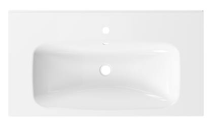
Representative photoCountertop washbasin
Countertop basin 625x400x50 mm E01 white
908 pcsRef #5SM625400KETE01
Countertop washbasin
Countertop washbasin 575x450x50 mm E01 white
311 pcsRef #5SM575450KETE01
Countertop washbasin
Countertop washbasin 625x450x50 mm E01 white
306 pcsRef #5SM625450KETE01
Countertop washbasin
Countertop basin 575x350x50 mm E01 white
169 pcsRef #5SS575350KETE01
Countertop washbasin
Countertop washbasin 525x350x50 mm, E01 white
164 pcsRef #5SS525350KETE01
Countertop washbasin
Countertop basin, 475x350x50 mm, E01 white
140 pcsRef #5SS475350KETE01
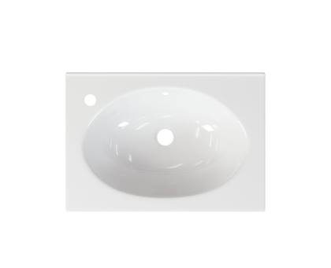
Representative photoCountertop washbasin
Countertop washbasin 575x400x50 mm E01 white
123 pcsRef #5PT575400KEVE01
Countertop washbasin
Astra countertop washbasin 60, 592x395x15 mm, white
116 pcsRef #SAN44060
Countertop washbasin
Countertop basin 625x400x50 mm E01 white
113 pcsRef #5PT625400KEVE01
Countertop washbasin
Astra countertop washbasin 80, 792x395x15 mm, white
109 pcsRef #SAN44080
Countertop washbasin
Astra countertop washbasin 50, 492 x 395 x 15 mm, white
108 pcsRef #SAN44050
Countertop washbasin
Countertop basin 625x350x50 mm E01 white
108 pcsRef #5SS625350KETE01
Countertop washbasin
Wall rail for adjustable countertop sink
100 pcsRef #9393KISKO
Countertop washbasin
Countertop washbasin 825x450x50 mm E01 white
95 pcsRef #5SM825450KETE01
Countertop washbasin
Countertop washbasin 625 x 400 x 50 mm, white
95 pcsRef #5PT625400KEO01
Countertop washbasin
Countertop washbasin 625x450x50 mm E01 white
87 pcsRef #5PT625450KETE01
Countertop washbasin
Countertop basin 825x400x50 mm E01 white
75 pcsRef #5PT825400KEVE01
Countertop washbasin
Countertop basin 575 x 400 x 50 mm, E01 white
72 pcsRef #5SM575400KETE01
Countertop washbasin
Countertop washbasin 825x400x50 mm E01 white
68 pcsRef #5SM825400KETE01
Countertop washbasin
Countertop basin 425x350x50 mm E01 white
64 pcsRef #5SS425350KETE01
Countertop washbasin
Countertop washbasin, 475 x 350 x 50 mm, E01 white
62 pcsRef #5PT475350KEVE01
Countertop washbasin
Countertop washbasin 725x450x50 mm E01 white
55 pcsRef #5SM725450KETE01
Countertop washbasin
Countertop basin, 625x500x50 mm, white
54 pcsRef #5PT625500KET01
Countertop washbasin
Countertop basin 425x350x50 mm E01 white
52 pcsRef #5PT425350KEVE01
Countertop washbasin
Countertop washbasin 725x450x50 mm E01 white
52 pcsRef #5PT725450KETE01
Countertop washbasin
Countertop washbasin 575x350x50 mm E01 white
48 pcsRef #5PT575350KEVE01
Countertop washbasin
Countertop basin 925x400x50 mm E01 white
48 pcsRef #5PT925400KEVE01
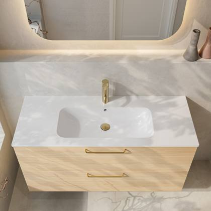
Product photoCountertop washbasin
Aava countertop basin 100, 1010 x 465 x 15 mm, white
46 pcsRef #SAN43101
Countertop washbasin
Countertop basin 725x400x50 mm E01 white
45 pcsRef #5PT725400KEVE01
Countertop washbasin
Countertop basin 925x400x50 mm E01 white
41 pcsRef #5SM925400KETE01
Countertop washbasin
Countertop washbasin 825x450x50 mm E01 white
40 pcsRef #5PT825450KETE01
Countertop washbasin
Aura countertop sink 50, 490x386x95 mm, white
39 pcsRef #SAN27050
Countertop washbasin
Aura countertop washbasin 60, 590x386x95 mm, white
39 pcsRef #SAN27060
Countertop washbasin
Aava countertop basin 70, 710 x 465 x 15 mm, white
39 pcsRef #SAN43071
Countertop washbasin
Countertop washbasin, 675x400x50 mm, white
39 pcsRef #5SM675400KETE01
Countertop washbasin
Aava countertop basin 80, 810 x 465 x 15 mm, white
35 pcsRef #SAN43081
Countertop washbasin
Countertop basin 925 x 450 x 50 mm, E01 white
34 pcsRef #5SL925450KETE01
Countertop washbasin
Small countertop sink, right-hand, 36x24x11 cm, white
34 pcsRef #CA360240OCE01
Countertop washbasin
Countertop washbasin 575x450x50 mm E01 white
33 pcsRef #5PT575450KETE01
Countertop washbasin
Aava countertop washbasin 60, 610x465x15 mm, white
32 pcsRef #SAN43061
Countertop washbasin
Countertop washbasin, 525 x 320 x 50 mm, E01 white
31 pcsRef #5SS525320KEVE01
Countertop washbasin
Countertop washbasin, 475x300x50 mm, white
29 pcsRef #5PT475300KEVE01
Countertop washbasin
Countertop basin 925x450x50 mm E01 white
29 pcsRef #5PT925450KETE01
Countertop washbasin
Countertop basin, 825x400x50 mm, E01 white
25 pcsRef #5PM825400KEVE01
Countertop washbasin
Aura countertop washbasin 70, 690x386x95 mm, white
23 pcsRef #SAN27070
Countertop washbasin
Countertop basin, 1025 x 450 x 50 mm, E01 white
23 pcsRef #5SM1025450VETE01
Countertop washbasin
Countertop washbasin, 575x500x50 mm, white
21 pcsRef #5PT575500KET01
Countertop washbasin
Countertop basin, 525 x 350 x 50 mm, white
21 pcsRef #5TR525350KEV01
Countertop washbasin
Aava countertop washbasin 120, 1210 x 465 x 15 mm, white
20 pcsRef #SAN43121
Countertop washbasin
Countertop washbasin 525x350x50 mm, E01 white
20 pcsRef #5PT525350KEVE01
Countertop washbasin
Countertop basin 1025x400x50 mm E01 white
20 pcsRef #5SM1025400KETE01
Countertop washbasin
Countertop basin, 1025 x 450 x 50 mm, E01 white
20 pcsRef #5SM1025450OETE01
Countertop washbasin
Countertop basin, 675x320x50 mm, white
20 pcsRef #5SS675320KEV01
Countertop washbasin
Countertop basin 725x400x50 mm E01 white
18 pcsRef #5SM725400KETE01
Countertop washbasin
Countertop basin, 575x400x50 mm, white
18 pcsRef #5TR575400KEV01
Countertop washbasin
Countertop basin 600x480x30
17 pcsRef #3I600480KEV01
Countertop washbasin
Countertop basin 625x350x50 mm E01 white
17 pcsRef #5PM625350OEVE01
Countertop washbasin
Countertop basin, 925x450x50 mm, E01 white
17 pcsRef #5SM925450OETE01
Countertop washbasin
Countertop basin 825x450x50 mm E01 white
16 pcsRef #5PM825450VETE01
Countertop washbasin
Countertop basin, 1025 x 400 x 50 mm, E01 white
16 pcsRef #5SM1025400OETE01
Countertop washbasin
Countertop basin, 1225x450x50 mm, E01 white
14 pcsRef #5SL1225450OETE01
Countertop washbasin
Small countertop washbasin, left-hand, 36x24x11 cm, white
14 pcsRef #CA360240VCE01
Countertop washbasin
Countertop washbasin, 625x320x50 mm, white
14 pcsRef #5SS625320KEV01
Countertop washbasin
Countertop washbasin 775x450x50 mm, E01 white
13 pcsRef #5PM775450OETE01
Countertop washbasin
Countertop basin 1025x450x50 mm E01 white
13 pcsRef #5SL1025450KETE01
Countertop washbasin
Countertop basin, 1225 x 400 x 50 mm, E01 white
12 pcsRef #5SM1225400VETE01
Countertop washbasin
Countertop washbasin, 675 x 500 x 50 mm, white
12 pcsRef #5SM675500KET01
Countertop washbasin
Countertop basin 725x450x50 mm E01 white
11 pcsRef #5PM725450VETE01
Countertop washbasin
Countertop basin, 525 x 400 x 50 mm, white
11 pcsRef #5TR525400KEV01
Countertop washbasin
Countertop basin 1025x400x100 mm E01 white
10 pcsRef #10SM1025400KETE01
Countertop washbasin
Countertop washbasin, 925x400x50 mm, E01 white
10 pcsRef #5SM925400OETE01
Countertop washbasin
Alape countertop basin 1200x500 ISO cup
10 pcsRef #ATWTGR1200H
Countertop washbasin
Countertop basin 575x300x50 mm E01 white
9 pcsRef #5PM575300OEVE01
Countertop washbasin
Countertop basin 775x450x50 mm E01 white
9 pcsRef #5PM775450VETE01
Countertop washbasin
Countertop basin, 1025 x 400 x 50 mm, E01 white
9 pcsRef #5SM1025400VETE01
Countertop washbasin
Countertop washbasin, 925x400x50 mm, E01 white
9 pcsRef #5SM925400VETE01
Countertop washbasin
Countertop basin, 1125x500x50 mm, white
9 pcsRef #5PT1125500VET01
Countertop washbasin
Countertop basin 775x400x50 mm E01 white
8 pcsRef #5PM775400OEVE01
Countertop washbasin
Countertop washbasin 825x400x50 mm, E01 white
8 pcsRef #5PM825400OEVE01
Countertop washbasin
Countertop basin, 1225x450x50 mm, E01 white
8 pcsRef #5SL1225450VETE01
Countertop washbasin
Countertop basin, 725x350x50 mm, white
8 pcsRef #5PM725350OEV01
Countertop washbasin
Countertop basin 525x400x50 mm, white
8 pcsRef #5TR525400KEO01
Countertop washbasin
Countertop basin 725x400x50 mm E01 white
7 pcsRef #5PM725400OEVE01
Countertop washbasin
Countertop basin 725x450x50 mm E01 white
7 pcsRef #5PM725450OETE01
Countertop washbasin
Countertop basin, 825x450x50 mm, E01 white
7 pcsRef #5PM825450KETE01
Countertop washbasin
Countertop basin 825 x 400 x 100 mm, E01 white
7 pcsRef #10SM825400KETE01
Countertop washbasin
Alape countertop basin 800x500 ISO cup
7 pcsRef #ATWTGR800H
Countertop washbasin
Countertop basin 575x350x50 mm E01 white
6 pcsRef #5PM575350OEVE01
Countertop washbasin
Countertop basin 575x350x50 mm E01 white
6 pcsRef #5PM575350VEVE01
Countertop washbasin
Countertop basin 675x400x50 mm E01 white
6 pcsRef #5PM675400VEVE01
Countertop washbasin
Countertop basin 775x400x50 mm E01 white
6 pcsRef #5PM775400VEVE01
Countertop washbasin
Countertop basin, 675x350x50 mm, white
6 pcsRef #5SS675350KET01
Countertop washbasin
Countertop basin 675x300x50mm, left-hand end bevelled
5 pcsRef #5PM675300VEO01
Countertop washbasin
Countertop basin 675x450x50 mm E01 white
5 pcsRef #5PM675450VETE01
Countertop washbasin
Countertop washbasin 825x400x50 mm, E01 white
5 pcsRef #5PM825400VEVE01
Countertop washbasin
Countertop basin 675 x 400 x 100 mm
5 pcsRef #10T675400KEV01
Countertop washbasin
Countertop basin 575x300x50 mm E01 white
4 pcsRef #5PM575300VEVE01
Countertop washbasin
Countertop basin 675x400x50 mm E01 white
4 pcsRef #5PM675400OEVE01
Countertop washbasin
Countertop basin 675x450x50 mm E01 white
4 pcsRef #5PM675450OETE01
Countertop washbasin
Countertop basin 725x400x50 mm E01 white
4 pcsRef #5PM725400VEVE01
Countertop washbasin
Countertop basin, 775x400x50 mm, E01 white
4 pcsRef #5PM775400KEVE01
Countertop washbasin
Countertop basin 825x450x50 mm E01 white
4 pcsRef #5PM825450OETE01
Countertop washbasin
Countertop basin, 725x350x50 mm, white
4 pcsRef #5PM725350VEV01
Countertop washbasin
Countertop basin 525x400x50 mm BLACK
4 pcsRef #5TR525400KEV24
Countertop washbasin
Countertop basin, 1225 x 400 x 50 mm, E01 white
3 pcsRef #5SM1225400OETE01
Countertop washbasin
Countertop basin, 925 x 450 x 50 mm, E01 white
3 pcsRef #5SM925450VETE01
Countertop washbasin
Countertop basin, 775x450x50 mm, E01 white
2 pcsRef #5PM775450KETE01
Countertop washbasin
Countertop basin, 925x400x50 mm, E01 white
2 pcsRef #5PM925400KEVE01
Countertop washbasin
Countertop basin 525x400x50 mm E01 white
2 pcsRef #5PT525400KEVE01
Countertop washbasin
Trend countertop sink, centre, 625x400x50
2 pcsRef #E5000150_7
Countertop washbasin
Countertop basin 825 x 400 x 100 mm
2 pcsRef #10T825400KEV01
Countertop washbasin
Countertop basin 925 x 400 x 100 mm
2 pcsRef #10T925400KEV01
Countertop washbasin
Countertop basin 975 x 400 x 100 mm
2 pcsRef #10T975400KEV01
Countertop washbasin
Trend countertop washbasin, centre-mounted, 625x500x50
2 pcsRef #E5000150_4
Countertop washbasin
Countertop basin 625x350x50 mm E01 white
1 pcsRef #5PM625350VEVE01
Countertop washbasin
Countertop basin, 1225 x 500 x 50 mm, E01 white
1 pcsRef #5SL1225500KETE01
Countertop washbasin
Countertop basin 725 x 400 x 100 mm
1 pcsRef #10T725400KEV01
Countertop washbasin
Countertop basin, 825x400x50 mm, white
1 pcsRef #5PM825400VEV01
Countertop washbasin
Countertop basin, 525 x 350 x 50 mm, black
1 pcsRef #5SS525350KET24
Countertop washbasin
Countertop basin, 475 x 400 x 50 mm, white
1 pcsRef #5TR475400KEV01
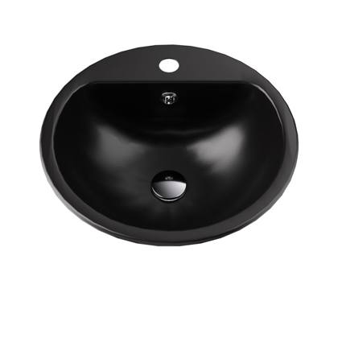
Product photoInset / recessed washbasin
Into inset washbasin, 41.5 x 41.5 x 15.5 cm, white
42 pcsRef #9250E01B
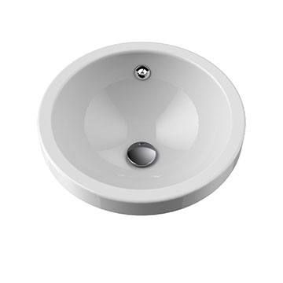
Representative photoInset / recessed washbasin
UNDERMOUNT WASHBASIN 415, tap at the back, white
26 pcsRef #9250EICO
Inset / recessed washbasin
Onni under-counter washbasin, 47x27.5x12 cm
24 pcsRef #9A2301E01
Inset / recessed washbasin
Kaldewei Puro under-mounted washbasin, 46x38.5 cm
20 pcsRef #KW3159AW
Inset / recessed washbasin
Lempi inset washbasin, 40x40x14 cm, white
19 pcsRef #9065E01
Inset / recessed washbasin
Lempi inset washbasin, 35x35x14 cm, white
16 pcsRef #9064E01
Inset / recessed washbasin
Onni under-counter sink, 470x280 mm, 24 Black
12 pcsRef #9A230124
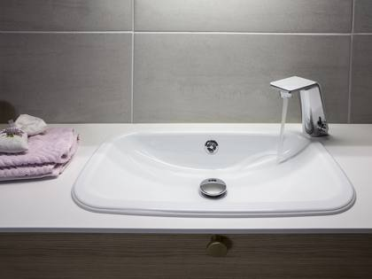
Product photoInset / recessed washbasin
Tähti inset basin, 55x33x10.5 cm, 24 Black
11 pcsRef #90SM24
Inset / recessed washbasin
Lempi inset sink, 35x35x14 cm, 24 Black
9 pcsRef #906424
Inset / recessed washbasin
Tähti recessed washbasin, 55x33x10.5 cm, white
9 pcsRef #90SME01
Inset / recessed washbasin
Inset washbasin 905101, tap hole on the right.
8 pcsRef #9051E0102
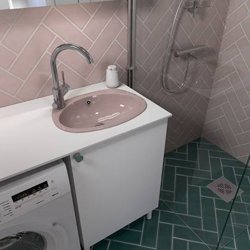
Product photoInset / recessed washbasin
Toivo inset sink, 39x30x10.5 cm, 24 Black
8 pcsRef #905224
Inset / recessed washbasin
Countertop washbasin, 625 x 350 x 50 mm, white 90510102 Inset washbasin 905101, tap hole on the right. 27.00 PCS
8 pcsRef #5TR625350KEV01
Inset / recessed washbasin
Toivo inset washbasin, 51x38x14 cm, 24 Black
7 pcsRef #905124
Inset / recessed washbasin
Lempi inset basin, 40x40x14 cm, 24 Black
7 pcsRef #906524
Inset / recessed washbasin
Into inset washbasin, 41.5 x 41.5 x 15.5 cm, 24 Black
6 pcsRef #925024
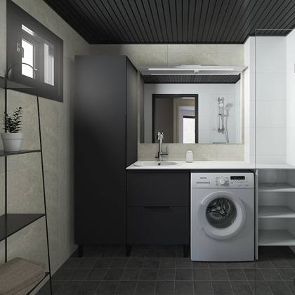
Product photoInset / recessed washbasin
Usko inset washbasin, 51x41x14 cm, 24 Black
6 pcsRef #925124
Inset / recessed washbasin
Helmi recessed washbasin, 40x40x15 cm, 01 White
5 pcsRef #905501
Inset / recessed washbasin
Tähti inset sink, 55x33x10.5 cm, D Dark metallic
5 pcsRef #90SMD
Inset / recessed washbasin
Tähti inset sink, 55x33x10.5 cm, M Matt Black
5 pcsRef #90SMM
Inset / recessed washbasin
Into inset basin, 41.5 x 41.5 x 15.5 cm, 60 Pink
4 pcsRef #925060
Inset / recessed washbasin
Toivo inset washbasin, 39x30x10.5 cm, 01 White
3 pcsRef #905201
Inset / recessed washbasin
Helmi recessed washbasin, 35x35x12.5 cm, 24 Black
3 pcsRef #905424
Inset / recessed washbasin
Helmi recessed washbasin, 40x40x15 cm, 24 Black
3 pcsRef #905524
Inset / recessed washbasin
Tähti inset sink, 55x33x10.5 cm, 60 Pink
3 pcsRef #90SM60
Inset / recessed washbasin
Into recessed washbasin, 41.5 x 41.5 x 15.5 cm, D Dark metal
3 pcsRef #9250D
Inset / recessed washbasin
Toivo inset washbasin, 51x38x14 cm, M Matt Black
2 pcsRef #9051M
Inset / recessed washbasin
Toivo recessed basin, 39x30x10.5 cm, D Dark metal finish
2 pcsRef #9052D
Inset / recessed washbasin
Helmi recessed washbasin, 40x40x15 cm, M Matt Black
2 pcsRef #9055M
Inset / recessed washbasin
Lempi inset sink, 40x40x14 cm, M Matt Black
2 pcsRef #9065M
Inset / recessed washbasin
Toivo recessed washbasin, 39x30x10.5 cm, M Matt black
1 pcsRef #9052M
Inset / recessed washbasin
Helmi recessed sink, 35x35x12.5 cm, 01 White
1 pcsRef #905401
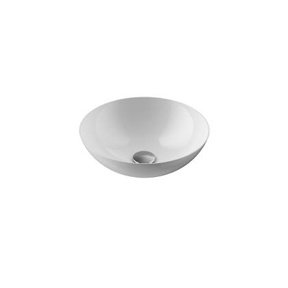
Representative photoBowl (vessel) washbasin
Kaldewei Miena bowl-shaped washbasin, 38 cm,
26 pcsRef #KW3181AW
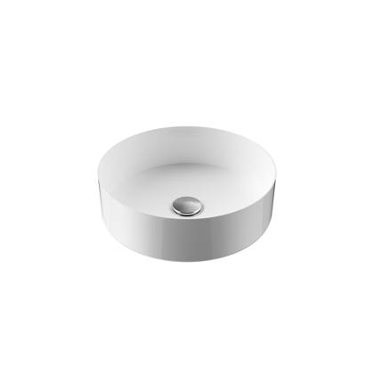
Product photoBowl (vessel) washbasin
Loop bowl sink, 35x35x11 cm, white
17 pcsRef #9L35E01
Bowl (vessel) washbasin
Relax bowl sink, 33.5 x 33.5 x 11.5 cm, white
16 pcsRef #9RELAXE01
Bowl (vessel) washbasin
Kaldewei Ming bowl-shaped washbasin, 40 cm, Alpine white
15 pcsRef #KW3187AW
Bowl (vessel) washbasin
Kaldewei Miena bowl-shaped washbasin, 31 cm, Alpine white
15 pcsRef #KW3193AW
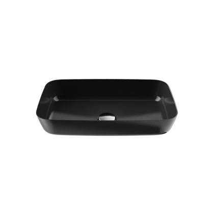
Product photoBowl (vessel) washbasin
Oodi bowl-shaped washbasin, 47x28x10 cm, white
15 pcsRef #9M2302E01
Bowl (vessel) washbasin
Oodi bowl sink, 470x280 mm, 24 black
11 pcsRef #9M230224
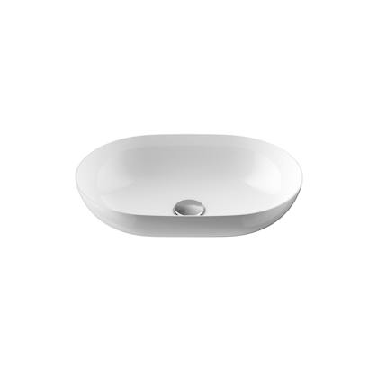
Product photoBowl (vessel) washbasin
Aatos bowl sink, 45 x 31 cm, white
9 pcsRef #9L_AATOSE01
Bowl (vessel) washbasin
Relax bowl, 33.5 x 33.5 x 11.5 cm, 60 Pink
6 pcsRef #9RELAX60
Bowl (vessel) washbasin
Stella countertop basin 475x350x50 mm S-bowl
6 pcsRef #E289951
Bowl (vessel) washbasin
Relax bowl sink, 33.5 x 33.5 x 11.5 cm, 24 Black
5 pcsRef #5
Bowl (vessel) washbasin
Aatos basin, 450 × 310 × 105 mm, dark metallic finish
5 pcsRef #9L_AATOSD
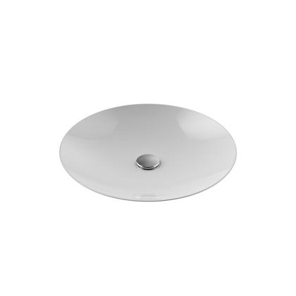
Product photoBowl (vessel) washbasin
Love bowl sink, 450 mm, white
5 pcsRef #9LOVEE01
Bowl (vessel) washbasin
Relax bowl sink, 33.5 x 33.5 x 11.5 cm, 24 Black
5 pcsRef #9RELAX24
Bowl (vessel) washbasin
Relax bowl sink, 33.5 x 33.5 x 11.5 cm, H11 Grey
4 pcsRef #9RELAXH11
Bowl (vessel) washbasin
Loop bowl, 35x35x11 cm, 01 White / H11
3 pcsRef #9L3501H11
Bowl (vessel) washbasin
Aatos bowl sink, 45x31x10.5 cm, 24 Black
2 pcsRef #9L_AATOS24
Bowl (vessel) washbasin
Under-counter washbasin 600x430 SMALL bowl
2 pcsRef #ATWTPR600H
Bowl (vessel) washbasin
Loop bowl sink, 35x35x11 cm, 01 White / M Ma
1 pcsRef #9L3501M
Bowl (vessel) washbasin
Alabe countertop basin 1000x500 ISO bowl
1 pcsRef #ATWTGR1000H
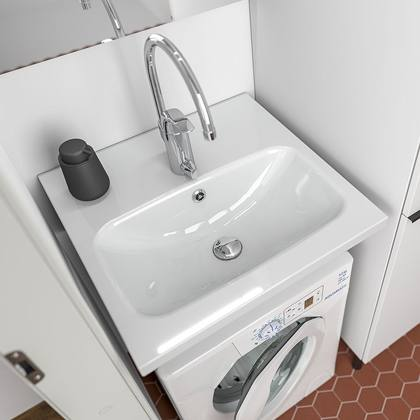
Product photoWashing-machine / utility sink
Stella washing machine sink, 560x560x200 mm, white
24 pcsRef #9383SME01
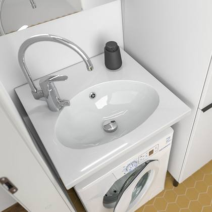
Product photoWashing-machine / utility sink
Trend washing machine sink, 560x560x200 mm, white
6 pcsRef #9383E01
Washing-machine / utility sink
Wall-mounted sink 600x560 mm, white, tap at the back, rounded front
5 pcsRef #XDR600560KMB
Washing-machine / utility sink
Trend washing machine sink, 600x560x155 mm, white
4 pcsRef #XDR600560E01
Bowl (vessel) washbasin
Loop bowl sink, 350 mm, white
1 pcsRef #2LAATU9L3E01
Washing-machine / utility sink
Stella washing machine sink, 560x560x200 mm, white
1 pcsRef #2LAATU9383SME01
More items without photo (10)
| Ref | Item | Type | Status | Qty |
|---|---|---|---|---|
| Ref #9CC553501 | CrissCross sink 550x350x120 mm, white | Washbasin / sink (other) | 1st quality | 3 |
| Ref #COMBOCEG50B | BLACK COMPOSITE BASIN | Washbasin / sink (other) | 1st quality | 3 |
| Ref #COMBOCEG5157BF | BLACK COMPOSITE SINK, lip-edge model | Washbasin / sink (other) | 1st quality | 2 |
| Ref #JAZZP50 | Steel sink, 530 x 370 x 180 mm | Washbasin / sink (other) | 1st quality | 2 |
| Ref #SAVVAALA50 | composite sink, black 38013 | Washbasin / sink (other) | 1st quality | 1 |
| Ref #SILENT3 | Auxiliary sink -Silent-3 | Washbasin / sink (other) | 1st quality | 1 |
| Ref #9CC553001 | CrissCross sink 550 x 300 mm, white | Washbasin / sink (other) | 1st quality | 1 |
| Ref #COMBOP5060 | Steel sink, 592x480x180 mm | Washbasin / sink (other) | 1st quality | 1 |
| Ref #JAZZP40PT | Steel sink, rim-mounted, 450x390x180 mm | Washbasin / sink (other) | 1st quality | 1 |
| Ref #111534010001 | KA BW SANIFORM PLUS Mod.360- 1,1400x700mm | Bathtub (enamelled steel) | 1st quality | 2 |
★ Vanity units 48 items · 183 pcs
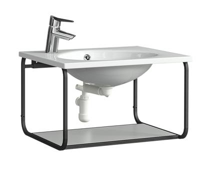
Product photoMetal frame (vanity unit / wall shelf)
MODULA low base unit, frame 360x455x575
58 pcsRef #MMLAKM600500FRAME
Metal frame (vanity unit / wall shelf)
MINI washbasin unit frame L575xW375xH360
20 pcsRef #MMLAKM600400FRAME
Metal frame (vanity unit / wall shelf)
MODULA wall shelf, frame 153x600x108
11 pcsRef #MMLSH600 FRAME
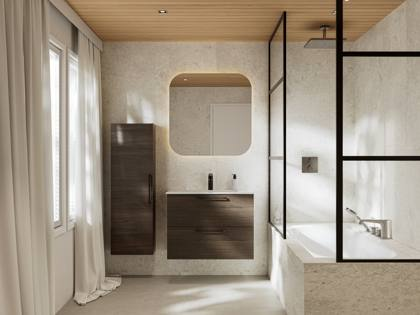
Product photoVanity unit, 2-piece (cabinet + washbasin)
Astra sink unit, 2-piece, 80x40x60.3 cm MW
8 pcsRef #AKAF8040MW
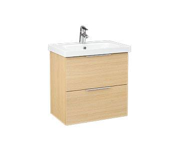
Product photoVanity unit, 2-piece (cabinet + washbasin)
Stella sink unit, 2-piece set, 62.5 x 40 x 64 cm, MW
7 pcsRef #AKSL6040MW
Vanity unit, 2-piece (cabinet + washbasin)
Astra sink unit, 2-piece, 50x40x60.3 cm, RS2
5 pcsRef #AKAF5040RS2
Vanity unit, 2-piece (cabinet + washbasin)
Astra washbasin unit, 2-piece set, 50x40x60.3 cm, MW
5 pcsRef #AKAS5040MW
Vanity unit, 2-piece (cabinet + washbasin)
Astra sink unit, 2-piece, 80x40x60.3 cm, MW
5 pcsRef #AKAS8040MW
Vanity unit, 2-piece (cabinet + washbasin)
Astra sink unit, 2-piece set, 79.2 x 40 x 60.3 cm, MW
5 pcsRef #AKA8040MW
Vanity unit, 2-piece (cabinet + washbasin)
Stella sink unit, 2-piece set, 62.5 x 40 x 64 cm, MP2
4 pcsRef #AKSL6040MP2
Vanity unit, 2-piece (cabinet + washbasin)
Astra sink, 2 pcs, 50 x 40 x 60.3 cm, MW
3 pcsRef #AKAF5040MW
Vanity unit, 2-piece (cabinet + washbasin)
Astra sink, 2-pack, 60x40x60.3 cm, MW
3 pcsRef #AKAS6040MW
Vanity unit, 2-piece (cabinet + washbasin)
Astra sink unit, 2-piece, 80x40x60.3 cm RS2
3 pcsRef #AKAS8040RS2
Vanity unit, 2-piece (cabinet + washbasin)
Stella sink unit, 2-piece set, 62.5 x 40 x 64 cm E2
3 pcsRef #AKSL6040E2
Vanity unit, 2-piece (cabinet + washbasin)
Stella sink unit, 2-piece set, 82.5 x 40 x 64 cm, MP2
3 pcsRef #AKSL8040MP2
Vanity unit, 2-piece (cabinet + washbasin)
Astra sink unit, 2-piece set, 60x40x60.3 cm, RS2
2 pcsRef #AKAF6040RS2
Vanity unit, 2-piece (cabinet + washbasin)
Astra sink unit, 2-piece, 80x40x60.3 cm, RS2
2 pcsRef #AKAF8040RS2
Vanity unit, 2-piece (cabinet + washbasin)
Astra sink unit, 2-piece, 60x40x60.3 cm RS2
2 pcsRef #AKAS6040RS2
Vanity unit, 2-piece (cabinet + washbasin)
Stella sink unit, 2-piece set, 82.5 x 40 x 64 cm, MG
2 pcsRef #AKSL8040MG
Vanity unit, 2-piece (cabinet + washbasin)
Stella sink unit, 2-piece set, 82.5 x 40 x 64 cm, MW
2 pcsRef #AKSL8040MW
Vanity unit, 2-piece (cabinet + washbasin)
Astra sink unit, 2-piece set, 60x40x60.3 cm E2
1 pcsRef #AKAF6040E2
Vanity unit, 2-piece (cabinet + washbasin)
Aava sink unit, 2-piece, 70x45x60.3 cm, MW
1 pcsRef #AKAF7045MW
Vanity unit, 2-piece (cabinet + washbasin)
Astra sink unit, 2-piece, 50x40x60.3 cm, RS2
1 pcsRef #AKAS5040RS2
Vanity unit, 2-piece (cabinet + washbasin)
Stella sink unit, 2-piece set, 57.5x40x64 cm, MG
1 pcsRef #AKSL5540MG
Vanity unit, 2-piece (cabinet + washbasin)
Stella sink unit, 2-piece set, 62.5 x 40 x 64 cm, MG
1 pcsRef #AKSL6040MG
Vanity unit, 2-piece (cabinet + washbasin)
Stella sink unit, 2-piece, 72.5 x 40 x 64 cm MP2
1 pcsRef #AKSL7040MP2
Vanity unit, 2-piece (cabinet + washbasin)
Stella sink unit, 2-piece set, 82.5 x 45 x 64 cm E2
1 pcsRef #AKSL8045E2
Vanity unit, 2-piece (cabinet + washbasin)
Stella sink unit, 2-piece set, 92.5 x 40 x 64 cm, E2
1 pcsRef #AKSL9040E2
Vanity unit, 2-piece (cabinet + washbasin)
Stella sink unit, 2-piece set, 92.5 x 40 x 64 cm, MW
1 pcsRef #AKSL9040MW
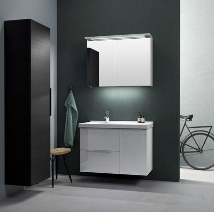
Product photoVanity unit, 2-piece (cabinet + washbasin)
Trend sink unit, 2-piece, 52.5 x 35 x 64 cm, E2
1 pcsRef #AKTL5035E2
Vanity unit, 2-piece (cabinet + washbasin)
Trend washbasin unit, 2-piece set, 62.5 x 40 x 64 cm, MW
1 pcsRef #AKTL6040MW
Vanity cabinet (washbasin not stated)
Astra sink unit, 2 doors, 60x40x60.3 cm, MW
1 pcsRef #AKAHF6040MW
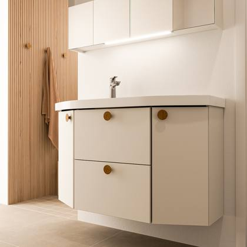
Product photoVanity cabinet (washbasin not stated)
Mondo washbasin unit, 2 doors, right-hand, 62.5 x 35 x 64 cm RS2
1 pcsRef #AKM6035ORS2
Vanity unit, 2-piece (cabinet + washbasin)
Stella sink unit, 2-piece set, 42.5 x 35 x 64 cm, L01
3 pcsRef #2LAATUMSL425350KL01
Vanity unit, 2-piece (cabinet + washbasin)
Stella washbasin unit, 2-piece, side unit, 102.5 x 45 x 64 cm, E2
1 pcsRef #2LAATUMSLS1025450VE2
Vanity unit, 2-piece (cabinet + washbasin)
Stella sink unit, 2-piece set, 122.5 x 45 x 64 cm, E2
1 pcsRef #2LAATUAKS12045E2
Vanity unit, 2-piece (cabinet + washbasin)
Trend sink, 2-piece set, 82.5 x 40 x 64 cm, MW
1 pcsRef #2LAATUAKT8040MW
Vanity unit, 2-piece (cabinet + washbasin)
Sink unit, 2-piece, 60x58x72.7cm RS2
1 pcsRef #2LAATUBK7L2A6060RS2
Vanity unit, 2-piece (cabinet + washbasin)
Mondo sink unit, 2-piece set, 1-door, 67.5 x 40 x 64 cm, L01
1 pcsRef #2LAATUMKL675400OL01
Vanity unit, 2-piece (cabinet + washbasin)
Mondo sink unit, 2-piece set, 1-door, 82.5 x 40 x 64 cm, GA1
1 pcsRef #2LAATUMKL825400OGA1
Vanity unit, 2-piece (cabinet + washbasin)
Stella sink unit, 2-piece set, 62.5 x 45 x 64 cm, L01
1 pcsRef #2LAATUMSL625450KL01
Vanity unit, 2-piece (cabinet + washbasin)
Stella sink unit, 2-piece set, 92.5 x 45 x 64 cm 2910
1 pcsRef #2LAATUMSL925450K2910
Vanity unit, 2-piece (cabinet + washbasin)
Stella sink unit, 2-piece side unit, 92.5 x 40 x 64 cm 01
1 pcsRef #2LAATUMSLS925400V01
Vanity cabinet (washbasin not stated)
Mondo washbasin unit, 2-door, 82.5 x 40 x 64 cm, 01
1 pcsRef #2LAATUMKL82540001
Vanity cabinet (washbasin not stated)
Stella 2-door sink unit 57.5x40x64cm RS2 item
1 pcsRef #2LAATUAKSO5540RS2
Vanity cabinet (washbasin not stated)
Stella sink unit, 1 pack, 82.5 x 40 x 49.4 cm, RS2
1 pcsRef #2LAATUMSL725450KGA1
Vanity cabinet (washbasin not stated)
Stella sink unit, 1 pack, 82.5 x 40 x 49.4 cm, RS2
1 pcsRef #2LAATUMSLM825400KRS2
Vanity cabinet (washbasin not stated)
Stella 1-door sink unit, right-hand, 42.5 x 35 x 64 item cm L01
1 pcsRef #2LAATUMSO425350OL01
★ Mirror cabinets, LED mirrors & mirrors 66 items · 641 pcs
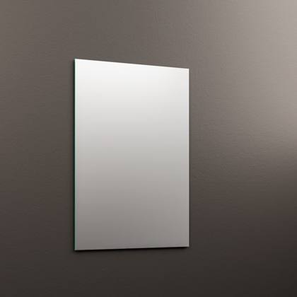
Product photoWall mirror
MIRA mirror 50x85 cm
79 pcsRef #MIRA50
Wall mirror
MIRA Mirror 60x85 cm
69 pcsRef #MIRA60
Wall mirror
MIRA mirror 80x85 cm
64 pcsRef #MIRA80
Wall mirror
MIRA Mirror 40x85 cm
37 pcsRef #MIRA40
Wall mirror
MIRA Mirror 100x85 cm
23 pcsRef #MIRA100
Wall mirror
MIRA Mirror 120x85 cm
18 pcsRef #MIRA120
Wall mirror
Plain flat mirror 50x4x85 cm E2
1 pcsRef #LPI500E2
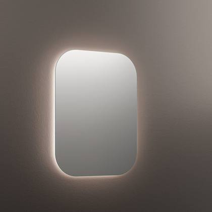
Product photoLED light mirror
LUMO Light Mirror 50x80 cm, IP44 4000K
40 pcsRef #LUMO50
LED light mirror
LUMO Light Mirror 60x80 cm, IP44 4000K
38 pcsRef #LUMO60
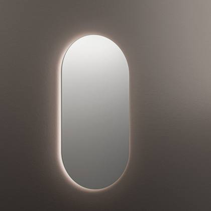
Product photoLED light mirror
OVO Lighted Mirror 50x100 cm, IP44 4000K
32 pcsRef #OVO50
LED light mirror
LUMO light reflector 80x80 cm, IP44 4000K
30 pcsRef #LUMO80
LED light mirror
LUMO light reflector 100 x 80 cm, IP44 4000K
27 pcsRef #LUMO100
LED light mirror
123867 HALO light reflector, Ø60 cm, IP44, 4000K
7 pcsRef #HALO60
LED light mirror
123868 HALO Light Mirror, Ø80 cm, IP44, 4000K
6 pcsRef #HALO80
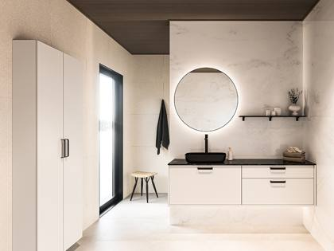
Product photoLED light mirror
123972 KAJO light mirror, Ø60 cm, IP44, 4000K
2 pcsRef #KAJO60
LED light mirror
LUMI light reflector, Ø600x35 mm
2 pcsRef #HT123864
LED light mirror
HALO reflector Ø900x35mm 29.4W 2269LM Osram 4000K
2 pcsRef #HT123869
LED light mirror
CAPSUL light reflector, 500x1000x35 mm
2 pcsRef #HT123964
LED light mirror
123919 HILE light reflector 120×85 cm IP44 4000K
1 pcsRef #HILE120
LED light mirror
123917 HILE Light Mirror 80x85 cm IP44 4000K
1 pcsRef #HILE80
LED light mirror
123865 LUMI light mirror, Ø75 cm, IP44, 4000K
1 pcsRef #LUMI75
LED light mirror
HILE light mirror, 600 x 700 x 35 mm
1 pcsRef #HT123955
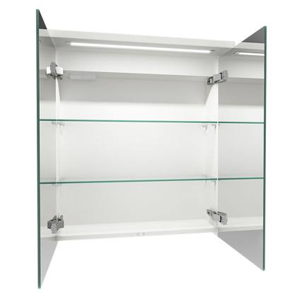
Product photoMirror cabinet
Mirror cabinet Highlight 2-door, straight, 80 cm, MW
10 pcsRef #LPKL800PONMW
Mirror cabinet
HighlightSpc mirror cabinet, 2-door, socket, right- hand, 60cm MW
10 pcsRef #LPKLPR600POMW
Mirror cabinet
Highlight mirror cabinet, 1 door, right-hand socket, 50 cm, MW
9 pcsRef #LPKL500PONMW
Mirror cabinet
Peilikpi Highlight 2-door, straight, 90 cm, RS2
9 pcsRef #LPKL900PONRS2
Mirror cabinet
Mirror cabinet Highlight 2-door, straight, 60 cm, MW
8 pcsRef #LPKL600PONDMW
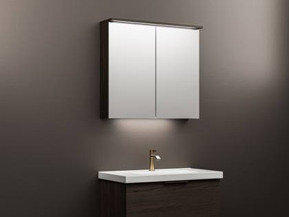
Product photoMirror cabinet
Unic mirror cabinet, 2 doors, 50 x 20 x 72.7 cm, MW
7 pcsRef #PKA50MW
Mirror cabinet
Unic mirror cabinet, 2 doors, 60x20x72.7 cm RS2
7 pcsRef #PKA60RS2
Mirror cabinet
Mirror cabinet Highlight 2-door, straight, 90 cm, MW
7 pcsRef #LPKL900PONMW
Mirror cabinet
Unic mirror cabinet, 2 doors, 80x20x72.7 cm, MW
5 pcsRef #PKA80MW
Mirror cabinet
Highlight mirror rail, 1-door, straight, 50 cm, RS2
5 pcsRef #LPKL500PONRS2
Mirror cabinet
HighlightSpc mirror cabinet, 2-door, socket, right- hand, 60cm, MG
5 pcsRef #LPKLPR600POMG
Mirror cabinet
HighlightSpc mirror cabinet, 2-door, socket, right- hand, 60cm MP2
5 pcsRef #LPKLPR600POMP2
Mirror cabinet
Unic mirror cabinet, 2 doors, 50x20x72.7 cm RS2
4 pcsRef #PKA50RS2
Mirror cabinet
Unic mirror cabinet, 2 doors, 80x20x72.7 cm RS2
4 pcsRef #PKA80RS2
Mirror cabinet
HighlightSpc 2-door mirror cabinet with socket, right-hand side 55cm MW
4 pcsRef #LPKLPR550POMW
Mirror cabinet
HighlightSpc 2-door mirror cabinet with socket, right-hand side, 80cm MP2
4 pcsRef #LPKLPR800POMP2
Mirror cabinet
HighlightSpc 2-door mirror cabinet with right-hand socket, 60cm, E2
3 pcsRef #LPKLPR600POE2
Mirror cabinet
Unic 2-door mirror cabinet 60x20x72.7 cm MW
2 pcsRef #PKA60MW
Mirror cabinet
Unic mirror cabinet, 2 doors, 80 x 20 x 72.7 cm E2
2 pcsRef #PKA80E2
Mirror cabinet
Highlight mirror cabinet, 2 doors, straight, 60 cm RS2
2 pcsRef #LPKL600PONDRS2
Mirror cabinet
Highlight mirror cabinet, 2 doors, straight, 80 cm, RS2
2 pcsRef #LPKL800PONRS2
Mirror cabinet
HighlightSpc mirror cabinet, 2 doors, socket, right-hand, 80cm MW
2 pcsRef #LPKLPR800POMW
Mirror cabinet
Unic mirror cabinet, 2 doors, 55 x 20 x 72.7 cm MG
1 pcsRef #PKA55MG
Mirror cabinet
Unic mirror cabinet, 2 doors, 60 x 20 x 72.7 cm E2
1 pcsRef #PKA60E2
Mirror cabinet
Unic mirror cabinet, 2 doors, 80x20x72.7 cm MG
1 pcsRef #PKA80MG
Mirror cabinet
HighlightSpc 2-door mirror cabinet with item socket, right-hand side 90cm MW
1 pcsRef #LPKLPR900POMW
Wall mirror
Flat mirror Plain 50x4x85 cm L01
1 pcsRef #2LAATULPI500L01
Wall mirror
Plain, 85x4x85 cm, white
1 pcsRef #2LAATULPI85001
Mirror cabinet
Highlight mirror cabinet, 2 doors, socket on right, M01 White
18 pcsRef #2LAATULPKL500POM01
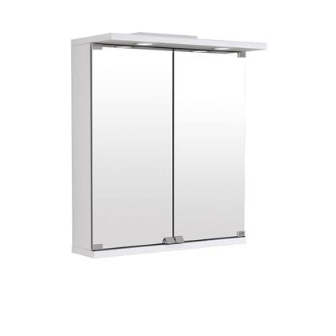
Product photoMirror cabinet
(brand) mirror cabinet, 3-door, 80 cm, white, with LED lighting, right-hand
2 pcsRef #2LAATUTSL80O01
Mirror cabinet
Mirror cabinet Highlight 3-door right-hand right-hand 120 cm GA1
2 pcsRef #2LAATULPKL1200POOGA1
Mirror cabinet
HighlightSpc 2-door mirror cabinet with right-hand socket, 60cm, E2
2 pcsRef #2LAATULPKLPR600POE2
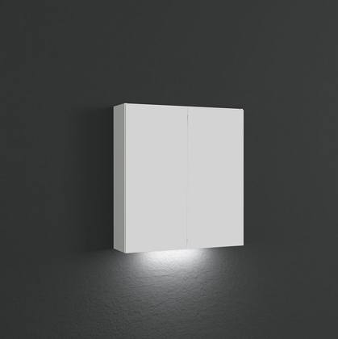
Product photoMirror cabinet
Choice 2-door mirror cabinet, left-hand, 60 cm, B2
1 pcsRef #2LAATULPK600PVB2
Mirror cabinet
Mirror cabinet, Highlight, 2-door, socket, right-hand, 100 cm, E2
1 pcsRef #2LAATULPKL1000POE2
Mirror cabinet
Highlight 2-door, 70 cm, white KPL
1 pcsRef #2LAATULPKL700PO01
Mirror cabinet
Softlight 2-door, 55 cm, white
1 pcsRef #2LAATULPKS550PV01
Mirror cabinet
Peilikpi Choice 2-door cupboard with plug socket, right-hand side, 80 cm MP2
1 pcsRef #2LAATULPK800POMP2
Mirror cabinet
Highlight 3-door mirror cabinet, right-hand side, 120 cm, L01
1 pcsRef #2LAATULPKL1200PVOL01
Mirror cabinet
Highlight 1 door, left-hand, 40 cm, white
1 pcsRef #2LAATULPKL400POV01
Mirror cabinet
HighlightSpc 2-door mirror unit with right- hand socket 100cm E2
1 pcsRef #2LAATULPKLPR1000POE2
Mirror cabinet
HighlightSpc 2-door mirror cabinet with right-hand socket 50cm MW
1 pcsRef #2LAATULPKLPR500POMW
Mirror cabinet
HighlightSpc 2-door mirror cabinet with socket, left-hand side 60cm RS2
1 pcsRef #2LAATULPKLPR600PVRS2
Mirror cabinet
HighlightSpc 2-door mirror cabinet with left- hand socket 70cm MW
1 pcsRef #2LAATULPKLPR700PVMW
Mirror cabinet
Softlight mirror cabinet, 1-door, right-hand, 45 cm L01
1 pcsRef #2LAATULPKS450POOL01
★ Bathroom & utility cabinets (complete) 80 items · 124 pcs
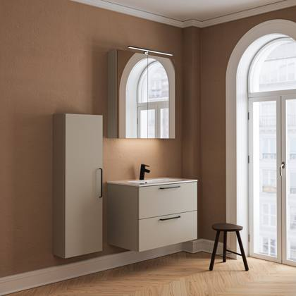
Representative photoTall cabinet
High-density shelving unit 30x33x182 cm MW
6 pcsRef #KK18H3035MW
Tall cabinet
High-density shelving 30x33x182 cm RS2
6 pcsRef #KK18H3035RS2
Tall cabinet
Tall cupboard, 1 door, left-hand, 60 x 58 x 123.4 cm, MW
5 pcsRef #KK12O6060VMW
Tall cabinet
High-density shelving 40x43x182 cm MW
3 pcsRef #KK18H4045MW
Tall cabinet
Tall cupboard, 1 door, right-hand, 60 x 58 x 123.4 cm, MW
3 pcsRef #KK12O6060OMW
Tall cabinet
Tall cabinet, 1 door, left-hand, 60 x 58 x 123.4 cm, E2
3 pcsRef #KK12O6060VE2
Tall cabinet
High cabinet, 1 door, right-hand, 60x58x123.4cm MP2
2 pcsRef #KK12O6060OMP2
Tall cabinet
High-capacity shelving 30x33x123.4 cm E2
1 pcsRef #KK12H3035E2
Tall cabinet
High-density shelving unit, basket 60x58x123.4 cm MG
1 pcsRef #KK12K6060MG
Tall cabinet
High-density shelving 40x38x182 cm MW
1 pcsRef #KK18H4040MW
Tall cabinet
High-density shelving 40x58x182 cm MW
1 pcsRef #KK18H4060MW
Tall cabinet
High-density shelving 50x58x182 cm MG
1 pcsRef #KK18H5060MG
Tall cabinet
High-density shelving baskets 40x43x182 cm MG
1 pcsRef #KK18K4045MG
Tall cabinet
High-density shelving units 40x58x196.1 cm E2
1 pcsRef #KK20H4060E2
Tall cabinet
High-density shelving 50x58x196.1 cm MG
1 pcsRef #KK20H5060MG
Tall cabinet
High-density shelving 60x58x196.1 cm MG
1 pcsRef #KK20H6060MG
Tall cabinet
Tall cupboard, 1 door, right-hand, 60x58x123.4cm MG item
1 pcsRef #KK12O6060OMG
Tall cabinet
Tall cabinet, 1 door, left-hand, 60 x 58 x 123.4 cm, MG
1 pcsRef #KK12O6060VMG
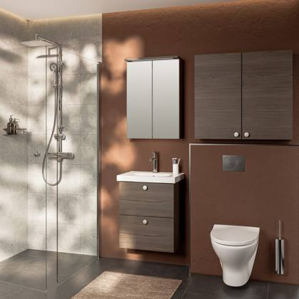
Representative photoWall cabinet
Wall cabinet, 1 door, shelves 40x20x85 cm RS2
7 pcsRef #YK9H4020RS2
Wall cabinet
Wall cabinet, 1 door, shelves 40x20x85 cm MW
4 pcsRef #YK9H4020MW
Wall cabinet
Wall cabinet, 2 doors, 60 x 20 x 58.6 cm, MW
4 pcsRef #YK6O6020MW
Wall cabinet
Wall unit, 1 door, shelves 60x33x58.6 cm MG
2 pcsRef #YK6H6035MG
Wall cabinet
Wall-mounted cabinet, 1 door, shelves 30x20x72.7 cm MG
2 pcsRef #YK7H3020MG
Wall cabinet
Wall cabinet, 1 door, shelves 60x33x72.7 cm E2
2 pcsRef #YK7H6035E2
Wall cabinet
Wall cabinet, 1 door, right-hand, 40 x 33 x 72.7 cm, MW
2 pcsRef #YK7O4035OMW
Wall cabinet
Wall cabinet, 1 door, right-hand, 50 x 33 x 72.7 cm MW
2 pcsRef #YK7O5035OMW
Wall cabinet
Wall cabinet, 2 doors, 60x20x85cm RS2
2 pcsRef #YK9O6020RS2
Wall cabinet
Wall-mounted 2-door shelving unit 80x33x58.6 cm MW
1 pcsRef #YK6HD8035MW
Wall cabinet
Wall cabinet, 1 door, shelves 40x20x72.7 cm MG
1 pcsRef #YK7H4020MG
Wall cabinet
Wall cabinet, 2 doors, shelves 60x33x72.7 cm E2
1 pcsRef #YK7HD6035E2
Wall cabinet
Wall unit, 1 door, shelves 30x20x85 cm RS2
1 pcsRef #YK9H3020RS2
Wall cabinet
Wall-mounted cupboard, 1 door, right-hand, 60 x 58 x 36.4 cm MG
1 pcsRef #YK4O6060OMG
Wall cabinet
Wall cabinet, 1 door, right-hand, 35 x 33 x 58.6 cm, white frame/L01
1 pcsRef #YK6OR3535OL01
Wall cabinet
Wall cabinet, 1 door, left-hand, 40x33x72.7 cm MW
1 pcsRef #YK7O4035VMW
Wall cabinet
Wall cabinet, 1 door, left-hand, 50x33x72.7 cm MW
1 pcsRef #YK7O5035VMW
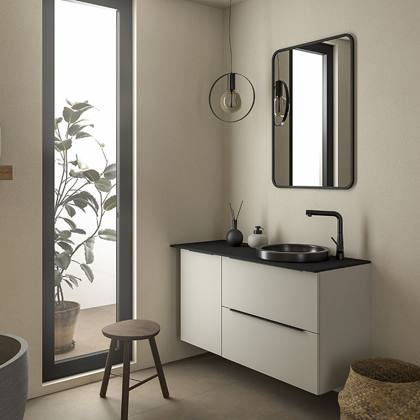
Representative photoBase cabinet (floor / under-sink)
Alakpi Design univ2ltk 90x43x58.8 cm MW
3 pcsRef #DRAL2LU900450MW
Base cabinet (floor / under-sink)
Lower sink unit, 1 pack 62x58x29.4 cm MG
2 pcsRef #BK3E6260MG
Base cabinet (floor / under-sink)
Lower section, 2 pcs, 60 x 43 x 72.7 cm, MW
2 pcsRef #BK7L6045MW
Base cabinet (floor / under-sink)
Alakpi Design 2-pack 70 x 43 x 58.8 cm MG
1 pcsRef #AKDL7045MG
Base cabinet (floor / under-sink)
Alakpi Design Univ 2 pcs 60x48x58.8 cm MW
1 pcsRef #AKDLU6050MW
Base cabinet (floor / under-sink)
Alakpi Design Univ 2 pcs 90x38x58.8 cm MG
1 pcsRef #AKDLU9040MG
Base cabinet (floor / under-sink)
Narrow base plate trolley 20x58x72.7 cm MG
1 pcsRef #BK7G2060MG
Base cabinet (floor / under-sink)
Alakpi 1-door 40x58x72.7 cm MG
1 pcsRef #BK7H4060MG
Base cabinet (floor / under-sink)
Base unit, 1 door, 60 x 43 x 72.7 cm, MW
1 pcsRef #BK7H6045MW
Base cabinet (floor / under-sink)
Base unit, 2 doors, 80 x 58 x 72.7 cm, MW
1 pcsRef #BK7HD8060MW
Base cabinet (floor / under-sink)
Base unit, 2-door, 50x58x72.7 cm, MG
1 pcsRef #BK7L5060MG
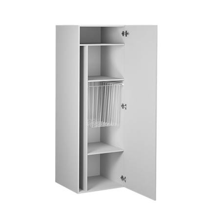
Representative photoCleaning / utility cabinet
Cleaning cupboard set
1 pcsRef #HT070636
Tall cabinet
Tall cupboard, 1 door, right-hand, 40x58x182 cm L01
1 pcsRef #2LAATUKK18O4060OL01
Tall cabinet
Tall cupboard, 1 door, left-hand, 50 x 58 x 182 cm E2
1 pcsRef #2LAATUKK18O5060VE2
Tall cabinet
Tall cupboard, left-hand, 35 x 29 x 182 cm, white KPL
1 pcsRef #2LAATUKKA3530V01
Tall cabinet
Tall cupboard, right-hand, 35x33x182 cm, white KPL
1 pcsRef #2LAATUKKA3535O01
Tall cabinet
Tall cupboard, left-hand, 40x48x182 cm, white KPL
1 pcsRef #2LAATUKKC4050V01
Tall cabinet
High cabinet, 1 door, right-hand, item 40x20x123.4cm MP2
1 pcsRef #2LAATUKK12O4020OMP2
Tall cabinet
High cabinet, 1 door, right-hand, 60x43x123.4cm MG item
1 pcsRef #2LAATUKK12O6045OMG
Tall cabinet
High cabinet, 1 door, right-hand, 60x58x123.4cm MP2
1 pcsRef #2LAATUKK12O6060OMP2
Tall cabinet
Tall cupboard, 1 door, right-hand, 30x33x182cm L01 item
1 pcsRef #2LAATUKK18O3035OL01
Tall cabinet
Tall cabinet, 2 doors, left-hand, item 60x43x211.4cm white frame/RS2
1 pcsRef #2LAATUKK21OR6045VRS2
Wall cabinet
Wall cabinet, 1 door, right-hand, 50x33x58.6 cm MP2
1 pcsRef #2LAATUYK6O5035OMP2
Wall cabinet
Wall cabinet, 1 door, left-hand, 60 x 33 x 58.6 cm MP2
1 pcsRef #2LAATUYK6O6035VMP2
Wall cabinet
Wall cabinet, 1 door, right-hand, 35 x 33 x 58.6 cm, white frame/L01
1 pcsRef #2LAATUYK6OR3535OL01
Wall cabinet
Wall cabinet, 2 doors, 60 x 33 x 72.7 cm, RS2
1 pcsRef #2LAATUYK7O6035RS2
Wall cabinet
Wall-mounted cupboard, 1 door, right-hand, 30 x 17 x 65.5 cm 2910
1 pcsRef #2LAATUYKPKO3017O2910
Wall cabinet
Wall cabinet, 2 doors, 60 x 17 x 65.5 cm, RS2
1 pcsRef #2LAATUYKPKO6017RS2
Wall cabinet
Top cupboard with one door, right-hand, KPL 30x38x29.6 cm, B2 M
1 pcsRef #2LAATUCKMY300400OB2
Wall cabinet
Upper cabinet with 2 doors, 55 x 20 x 58.6 cm, white.
1 pcsRef #2LAATUCYPMX550200
Wall cabinet
Top cabinet, 1 door, right-hand, 55x35x85 cm, white.
1 pcsRef #2LAATUCYPX550350O01
Base cabinet (floor / under-sink)
Base unit, 2 doors, 70 x 43 x 72.7 cm, MW
2 pcsRef #2LAATUBK7O7045MW
Base cabinet (floor / under-sink)
Alakpi 1-door left-hand 60x58x72.7cm white frame/01
1 pcsRef #2LAATUAK7OR6060V01
Base cabinet (floor / under-sink)
Design base unit, 2-piece set, 60 x 38 x 58.8 cm, E2
1 pcsRef #2LAATUDRAL2L600400E2
Base cabinet (floor / under-sink)
Alakpi Design 2 pcs 60x48x58.8 cm 2902
1 pcsRef #2LAATUDRAL2L6005002902
Base cabinet (floor / under-sink)
Alakpi Design 2-pack 70x43x58.8cm MW
1 pcsRef #2LAATUAKD7045MW
Base cabinet (floor / under-sink)
Alakpi Design 2 pcs 70x48x58.8cm 01
1 pcsRef #2LAATUAKD705001
Base cabinet (floor / under-sink)
Alakpi Design 2-pack 80x43x58.8cm MP2 item
1 pcsRef #2LAATUAKD8045MP2
Base cabinet (floor / under-sink)
Alakpi Design Univ 2-pack 100 x 48 x 58.8 cm 01
1 pcsRef #2LAATUAKDU1005001
Base cabinet (floor / under-sink)
Alakpi narrow trolley 25x58x72.7cm MW
1 pcsRef #2LAATUBK7C2560MW
Base cabinet (floor / under-sink)
Base unit, 2 pcs, 40x58x72.7cm MP2
1 pcsRef #2LAATUBK7L24060MP2
Base cabinet (floor / under-sink)
Base unit, 2 pcs, 50x43x72.7cm MP2
1 pcsRef #2LAATUBK7L25045MP2
Base cabinet (floor / under-sink)
Lower cabinet, 1 door, left-hand, 60x58x72.7cm MP2
1 pcsRef #2LAATUBK7O6060VMP2
Base cabinet (floor / under-sink)
Alakpi Design univ2ltk 70x38x58.8 cm 2902 2
1 pcsRef #2LAATUDRAL2LU700400290
Base cabinet (floor / under-sink)
Alakpi Design 1 box 70x33x29.6 cm E2
1 pcsRef #2LAATUDRAS1L700350E2
Accessories, baskets, taps & drain parts 153 items · 12,007 pcs · 1,509.5 m
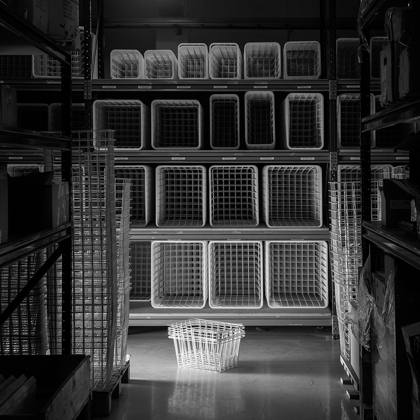
Representative photo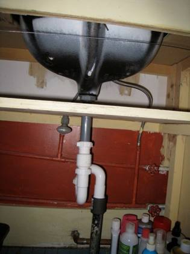
Representative photoBasket (laundry / storage)
LAUNDRY BASKET DRAWER (FG063049)
460 pcsRef #NPYKLTK
Basket (laundry / storage)
Laundry basket 435x235x470 for cupboard 50/30 or 30/50
92 pcsRef #KORI503050
Basket (laundry / storage)
Laundry basket 335x335x470 for cupboard 40/40
88 pcsRef #KORI404040
Basket (laundry / storage)
Laundry basket 435x285x470 for cupboard 50/35 or 35/50
67 pcsRef #KORI503550
Basket (laundry / storage)
Laundry basket 385x235x470 for cupboard 45/30 or 30/45
64 pcsRef #KORI453045
Basket (laundry / storage)
Storage basket 435x235x200 for cupboard 50/30 or 30/50
63 pcsRef #KORIS503050
Basket (laundry / storage)
Storage basket 485x485x200 for cupboard 55/55
63 pcsRef #KORIS555555
Basket (laundry / storage)
Storage basket 335x285x200 for for cupboard 40/35 or 35/40 cupboards
62 pcsRef #KORIS403540
Basket (laundry / storage)
Laundry basket 435x485x470 for cupboard 50/55, 55/50
60 pcsRef #KORI505550
Basket (laundry / storage)
Storage basket 385x235x200 for cupboard 45/30 or 30/45
60 pcsRef #KORIS453045
Basket (laundry / storage)
Laundry basket 235 x 235 x 470 for cupboard 30/30
59 pcsRef #KORI303030
Basket (laundry / storage)
Storage basket 285x285x200 for cupboard 35/35
58 pcsRef #KORIS353535
Basket (laundry / storage)
Storage basket 385x485x200 for cupboard 45/55, 55/45
55 pcsRef #KORIS455545
Basket (laundry / storage)
Storage basket 435x335x200 for cupboard 50/40 or 40/50
55 pcsRef #KORIS504050
Basket (laundry / storage)
Laundry basket 435x335x470 for cupboard 50/40 or 40/50
49 pcsRef #KORI504050
Basket (laundry / storage)
Storage basket 335x335x200 for cupboard 40/40
47 pcsRef #KORIS404040
Basket (laundry / storage)
Storage basket 335x485x200 for cupboard 40/55, 40/60
47 pcsRef #KORIS405540
Basket (laundry / storage)
Storage basket 435x285x200 for for cupboard 50/35 or 35/50 cupboards
47 pcsRef #KORIS503550
Basket (laundry / storage)
Storage basket 385x385x200 for cupboard 45/45
45 pcsRef #KORIS454545
Basket (laundry / storage)
Storage basket 385x535x200 for cupboard 45/60, 60/45
43 pcsRef #KORIS456045
Basket (laundry / storage)
Laundry basket 285x485x470 for cupboard 35/55
42 pcsRef #KORI355535
Basket (laundry / storage)
Laundry basket 335x485x470 for cupboard 40/55, 55/40
41 pcsRef #KORI405540
Basket (laundry / storage)
Laundry basket 485x485x470 for cupboard 55/55
39 pcsRef #KORI555555
Basket (laundry / storage)
Storage basket 435x485x200 for cupboard 50/55, 55/50
38 pcsRef #KORIS505550
Basket (laundry / storage)
Laundry basket 335x285x470 for cupboard 40/35 or 35/40
37 pcsRef #KORI403540
Basket (laundry / storage)
Storage basket 385x285x200 for for cupboard cupboard 45/35 or 35/45
37 pcsRef #KORIS453545
Basket (laundry / storage)
Laundry basket 535x535x470 for cupboard 60/60
36 pcsRef #KORI6060
Basket (laundry / storage)
Laundry basket 435x385x470 for cupboard 50/45 or 45/50
35 pcsRef #KORI504550
Basket (laundry / storage)
Laundry basket 435x535x470 for cupboards 50/60, 60/50
35 pcsRef #KORI506050
Basket (laundry / storage)
Storage basket 435x535x200 for cupboard 50/60
34 pcsRef #KORIS506050
Basket (laundry / storage)
Laundry basket 385x485x470 for cupboard 45/55, 55/45
32 pcsRef #KORI455545
Basket (laundry / storage)
Laundry basket 485x535x470 for cupboard 55/60, 60/55
32 pcsRef #KORI556055
Basket (laundry / storage)
Storage basket 285x535x200 for cupboard 35/60
31 pcsRef #KORIS356035
Basket (laundry / storage)
Laundry basket 285x285x470 for cupboard 35/35
29 pcsRef #KORI353535
Basket (laundry / storage)
Laundry basket 285x535x470 for cupboard 35/60
28 pcsRef #KORI356035
Basket (laundry / storage)
Laundry basket 335x535x470 for cupboard 40.45/60
28 pcsRef #KORI406040
Basket (laundry / storage)
Storage basket 285x235x200 for cupboard 35/30 or 30/35
28 pcsRef #KORIS353035
Basket (laundry / storage)
Laundry basket 335x235x470 for cupboard 40/30 or 30/40
27 pcsRef #KORI403040
Basket (laundry / storage)
Storage basket 335x235x200 for cupboard 40/30 or 30/40
25 pcsRef #KORIS403040
Basket (laundry / storage)
Storage basket 385x335x200 for cupboard 45/40 or 40/45
23 pcsRef #KORIS454045
Basket (laundry / storage)
Laundry basket 385x535x470, cupboard 45/60, 60/45
22 pcsRef #KORI456045
Basket (laundry / storage)
Storage basket 285x485x200 for cupboard 35/55
22 pcsRef #KORIS355535
Basket (laundry / storage)
Laundry basket 385x335x470 for cupboard 45/40 or 40/45
21 pcsRef #KORI454045
Basket (laundry / storage)
Laundry basket 385x285x470 for cupboard 45/35 or 35/45
19 pcsRef #KORI453545
Basket (laundry / storage)
Laundry basket 435x435x470 for cupboard 50/50
19 pcsRef #KORI505050
Basket (laundry / storage)
Storage basket 485x535x200 for cupboard 55/60, 60/55
19 pcsRef #KORIS556055
Basket (laundry / storage)
Storage basket 235x235x200 for 30/30 cupboard
18 pcsRef #KORIS303030
Basket (laundry / storage)
Storage basket 335x535x200 for cupboard 40.45/60
18 pcsRef #KORIS406040
Basket (laundry / storage)
Storage basket 435x385x200 for cupboard 50/45 or 45/50
17 pcsRef #KORIS504550
Basket (laundry / storage)
Storage basket 435x435x200 for cupboard 50/50
11 pcsRef #KORIS505050
Basket (laundry / storage)
Laundry basket 285x235x470 for cupboard 35/30 or 30/35
8 pcsRef #KORI353035
Basket (laundry / storage)
Laundry basket 385x385x470 for cupboard 45/45
2 pcsRef #KORI454545
Basket (laundry / storage)
Storage basket 535x535x200 for cupboard 60/60
1 pcsRef #KORIS6060
Basket (laundry / storage)
Laundry basket 40x58x47 cm + sliding rails
1 pcsRef #PYK4060
Basket (laundry / storage)
Laundry basket 40x58x20 cm + sliding rails
1 pcsRef #PYKS4060
More items without photo (98)
| Ref | Item | Type | Status | Qty |
|---|---|---|---|---|
| Ref #SKN04TYCR | PR4-C4RF3-001 Water supply point, enamelled base, telescopic, with overflow | Drain, trap & waste parts | 1st quality | 867 |
| Ref #J61886 | RIGID OUTLET PIPE for water traps | Drain, trap & waste parts | 1st quality | 619 |
| Ref #SKN04YCR | PR4-B4RF3-001 Enamelled water tap, low, non- telescopic, overhanging | Drain, trap & waste parts | 1st quality | 441 |
| Ref #SKPARTUPDATE04 | WK4-C4N-902 Enamelled water trap update pack. | Drain, trap & waste parts | 1st quality | 383 |
| Ref #SKPARTYLIVM28 | 125568 Overflow kit for enamelled basin | Drain, trap & waste parts | 1st quality | 297 |
| Ref #SKN04TCR | PR4-C4NF3-001 Water-filled, enamelled base, telescopic, no overhang | Drain, trap & waste parts | 1st quality | 238 |
| Ref #YLIVCR | 3300105 M18, chrome | Drain, trap & waste parts | 1st quality | 181 |
| Ref #YLIVMB | 3300104 M18, matt black | Drain, trap & waste parts | 1st quality | 138 |
| Ref #YLIVGW | 3300103 M18, glossy white | Drain, trap & waste parts | 1st quality | 131 |
| Ref #SKN05TCR | PR4-N4NF3-001 Water supply point, under- counter, telescopic, no overflow | Drain, trap & waste parts | 1st quality | 120 |
| Ref #SKPARTPOISTOP32 | 71130-1 Water trap outlet pipe | Drain, trap & waste parts | 1st quality | 120 |
| Ref #SKN05T | PR4-N4NF3-002 Water supply point, cast iron base, telescopic, not overhanging | Drain, trap & waste parts | 1st quality | 115 |
| Ref #J127021 | Elbow joint, incl. 2 seals | Drain, trap & waste parts | 1st quality | 88 |
| Ref #SKNYVH | OVERFLOW SLEEVE, CHROME (SKNO3YV PART) | Drain, trap & waste parts | 1st quality | 85 |
| Ref #SKNYVVK | OVERFLOW COUNTERPIECE (SKNO3YV PART) | Drain, trap & waste parts | 1st quality | 85 |
| Ref #PR3N4NNA008 | WATER TRAP WITH SCREW CONNECTION + SLEEVE + POP-UP CHROME | Drain, trap & waste parts | 1st quality | 84 |
| Ref #SKN02CR | Astra 32 mm water trap kit | Drain, trap & waste parts | 1st quality | 81 |
| Ref #J12702 | Rigid outlet pipe + elbow, seals | Drain, trap & waste parts | 1st quality | 71 |
| Ref #J1502004 | Easy Clean pop-up water trap | Drain, trap & waste parts | 1st quality | 70 |
| Ref #J9022 | YLIV.9060 Galvanised pipe /12053 | Drain, trap & waste parts | 1st quality | 52 |
| Ref #POPUPGW | PopUp drain plug, D70 mm, white | Drain, trap & waste parts | 1st quality | 50 |
| Ref #JPR4C4RNA001 | WATER TRAP BODY + POP-UP + 40 mm wall outlet | Drain, trap & waste parts | 1st quality | 45 |
| Ref #POPUPCR | PopUp drain plug, chrome | Drain, trap & waste parts | 1st quality | 37 |
| Ref #POPUPBR | PopUp bottom plug, D63 mm, bronze | Drain, trap & waste parts | 1st quality | 31 |
| Ref #OVERFLOW PIPE | 71448 overflow pipe for water trap | Drain, trap & waste parts | 1st quality | 30 |
| Ref #J12720 | 136921 WATER LOCK BODY + RUBBER PLUG 38.5 | Drain, trap & waste parts | 1st quality | 28 |
| Ref #VLK400 | Water trap swivel collar 400 RAL9003 | Drain, trap & waste parts | 1st quality | 26 |
| Ref #POPUPMB | PopUp drain plug, D63 mm, matt black | Drain, trap & waste parts | 1st quality | 26 |
| Ref #POPUPGD | PopUp drain plug, D63 mm, gold | Drain, trap & waste parts | 1st quality | 25 |
| Ref #J71713 | Bottom strainer, chrome-plated, fits POPUP valve | Drain, trap & waste parts | 1st quality | 17 |
| Ref #SK17 | Easy Clean PopUp metal water trap | Drain, trap & waste parts | 1st quality | 11 |
| Ref #92500104 | Recessed basin 925001 WITHOUT OVERFLOW | Drain, trap & waste parts | 1st quality | 11 |
| Ref #J90221 | YLIV.9060 chrome/12053 | Drain, trap & waste parts | 1st quality | 6 |
| Ref #JPRC4RNA006 | WATER TRAP BODY + metal strainer +40 mm wall outlet | Drain, trap & waste parts | 1st quality | 6 |
| Ref #J71130 | FLEXIBLE WATER DRAIN PIPE | Drain, trap & waste parts | 1st quality | 3 |
| Ref #HT070641 | Central vacuum cleaner hose holder | Drain, trap & waste parts | 1st quality | 2 |
| Ref #J02374 | Preloc 600 C4 PopUp water trap | Drain, trap & waste parts | 1st quality | 2 |
| Ref #MP110R | Magnifying make-up mirror, Ø 120 mm | Bathroom & kitchen accessory | 1st quality | 3,142 |
| Ref #J12544 | ACCESSORIES FOR WASHING + DISABILITY BATH | Bathroom & kitchen accessory | 1st quality | 89 |
| Ref #CLEANING RACK 390 | Cleaning equipment rack 390x140x785 | Bathroom & kitchen accessory | 1st quality | 46 |
| Ref #TDPI | Soap dispenser | Bathroom & kitchen accessory | 1st quality | 43 |
| Ref #LSTLASI55 | 550 LST tray | Bathroom & kitchen accessory | 1st quality | 33 |
| Ref #3H1940F | Toilet roll holder | Bathroom & kitchen accessory | 1st quality | 9 |
| Ref #TTSTLASI4055 | 400–500 (brand) trays | Bathroom & kitchen accessory | 1st quality | 8 |
| Ref #HT103083 | Food storage tray M30 224x472xmm grey | Bathroom & kitchen accessory | 1st quality | 8 |
| Ref #SMEFB625 | OUTLINE - Make-up mirror with suction cups, LED light, X7 | Bathroom & kitchen accessory | 1st quality | 7 |
| Ref #TDPI BOTTLE | Soap dispenser with refill bottle | Bathroom & kitchen accessory | 1st quality | 4 |
| Ref #COLLAR7040 | Ruskapi metal collar 628x393 | Bathroom & kitchen accessory | 1st quality | 4 |
| Ref #IRONING STAND | 0700038 | Bathroom & kitchen accessory | 1st quality | 1 |
| Ref #SMEFB438 | OUTLINE – Make-up mirror, wall-mounted, black, standard | Bathroom & kitchen accessory | 1st quality | 1 |
| Ref #SV90605 | Cooker hood P-2806-W 60 cm | Bathroom & kitchen accessory | 1st quality | 1 |
| Ref #SV91046 | Front panel FR-4 stainless steel 60cm P-28 | Bathroom & kitchen accessory | 1st quality | 1 |
| Ref #Y1361 | CUT8 chopping board and drip tray Silent1 | Bathroom & kitchen accessory | 1st quality | 1 |
| Ref #AO1126060 | AddOn 1x shelf 1x laundry basket 2x storage baskets 60x58 | Basket (laundry / storage) | 1st quality | 15 |
| Ref #COLLAR6040 | Rubbish bin metal collar 528x393 | Basket (laundry / storage) | 1st quality | 8 |
| Ref #3H1617F | Wall-mounted basket 100*117*290 stainless steel | Basket (laundry / storage) | 1st quality | 6 |
| Ref #JÄTESANKO096220 | Waste bin, 10.5 l | Basket (laundry / storage) | 1st quality | 5 |
| Ref #WASTE BIN 096221 | Roskakpi, waste bin 19 l | Basket (laundry / storage) | 1st quality | 5 |
| Ref #WASTE BIN 096220 | roskakpi rubbish bin 10.5 l | Basket (laundry / storage) | 1st quality | 3 |
| Ref #LM704/2 | LUX SORTING FRAME + 2 BINS +SLOW-CLOSING RAILS | Basket (laundry / storage) | 1st quality | 2 |
| Ref #LM705/3 | LUX SORTING FRAME + 3 BINS +SLOWING RAILS | Basket (laundry / storage) | 1st quality | 1 |
| Ref #AIHIOPMNPP | Box base mat, cut blanks between 1100-3 | Drawer / non-slip mat | 1st quality | 1,380 |
| Ref #COOK1 | Silicone mat -Cook-1 | Drawer / non-slip mat | 1st quality | 1 |
| Ref #PMNPP | Box base mat | Drawer / non-slip mat | 1st quality | 1 |
| Ref #PMNPP10035 | Box base mat 900x330 mm | Drawer / non-slip mat | 1st quality | 1 |
| Ref #PMNPPU10035 | Universal box base mat 900x330 mm | Drawer / non-slip mat | 1st quality | 1 |
| Ref #AGOTEX223 | Non-slip mat, Canvas, Umbra Grey 876 | Drawer / non-slip mat | 1st quality | 800 m |
| Ref #AGOTEX1200 | Non-slip mat, Canvas, Umbra Grey 876 | Drawer / non-slip mat | 1st quality | 400 m |
| Ref #AGOTEX273 | Non-slip mat, Canvas, Umbra Grey 876 | Drawer / non-slip mat | 1st quality | 150 m |
| Ref #AGOTEX323 | Non-slip mat, Canvas, Umbra Grey 876 | Drawer / non-slip mat | 1st quality | 150 m |
| Ref #AGOTEX473 | Non-slip mat, Canvas, Umbra Grey 876 | Drawer / non-slip mat | 1st quality | 9.5 m |
| Ref #TMLS185 | Ceiling shower with overhead and hand-held shower heads, thermostat | Taps, showers & shower screens | 1st quality | 55 |
| Ref #SK2 | Hand shower feed-through | Taps, showers & shower screens | 1st quality | 31 |
| Ref #FSS30SH | SYNC 30 fixed shower screen, 30x195 cm | Taps, showers & shower screens | 1st quality | 4 |
| Ref #FSK60KH | LINC Angel straight pivoting shower screen, 60x200 cm | Taps, showers & shower screens | 1st quality | 2 |
| Ref #ORA2804 | Oras Cubista washbasin tap | Taps, showers & shower screens | 1st quality | 2 |
| Ref #ORA421 | Shower set | Taps, showers & shower screens | 1st quality | 2 |
| Ref #ORA7193 | Oras Optima rain shower mixer tap | Taps, showers & shower screens | 1st quality | 2 |
| Ref #SMEF966 | XTRA mounting plate for gluing Smedbo shower trays | Taps, showers & shower screens | 1st quality | 1 |
| Ref #TML071E | Washbasin tap EF071 | Taps, showers & shower screens | 1st quality | 1 |
| Ref #TML071TO | Waterfall tap for washbasin, item no.: 10007 | Taps, showers & shower screens | 1st quality | 1 |
| Ref #TML180S | Kitchen tap, chrome-plated brass | Taps, showers & shower screens | 1st quality | 1 |
| Ref #90520102 | IN-WALL BASIN 393x303 white, tap hole on the right | Taps, showers & shower screens | 1st quality | 1 |
| Ref #FSK60SH | LINC Angel straight pivoting shower screen, 60x200 cm | Taps, showers & shower screens | 1st quality | 1 |
| Ref #FSK80SH | LINC Angel straight hinged shower screen, 80x200 cm | Taps, showers & shower screens | 1st quality | 1 |
| Ref #FSS80SH | SYNC 30 fixed shower screen, 80x195 cm | Taps, showers & shower screens | 1st quality | 1 |
| Ref #ORA1011FZ | Washbasin tap, 3 V, Bluetooth | Taps, showers & shower screens | 1st quality | 1 |
| Ref #ORA1012F | Oras Safira washbasin tap, bidet and hand shower | Taps, showers & shower screens | 1st quality | 1 |
| Ref #ORA1829G | Auxiliary valve | Taps, showers & shower screens | 1st quality | 1 |
| Ref #ORA252020 | Hand shower | Taps, showers & shower screens | 1st quality | 1 |
| Ref #ORA261998 | Shower hose elbow connector, G1/2xG1/2 | Taps, showers & shower screens | 1st quality | 1 |
| Ref #ORA272040 | Bidetta shower set KPL | Taps, showers & shower screens | 1st quality | 1 |
| Ref #ORA272080N | Ceiling shower, d 250 mm KPL | Taps, showers & shower screens | 1st quality | 1 |
| Ref #ORA3001F | Tall washbasin tap | Taps, showers & shower screens | 1st quality | 1 |
| Ref #ORA427 | Hand shower set | Taps, showers & shower screens | 1st quality | 1 |
| Ref #ORA5711F | Washbasin tap | Taps, showers & shower screens | 1st quality | 1 |
| Ref #ORA7149 | Bath and shower tap and shower set | Taps, showers & shower screens | 1st quality | 1 |
| Ref #RM2531001 | Move-60 oven tray, 470x565x50, steel | Bathroom & kitchen accessory | Quarantine stock | 1 |
Lighting & electrical 89 items · 17,606 pcs
| Ref | Item | Type | Status | Qty |
|---|---|---|---|---|
| Ref #KUPU3X25 | General-purpose screw for spring connector | Electrical (sockets, drivers, chokes, cables) | 1st quality | 1,474 |
| Ref #KUPU3.5X15 | Universal screw for magnet, for socket | Electrical (sockets, drivers, chokes, cables) | 1st quality | 1,452 |
| Ref #FCLEDDRIVER20W | LED transformer for mirror cabinet, 20W 88201200T | Electrical (sockets, drivers, chokes, cables) | 1st quality | 792 |
| Ref #FC4XRASIA | Mirror cabinet junction box 888200T | Electrical (sockets, drivers, chokes, cables) | 1st quality | 692 |
| Ref #FCPISTOR2CR | 2-part socket for mirror cabinet, IP44, silver, 8899011T | Electrical (sockets, drivers, chokes, cables) | 1st quality | 528 |
| Ref #RJOUSIL4 | 4-pin spring terminal, marked 1, 2, PE, N | Electrical (sockets, drivers, chokes, cables) | 1st quality | 524 |
| Ref #CONNECTOR | Connector AL1.12 19230549 2/12 | Electrical (sockets, drivers, chokes, cables) | 1st quality | 500 |
| Ref #TRANSFORMER 15W | Transformer 12V / 15W EFST, HJ | Electrical (sockets, drivers, chokes, cables) | 1st quality | 487 |
| Ref #PISTOR2 | 2-part socket Exxact 2-PR IP44 JL, white | Electrical (sockets, drivers, chokes, cables) | 1st quality | 407 |
| Ref #FCPISTOR2B | 2-socket mirror cabinet socket, IP44, black 8899022T | Electrical (sockets, drivers, chokes, cables) | 1st quality | 268 |
| Ref #LEDDRIVER1612 | Driver 881512B04 15 W mirror pin transformer | Electrical (sockets, drivers, chokes, cables) | 1st quality | 262 |
| Ref #TRANSFORMER 60W | Transformer 12V / 60W | Electrical (sockets, drivers, chokes, cables) | 1st quality | 200 |
| Ref #LEDDRIVER1612C | Driver 881512B00 15 W for Combe | Electrical (sockets, drivers, chokes, cables) | 1st quality | 190 |
| Ref #TRANSFORMER 30W | Transformer 12V / 30W | Electrical (sockets, drivers, chokes, cables) | 1st quality | 119 |
| Ref #PISTOR124 | 239 616 000 1-part socket, IP54, black | Electrical (sockets, drivers, chokes, cables) | 1st quality | 104 |
| Ref #CHOKE15 | LN15.315 230V/50Hz CHOKE | Electrical (sockets, drivers, chokes, cables) | 1st quality | 101 |
| Ref #CHOKE13 | LN13.313 230V/50 Hz CHOKE | Electrical (sockets, drivers, chokes, cables) | 1st quality | 100 |
| Ref #CHOKE 30 | LN30.801 230V/50Hz CHOKE | Electrical (sockets, drivers, chokes, cables) | 1st quality | 90 |
| Ref #SOCKET1 | 239619000 1-socket child-proof socket, IP54 | Electrical (sockets, drivers, chokes, cables) | 1st quality | 90 |
| Ref #VVTII SEAL | Residual current seal 1708000 | Electrical (sockets, drivers, chokes, cables) | 1st quality | 41 |
| Ref #RSLMUUNT2X26 | SL transformer QTP-M 2x26-32W PK70-120 | Electrical (sockets, drivers, chokes, cables) | 1st quality | 40 |
| Ref #729162 | Euro plug cable, white | Electrical (sockets, drivers, chokes, cables) | 1st quality | 40 |
| Ref #BURNER | HALOSTAR 64415 S AX 10W 12V G4 40X1 STA | Electrical (sockets, drivers, chokes, cables) | 1st quality | 40 |
| Ref #CHOKE18 | LN18.822 230V/50 Hz CHOKE | Electrical (sockets, drivers, chokes, cables) | 1st quality | 40 |
| Ref #SNITE CABLE | LED FLUORESCENT LAMP CABLE | Electrical (sockets, drivers, chokes, cables) | 1st quality | 39 |
| Ref #VV FRAME | Residual current device frame WDE002401 | Electrical (sockets, drivers, chokes, cables) | 1st quality | 36 |
| Ref #VVPI | Residual current device socket 3227001 | Electrical (sockets, drivers, chokes, cables) | 1st quality | 32 |
| Ref #CONNECTION | Connection terminal AL1.12 19230549 2/12 | Electrical (sockets, drivers, chokes, cables) | 1st quality | 19 |
| Ref #CHOKE 7911 | L7/9/11.307 230 V/50 Hz CHOKE | Electrical (sockets, drivers, chokes, cables) | 1st quality | 14 |
| Ref #RSLTRANS1X26 | SL transformer QTP-M 1x26-42W PK50-65 | Electrical (sockets, drivers, chokes, cables) | 1st quality | 12 |
| Ref #VVP | Single-piece residual current socket, IP44 | Electrical (sockets, drivers, chokes, cables) | 1st quality | 1 |
| Ref #HT123917 | HILE light reflector with switch, 800x850x35 mm | Electrical (sockets, drivers, chokes, cables) | 1st quality | 1 |
| Ref #HT123918 | HILE light reflector with switch, 1000x850x35 mm | Electrical (sockets, drivers, chokes, cables) | 1st quality | 1 |
| Ref #LEDSPOTNY | LD17 86LD1702T CHROME, IP44, 1.7W 4000K 80 lm | LED light / light fitting | 1st quality | 1,480 |
| Ref #RSLPIDINO | V2973 SL lamp holder, right-hand, PPE157 | LED light / light fitting | 1st quality | 642 |
| Ref #RSLPIDINV | V2974 SL lamp holder, left, PPE157 | LED light / light fitting | 1st quality | 642 |
| Ref #SAMANILA340 | Manila IV light 340 mm 4000K 4.7W | LED light / light fitting | 1st quality | 412 |
| Ref #SAMANILA490 | Manila IV Light 490 mm 4000K 7.0W | LED light / light fitting | 1st quality | 381 |
| Ref #NSLKANTAV | Lamp holder, left 100548.01 27350 G13 | LED light / light fitting | 1st quality | 373 |
| Ref #NSLKANTAO | Lamp holder, right 100557.01 27450 G13 | LED light / light fitting | 1st quality | 371 |
| Ref #FCLEDPROF700 | LED profile light for mirror cabinet, 700 mm, 86LDB700T | LED light / light fitting | 1st quality | 348 |
| Ref #FCLEDPROF400 | LED profile light for mirror cabinet, 400 mm, 86LDB400T | LED light / light fitting | 1st quality | 317 |
| Ref #FCLEDPROF800 | LED profile light for mirror cabinet, 800 mm, 86LDB800T | LED light / light fitting | 1st quality | 278 |
| Ref #FCLEDPROF500 | LED profile light for mirror cabinet, 500 mm, 86LDB500T | LED light / light fitting | 1st quality | 268 |
| Ref #FCLEDPROF900 | LED profile light for mirror cabinet, 900 mm, 86LDB900T | LED light / light fitting | 1st quality | 188 |
| Ref #FCLEDPROF300 | LED profile light for mirror cabinet, 300 mm, 86LDB300T | LED light / light fitting | 1st quality | 173 |
| Ref #SAMANILA640 | Manila IV Light 640 mm 4000K 9.3W | LED light / light fitting | 1st quality | 167 |
| Ref #FCLEDPROF600 | LED profile light for mirror cabinet, 600 mm, 86LDB600T | LED light / light fitting | 1st quality | 164 |
| Ref #VIVA30 | VIVA 30 cm LED light fitting | LED light / light fitting | 1st quality | 134 |
| Ref #VIVA60 | VIVA 60 cm LED light fitting | LED light / light fitting | 1st quality | 134 |
| Ref #SAMANILA790 | Manila IV Light 790 mm 4000K 11.6W | LED light / light fitting | 1st quality | 124 |
| Ref #VIVA80 | VIVA 80 cm LED light fitting | LED light / light fitting | 1st quality | 124 |
| Ref #NSLKANTA11W | Lamp holder 101298.01 35004 G23 | LED light / light fitting | 1st quality | 113 |
| Ref #RSL BASE | BJB 26.726.4840.50 SL lamp base | LED light / light fitting | 1st quality | 110 |
| Ref #SAMANILA3000K340 | Manila IV light 340 mm 3000K 4.7W | LED light / light fitting | 1st quality | 60 |
| Ref #SAMANILA965 | Manila IV Light 965 mm 4000K 14.3W | LED light / light fitting | 1st quality | 56 |
| Ref #SAMANILA3000K640 | Manila IV light 640 mm 3000K 9.3W | LED light / light fitting | 1st quality | 44 |
| Ref #LEDSPOTNY3000K | LD17 86LD1702T CHROME, IP44, 1.7W 3000K 80 lumens | LED light / light fitting | 1st quality | 41 |
| Ref #SVLEDSTRIP450 | LED strip light 450 mm 7W | LED light / light fitting | 1st quality | 35 |
| Ref #SVLEDSTRIP1150 | LED strip light 1150 mm 17.8W | LED light / light fitting | 1st quality | 34 |
| Ref #SVLEDSTRIP950 | LED strip light 950 mm 14.7W | LED light / light fitting | 1st quality | 31 |
| Ref #SAMANILA3000K490 | Manila IV light 490 mm 3000K 7.0W | LED light / light fitting | 1st quality | 28 |
| Ref #ALUKEHÄ50 | Aluminium frame 600x415x350 in parts | LED light / light fitting | 1st quality | 27 |
| Ref #SVLEDSTRIP850 | LED strip light 850 mm 13.2W | LED light / light fitting | 1st quality | 27 |
| Ref #MIRAXVIVA | Installation kit for mirror and light fitting | LED light / light fitting | 1st quality | 19 |
| Ref #SVLEDSTRIP1050 | LED strip light 1050 mm 16.3W | LED light / light fitting | 1st quality | 16 |
| Ref #SVLEDSTRIP550 | LED strip light 550 mm 8.5W | LED light / light fitting | 1st quality | 15 |
| Ref #SVLEDSTRIP750 | LED strip light 750 mm 11.6W | LED light / light fitting | 1st quality | 10 |
| Ref #LUZ450 | LUZ AC-LED light fitting, 450x71x29 mm | LED light / light fitting | 1st quality | 6 |
| Ref #SVLEDSTRIP650 | LED strip light 650 mm 10.1W | LED light / light fitting | 1st quality | 5 |
| Ref #PAZ | Paz wall lamp, 29 x 9.3 x 1.3 cm, chrome- plated | LED light / light fitting | 1st quality | 5 |
| Ref #ETG700W | ETG500W Towel dryer/heater 625+3x25 W | LED light / light fitting | 1st quality | 3 |
| Ref #LUMIN800-2 | LUMIN AC-LED luminaire, chrome, 800 x 110 x 40 mm | LED light / light fitting | 1st quality | 3 |
| Ref #RSL LIGHT 36W | SL luminaire DULUX L 36 W/840 2G11 10x1/box | LED light / light fitting | 1st quality | 2 |
| Ref #LUMIN280-2 | LUMIN AC-LED light fitting, chrome, 280x110x40 mm | LED light / light fitting | 1st quality | 2 |
| Ref #LUMIN494-2MB | LUMIN AC-LED luminaire, matt black, 494 x 110 x 40 mm | LED light / light fitting | 1st quality | 2 |
| Ref #TML070LW | Washbasin tap LES070W | LED light / light fitting | 1st quality | 1 |
| Ref #ETG500B | ETG500B Towel dryer/heater 425+3x25 W | LED light / light fitting | 1st quality | 1 |
| Ref #HLS3590 | HALOGEN LIGHT FIXTURE PACKAGE HLS35-90 | Fluorescent / halogen lamp | 1st quality | 300 |
| Ref #FLUORESCENT TUBE 30 | LUMILUX 30 W/827 25x1 box | Fluorescent / halogen lamp | 1st quality | 50 |
| Ref #SNITELED6W | LED FLUORESCENT LAMP 6W | Fluorescent / halogen lamp | 1st quality | 19 |
| Ref #T513W | FLUORESCENT LAMP 13W | Fluorescent / halogen lamp | 1st quality | 11 |
| Ref #SNITELED9W | LED FLUORESCENT TUBE LIGHT 9W | Fluorescent / halogen lamp | 1st quality | 9 |
| Ref #SNITELED7W | LED FLUORESCENT TUBE LIGHT 7W | Fluorescent / halogen lamp | 1st quality | 8 |
| Ref #FLUORESCENT TUBE 11 | DULUX S 11 W G23 | Fluorescent / halogen lamp | 1st quality | 7 |
| Ref #CONVERTER906 | 8890690 CONVERTER 906/10-60W WITH CABLES | Electrical (sockets, drivers, chokes, cables) | Quarantine stock | 574 |
| Ref #T513W | FLUORESCENT LAMP 13W | Fluorescent / halogen lamp | Quarantine stock | 297 |
| Ref #SNITELED4W | LED FLUORESCENT TUBE LIGHT 4W | Fluorescent / halogen lamp | Quarantine stock | 160 |
| Ref #SNITELED10W | LED fluorescent tube light 10W | Fluorescent / halogen lamp | Quarantine stock | 19 |
Hardware – hinges, handles, runners, brackets & fixings 471 items · 528,599 pcs · 7,039.4 m
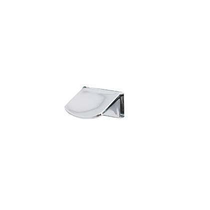
Representative photo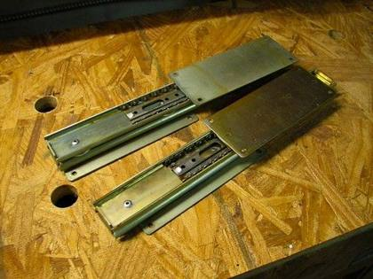
Representative photo| Ref | Item | Type | Status | Qty |
|---|---|---|---|---|
| Ref #WOODEN PLUG 8X35 | Drill bit 8.0 x 35 mm Wooden dowels ("drill bit / plug" is a translation error in the inventory) | Screws, dowels & fixings | 1st quality | 248,658 |
| Ref #REURO | 11887 Euro screw, small countersunk, 6x11/7 mm, high-quality sliding screw | Screws, dowels & fixings | 1st quality | 23,382 |
| Ref #STAPLE | STAPLE 56115 | Screws, dowels & fixings | 1st quality | 18,800 |
| Ref #WOODEN PLUG 8 X 25 | Drill plug 8.0 x 25 mm Wooden dowels ("drill bit / plug" is a translation error in the inventory) | Screws, dowels & fixings | 1st quality | 12,956 |
| Ref #DAMPING | Damping nut to be drilled to a 5 mm hole | Screws, dowels & fixings | 1st quality | 11,373 |
| Ref #ASSEMBLY 5X50 | 11420 Assembly screw 5x50, cross-head, galvanised, PZ2 | Screws, dowels & fixings | 1st quality | 8,663 |
| Ref #WOODEN PLUG 79X40 | Drill bit 7.9 x 40 mm Wooden dowels ("drill bit / plug" is a translation error in the inventory) | Screws, dowels & fixings | 1st quality | 6,852 |
| Ref #KUPU3X12 | Universal screw for SL lamp holder | Screws, dowels & fixings | 1st quality | 4,500 |
| Ref #UPPO 3.5 X 15 | General-purpose screw, hinges, Lungo | Screws, dowels & fixings | 1st quality | 4,366 |
| Ref #CONE PIN 8X10 | E220100 Pin M4 8x10mm | Screws, dowels & fixings | 1st quality | 3,991 |
| Ref #UPPO 3.5 X 20 | General-purpose screw, partial thread 3.5x20 | Screws, dowels & fixings | 1st quality | 3,842 |
| Ref #TIOALUSH00CROSSECO | TIOMOS Eco Cross washer H00 | Screws, dowels & fixings | 1st quality | 3,560 |
| Ref #UPPO3X12 | General-purpose screw (HVALO) | Screws, dowels & fixings | 1st quality | 3,500 |
| Ref #UPPO4X20 | General-purpose screw 4x20 mm | Screws, dowels & fixings | 1st quality | 3,224 |
| Ref #UPPO3.5X25 | General-purpose screw for TAP flap stopper | Screws, dowels & fixings | 1st quality | 3,000 |
| Ref #TIOALUSH03CROSS | TIOMOS 1D Cross washer H03 | Screws, dowels & fixings | 1st quality | 2,394 |
| Ref #TIOALUSH00LINEAR | TIOMOS 1D Linear washer H00 | Screws, dowels & fixings | 1st quality | 2,324 |
| Ref #KUPU4.5X16 | General-purpose screw for wall brackets | Screws, dowels & fixings | 1st quality | 2,171 |
| Ref #CONE PIN M4X8 | CONE PLUG M4X8 | Screws, dowels & fixings | 1st quality | 2,150 |
| Ref #MINI BOLT | 050496 Titus combi 9435 pin 5x34 | Screws, dowels & fixings | 1st quality | 2,091 |
| Ref #HANDLE RM4X10UR | HANDLE SCREW, LOW PROFILE 4X10 ZN | Screws, dowels & fixings | 1st quality | 1,488 |
| Ref #UPPO 4.5X35 SPAX | Countersunk head 4.5x35 T20 SPAX | Screws, dowels & fixings | 1st quality | 1,242 |
| Ref #TIOALUSH02CROSS20AST | TIOMOS Cross washer 20 degrees H02 | Screws, dowels & fixings | 1st quality | 1,155 |
| Ref #J90210T | T-SCREW TMLM6x15 FOR RAILINGS | Screws, dowels & fixings | 1st quality | 1,127 |
| Ref #MINIHELA12 | 050420 Titus 5576 12 mm, zinc-plated, 14 mm shank | Screws, dowels & fixings | 1st quality | 1,052 |
| Ref #MINIHELAK | 050412 Titus 5658 eccentric 15 mm zinc-plated. | Screws, dowels & fixings | 1st quality | 1,044 |
| Ref #SARDYYBELI | 700532 hinge bolt 8x10 mm | Screws, dowels & fixings | 1st quality | 1,000 |
| Ref #UPPO4X30 SPAX | Countersunk head 4.5x30 T20 SPAX | Screws, dowels & fixings | 1st quality | 1,000 |
| Ref #UPPO 3.5X13 | Ronja general-purpose screw for hinges and drawers | Screws, dowels & fixings | 1st quality | 994 |
| Ref #SLEEVE M6 | M6 8x14 galvanised sleeve 082379 | Screws, dowels & fixings | 1st quality | 619 |
| Ref #SUPPORT SCREW | Connecting screw 245080 VU1602 Nickel Female | Screws, dowels & fixings | 1st quality | 610 |
| Ref #UPPO4X30 | General-purpose screw, partial thread 4x30 | Screws, dowels & fixings | 1st quality | 598 |
| Ref #J9092 | M6 NYLOCK NUT A4 | Screws, dowels & fixings | 1st quality | 571 |
| Ref #J09021 | LOCKING SCREW M5 X 25mm 02235 25 005 200 | Screws, dowels & fixings | 1st quality | 450 |
| Ref #J9093 | M6 / 6.4 mm WASHER A4 | Screws, dowels & fixings | 1st quality | 372 |
| Ref #UPPO4X25 | General-purpose screw for Ronja SK60 hinges and | Screws, dowels & fixings | 1st quality | 332 |
| Ref #LM037000 | LM 37 SHELF BRACKET WITH PIN | Screws, dowels & fixings | 1st quality | 317 |
| Ref #J9091 | M6 x 16 HEXAGON SCREW A4 | Screws, dowels & fixings | 1st quality | 200 |
| Ref #MINIHELA | 050404 Titus 5654 eccentric 15 mm, zinc-plated | Screws, dowels & fixings | 1st quality | 187 |
| Ref #BEARING SLEEVE | Bearing sleeve KKHO for hinge | Screws, dowels & fixings | 1st quality | 147 |
| Ref #M4 NUT | M4 nut | Screws, dowels & fixings | 1st quality | 145 |
| Ref #PR4N4NNA011 | WATER TRAP WITH THREADED CONNECTION + SLEEVE (NO BOTTOM STRAINER) | Screws, dowels & fixings | 1st quality | 91 |
| Ref #MMLALUSLEVY | Washer 10/5.1x4 mm for Modula vanity unit | Screws, dowels & fixings | 1st quality | 62 |
| Ref #STACKING SCREW 59 | Assembly bracket screw 5.9x8.5/19.4 mm | Screws, dowels & fixings | 1st quality | 40 |
| Ref #HANDLE R4X16 | Low-profile handle screw 4x15 644807 | Screws, dowels & fixings | 1st quality | 20 |
| Ref #KUPU3X20 | General-purpose screw | Screws, dowels & fixings | 1st quality | 14 |
| Ref #PO7000 | Plug for threaded sleeve 70 mm | Screws, dowels & fixings | 1st quality | 14 |
| Ref #PO70166 | Threaded sleeve 70 x 1.5 x 1660 mm | Screws, dowels & fixings | 1st quality | 14 |
| Ref #UPPO4X45 | General-purpose screw with washer for cladding strips, Ronja (brand) | Screws, dowels & fixings | 1st quality | 6 |
| Ref #AR644271 | Adhesive soundproofing panel 644271 | Caps, latches & small parts | 1st quality | 19,188 |
| Ref #HT031148 | Cover sticker 12mm white | Caps, latches & small parts | 1st quality | 5,436 |
| Ref #TDK | Chrome-plated spacer ring 71575 40 × 42.7 mm | Caps, latches & small parts | 1st quality | 3,775 |
| Ref #HPHYLLYKAN8 | Fitting pack: shelf brackets and cover stickers | Caps, latches & small parts | 1st quality | 2,082 |
| Ref #TIOCOVER | F072140865247 | Caps, latches & small parts | 1st quality | 2,000 |
| Ref #SILICONE | DOOR DAMPING STICKER 047020 | Caps, latches & small parts | 1st quality | 1,400 |
| Ref #COVER STICKER 24MW | Cover sticker 24 mm white MW | Caps, latches & small parts | 1st quality | 1,295 |
| Ref #MEALUS02 | Mtg-Plate, Click-on, H02 318.393.81.0215 | Caps, latches & small parts | 1st quality | 1,242 |
| Ref #STICKER | LED mirror cabinet approval sticker | Caps, latches & small parts | 1st quality | 1,000 |
| Ref #LÄPIVIENTI7-10 | Rubber grommet 7–10 mm | Caps, latches & small parts | 1st quality | 800 |
| Ref #MSALPA2 | PK magnetic latch, 2-piece, white, with counterplate (2000304) | Caps, latches & small parts | 1st quality | 750 |
| Ref #COVER STICKER24E2 | 24 mm light oak E2 | Caps, latches & small parts | 1st quality | 725 |
| Ref #COVER STICKER 24MG | 24 mm light grey MG | Caps, latches & small parts | 1st quality | 709 |
| Ref #COVER STICKER 24MP2 | Cover sticker 24 mm black MP2/RS2 | Caps, latches & small parts | 1st quality | 635 |
| Ref #441180 | Dot 34/24 L=2mm POM Lv no image | Caps, latches & small parts | 1st quality | 615 |
| Ref #GROSS-THROUGH7-10 | Rubber grommet 7–10 mm | Caps, latches & small parts | 1st quality | 530 |
| Ref #JALLASP1 | SINK END CAP 500 (FG118111) | Caps, latches & small parts | 1st quality | 490 |
| Ref #JTULPPAKAIDE | POM plug Q29/6.75 L=13 white | Caps, latches & small parts | 1st quality | 436 |
| Ref #RSUOJAK2 | 41679B01 ABS LGHG17301691 white | Caps, latches & small parts | 1st quality | 315 |
| Ref #MULTICLIP | Cover plate fastener Hettich MultiClip | Caps, latches & small parts | 1st quality | 299 |
| Ref #RSUOJAK1 | 41679A01 ABS LGHG17301691 white | Caps, latches & small parts | 1st quality | 154 |
| Ref #AR599460 | Plastic base plate Ø 15/6.2 x 8 mm 599460 | Caps, latches & small parts | 1st quality | 146 |
| Ref #MSALPA | PK magnetic latch, white, with counterplate, 3 kg | Caps, latches & small parts | 1st quality | 140 |
| Ref #SINK DAMPENER 150X100X2.4 | Damping block 150x100x2.4 mm KN5 | Caps, latches & small parts | 1st quality | 132 |
| Ref #RSUOJAKE | PK protective case OAK | Caps, latches & small parts | 1st quality | 74 |
| Ref #1152575 | Enclosure cover ABB AK 4 connection cover | Caps, latches & small parts | 1st quality | 60 |
| Ref #TET5 | feed-through for 16 mm hole | Caps, latches & small parts | 1st quality | 50 |
| Ref #RSUOJAKB | PK protective case BLACK FILM | Caps, latches & small parts | 1st quality | 29 |
| Ref #RSUOJAK478 | PK protective case | Caps, latches & small parts | 1st quality | 25 |
| Ref #OVIPON | 030080 Door spring latch | Caps, latches & small parts | 1st quality | 22 |
| Ref #SU1210 | Cover cap 10/12 mm, black SU1210 | Caps, latches & small parts | 1st quality | 20 |
| Ref #GRASSPKVAIM | Mirror cabinet damper | Caps, latches & small parts | 1st quality | 20 |
| Ref #RSUOJAK475 | PK protective case | Caps, latches & small parts | 1st quality | 10 |
| Ref #RSUOJAKRS2 | PK protective case | Caps, latches & small parts | 1st quality | 7 |
| Ref #J9825 | PACKAGE CONSUL PLATE (80128) | Caps, latches & small parts | 1st quality | 1 |
| Ref #STRUCTURAL SUPPORT | BOTTOM CABINET SUPPORT 270X100 (F092930) | Bracket, support & brace | 1st quality | 6,811 |
| Ref #GLASS SHELF | 13130 glass shelf support 5mm /suction cup | Bracket, support & brace | 1st quality | 5,062 |
| Ref #5KAN | Flat tray bracket 50, 97x56x16, 1.5 mm steel | Bracket, support & brace | 1st quality | 2,630 |
| Ref #SHELF-KAN57 | Shelf bracket, metal/silicone 557879 | Bracket, support & brace | 1st quality | 2,340 |
| Ref #CORNER BRACKET2116 | Corner brace for cupboard 100x100x2116 | Bracket, support & brace | 1st quality | 1,700 |
| Ref #SL SUPPORT BAR HOOK | Eco-light support rail clamping hook J90102 | Bracket, support & brace | 1st quality | 1,626 |
| Ref #PKKAN70 | V2859 PK upper bracket no. 1 70 | Bracket, support & brace | 1st quality | 1,462 |
| Ref #J90542 | ALT. end support (FG091237) | Bracket, support & brace | 1st quality | 1,324 |
| Ref #CORNER BRACKET 850 | UPPER CABINET CORNER BRACE 100x100x850 | Bracket, support & brace | 1st quality | 1,200 |
| Ref #CORNER BRACE 727 | BASE CABINET CORNER BRACE 100x100x727 | Bracket, support & brace | 1st quality | 1,189 |
| Ref #CORNER BRACKET 1820 | Corner brace for cupboard 100x100x1820 | Bracket, support & brace | 1st quality | 1,160 |
| Ref #RAK SUPPORTS | BASE CABINET SUPPORT 150X50 (92932) | Bracket, support & brace | 1st quality | 1,088 |
| Ref #GLASS SHELF2 | lockable glass shelf bracket 5mm | Bracket, support & brace | 1st quality | 792 |
| Ref #PKKAN500 | V2816 PK 60–80 lower bracket no. 6, 500 mm | Bracket, support & brace | 1st quality | 632 |
| Ref #HE13922 | Camar 817 wall bracket 875 26×60 mm | Bracket, support & brace | 1st quality | 624 |
| Ref #KKAN | Corner bracket, 25x25x50, 1.5 mm steel | Bracket, support & brace | 1st quality | 603 |
| Ref #RPKTUKIB | MIRROR CABINET SUPPORT 270x50 | Bracket, support & brace | 1st quality | 450 |
| Ref #PKKAN300 | V2887 PK lower bracket no. 4 300 mm | Bracket, support & brace | 1st quality | 362 |
| Ref #RAKTUKIA | BASE CABINET SUPPORT 150X50 (92932) | Bracket, support & brace | 1st quality | 330 |
| Ref #HK92 | Shelf support for 5mm backing board, white | Bracket, support & brace | 1st quality | 305 |
| Ref #CORNER BRACKET | 13854 corner bracket 501 zinc | Bracket, support & brace | 1st quality | 300 |
| Ref #HE13912 | Camar 807 cupboard bracket, right-hand | Bracket, support & brace | 1st quality | 252 |
| Ref #HE13913 | Camar 807 cabinet bracket, left-hand | Bracket, support & brace | 1st quality | 248 |
| Ref #HE13920 | Camar 817 cupboard bracket, right-hand | Bracket, support & brace | 1st quality | 192 |
| Ref #HE13921 | Camar 817 cabinet bracket, left-hand | Bracket, support & brace | 1st quality | 192 |
| Ref #HE13907 | Wall mounting bracket for background + counterpiece | Bracket, support & brace | 1st quality | 182 |
| Ref #HE13914 | Camar 807 wall bracket 897 60x70 mm | Bracket, support & brace | 1st quality | 177 |
| Ref #LSTL FEED-THROUGH | Fastening bracket for grommet | Bracket, support & brace | 1st quality | 173 |
| Ref #JSÄÄTKPLKAAP | Support rail fixing bracket, 1 pair, painted | Bracket, support & brace | 1st quality | 147 |
| Ref #TJ90MCR | Support leg, matt chrome, 90–105 mm | Bracket, support & brace | 1st quality | 135 |
| Ref #TUKI200 | Support strip 20 200x51x15 mm | Bracket, support & brace | 1st quality | 134 |
| Ref #JSÄÄTKPLOL | Support rail ‘sä‘t’’ bracket, RIGHT and SHORT | Bracket, support & brace | 1st quality | 117 |
| Ref #JSÄÄTKPLVL | Support rail ‘s’ section, LEFT and SHORT | Bracket, support & brace | 1st quality | 102 |
| Ref #LSTL CABLE GRIP | LäRubber grommet fixing bracket | Bracket, support & brace | 1st quality | 100 |
| Ref #SLTUKI50 | V2812 SL support strip 50 cm | Bracket, support & brace | 1st quality | 96 |
| Ref #ETK37V ADJUSTMENT | Bracket, white, VAS, manual adjustment | Bracket, support & brace | 1st quality | 95 |
| Ref #SLTUKI60 | V2910 SL support strip 60 cm | Bracket, support & brace | 1st quality | 88 |
| Ref #SLTUKI80 | V2966 SL support strip 80 cm | Bracket, support & brace | 1st quality | 73 |
| Ref #JSÄÄTKPLOP | Support rail ‘s’ section, RIGHT and LONG | Bracket, support & brace | 1st quality | 71 |
| Ref #ETK20V | Bracket, length 200 mm, L, white | Bracket, support & brace | 1st quality | 71 |
| Ref #ETK20O | Bracket, length 200 mm, OIK white | Bracket, support & brace | 1st quality | 69 |
| Ref #ETK30OSÄÄTÖ | Bracket, white, OIK, manual adjustment | Bracket, support & brace | 1st quality | 69 |
| Ref #ETK44VSÄÄTÖ | Bracket, white, VAS, manual adjustment | Bracket, support & brace | 1st quality | 66 |
| Ref #TJ90CR | Chrome support leg 90–105 mm | Bracket, support & brace | 1st quality | 65 |
| Ref #ETK37ADJUSTABLE | Bracket, white, OIK, manual adjustment | Bracket, support & brace | 1st quality | 65 |
| Ref #TJ200CR | Chrome support leg 200–215 mm | Bracket, support & brace | 1st quality | 61 |
| Ref #JSÄÄTKPLVP | Support rail ‘s’ section, LEFT and LONG | Bracket, support & brace | 1st quality | 60 |
| Ref #TJL14001 | Cylindrical support leg, white, 140–230 mm | Bracket, support & brace | 1st quality | 60 |
| Ref #ETK44O | Bracket, length 440 mm, OIK white | Bracket, support & brace | 1st quality | 59 |
| Ref #PKKAN800 | V3151 PK lower bracket no. 9 800 | Bracket, support & brace | 1st quality | 59 |
| Ref #TUKI500 | Support strip 50 500 x 51 x 15 mm | Bracket, support & brace | 1st quality | 58 |
| Ref #ETK44V | Bracket, length 440 mm, L, white | Bracket, support & brace | 1st quality | 57 |
| Ref #ETK26O | Bracket, length 260 mm, OIK white | Bracket, support & brace | 1st quality | 54 |
| Ref #ETK30O | Bracket, length 300 mm, OIK white | Bracket, support & brace | 1st quality | 52 |
| Ref #TJL90B | Cylindrical support leg, black, 90–130 mm | Bracket, support & brace | 1st quality | 50 |
| Ref #3H1942F | Coat hook, 2 hooks | Bracket, support & brace | 1st quality | 50 |
| Ref #TUKI1000 | AK110-115 support strip 51x1000x15 PVC | Bracket, support & brace | 1st quality | 47 |
| Ref #SLTUKI70 | V2934 SL support strip 70 cm | Bracket, support & brace | 1st quality | 45 |
| Ref #TJL90MCR | Cylindrical support leg, brushed steel, 90–130 mm | Bracket, support & brace | 1st quality | 44 |
| Ref #TJL140B | Cylindrical support leg, black, 140–230 mm | Bracket, support & brace | 1st quality | 42 |
| Ref #ASSEMBLY BRACKET 15X9 | Assembly bracket 15x9 mm | Bracket, support & brace | 1st quality | 40 |
| Ref #ETK30VSADJUSTMENT | Bracket, white, VAS, manual adjustment | Bracket, support & brace | 1st quality | 37 |
| Ref #SLTUKI100 | SL support strip 100 cm | Bracket, support & brace | 1st quality | 36 |
| Ref #SLTUKI90 | V2813 SL support strip 90 cm | Bracket, support & brace | 1st quality | 36 |
| Ref #SUPPORT RAIL 625 | Support rail, length 617 mm, straight | Bracket, support & brace | 1st quality | 35 |
| Ref #ETK34O | Bracket, length 340 mm, OIK white | Bracket, support & brace | 1st quality | 33 |
| Ref #ETK30V | Bracket, length 300 mm, L, white | Bracket, support & brace | 1st quality | 32 |
| Ref #SLTUKI55 | V2833 SL support strip 55 cm | Bracket, support & brace | 1st quality | 31 |
| Ref #ETK26V | Bracket, length 260 mm, L, white | Bracket, support & brace | 1st quality | 29 |
| Ref #ETK34V | Bracket, length 340 mm, L, white | Bracket, support & brace | 1st quality | 29 |
| Ref #TUKI1100 | AK120 support strip 51x1100x15 PVC | Bracket, support & brace | 1st quality | 28 |
| Ref #SLTUKI115 | V3054 SL support strip 115 cm | Bracket, support & brace | 1st quality | 27 |
| Ref #KAN44501 | Bracket, shelf 3–40 mm, white | Bracket, support & brace | 1st quality | 26 |
| Ref #ETK44O ADJUSTABLE | Bracket, white, OIK, manual adjustment | Bracket, support & brace | 1st quality | 21 |
| Ref #SLTUKI95 | V2872 SL support strip 95 cm | Bracket, support & brace | 1st quality | 20 |
| Ref #TJL9001 | Cylindrical support leg, white, 90–130 mm | Bracket, support & brace | 1st quality | 20 |
| Ref #SLTUKI105 | SL support strip 105 cm | Bracket, support & brace | 1st quality | 17 |
| Ref #SLTUKI65 | V2870 SL support strip 65 cm | Bracket, support & brace | 1st quality | 17 |
| Ref #E425954_ETK47V | Bracket, length 450 mm, L, white | Bracket, support & brace | 1st quality | 15 |
| Ref #HT070864 | Oval pipe bracket 15x30 | Bracket, support & brace | 1st quality | 14 |
| Ref #HANDRAIL725O | Support rail, length 717 mm, chamfer on the right | Bracket, support & brace | 1st quality | 13 |
| Ref #E425954_ETK60O | Bracket, length 580 mm, OIK white | Bracket, support & brace | 1st quality | 13 |
| Ref #SUPPORT RAIL 1225 | Support rail, length 1217 mm, straight | Bracket, support & brace | 1st quality | 12 |
| Ref #TUKI667 | Support strip for LTO cabinet 51x667x15 PVC | Bracket, support & brace | 1st quality | 11 |
| Ref #TUKI800 | Support strip 80 800x51x15 mm | Bracket, support & brace | 1st quality | 11 |
| Ref #HANDRAIL825O | Support rail, length 817 mm, bevelled on the right | Bracket, support & brace | 1st quality | 11 |
| Ref #3H1944F | Coat hook, 4 hooks | Bracket, support & brace | 1st quality | 11 |
| Ref #SLTUKI85 | V3030 SL support strip 85 cm | Bracket, support & brace | 1st quality | 10 |
| Ref #TJ147MCR | Support leg, matt chrome, 147–162 mm | Bracket, support & brace | 1st quality | 10 |
| Ref #HANDRAIL675O | Support rail, length 667 mm, bevelled on the right | Bracket, support & brace | 1st quality | 10 |
| Ref #SLTUKI75 | V2965 SL support strip 75 cm | Bracket, support & brace | 1st quality | 9 |
| Ref #HANDRAIL675V | Support rail, length 667 mm, chamfer on the left | Bracket, support & brace | 1st quality | 9 |
| Ref #KAN445CR | Bracket for shelves 3–40 mm, polished chrome | Bracket, support & brace | 1st quality | 9 |
| Ref #E425954_ETK47O | Bracket, length 450 mm, OIK white | Bracket, support & brace | 1st quality | 8 |
| Ref #E425954_ETK60V | Bracket, length 580 mm, L, white | Bracket, support & brace | 1st quality | 8 |
| Ref #TJ147CR | Chrome support leg 147–162 mm | Bracket, support & brace | 1st quality | 7 |
| Ref #SLTUKI40 | SL support strip 40 cm | Bracket, support & brace | 1st quality | 6 |
| Ref #SUPPORT RAIL 725V | Support rail, length 717 mm, chamfer on the left | Bracket, support & brace | 1st quality | 6 |
| Ref #KAN445B | Bracket for shelf 3–40 mm, matt black | Bracket, support & brace | 1st quality | 6 |
| Ref #KAN445MCR | Bracket for shelves 3–40 mm, matt chrome | Bracket, support & brace | 1st quality | 6 |
| Ref #SLTUKI120 | SL support strip 120cm | Bracket, support & brace | 1st quality | 5 |
| Ref #HANDRAIL825 | Support rail, length 817 mm, straight | Bracket, support & brace | 1st quality | 5 |
| Ref #SUPPORT RAIL 775O | Support rail, length 767 mm, chamfer on the right | Bracket, support & brace | 1st quality | 4 |
| Ref #CCAKKS600M | Combi spreader, 727x560x16, white, metal | Bracket, support & brace | 1st quality | 4 |
| Ref #LHKAN | 040403 120mm GLASS SHELF SUPPORT. | Bracket, support & brace | 1st quality | 4 |
| Ref #SLTUKI45 | V2964 SL support strip 45 cm | Bracket, support & brace | 1st quality | 3 |
| Ref #SLTUKI110 | V3053 SL support strip 110 cm | Bracket, support & brace | 1st quality | 2 |
| Ref #J905431 | Internal parts/supports for recessed drawer | Bracket, support & brace | 1st quality | 2 |
| Ref #SUPPORT STRIP | SUPPORT STRIP 51x15x2400 mm, white-coated strip | Bracket, support & brace | 1st quality | 1,250 m |
| Ref #VAATET500 | HT071226 rod 461mm, HT070864 brackets, 2 pcs | Bracket, support & brace | 1st quality | 1 |
| Ref #PULSECR | 030056 handle for mirror door, chrome, 25x25 mm | Handle / knob | 1st quality | 10,493 |
| Ref #PULSEMCR | PULSE handle for mirror door, matt chrome, 25x25 mm | Handle / knob | 1st quality | 10,381 |
| Ref #VEDINR4X23 | Low-profile pull screw 4x23 | Handle / knob | 1st quality | 2,972 |
| Ref #VEDINR4X20 | Low-profile pull screw 4x20 | Handle / knob | 1st quality | 2,500 |
| Ref #PKVEDIN | 026115 for mirror door, chrome | Handle / knob | 1st quality | 613 |
| Ref #VEDINR4X30 | Low-profile pull screw 4x30 | Handle / knob | 1st quality | 600 |
| Ref #MV32001 | CONVEX handle, white, c/c 320 mm | Handle / knob | 1st quality | 455 |
| Ref #MV448B | CONVEX handle, black, c/c 448 mm | Handle / knob | 1st quality | 426 |
| Ref #MV44801 | CONVEX handle, white, c/c 448 mm | Handle / knob | 1st quality | 415 |
| Ref #VEDINR4X8 | Low-profile pull screw 4 x 8 027524 08 005 500 | Handle / knob | 1st quality | 328 |
| Ref #MV320B | CONVEX handle, black, c/c 320 mm | Handle / knob | 1st quality | 300 |
| Ref #MV96B | CONVEX handle, black, c/c 96 mm | Handle / knob | 1st quality | 244 |
| Ref #CV448CR | CUBIX handle, chrome, c/c 448 mm | Handle / knob | 1st quality | 119 |
| Ref #LIGOMW | 022105 matt white, 35 mm | Handle / knob | 1st quality | 115 |
| Ref #CV25601 | CUBIX handle, white, c/c 256 mm | Handle / knob | 1st quality | 110 |
| Ref #VEDINR4X25 | Low-profile pull screw 4x25 | Handle / knob | 1st quality | 100 |
| Ref #CV12801 | CUBIX handle, white, c/c 128 mm | Handle / knob | 1st quality | 99 |
| Ref #WING40MCR | 026942 brushed aluminium, 40 mm | Handle / knob | 1st quality | 88 |
| Ref #WING40HPRO | 026941 brushed bronze, 40 mm | Handle / knob | 1st quality | 85 |
| Ref #LEATHERECR | Leather handle, light-coloured leather, chrome fittings, c/c 128 m | Handle / knob | 1st quality | 76 |
| Ref #LUNGO23501 | LUNGO profile handle, white, 235 mm | Handle / knob | 1st quality | 70 |
| Ref #CV96B | CUBIX handle, black, c/c 96 mm | Handle / knob | 1st quality | 69 |
| Ref #CV9601 | CUBIX handle, white, c/c 96 mm | Handle / knob | 1st quality | 66 |
| Ref #ARPAAMES | 022413 antique brass, 70x37 mm | Handle / knob | 1st quality | 62 |
| Ref #BETAMINI320B | 027537 handle, black, c/c 320 mm | Handle / knob | 1st quality | 62 |
| Ref #BETAMINI128MES | 027544 handle, brass, c/c 128 mm | Handle / knob | 1st quality | 61 |
| Ref #MV9601 | CONVEX handle, white, c/c 96 mm | Handle / knob | 1st quality | 61 |
| Ref #WING40HB | 026940 brushed black, 40 mm | Handle / knob | 1st quality | 59 |
| Ref #BETAMINI128RST | 027541 MINI handle, stainless steel look, c/c 128 mm | Handle / knob | 1st quality | 59 |
| Ref #BETAMINI128B | 027542 handle, black, c/c 128 mm | Handle / knob | 1st quality | 54 |
| Ref #WING200MG | 022120 matt greige, 200 mm | Handle / knob | 1st quality | 53 |
| Ref #MV160CR | CONVEX handle, chrome, c/c 160 mm | Handle / knob | 1st quality | 53 |
| Ref #WING200HPRO | 026946 brushed bronze, 200 mm | Handle / knob | 1st quality | 51 |
| Ref #MV320CR | CONVEX handle, chrome, c/c 320 mm | Handle / knob | 1st quality | 51 |
| Ref #BETAMINI320RST | 027536 handle, stainless steel look, c/c 320 mm | Handle / knob | 1st quality | 50 |
| Ref #BETA256HMES | 027518 handle, brushed brass, c/c 256 mm | Handle / knob | 1st quality | 49 |
| Ref #BETAMINI12801 | 027543 handle, white, c/c 128 mm | Handle / knob | 1st quality | 49 |
| Ref #RETRO96CR | 022230 handle, chrome, c/c 96 mm | Handle / knob | 1st quality | 48 |
| Ref #ANTICA128B | 022156 handle, black, c/c 128 mm | Handle / knob | 1st quality | 47 |
| Ref #BETAMINI128KUP | 027530 MINI handle, copper, c/c 128 mm | Handle / knob | 1st quality | 44 |
| Ref #WING200HB | 026945 brushed black, 200 mm | Handle / knob | 1st quality | 43 |
| Ref #ARPARST | 022410 stainless steel look, 70x37 mm | Handle / knob | 1st quality | 40 |
| Ref #CV256CR | CUBIX handle, chrome, c/c 256 mm | Handle / knob | 1st quality | 40 |
| Ref #CV32001 | CUBIX handle, white, c/c 320 mm | Handle / knob | 1st quality | 40 |
| Ref #COMP38HB | 022280 brushed black, 38 mm | Handle / knob | 1st quality | 39 |
| Ref #ARPAHB | 022412 brushed black, 70x37 mm | Handle / knob | 1st quality | 38 |
| Ref #GRAF160RST | 022322 handle, stainless steel look, c/c 160 mm | Handle / knob | 1st quality | 38 |
| Ref #POLE10RST | 022288 stainless steel look, 10 mm | Handle / knob | 1st quality | 38 |
| Ref #LIGOB | 022247 black, 35 mm | Handle / knob | 1st quality | 37 |
| Ref #WING40HMES | 026943 brushed brass, 40 mm | Handle / knob | 1st quality | 36 |
| Ref #ANTICA128HMES | 025406 handle, brushed brass, c/c 128 mm | Handle / knob | 1st quality | 36 |
| Ref #BETA160MB | 027506 handle, matt black, c/c 160 mm | Handle / knob | 1st quality | 36 |
| Ref #COMP38HMES | 022282 brushed brass, 38 mm | Handle / knob | 1st quality | 35 |
| Ref #MV16001 | CONVEX handle, white, c/c 160 mm | Handle / knob | 1st quality | 35 |
| Ref #RETRO9601 | 022231 white, c/c 96 mm | Handle / knob | 1st quality | 34 |
| Ref #WING350MCR | 026952 brushed aluminium, 350 mm | Handle / knob | 1st quality | 34 |
| Ref #LEATHERBCR | Leather handle, black leather, chrome fittings, c/c 128 mm | Handle / knob | 1st quality | 34 |
| Ref #MV25601 | CONVEX handle, white, c/c 256 mm | Handle / knob | 1st quality | 34 |
| Ref #COMP38RST | 022281 stainless steel look, 38 mm | Handle / knob | 1st quality | 33 |
| Ref #CUBIXSOFT128B | 027563 handle, black, c/c 128 mm | Handle / knob | 1st quality | 33 |
| Ref #ANTICA128CR | 025410 handle, chrome, c/c 128 mm | Handle / knob | 1st quality | 32 |
| Ref #CV320CR | CUBIX handle, chrome, c/c 320 mm | Handle / knob | 1st quality | 32 |
| Ref #LIGOHKUP | 022251 brushed copper, 35 mm | Handle / knob | 1st quality | 32 |
| Ref #MV448CR | CONVEX handle, chrome, c/c 448 mm | Handle / knob | 1st quality | 32 |
| Ref #LUNGO535B | LUNGO profile handle, black, 535 mm | Handle / knob | 1st quality | 31 |
| Ref #WING40ANT | 026944 brushed anthracite, 40 mm | Handle / knob | 1st quality | 30 |
| Ref #GRAF160HB | 022321 handle, brushed black, c/c 160 mm | Handle / knob | 1st quality | 30 |
| Ref #LIGORST | 022246 stainless steel look, 35 mm | Handle / knob | 1st quality | 30 |
| Ref #MV256CR | CONVEX handle, chrome, c/c 256 mm | Handle / knob | 1st quality | 30 |
| Ref #WING200HMES | 026948 brushed brass, 200 mm | Handle / knob | 1st quality | 29 |
| Ref #CV16001 | CUBIX handle, white, c/c 160 mm | Handle / knob | 1st quality | 29 |
| Ref #POLE10HB | 022287 brushed black, 10 mm | Handle / knob | 1st quality | 29 |
| Ref #LUNGO136MCR | LUNGO profile handle, brushed aluminium, 136 mm | Handle / knob | 1st quality | 28 |
| Ref #MV96CR | CONVEX handle, chrome, c/c 96 mm | Handle / knob | 1st quality | 28 |
| Ref #RETRO96MES | 022233 handle, brass, c/c 96 mm | Handle / knob | 1st quality | 27 |
| Ref #WING350HPRO | 026951 brushed bronze, 350 mm | Handle / knob | 1st quality | 26 |
| Ref #ANTICA128MG | 022154 handle, matt greige, c/c 128 mm | Handle / knob | 1st quality | 26 |
| Ref #LIGOMG | 022144 matt greige, 35 mm | Handle / knob | 1st quality | 26 |
| Ref #MV256B | CONVEX handle, black, c/c 256 mm | Handle / knob | 1st quality | 26 |
| Ref #SURF160B | 023111 wooden handle, black, c/c 160 mm | Handle / knob | 1st quality | 25 |
| Ref #ANTICA128AB | ANTICA handle, antique black, c/c 128 mm | Handle / knob | 1st quality | 25 |
| Ref #LEATHERTECR | Leather handle, brown leather, chrome fittings, c/c 128 m | Handle / knob | 1st quality | 25 |
| Ref #LUNGO235B | LUNGO profile handle, black, 235 mm | Handle / knob | 1st quality | 25 |
| Ref #POLE10HMES | 022289 brushed brass, 10 mm | Handle / knob | 1st quality | 25 |
| Ref #LIGOMES | 022248 brass, 35 mm | Handle / knob | 1st quality | 24 |
| Ref #TEE50B | 023106 black, 50 mm | Handle / knob | 1st quality | 23 |
| Ref #WING200MW | 022125 matt white, 200 mm | Handle / knob | 1st quality | 23 |
| Ref #CUBIXSOFT128HMES | 027562 handle, brushed brass, c/c 128 mm | Handle / knob | 1st quality | 23 |
| Ref #LIGOHMES | 022249 brushed brass, 35 mm | Handle / knob | 1st quality | 23 |
| Ref #BETAMINI320KUP | 027533 handle, copper, c/c 320 mm | Handle / knob | 1st quality | 22 |
| Ref #BETAMINI320MES | 027539 handle, brass, c/c 320 mm | Handle / knob | 1st quality | 22 |
| Ref #WING350HMES | 026953 brushed brass, 350 mm | Handle / knob | 1st quality | 21 |
| Ref #BETAMINI32001 | 027538 handle, white, c/c 320 mm | Handle / knob | 1st quality | 21 |
| Ref #CUBIXSOFT128CR | 027561 handle, chrome, c/c 128 mm | Handle / knob | 1st quality | 21 |
| Ref #CUBIXSOFT320CR | 027576 handle, chrome, c/c 320 mm | Handle / knob | 1st quality | 21 |
| Ref #LUNGO13601 | LUNGO profile handle, white, 136 mm | Handle / knob | 1st quality | 21 |
| Ref #RETRO96B | 022232 handle, black, c/c 96 mm | Handle / knob | 1st quality | 20 |
| Ref #ANTICA128MW | 022115 handle, matt white, c/c 128 mm | Handle / knob | 1st quality | 20 |
| Ref #CUBIXSOFT320RST | 027575 handle, stainless steel look, c/c 320 mm | Handle / knob | 1st quality | 20 |
| Ref #GRAF160HMES | 022320 handle, brushed brass, c/c 160 mm | Handle / knob | 1st quality | 20 |
| Ref #WING350HB | 026950 brushed black, 350 mm | Handle / knob | 1st quality | 19 |
| Ref #TEE50E | 023105 lacquered oak, 50 mm | Handle / knob | 1st quality | 18 |
| Ref #BETA160HMES | 027507 handle, brushed brass, c/c 160 mm | Handle / knob | 1st quality | 18 |
| Ref #CUBIXSOFT320HMES | 027577 handle, brushed brass, c/c 320 mm | Handle / knob | 1st quality | 18 |
| Ref #BOW350HPRO | BOW profile handle, brushed bronze, 350 mm | Handle / knob | 1st quality | 17 |
| Ref #LUNGO53501 | LUNGO profile handle, white, 535 mm | Handle / knob | 1st quality | 16 |
| Ref #MV128B | CONVEX handle, black, c/c 128 mm | Handle / knob | 1st quality | 16 |
| Ref #ANTICA160CR | 025416 chrome, c/c 160 mm | Handle / knob | 1st quality | 15 |
| Ref #CV128CR | CUBIX handle, chrome, c/c 128 mm | Handle / knob | 1st quality | 15 |
| Ref #CV160B | CUBIX handle, black, c/c 160 mm | Handle / knob | 1st quality | 15 |
| Ref #MV160B | CONVEX handle, black, c/c 160 mm | Handle / knob | 1st quality | 15 |
| Ref #CUBIXSOFT320B | 027578 handle, black, c/c 320 mm | Handle / knob | 1st quality | 14 |
| Ref #CV256B | CUBIX handle, black, c/c 256 mm | Handle / knob | 1st quality | 14 |
| Ref #CV448MCR | CUBIX handle, brushed steel, c/c 448 mm | Handle / knob | 1st quality | 14 |
| Ref #WING200ANT | 026949 brushed anthracite, 200 mm | Handle / knob | 1st quality | 13 |
| Ref #BETAMINI320CR | 027535 handle, chrome, c/c 320 mm | Handle / knob | 1st quality | 13 |
| Ref #CV128B | CUBIX handle, black, c/c 128 mm | Handle / knob | 1st quality | 13 |
| Ref #WING200MCR | 026947 brushed aluminium, 200 mm | Handle / knob | 1st quality | 12 |
| Ref #WING350ANT | 026954 brushed anthracite, 350 mm | Handle / knob | 1st quality | 12 |
| Ref #BOW350HB | BOW profile handle, brushed black, 350 mm | Handle / knob | 1st quality | 12 |
| Ref #CV44801 | CUBIX handle, white, c/c 448 mm | Handle / knob | 1st quality | 12 |
| Ref #BETA256RST | 027517 handle, stainless steel look, c/c 256 mm | Handle / knob | 1st quality | 11 |
| Ref #LUNGO535MCR | LUNGO profile handle, brushed aluminium, 535 mm | Handle / knob | 1st quality | 11 |
| Ref #SURF160E | 023110 lacquered oak, c/c 160 mm | Handle / knob | 1st quality | 10 |
| Ref #CV448B | CUBIX handle, black, c/c 448 mm | Handle / knob | 1st quality | 10 |
| Ref #LUNGO136B | LUNGO profile handle, black, 136 mm | Handle / knob | 1st quality | 10 |
| Ref #CV128MCR | CUBIX handle, brushed steel, c/c 128 mm | Handle / knob | 1st quality | 8 |
| Ref #MV128CR | CONVEX handle, chrome, c/c 128 mm | Handle / knob | 1st quality | 8 |
| Ref #CV256MCR | CUBIX handle, brushed steel, c/c 256 mm | Handle / knob | 1st quality | 6 |
| Ref #CV160MCR | CUBIX handle, brushed steel, c/c 160 mm | Handle / knob | 1st quality | 5 |
| Ref #ALFA160HMES | ALFA handle, brushed brass, c/c 160 mm | Handle / knob | 1st quality | 4 |
| Ref #ALFA160RST | ALFA handle, stainless steel look, c/c 160 mm | Handle / knob | 1st quality | 4 |
| Ref #CV96CR | CUBIX handle, chrome, c/c 96 mm | Handle / knob | 1st quality | 3 |
| Ref #LUNGO235MCR | LUNGO profile handle, brushed aluminium, 235 mm | Handle / knob | 1st quality | 3 |
| Ref #BETA160RST | 027505 handle, stainless steel look, c/c 160 mm | Handle / knob | 1st quality | 2 |
| Ref #BOW350MCR | BOW profile handle, brushed aluminium, 350 mm | Handle / knob | 1st quality | 2 |
| Ref #CV160CR | CUBIX handle, chrome, c/c 160 mm | Handle / knob | 1st quality | 2 |
| Ref #MV12801 | CONVEX handle, white, c/c 128 mm | Handle / knob | 1st quality | 2 |
| Ref #ETUSC245MW | Front handle set 245x722x16 mm | Handle / knob | 1st quality | 1 |
| Ref #ALFA160HKUP | ALFA handle, brushed copper, c/c 160 mm | Handle / knob | 1st quality | 1 |
| Ref #BETA256MB | 027516 handle, matt black, c/c 256 mm | Handle / knob | 1st quality | 1 |
| Ref #NPKIINN | Nova Pro front assembly fastener H90/H186 | Drawer runner / slide | 1st quality | 5,516 |
| Ref #NPKIINN2 | Nova Pro front-end mount H186 | Drawer runner / slide | 1st quality | 3,916 |
| Ref #RKORILISTA2 | 17168 Slider no. 3/15 for basket / 2 pcs per basket | Drawer runner / slide | 1st quality | 454 |
| Ref #NOVAPRO300L | Nova Pro sliding rail 40kg Soft-close 300 mm left- hand | Drawer runner / slide | 1st quality | 408 |
| Ref #NOVAPRO300R | Nova Pro sliding rail 40kg Soft-close 300 mm right- hand | Drawer runner / slide | 1st quality | 408 |
| Ref #NOVAPRO270R | Nova Pro sliding rail 40kg Soft-close 270 mm right- hand | Drawer runner / slide | 1st quality | 373 |
| Ref #NOVAPRO270L | Nova Pro slide rail 40kg Soft-close 270 mm left | Drawer runner / slide | 1st quality | 353 |
| Ref #NOVAPRO350L | Nova Pro sliding rail 40kg Soft-close 350 mm left- hand | Drawer runner / slide | 1st quality | 314 |
| Ref #NOVAPRO350R | Nova Pro sliding rail 40kg Soft-close 350 mm right- hand | Drawer runner / slide | 1st quality | 314 |
| Ref #DYNAPRO250V | DYNAPRO FE NL250 40 3D slide rails 250 mm, left- hand | Drawer runner / slide | 1st quality | 261 |
| Ref #DYNAPRO250O | DYNAPRO FE NL250 40 3D slide rails 250 mm, right- hand | Drawer runner / slide | 1st quality | 252 |
| Ref #GRF134125002233 | Dynapro adjustment adapter LEFT soft-close | Drawer runner / slide | 1st quality | 250 |
| Ref #DYNAPRO350O | DYNAPRO FE NL350 40 3D slide rail 350 mm, right- hand | Drawer runner / slide | 1st quality | 235 |
| Ref #DYNAPRO350V | DYNAPRO FE NL350 40 3D slide rail 350 mm, left- hand | Drawer runner / slide | 1st quality | 235 |
| Ref #DYNAPRO450O | DYNAPRO FE NL450 40 3D slide rails 450 mm, right- hand | Drawer runner / slide | 1st quality | 225 |
| Ref #DYNAPRO450V | DYNAPRO FE NL450 40 3D slide rails 450 mm, left- hand | Drawer runner / slide | 1st quality | 225 |
| Ref #NOVAPRO400L | Nova Pro slide rail 40kg Soft-close 400 mm left- hand | Drawer runner / slide | 1st quality | 218 |
| Ref #NOVAPRO400R | Nova Pro sliding rail 40kg Soft-close 400 mm right- hand | Drawer runner / slide | 1st quality | 218 |
| Ref #GRF134125003233 | Dynapro Adjustment adapter RIGHT soft-close | Drawer runner / slide | 1st quality | 180 |
| Ref #GRF134125000233 | Dynapro front fixing bracket LEFT 3D | Drawer runner / slide | 1st quality | 170 |
| Ref #DYNAPRO400O | DYNAPRO FE NL400 40 3D slide rail 400 mm, right- hand | Drawer runner / slide | 1st quality | 140 |
| Ref #DYNAPRO400V | DYNAPRO FE NL400 40 3D slide rail 400 mm, left- hand | Drawer runner / slide | 1st quality | 140 |
| Ref #DYNAPRO500V | DYNAPRO FE NL500 40 3D slide rail 500 mm left | Drawer runner / slide | 1st quality | 140 |
| Ref #DYNAPRO500O | DYNAPRO FE NL500 40 3D slide rail 500 mm, right- hand | Drawer runner / slide | 1st quality | 131 |
| Ref #NPTAKIINNO | Nova Pro NPTA fastener ICE, right-hand M01 | Drawer runner / slide | 1st quality | 130 |
| Ref #NPTAFASTENER | Nova Pro NPTA fastener ICE left M01 | Drawer runner / slide | 1st quality | 130 |
| Ref #NOVAPRO450L | Nova Pro sliding rail 40kg Soft-close 450 mm left- hand | Drawer runner / slide | 1st quality | 100 |
| Ref #NOVAPRO450R | Nova Pro sliding rail 40kg Soft-close 450 mm right- hand | Drawer runner / slide | 1st quality | 100 |
| Ref #DYNAPRO300O | DYNAPRO FE NL300 40 3D slide rail 300 mm, right- hand | Drawer runner / slide | 1st quality | 96 |
| Ref #DYNAPRO300V | DYNAPRO FE NL300 40 3D slide rail 300 mm, left- hand | Drawer runner / slide | 1st quality | 96 |
| Ref #NOVAPRO500L | Nova Pro slide rail 40kg Soft-close 500 mm left | Drawer runner / slide | 1st quality | 83 |
| Ref #NOVAPRO500R | Nova Pro sliding rail 40kg Soft-close 500 mm right- hand | Drawer runner / slide | 1st quality | 81 |
| Ref #GRF134125001233 | Dynapro front mounting bracket RIGHT 3D | Drawer runner / slide | 1st quality | 70 |
| Ref #GRF134109410207 | TMSC synchronisation rod 1200 PU 10 | Drawer runner / slide | 1st quality | 50 |
| Ref #GRF134109323607 | Set Tipmatic Soft-Close PU10 | Drawer runner / slide | 1st quality | 22 |
| Ref #PMNPP4830 | Nova Pro box base mat 380x280 mm | Drawer runner / slide | 1st quality | 3 |
| Ref #PMNPP5830 | Nova Pro box base mat 480x280 mm | Drawer runner / slide | 1st quality | 3 |
| Ref #PMNPPU5827 | Nova Pro Universal drawer base mat 480x250 mm | Drawer runner / slide | 1st quality | 1 |
| Ref #LSARANA | PK Pair of glass hinges for mirror doors FTL- 520 MKL (420601) | Hinge | 1st quality | 1,835 |
| Ref #TIOSAR110K03P | TIOMOS Impresso hinge 110 K3, non-silent | Hinge | 1st quality | 1,407 |
| Ref #TIOSAR110K03PVAIM | TIOMOS Impresso hinge 110 K3 with damper | Hinge | 1st quality | 1,267 |
| Ref #MESAR110 | Hinge Click-on 110° hinge 148.322.53.0015 | Hinge | 1st quality | 250 |
| Ref #TIOSAR110K95P | TIOMOS Impresso hinge 110 K9.5, non-silent | Hinge | 1st quality | 184 |
| Ref #TIOSARPK125K14M | TIOMOS Mirro hinge 125 K14, non-silent | Hinge | 1st quality | 176 |
| Ref #TIOSAR110K95PVAIM | TIOMOS Impresso hinge 110 K9.5 with damper | Hinge | 1st quality | 170 |
| Ref #HP2SAR | Hinge set, 2 hinges | Hinge | 1st quality | 88 |
| Ref #TIOSAR11090EPVAIM | TIOMOS Impresso hinge 110/90E with damping | Hinge | 1st quality | 82 |
| Ref #TIOSAR11090EP | TIOMOS Impresso hinge 110/90E, non-dampened | Hinge | 1st quality | 79 |
| Ref #TIOSARPK125K14MVAIM | TIOMOS Mirro hinge 125 K14 with damper | Hinge | 1st quality | 70 |
| Ref #HT031575 | White hinge hole cover, Ø 35 mm | Hinge | 1st quality | 64 |
| Ref #GRASSPKSAR | Mirror cabinet hinge, adapter-mounted | Hinge | 1st quality | 58 |
| Ref #HP3SAR | Hinge bag, 3 hinges | Hinge | 1st quality | 53 |
| Ref #MEKIPPIT65 | KINVARO T-65 top-tilt mechanism | Hinge | 1st quality | 34 |
| Ref #FSKIPPICA | HÄFELE FREE SPACE C ANTR. LIFT (1.11) 372.27.351 | Hinge | 1st quality | 3 |
| Ref #ADJUSTABLE BRACKET M6 | Adjustable foot M6x20, galvanised 082380 | Leg / adjustable foot | 1st quality | 759 |
| Ref #SÄÄTÖTASSUM6 | SäätötassuM6*20 galvanised 082380 | Leg / adjustable foot | 1st quality | 551 |
| Ref #TJ150 | E101121 Furniture conical leg, brushed nickel, 150 mm | Leg / adjustable foot | 1st quality | 196 |
| Ref #TJSOKB100 | Plinth leg set 100 mm and clips | Leg / adjustable foot | 1st quality | 40 |
| Ref #TJR85CR | 082219 Stainless steel, cylindrical, 85–130 mm, polished | Leg / adjustable foot | 1st quality | 38 |
| Ref #TJSÄÄTÖM8X48 | Adjustable foot M8x48 mm, chrome-plated | Leg / adjustable foot | 1st quality | 34 |
| Ref #TJSADJUSTM8X48 | Adjustable foot M8x48 mm, chrome-plated | Leg / adjustable foot | 1st quality | 34 |
| Ref #TJR135B | 082226 Stainless steel, cylindrical, 135–235 mm, black | Leg / adjustable foot | 1st quality | 27 |
| Ref #TJG85B | 082202 Stainless steel, square, 85–135 mm, black | Leg / adjustable foot | 1st quality | 24 |
| Ref #TJR135CR | 082224 Stainless steel, cylindrical, 135–235 mm, polished | Leg / adjustable foot | 1st quality | 15 |
| Ref #TJG135B | HT082207, stainless steel, square, 135–245 mm, black | Leg / adjustable foot | 1st quality | 14 |
| Ref #TJR13501 | 082225 Stainless steel, cylindrical, 135–235 mm, white | Leg / adjustable foot | 1st quality | 14 |
| Ref #TJG135HMES | 082209 Stainless steel, square, 135–245 mm, brushed brass | Leg / adjustable foot | 1st quality | 13 |
| Ref #TJG135MCR | 082205 Stainless steel, square, 135–245 mm, brushed | Leg / adjustable foot | 1st quality | 12 |
| Ref #TJG85MCR | 082200 Stainless steel, square, 85–135 mm, brushed | Leg / adjustable foot | 1st quality | 12 |
| Ref #TJR85B | 082221 Stainless steel, cylindrical, 85–130 mm, black | Leg / adjustable foot | 1st quality | 12 |
| Ref #TJSOKC100 | Plinth leg set 100 mm and clips | Leg / adjustable foot | 1st quality | 11 |
| Ref #TJSOKC150 | 082132 Plinth leg set 150 mm and clips | Leg / adjustable foot | 1st quality | 11 |
| Ref #TJG85CR | 082203 Stainless steel, square, 85–135 mm, polished | Leg / adjustable foot | 1st quality | 10 |
| Ref #TJSÄÄTÖM6X37 | Säätöleg M6x37 mm, black | Leg / adjustable foot | 1st quality | 8 |
| Ref #TJG135CR | 082208 Stainless steel square bar, 135–245 mm, polished | Leg / adjustable foot | 1st quality | 8 |
| Ref #TJG13501 | 082206 Support leg 135–245 mm, white | Leg / adjustable foot | 1st quality | 7 |
| Ref #TJR85MCR | 082218 Stainless steel, cylindrical, 85–130 mm, brushed | Leg / adjustable foot | 1st quality | 7 |
| Ref #TJR135HMES | 082222 Stainless steel, cylindrical, 135–235 mm, brushed brass | Leg / adjustable foot | 1st quality | 6 |
| Ref #TJG85HMES | 082204 Stainless steel, square, 85–135 mm, brushed brass | Leg / adjustable foot | 1st quality | 4 |
| Ref #TJR135MCR | 082223 Stainless steel, cylindrical, 135–235 mm, brushed | Leg / adjustable foot | 1st quality | 3 |
| Ref #TJG8501 | 082201 Support leg, stainless steel, square, 85–135 mm, white | Leg / adjustable foot | 1st quality | 2 |
| Ref #TJR8501 | 082220 Stainless steel, cylindrical, 85–130 mm, white | Leg / adjustable foot | 1st quality | 2 |
| Ref #CUT2 | Wooden chopping board with plastic legs, Cut-2 | Leg / adjustable foot | 1st quality | 1 |
| Ref #TKAN70 | Side strip 70 666x50x25 mm, 1 mm steel | Rail / profile | 1st quality | 106 |
| Ref #TKAN50 | Side strip 50 466x50x25 mm, 1 mm steel | Rail / profile | 1st quality | 102 |
| Ref #TKAN90 | Side strip 90 866x50x25 mm, 1 mm steel | Rail / profile | 1st quality | 102 |
| Ref #TKAN65 | Side strip 65 616x50x25 mm, 1 mm steel | Rail / profile | 1st quality | 87 |
| Ref #TKAN80 | Side strip 80 766x50x25 mm, 1 mm steel | Rail / profile | 1st quality | 86 |
| Ref #TKAN60 | Side strip 60 566x50x25 mm, 1 mm steel | Rail / profile | 1st quality | 85 |
| Ref #TKAN75 | Side strip 75 716x50x25 1 mm steel | Rail / profile | 1st quality | 71 |
| Ref #TKAN100 | Side rail 100 966x50x25 mm, 1 mm steel | Rail / profile | 1st quality | 63 |
| Ref #TKAN85 | Side strip 85 816x50x25 1 mm steel | Rail / profile | 1st quality | 58 |
| Ref #TKAN35 | Side strip 35 316x50x25 1 mm steel | Rail / profile | 1st quality | 51 |
| Ref #TKAN55 | Side strip 55 516x50x25 mm, 1 mm steel | Rail / profile | 1st quality | 49 |
| Ref #TKAN110 | Side strip 110 1066x50x25 1 mm steel | Rail / profile | 1st quality | 44 |
| Ref #TKAN78 | Side strip 78 746x50x25 mm, 1 mm steel | Rail / profile | 1st quality | 39 |
| Ref #TKAN120 | Side strip 120 1166x50x25 mm, 1 mm steel | Rail / profile | 1st quality | 38 |
| Ref #TKAN48 | Side strip 48 446 x 50 x 25 mm, 1 mm steel | Rail / profile | 1st quality | 37 |
| Ref #TKAN45 | Side strip 45 416x50x25 mm, 1 mm steel | Rail / profile | 1st quality | 36 |
| Ref #TKAN30 | Side strip 30 266x50x25 mm, 1 mm steel | Rail / profile | 1st quality | 25 |
| Ref #TKAN40 | Side strip 40 366x50x25 mm, 1 mm steel | Rail / profile | 1st quality | 25 |
| Ref #HT071229 | Oval tube, chrome 1000 | Rail / profile | 1st quality | 4 |
| Ref #PVC EDGING | SIDELIST 80x15x2400 mm, white-coated strip | Rail / profile | 1st quality | 3,324.8 m |
| Ref #HT071225 | Oval tube, chrome 400 | Rail / profile | 1st quality | 3 |
| Ref #HT071228 | Oval tube, chrome 800 | Rail / profile | 1st quality | 3 |
| Ref #TKAN58 | Side strip 58 546x50x25 mm, 1 mm steel | Rail / profile | 1st quality | 2 |
| Ref #J80304 | T-groove cover strip P2256 | Rail / profile | 1st quality | 1,965.5 m |
| Ref #AP24231 | Handrail profile (in stock at San-Metalla) | Rail / profile | 1st quality | 499.1 m |
| Ref #HPPK5090D | Helapussi PK concealed series, 2 doors, 2 glass shelves | Fitting kit | 1st quality | 123 |
| Ref #HPPK4060 | Helapussi PK concealed fitting set, 1 door, 2 glass shelves | Fitting kit | 1st quality | 34 |
| Ref #HPPK4060M | Helapussi PK concealed fitting set, 1 door, 2 glass shelves | Fitting kit | 1st quality | 33 |
| Ref #HPPK5090DAL | Helapussi PK concealed fitting set, 2 doors, 2 glass shelves, washers | Fitting kit | 1st quality | 33 |
| Ref #HPPK4SAR | Fitting kit for mirror cabinet, 4 hinges | Fitting kit | 1st quality | 28 |
| Ref #HPPK8SAR | Fitting kit for mirror cabinet, 8 hinges | Fitting kit | 1st quality | 26 |
| Ref #HPPK4060AL | Helapussi PK concealed fitting set, 1 door, 2 glass shelves, washers | Fitting kit | 1st quality | 20 |
| Ref #HPPK110120 | Helapussi PK concealed series, 3 doors, 4 glass shelves | Fitting kit | 1st quality | 16 |
| Ref #HPPK2SAR | Helapussi mirror cabinet, 2 hinges | Fitting kit | 1st quality | 15 |
| Ref #HPPK100 | Helapussi PK concealed fitting set, 2 doors, 4 glass shelves | Fitting kit | 1st quality | 14 |
| Ref #HPPK5090DM | Helapussi PK concealed fitting set, 2 doors, 2 glass shelves | Fitting kit | 1st quality | 11 |
| Ref #HPPK100M | Helapussi PK concealed series, 2 doors, 4 wooden shelves | Fitting kit | 1st quality | 7 |
| Ref #HPPK110120M | Helapussi PK concealed series, 3 doors, 4 wooden shelves | Fitting kit | 1st quality | 4 |
| Ref #2LAATUCSVX800350 | Top-hinged swing door, 80 x 35 x 36.5 cm, KPL | Hinge | 2nd quality (B-goods) | 1 |
| Ref #MEALUSH03 | Eco Cross Mounting Plate Tiomos H 03, premium PH Euro, ni | Caps, latches & small parts | Quarantine stock | 163 |
| Ref #TEE50B | 023106 black, 50 mm | Handle / knob | Quarantine stock | 15 |
| Ref #TEE50E | 023105 lacquered oak, 50 mm | Handle / knob | Quarantine stock | 15 |
| Ref #LIGORST | 022246 Stainless steel look, 35 mm | Handle / knob | Quarantine stock | 13 |
| Ref #BETA160HMES | 027507 handle, brushed brass, c/c 160 mm | Handle / knob | Quarantine stock | 10 |
| Ref #LIGOCR | 022245 chrome, 35 mm | Handle / knob | Quarantine stock | 8 |
| Ref #MESAR110TIOC03 | Hinge TS Click-on 110 B-BP, C03, ni | Hinge | Quarantine stock | 650 |
| Ref #MESAR CORNER | 95° 146.405.53.9615 | Hinge | Quarantine stock | 275 |
| Ref #TIOSAR155K03RVAIM | TIOMOS Screw-fixed hinge 155 K3 vaim | Hinge | Quarantine stock | 207 |
| Ref #MESARPCC | Hinge T Click-on PCC B-BP,ni | Hinge | Quarantine stock | 158 |
| Ref #MESAR45GR | Hinge Click-on 95°/45 148.405.06.0315 | Hinge | Quarantine stock | 157 |
| Ref #METAITEF20 | KINVARO F-20 upper hinge mechanism | Hinge | Quarantine stock | 15 |
| Ref #SAV04908 | GRASS TIOMOS 110 opening limiter 85 degrees | Hinge | Quarantine stock | 2 |
| Ref #RM4122101 | Angle bar 825, 30x30x15, galvanised steel | Rail / profile | Quarantine stock | 40 |
Furniture parts – doors & fronts 831 items · 2,519 pcs
| Ref | Item | Type | Status | Qty |
|---|---|---|---|---|
| Ref #NPETUS575289MW | Front set 575x289x16 mm MW | Drawer front / front set | 1st quality | 18 |
| Ref #NPETUS475289MW | Front set 475x289x16 mm MW | Drawer front / front set | 1st quality | 16 |
| Ref #NPETUS475289RS2 | Front set 475x289x16 mm RS2 | Drawer front / front set | 1st quality | 15 |
| Ref #NPETUS595289RS2 | Front set 595x289x16 mm RS2 | Drawer front / front set | 1st quality | 14 |
| Ref #TOES495M01 | Front set 495x289x16 mm | Drawer front / front set | 1st quality | 14 |
| Ref #TOESD59501 | Drawer front set 289x595x19 mm, white MDF | Drawer front / front set | 1st quality | 13 |
| Ref #NPETUS575289E2 | Front set 575x289x16 mm E2 | Drawer front / front set | 1st quality | 12 |
| Ref #NPETUS595289MG | Front set 595x289x16 mm MG | Drawer front / front set | 1st quality | 12 |
| Ref #TOES345L01 | Front set 345x289x16 mm | Drawer front / front set | 1st quality | 12 |
| Ref #TOES595L01 | Front set 595x289x16 mm | Drawer front / front set | 1st quality | 12 |
| Ref #TOES109501 | Front panel 1095x289x16 mm | Drawer front / front set | 1st quality | 11 |
| Ref #TOES49501 | Front set 495x289x16 mm | Drawer front / front set | 1st quality | 11 |
| Ref #TOES595M01 | Front set 595x289x16 mm | Drawer front / front set | 1st quality | 11 |
| Ref #KKETUS345B2 | Front set 345x137x16 mm | Drawer front / front set | 1st quality | 11 |
| Ref #NPETUS575289RS2 | Front set 575x289x16 mm RS2 | Drawer front / front set | 1st quality | 11 |
| Ref #NPETUS34528901 | Front set 345x289x16 mm | Drawer front / front set | 1st quality | 10 |
| Ref #NPETUS34535901 | Front set 345x359x16 mm | Drawer front / front set | 1st quality | 10 |
| Ref #NPETUS395359MW | Front set 395x359x16 mm MW | Drawer front / front set | 1st quality | 10 |
| Ref #NPETUS595289MW | Front set 595x289x16 mm MW | Drawer front / front set | 1st quality | 10 |
| Ref #NPETUS895289MW | Front set 895x289x16 mm MW | Drawer front / front set | 1st quality | 10 |
| Ref #TOES245E2 | Front set 245 x 289 x 16 mm | Drawer front / front set | 1st quality | 10 |
| Ref #TOES29501 | Front set 295x289x16 mm | Drawer front / front set | 1st quality | 10 |
| Ref #TOES645GA1 | Front set 645x289x16 mm | Drawer front / front set | 1st quality | 10 |
| Ref #ETUS359595MW | Front set 595x359x16 mm | Drawer front / front set | 1st quality | 10 |
| Ref #NPETUS995289MW | Front set 995x289x16 mm MW | Drawer front / front set | 1st quality | 9 |
| Ref #TOES245GA1 | Front set 245 x 289 x 16 mm | Drawer front / front set | 1st quality | 9 |
| Ref #TOES795B2 | Front set 795x289x16 mm | Drawer front / front set | 1st quality | 9 |
| Ref #TOES795M01 | Front set 795x289x16 mm | Drawer front / front set | 1st quality | 9 |
| Ref #ETUS359545GA1 | Front set 545x359x16 mm | Drawer front / front set | 1st quality | 9 |
| Ref #KKETUS14259501 | Front set 595x142x16 mm | Drawer front / front set | 1st quality | 9 |
| Ref #KKETUS39501 | Front set 395x137x16 mm | Drawer front / front set | 1st quality | 9 |
| Ref #NPETUS475289MP2 | Front set 475x289x16 mm MP2 | Drawer front / front set | 1st quality | 8 |
| Ref #NPETUS795289MW | Front set 795x289x16 mm MW | Drawer front / front set | 1st quality | 8 |
| Ref #TOES345B2 | Front set 345x289x16 mm | Drawer front / front set | 1st quality | 8 |
| Ref #ETUS359495B2 | Front set 495x359x16 mm | Drawer front / front set | 1st quality | 8 |
| Ref #ETUS43554501 | Front set 545 x 435 x 16 mm | Drawer front / front set | 1st quality | 8 |
| Ref #KKETUS895E2 | Front set 895x137x16 mm | Drawer front / front set | 1st quality | 8 |
| Ref #KKETUSSL495GA1 | Front set 495x137x16 mm | Drawer front / front set | 1st quality | 8 |
| Ref #NPETUS1195289MW | Front set 1195x289x16 mm MW | Drawer front / front set | 1st quality | 7 |
| Ref #SLETUS12256301 | Inner drawer front set 563x122x16 mm | Drawer front / front set | 1st quality | 7 |
| Ref #EETUSIN14572201 | Front set 145x722x16 mm, damping pins | Drawer front / front set | 1st quality | 7 |
| Ref #ETUS43579501 | Front set 795x435x16 mm | Drawer front / front set | 1st quality | 7 |
| Ref #ETUSCLPB19501 | Front set 195x722x16 mm | Drawer front / front set | 1st quality | 7 |
| Ref #KKETUS2952910 | Front set 295x137x17 mm | Drawer front / front set | 1st quality | 7 |
| Ref #NPETUS29528901 | Front set 295x289x16 mm | Drawer front / front set | 1st quality | 6 |
| Ref #NPETUS395289E2 | Front set 395x289x16 mm E2 | Drawer front / front set | 1st quality | 6 |
| Ref #NPETUS395289MP2 | Front set 395x289x16 mm MP2 | Drawer front / front set | 1st quality | 6 |
| Ref #NPETUS495289MW | Front set 495x289x16 mm MW | Drawer front / front set | 1st quality | 6 |
| Ref #NPETUS54535901 | Front set 545x359x16 mm | Drawer front / front set | 1st quality | 6 |
| Ref #NPETUS595359MW | Front set 595x359x16 mm MW | Drawer front / front set | 1st quality | 6 |
| Ref #TOES295RS2 | Front set 295x289x16 mm | Drawer front / front set | 1st quality | 6 |
| Ref #TOES345RS2 | Front set 345x289x16 mm | Drawer front / front set | 1st quality | 6 |
| Ref #TOES84501 | Front set 845x289x16 mm | Drawer front / front set | 1st quality | 6 |
| Ref #ETUS35934501 | Front set 345x359x16 mm | Drawer front / front set | 1st quality | 6 |
| Ref #ETUS35954501 | Front set 545x359x16 mm | Drawer front / front set | 1st quality | 6 |
| Ref #ETUS3595452910 | Front set 545x359x17 mm | Drawer front / front set | 1st quality | 6 |
| Ref #ETUS43589501 | Front set 895 x 435 x 16 mm | Drawer front / front set | 1st quality | 6 |
| Ref #ETUS43599501 | Front set 995x435x16 mm | Drawer front / front set | 1st quality | 6 |
| Ref #KKETUS14254501 | Front set 545x142x16 mm | Drawer front / front set | 1st quality | 6 |
| Ref #KKETUS395E2 | Front set 395x137x16 mm | Drawer front / front set | 1st quality | 6 |
| Ref #KKETUS495B2 | Front set 495x137x16 mm | Drawer front / front set | 1st quality | 6 |
| Ref #KKETUS545B2 | Front set 545x137x16 mm | Drawer front / front set | 1st quality | 6 |
| Ref #KKETUS695B2 | Front set 695x137x16 mm | Drawer front / front set | 1st quality | 6 |
| Ref #KKETUS695GA1 | Front set 695x137x16 mm | Drawer front / front set | 1st quality | 6 |
| Ref #KKETUS795B2 | Front set 795x137x16 mm | Drawer front / front set | 1st quality | 6 |
| Ref #NPETUS475289E2 | Front set 475x289x16 mm E2 | Drawer front / front set | 1st quality | 5 |
| Ref #NPETUS475289MG | Front set 475x289x16 mm MG | Drawer front / front set | 1st quality | 5 |
| Ref #NPETUS595289MP2 | Front set 595x289x16 mm MP2 | Drawer front / front set | 1st quality | 5 |
| Ref #NPETUS995289RS2 | Front set 995x289x16 mm RS2 | Drawer front / front set | 1st quality | 5 |
| Ref #TOES3952910 | Front set 395x289x17 mm | Drawer front / front set | 1st quality | 5 |
| Ref #TOES6952910 | Front set 695x289x17 mm | Drawer front / front set | 1st quality | 5 |
| Ref #TOES8452910 | Front set 845x289x17 mm | Drawer front / front set | 1st quality | 5 |
| Ref #TOES845E2 | Front set 845x289x16 mm | Drawer front / front set | 1st quality | 5 |
| Ref #ETUS359345E2 | Front set 345x359x16 mm | Drawer front / front set | 1st quality | 5 |
| Ref #ETUS43569501 | Front set 695x435x16 mm | Drawer front / front set | 1st quality | 5 |
| Ref #ETUS435695E2 | Front set 695x435x16 mm | Drawer front / front set | 1st quality | 5 |
| Ref #KKETUS295B2 | Front set 295x137x16 mm | Drawer front / front set | 1st quality | 5 |
| Ref #KKETUS295E2 | Front set 295x137x16 mm | Drawer front / front set | 1st quality | 5 |
| Ref #KKETUS345GA1 | Front set 345x137x16 mm | Drawer front / front set | 1st quality | 5 |
| Ref #KKETUS495GA1 | Front set 495x137x16 mm | Drawer front / front set | 1st quality | 5 |
| Ref #KKETUS495RS2 | Front set 495x137x16 mm | Drawer front / front set | 1st quality | 5 |
| Ref #KKETUS545GA1 | Front set 545x137x16 mm | Drawer front / front set | 1st quality | 5 |
| Ref #KKETUS595E2 | Front set 595x137x16 mm | Drawer front / front set | 1st quality | 5 |
| Ref #KKETUSSL445GA1 | Front set 445x137x16 mm | Drawer front / front set | 1st quality | 5 |
| Ref #KKETUSSL495RS2 | Front set 495x137x16 mm | Drawer front / front set | 1st quality | 5 |
| Ref #NPETUS775289RS2 | Front set 775x289x16 mm RS2 | Drawer front / front set | 1st quality | 5 |
| Ref #NPETUS1195289E2 | Front set 1195 x 289 x 16 mm E2 | Drawer front / front set | 1st quality | 4 |
| Ref #NPETUS295289MW | Front set 295x289x16 mm | Drawer front / front set | 1st quality | 4 |
| Ref #NPETUS395289MG | Front set 395x289x16 mm MG | Drawer front / front set | 1st quality | 4 |
| Ref #NPETUS395289MW | Front set 395x289x16 mm MW | Drawer front / front set | 1st quality | 4 |
| Ref #NPETUS39535901 | Front set 395x359x16 mm | Drawer front / front set | 1st quality | 4 |
| Ref #NPETUS395359MG | Front set 395x359x16 mm MG | Drawer front / front set | 1st quality | 4 |
| Ref #NPETUS445289MW | Front set 445x289x16 mm MW | Drawer front / front set | 1st quality | 4 |
| Ref #NPETUS545289E2 | Front set 545x289x16 mm E2 | Drawer front / front set | 1st quality | 4 |
| Ref #NPETUS545289MP2 | Front set 545x289x16 mm MP2 | Drawer front / front set | 1st quality | 4 |
| Ref #NPETUS545289MW | Front set 545x289x16 mm MW | Drawer front / front set | 1st quality | 4 |
| Ref #NPETUS695289MW | Front set 695x289x16 mm MW | Drawer front / front set | 1st quality | 4 |
| Ref #NPETUS695289RS2 | Front set 695x289x16 mm RS2 | Drawer front / front set | 1st quality | 4 |
| Ref #NPETUS695359MW | Front set 695x359x16 mm | Drawer front / front set | 1st quality | 4 |
| Ref #NPETUS775289E2 | Front set 775x289x16 mm E2 | Drawer front / front set | 1st quality | 4 |
| Ref #NPETUS795289MP2 | Front set 795x289x16 mm MP2 | Drawer front / front set | 1st quality | 4 |
| Ref #NPETUS795359E2 | Front set 795x359x16 mm E2 | Drawer front / front set | 1st quality | 4 |
| Ref #NPETUS895289E2 | Front set 895x289x16 mm E2 | Drawer front / front set | 1st quality | 4 |
| Ref #NPETUS895289RS2 | Front set 895x289x16 mm RS2 | Drawer front / front set | 1st quality | 4 |
| Ref #TOES24501 | Front set 245 x 289 x 16 mm | Drawer front / front set | 1st quality | 4 |
| Ref #TOES34501 | Front set 345x289x16 mm | Drawer front / front set | 1st quality | 4 |
| Ref #TOES345GA1 | Front set 345x289x16 mm | Drawer front / front set | 1st quality | 4 |
| Ref #TOES395L01 | Front set 395x289x16 mm | Drawer front / front set | 1st quality | 4 |
| Ref #TOES4952902 | Front set 495x289x17 mm | Drawer front / front set | 1st quality | 4 |
| Ref #TOES5452910 | Front set 545x289x17 mm | Drawer front / front set | 1st quality | 4 |
| Ref #TOES845RS2 | Front set 845x289x16 mm | Drawer front / front set | 1st quality | 4 |
| Ref #TOES89501 | Front set 895x289x16 mm | Drawer front / front set | 1st quality | 4 |
| Ref #ETUS359345GA1 | Front set 345x359x16 mm | Drawer front / front set | 1st quality | 4 |
| Ref #ETUS359395E2 | Front set 395x359x16 mm | Drawer front / front set | 1st quality | 4 |
| Ref #ETUS35944501 | Front set 445x359x16 mm | Drawer front / front set | 1st quality | 4 |
| Ref #KKETUS1424952902 | Front set 495x142x17 mm | Drawer front / front set | 1st quality | 4 |
| Ref #KKETUS142695E2 | Front set 695x142x16 mm | Drawer front / front set | 1st quality | 4 |
| Ref #KKETUS14289501 | Front set 895x142x16 mm | Drawer front / front set | 1st quality | 4 |
| Ref #KKETUS142895E2 | Front set 895x142x16 mm | Drawer front / front set | 1st quality | 4 |
| Ref #KKETUS2952902 | Front set 295x137x17 mm | Drawer front / front set | 1st quality | 4 |
| Ref #KKETUS295GA1 | Front set 295x137x16 mm | Drawer front / front set | 1st quality | 4 |
| Ref #KKETUS345L01 | Front set 345x137x16 mm | Drawer front / front set | 1st quality | 4 |
| Ref #KKETUS395B2 | Front set 395x137x16 mm | Drawer front / front set | 1st quality | 4 |
| Ref #KKETUS445E2 | Front set 445x137x16 mm | Drawer front / front set | 1st quality | 4 |
| Ref #KKETUS595B2 | Front set 595x137x16 mm | Drawer front / front set | 1st quality | 4 |
| Ref #KKETUS595L01 | Front set 595x137x16 mm | Drawer front / front set | 1st quality | 4 |
| Ref #KKETUS99501 | Front set 995x137x16 mm | Drawer front / front set | 1st quality | 4 |
| Ref #NPETUS775289MW | Front set 775x289x16 mm MW | Drawer front / front set | 1st quality | 4 |
| Ref #NPETUS295289MP2 | Front set 295x289x16 mm | Drawer front / front set | 1st quality | 3 |
| Ref #NPETUS395289RS2 | Front set 395x289x16 mm RS2 | Drawer front / front set | 1st quality | 3 |
| Ref #NPETUS445359RS2 | Front set 445x359x16 mm | Drawer front / front set | 1st quality | 3 |
| Ref #NPETUS495289E2 | Front set 495x289x16 mm E2 | Drawer front / front set | 1st quality | 3 |
| Ref #NPETUS495359RS2 | Front set 495x359x16 mm RS2 | Drawer front / front set | 1st quality | 3 |
| Ref #NPETUS575289MG | Front set 575x289x16 mm MG | Drawer front / front set | 1st quality | 3 |
| Ref #NPETUS645289E2 | Front set 645x289x16 mm | Drawer front / front set | 1st quality | 3 |
| Ref #NPETUS645289MW | Front set 645x289x16 mm | Drawer front / front set | 1st quality | 3 |
| Ref #NPETUS695289E2 | Front set 695x289x16 mm E2 | Drawer front / front set | 1st quality | 3 |
| Ref #NPETUS845289RS2 | Front set 845x289x16 mm | Drawer front / front set | 1st quality | 3 |
| Ref #NPETUSG195722E2 | Front set for narrow trailer 195x722x16 mm E2 | Drawer front / front set | 1st quality | 3 |
| Ref #TOES1095B2 | Front panel 1095x289x16 mm | Drawer front / front set | 1st quality | 3 |
| Ref #TOES1095GA1 | Front panel 1095x289x16 mm | Drawer front / front set | 1st quality | 3 |
| Ref #TOES119501 | Front set 1195x289x16 mm | Drawer front / front set | 1st quality | 3 |
| Ref #TOES1195E2 | Front set 1195x289x16 mm | Drawer front / front set | 1st quality | 3 |
| Ref #TOES2452910 | Front set 245x289x17 mm | Drawer front / front set | 1st quality | 3 |
| Ref #TOES245B2 | Front set 245 x 289 x 16 mm | Drawer front / front set | 1st quality | 3 |
| Ref #TOES2952902 | Front set 295x289x17 mm | Drawer front / front set | 1st quality | 3 |
| Ref #TOES295B2 | Front set 295x289x16 mm | Drawer front / front set | 1st quality | 3 |
| Ref #TOES295E2 | Front set 295x289x16 mm | Drawer front / front set | 1st quality | 3 |
| Ref #TOES345E2 | Front set 345x289x16 mm | Drawer front / front set | 1st quality | 3 |
| Ref #TOES445GA1 | Front set 445 x 289 x 16 mm | Drawer front / front set | 1st quality | 3 |
| Ref #TOES64501 | Front set 645x289x16 mm | Drawer front / front set | 1st quality | 3 |
| Ref #TOES645RS2 | Front set 645x289x16 mm | Drawer front / front set | 1st quality | 3 |
| Ref #TOES74501 | Front set 745 x 289 x 16 mm | Drawer front / front set | 1st quality | 3 |
| Ref #TOES7452910 | Front set 745x289x17 mm | Drawer front / front set | 1st quality | 3 |
| Ref #TOES745GA1 | Front set 745 x 289 x 16 mm | Drawer front / front set | 1st quality | 3 |
| Ref #TOES79501 | Front set 795x289x16 mm | Drawer front / front set | 1st quality | 3 |
| Ref #TOES7952902 | Front set 795x289x17 mm | Drawer front / front set | 1st quality | 3 |
| Ref #TOES99501 | Front set 995 x 289 x 16 mm | Drawer front / front set | 1st quality | 3 |
| Ref #TOES995RS2 | Front set 995 x 289 x 16 mm | Drawer front / front set | 1st quality | 3 |
| Ref #TOESALU595B2 | ERGO front set 595x325x16 mm | Drawer front / front set | 1st quality | 3 |
| Ref #EETUSIN4957222902 | Front set 495x722x17 mm | Drawer front / front set | 1st quality | 3 |
| Ref #ETUS359595B2 | Front set 595x359x16 mm | Drawer front / front set | 1st quality | 3 |
| Ref #ETUS4356952902 | Front set 695x435x17 mm | Drawer front / front set | 1st quality | 3 |
| Ref #ETUS435995B2 | Front set 995x435x16 mm | Drawer front / front set | 1st quality | 3 |
| Ref #ETUSC195E2 | Vetov front set 195x722x16 mm | Drawer front / front set | 1st quality | 3 |
| Ref #KKETUS142495GA1 | Front set 495x142x16 mm | Drawer front / front set | 1st quality | 3 |
| Ref #KKETUS142595B2 | Front set 595x142x16 mm | Drawer front / front set | 1st quality | 3 |
| Ref #KKETUS142595E2 | Front set 595x142x16 mm | Drawer front / front set | 1st quality | 3 |
| Ref #KKETUS14269501 | Front set 695x142x16 mm | Drawer front / front set | 1st quality | 3 |
| Ref #KKETUS142695B2 | Front set 695x142x16 mm | Drawer front / front set | 1st quality | 3 |
| Ref #KKETUS1427952910 | Front set 795x142x17 mm | Drawer front / front set | 1st quality | 3 |
| Ref #KKETUS14299501 | Front set 995x142x16 mm | Drawer front / front set | 1st quality | 3 |
| Ref #KKETUS29501 | Front set 295x137x16 mm | Drawer front / front set | 1st quality | 3 |
| Ref #KKETUS3952902 | Front set 395x137x17 mm | Drawer front / front set | 1st quality | 3 |
| Ref #KKETUS395RS2 | Front set 395x137x16 mm | Drawer front / front set | 1st quality | 3 |
| Ref #KKETUS595RS2 | Front set 595x137x16 mm | Drawer front / front set | 1st quality | 3 |
| Ref #KKETUS795GA1 | Front set 795x137x16 mm | Drawer front / front set | 1st quality | 3 |
| Ref #KKETUS89501 | Front set 895x137x16 mm | Drawer front / front set | 1st quality | 3 |
| Ref #KKETUS895B2 | Front set 895x137x16 mm | Drawer front / front set | 1st quality | 3 |
| Ref #KKETUS995GA1 | Front set 995x137x16 mm | Drawer front / front set | 1st quality | 3 |
| Ref #NPETUS595289E2 | Front set 595x289x16 mm E2 | Drawer front / front set | 1st quality | 3 |
| Ref #NPETUS1195289MG | Front set 1195x289x16 mm MG | Drawer front / front set | 1st quality | 2 |
| Ref #NPETUS1195289MP2 | Front set 1195x289x16 mm MP2 | Drawer front / front set | 1st quality | 2 |
| Ref #NPETUS1195289RS2 | Front set 1195x289x16 mm RS2 | Drawer front / front set | 1st quality | 2 |
| Ref #NPETUS295359MP2 | Front set 295x359x16 mm | Drawer front / front set | 1st quality | 2 |
| Ref #NPETUS345289RS2 | Front set 345x289x16 mm | Drawer front / front set | 1st quality | 2 |
| Ref #NPETUS345359MG | Front set 345x359x16 mm | Drawer front / front set | 1st quality | 2 |
| Ref #NPETUS445289E2 | Front set 445x289x16 mm E2 | Drawer front / front set | 1st quality | 2 |
| Ref #NPETUS445359E2 | Front set 445x359x16 mm | Drawer front / front set | 1st quality | 2 |
| Ref #NPETUS495137MG | Front set 495x137x16 mm | Drawer front / front set | 1st quality | 2 |
| Ref #NPETUS495289MG | Front set 495x289x16 mm MG | Drawer front / front set | 1st quality | 2 |
| Ref #NPETUS495289MP2 | Front set 495x289x16 mm MP2 | Drawer front / front set | 1st quality | 2 |
| Ref #NPETUS495289RS2 | Front set 495x289x16 mm RS2 | Drawer front / front set | 1st quality | 2 |
| Ref #NPETUS49535901 | Front set 495x359x16 mm | Drawer front / front set | 1st quality | 2 |
| Ref #NPETUS495359MW | Front set 495x359x16 mm MW | Drawer front / front set | 1st quality | 2 |
| Ref #NPETUS545289MG | Front set 545x289x16 mm MG | Drawer front / front set | 1st quality | 2 |
| Ref #NPETUS545289RS2 | Front set 545x289x16 mm RS2 | Drawer front / front set | 1st quality | 2 |
| Ref #NPETUS545359RS2 | Front set 545x359x16 mm | Drawer front / front set | 1st quality | 2 |
| Ref #NPETUS575289MP2 | Front set 575x289x16 mm MP2 | Drawer front / front set | 1st quality | 2 |
| Ref #NPETUS595359E2 | Front set 595x359x16 mm E2 | Drawer front / front set | 1st quality | 2 |
| Ref #NPETUS595435MG | Front set 595x435x16 mm | Drawer front / front set | 1st quality | 2 |
| Ref #NPETUS645289MG | Front set 645x289x16 mm | Drawer front / front set | 1st quality | 2 |
| Ref #NPETUS695289MP2 | Front set 695x289x16 mm MP2 | Drawer front / front set | 1st quality | 2 |
| Ref #NPETUS695359MG | Front set 695x359x16 mm | Drawer front / front set | 1st quality | 2 |
| Ref #NPETUS745289MG | Front set 745x289x16 mm | Drawer front / front set | 1st quality | 2 |
| Ref #NPETUS745289MW | Front set 745x289x16 mm | Drawer front / front set | 1st quality | 2 |
| Ref #NPETUS775289MP2 | Front set 775x289x16 mm MP2 | Drawer front / front set | 1st quality | 2 |
| Ref #NPETUS795289E2 | Front set 795x289x16 mm E2 | Drawer front / front set | 1st quality | 2 |
| Ref #NPETUS795289RS2 | Front set 795x289x16 mm RS2 | Drawer front / front set | 1st quality | 2 |
| Ref #NPETUS895289MP2 | Front set 895x289x16 mm MP2 | Drawer front / front set | 1st quality | 2 |
| Ref #NPETUS995289E2 | Front set 995x289x16 mm E2 | Drawer front / front set | 1st quality | 2 |
| Ref #TOES395MP2 | Front set 395x289x16 mm | Drawer front / front set | 1st quality | 2 |
| Ref #TOES495MW | Front set 495x289x16 mm | Drawer front / front set | 1st quality | 2 |
| Ref #TOES545MW | Front set 545x289x16 mm | Drawer front / front set | 1st quality | 2 |
| Ref #TOES10952902 | Front set 1095x289x17 mm | Drawer front / front set | 1st quality | 2 |
| Ref #TOES11952902 | Front set 1195x289x17 mm | Drawer front / front set | 1st quality | 2 |
| Ref #TOES11952910 | Front set 1195x289x17 mm | Drawer front / front set | 1st quality | 2 |
| Ref #TOES1195GA1 | Front set 1195x289x16 mm | Drawer front / front set | 1st quality | 2 |
| Ref #TOES245RS2 | Front set 245 x 289 x 16 mm | Drawer front / front set | 1st quality | 2 |
| Ref #TOES2952910 | Front set 295x289x17 mm | Drawer front / front set | 1st quality | 2 |
| Ref #TOES295GA1 | Front set 295x289x16 mm | Drawer front / front set | 1st quality | 2 |
| Ref #TOES3452902 | Front set 345x289x17 mm | Drawer front / front set | 1st quality | 2 |
| Ref #TOES4952910 | Front set 495x289x17 mm | Drawer front / front set | 1st quality | 2 |
| Ref #TOES495RS2 | Front set 495x289x16 mm | Drawer front / front set | 1st quality | 2 |
| Ref #TOES54501 | Front set 545x289x16 mm | Drawer front / front set | 1st quality | 2 |
| Ref #TOES59501 | Front set 595x289x16 mm | Drawer front / front set | 1st quality | 2 |
| Ref #TOES595RS2 | Front set 595x289x16 mm | Drawer front / front set | 1st quality | 2 |
| Ref #TOES6452902 | Front set 645x289x17 mm | Drawer front / front set | 1st quality | 2 |
| Ref #TOES69501 | Front set 695x289x16 mm | Drawer front / front set | 1st quality | 2 |
| Ref #TOES7452902 | Front set 745x289x17 mm | Drawer front / front set | 1st quality | 2 |
| Ref #TOES745B2 | Front set 745 x 289 x 16 mm | Drawer front / front set | 1st quality | 2 |
| Ref #TOES895B2 | Front set 895x289x16 mm | Drawer front / front set | 1st quality | 2 |
| Ref #TOESALU595RS2 | ERGO front set 595x325x16 mm | Drawer front / front set | 1st quality | 2 |
| Ref #EETUSIN79572201 | Front set 795x722x16 mm | Drawer front / front set | 1st quality | 2 |
| Ref #ETUS35929501 | Front set 295x359x16 mm | Drawer front / front set | 1st quality | 2 |
| Ref #ETUS3592952902 | Front set 295x359x17 mm | Drawer front / front set | 1st quality | 2 |
| Ref #ETUS359395RS2 | Front set 395x359x16 mm | Drawer front / front set | 1st quality | 2 |
| Ref #ETUS359445GA1 | Front set 445x359x16 mm | Drawer front / front set | 1st quality | 2 |
| Ref #ETUS359445L01 | Front set 445x359x16 mm | Drawer front / front set | 1st quality | 2 |
| Ref #ETUS3594952902 | Front set 495x359x17 mm | Drawer front / front set | 1st quality | 2 |
| Ref #ETUS3594952910 | Front set 495x359x17 mm | Drawer front / front set | 1st quality | 2 |
| Ref #ETUS359545RS2 | Front set 545x359x16 mm | Drawer front / front set | 1st quality | 2 |
| Ref #ETUS35959501 | Front set 595x359x16 mm | Drawer front / front set | 1st quality | 2 |
| Ref #ETUS3596952910 | Front set 695x359x17 mm | Drawer front / front set | 1st quality | 2 |
| Ref #ETUS359695GA1 | Front set 695x359x16 mm | Drawer front / front set | 1st quality | 2 |
| Ref #ETUS359795GA1 | Front set 795x359x16 mm | Drawer front / front set | 1st quality | 2 |
| Ref #ETUS435595E2 | Front set 595x435x16 mm | Drawer front / front set | 1st quality | 2 |
| Ref #ETUS435795E2 | Front set 795x435x16 mm | Drawer front / front set | 1st quality | 2 |
| Ref #ETUS4358952902 | Front set 895x435x17 mm | Drawer front / front set | 1st quality | 2 |
| Ref #ETUSC1952910 | Vetov front set 195x722x17 mm | Drawer front / front set | 1st quality | 2 |
| Ref #ETUSC245GA1 | Vetov front set 245x722x16 mm | Drawer front / front set | 1st quality | 2 |
| Ref #ETUSJ59501 | Waste front set 595x722x16 mm | Drawer front / front set | 1st quality | 2 |
| Ref #KKETUS1423952902 | Front set 395x142x17 mm | Drawer front / front set | 1st quality | 2 |
| Ref #KKETUS1423952910 | Front set 395x142x17 mm | Drawer front / front set | 1st quality | 2 |
| Ref #KKETUS14244501 | Front set 445x142x16 mm | Drawer front / front set | 1st quality | 2 |
| Ref #KKETUS14249501 | Front set 495x142x16 mm | Drawer front / front set | 1st quality | 2 |
| Ref #KKETUS1425452910 | Front set 545x142x17 mm | Drawer front / front set | 1st quality | 2 |
| Ref #KKETUS1425952910 | Front set 595x142x17 mm | Drawer front / front set | 1st quality | 2 |
| Ref #KKETUS142995E2 | Front set 995x142x16 mm | Drawer front / front set | 1st quality | 2 |
| Ref #KKETUS3952910 | Front set 395x137x17 mm | Drawer front / front set | 1st quality | 2 |
| Ref #KKETUS44501 | Front set 445x137x16 mm | Drawer front / front set | 1st quality | 2 |
| Ref #KKETUS4452902 | Front set 445x137x17 mm | Drawer front / front set | 1st quality | 2 |
| Ref #KKETUS4452910 | Front set 445x137x17 mm | Drawer front / front set | 1st quality | 2 |
| Ref #KKETUS445B2 | Front set 445x137x16 mm | Drawer front / front set | 1st quality | 2 |
| Ref #KKETUS4952902 | Front set 495x137x17 mm | Drawer front / front set | 1st quality | 2 |
| Ref #KKETUS495L01 | Front set 495x137x16 mm | Drawer front / front set | 1st quality | 2 |
| Ref #KKETUS545L01 | Front set 545x137x16 mm | Drawer front / front set | 1st quality | 2 |
| Ref #KKETUS545RS2 | Front set 545x137x16 mm | Drawer front / front set | 1st quality | 2 |
| Ref #KKETUS59501 | Front set 595x137x16 mm | Drawer front / front set | 1st quality | 2 |
| Ref #KKETUS795L01 | Front set 795x137x16 mm | Drawer front / front set | 1st quality | 2 |
| Ref #KKETUS995E2 | Front set 995x137x16 mm | Drawer front / front set | 1st quality | 2 |
| Ref #KKETUSSL39501 | Front set 395x137x16 mm | Drawer front / front set | 1st quality | 2 |
| Ref #KKETUSSL495E2 | Front set 495x137x16 mm | Drawer front / front set | 1st quality | 2 |
| Ref #NPETUS595359MP2 | Front set 595x359x16 mm MP2 | Drawer front / front set | 1st quality | 2 |
| Ref #NPETUS615289RS2 | Front set 615x289x16 mm RS2 | Drawer front / front set | 1st quality | 2 |
| Ref #NPETUS795359RS2 | Front set 795x359x16 mm RS2 | Drawer front / front set | 1st quality | 2 |
| Ref #NPETUS395137MW | Front set 395x137x16 mm | Drawer front / front set | 1st quality | 1 |
| Ref #NPETUS395359E2 | Front set 395x359x16 mm E2 | Drawer front / front set | 1st quality | 1 |
| Ref #NPETUS495137MW | Front set 495x137x16 mm | Drawer front / front set | 1st quality | 1 |
| Ref #NPETUS49528901 | Front set 495x289x16 mm | Drawer front / front set | 1st quality | 1 |
| Ref #NPETUS495359MG | Front set 495x359x16 mm MG | Drawer front / front set | 1st quality | 1 |
| Ref #NPETUS545359MG | Front set 545x359x16 mm | Drawer front / front set | 1st quality | 1 |
| Ref #NPETUS545435MG | Front set 545x435x16 mm | Drawer front / front set | 1st quality | 1 |
| Ref #NPETUS595137MW | Front set 595x137x16 mm | Drawer front / front set | 1st quality | 1 |
| Ref #NPETUS595435MP2 | Front set 595x435x16 mm | Drawer front / front set | 1st quality | 1 |
| Ref #NPETUS595435MW | Front set 595x435x16 mm | Drawer front / front set | 1st quality | 1 |
| Ref #NPETUS645289RS2 | Front set 645x289x16 mm | Drawer front / front set | 1st quality | 1 |
| Ref #NPETUS695137MW | Front set 695x137x16 mm | Drawer front / front set | 1st quality | 1 |
| Ref #NPETUS695142MP2 | Front set 695x142x16 mm | Drawer front / front set | 1st quality | 1 |
| Ref #NPETUS695435E2 | Front set 695x435x16 mm | Drawer front / front set | 1st quality | 1 |
| Ref #NPETUS695435RS2 | Front set 695x435x16 mm | Drawer front / front set | 1st quality | 1 |
| Ref #NPETUS74528901 | Front set 745x289x16 mm | Drawer front / front set | 1st quality | 1 |
| Ref #NPETUS745289RS2 | Front set 745x289x16 mm | Drawer front / front set | 1st quality | 1 |
| Ref #NPETUS77528901 | Front set 775x289x16 mm | Drawer front / front set | 1st quality | 1 |
| Ref #NPETUS79528901 | Front set 795x289x16 mm | Drawer front / front set | 1st quality | 1 |
| Ref #NPETUS79535901 | Front set 795 x 359 x 16 mm | Drawer front / front set | 1st quality | 1 |
| Ref #NPETUS795435MP2 | Front set 795x435x16 mm | Drawer front / front set | 1st quality | 1 |
| Ref #NPETUS795435MW | Front set 795x435x16 mm | Drawer front / front set | 1st quality | 1 |
| Ref #NPETUS895142MW | Front set 895x142x16 mm | Drawer front / front set | 1st quality | 1 |
| Ref #NPETUS895435MP2 | Front set 895x435x16 mm | Drawer front / front set | 1st quality | 1 |
| Ref #NPETUSG195722MP2 | Front set for narrow towbar, 195 x 722 x 16 mm, MP2 | Drawer front / front set | 1st quality | 1 |
| Ref #NPETUSG245722E2 | Front set for narrow towbar 245x722x16 mm E2 | Drawer front / front set | 1st quality | 1 |
| Ref #NPETUSG245722MG | Front assembly for narrow towbar, 245x722x16 mm, MG | Drawer front / front set | 1st quality | 1 |
| Ref #NPETUSG245722RS2 | Front assembly for narrow towbar, 245x722x16 mm, RS2 | Drawer front / front set | 1st quality | 1 |
| Ref #NPETUSS663122MW | Includes front set 663x122x16 mm | Drawer front / front set | 1st quality | 1 |
| Ref #SLETUS122363L01 | Front set 363x122x16 mm | Drawer front / front set | 1st quality | 1 |
| Ref #SLETUS12246301 | Inner drawer front set 463x122x16 mm | Drawer front / front set | 1st quality | 1 |
| Ref #SLETUS122563L01 | Inner drawer front set 563x122x16 mm | Drawer front / front set | 1st quality | 1 |
| Ref #TOES39501 | Front set 395x289x16 mm | Drawer front / front set | 1st quality | 1 |
| Ref #TOES3952902 | Front set 395x289x17 mm | Drawer front / front set | 1st quality | 1 |
| Ref #TOES395GA1 | Front set 395x289x16 mm | Drawer front / front set | 1st quality | 1 |
| Ref #TOES395RS2 | Front set 395x289x16 mm | Drawer front / front set | 1st quality | 1 |
| Ref #TOES445RS2 | Front set 445 x 289 x 16 mm | Drawer front / front set | 1st quality | 1 |
| Ref #TOES5452902 | Front set 545x289x17 mm | Drawer front / front set | 1st quality | 1 |
| Ref #TOES545B2 | Front set 545x289x16 mm | Drawer front / front set | 1st quality | 1 |
| Ref #TOES545E2 | Front set 545x289x16 mm | Drawer front / front set | 1st quality | 1 |
| Ref #TOES5952902 | Front set 595x289x17 mm | Drawer front / front set | 1st quality | 1 |
| Ref #TOES595GA1 | Front set 595x289x16 mm | Drawer front / front set | 1st quality | 1 |
| Ref #TOES6452910 | Front set 645x289x17 mm | Drawer front / front set | 1st quality | 1 |
| Ref #TOES645E2 | Front set 645x289x16 mm | Drawer front / front set | 1st quality | 1 |
| Ref #TOES695GA1 | Front set 695x289x16 mm | Drawer front / front set | 1st quality | 1 |
| Ref #TOES745RS2 | Front set 745 x 289 x 16 mm | Drawer front / front set | 1st quality | 1 |
| Ref #TOES795GA1 | Front set 795x289x16 mm | Drawer front / front set | 1st quality | 1 |
| Ref #TOES8452902 | Front set 845x289x17 mm | Drawer front / front set | 1st quality | 1 |
| Ref #TOES845GA1 | Front set 845x289x16 mm | Drawer front / front set | 1st quality | 1 |
| Ref #TOES8952902 | Front set 895x289x17 mm | Drawer front / front set | 1st quality | 1 |
| Ref #TOES895GA1 | Front set 895x289x16 mm | Drawer front / front set | 1st quality | 1 |
| Ref #TOES895M01 | Front set 895x289x16 mm | Drawer front / front set | 1st quality | 1 |
| Ref #TOES895MW | Front set 895x289x16 mm MW | Drawer front / front set | 1st quality | 1 |
| Ref #TOES895RS2 | Front set 895x289x16 mm | Drawer front / front set | 1st quality | 1 |
| Ref #TOES995GA1 | Front set 995 x 289 x 16 mm | Drawer front / front set | 1st quality | 1 |
| Ref #TOESALU595E2 | ERGO front set 595x325x16 mm | Drawer front / front set | 1st quality | 1 |
| Ref #TOESALU595GA1 | ERGO front set 595x325x16 mm | Drawer front / front set | 1st quality | 1 |
| Ref #ETUS26059501 | Front set 595x260x16 mm | Drawer front / front set | 1st quality | 1 |
| Ref #ETUS3592952910 | Front set 295x359x17 mm | Drawer front / front set | 1st quality | 1 |
| Ref #ETUS359395L01 | Front set 395x359x16 mm | Drawer front / front set | 1st quality | 1 |
| Ref #ETUS35949501 | Front set 495 x 359 x 16 mm | Drawer front / front set | 1st quality | 1 |
| Ref #ETUS359495GA1 | Front set 495x359x16 mm | Drawer front / front set | 1st quality | 1 |
| Ref #ETUS3595952910 | Front set 595x359x17 mm | Drawer front / front set | 1st quality | 1 |
| Ref #ETUS359595GA1 | Front set 595x359x16 mm | Drawer front / front set | 1st quality | 1 |
| Ref #ETUS35979501 | Front set 795x359x16 mm | Drawer front / front set | 1st quality | 1 |
| Ref #ETUS3597952902 | Front set 795x359x17 mm | Drawer front / front set | 1st quality | 1 |
| Ref #ETUS4351195GA1 | Front set 1195x435x16 mm | Drawer front / front set | 1st quality | 1 |
| Ref #ETUS43559501 | Front set 595x435x16 mm | Drawer front / front set | 1st quality | 1 |
| Ref #ETUS4355952910 | Front set 595x435x17 mm | Drawer front / front set | 1st quality | 1 |
| Ref #ETUS435595GA1 | Front set 595x435x16 mm | Drawer front / front set | 1st quality | 1 |
| Ref #ETUS4356952910 | Front set 695x435x17 mm | Drawer front / front set | 1st quality | 1 |
| Ref #ETUS435695GA1 | Front set 695x435x16 mm | Drawer front / front set | 1st quality | 1 |
| Ref #ETUS435795L01 | Front set 795x435x16 mm | Drawer front / front set | 1st quality | 1 |
| Ref #ETUS435795RS2 | Front set 795x435x16 mm | Drawer front / front set | 1st quality | 1 |
| Ref #ETUS435895RS2 | Front set 895 x 435 x 16 mm | Drawer front / front set | 1st quality | 1 |
| Ref #ETUS435995E2 | Front set 995x435x16 mm | Drawer front / front set | 1st quality | 1 |
| Ref #ETUSCLPC195GA1 | Front set 195x722x16 mm | Drawer front / front set | 1st quality | 1 |
| Ref #ETUSJ5952902 | Waste water front set 595x722x17 mm | Drawer front / front set | 1st quality | 1 |
| Ref #ETUSJ5952910 | Waste water front set 595x722x17 mm | Drawer front / front set | 1st quality | 1 |
| Ref #KKETUS1421195GA1 | Front set 1195x142x16 mm | Drawer front / front set | 1st quality | 1 |
| Ref #KKETUS1426952902 | Front set 695x142x17 mm | Drawer front / front set | 1st quality | 1 |
| Ref #KKETUS142795E2 | Front set 795x142x16 mm | Drawer front / front set | 1st quality | 1 |
| Ref #KKETUS142795RS2 | Front set 795x142x16 mm | Drawer front / front set | 1st quality | 1 |
| Ref #KKETUS1428952902 | Front set 895x142x17 mm | Drawer front / front set | 1st quality | 1 |
| Ref #KKETUS3452902 | Front set 345x137x17 mm | Drawer front / front set | 1st quality | 1 |
| Ref #KKETUS345E2 | Front set 345x137x16 mm | Drawer front / front set | 1st quality | 1 |
| Ref #KKETUS395GA1 | Front set 395x137x16 mm | Drawer front / front set | 1st quality | 1 |
| Ref #KKETUS395L01 | Front set 395x137x16 mm | Drawer front / front set | 1st quality | 1 |
| Ref #KKETUS445L01 | Front set 445x137x16 mm | Drawer front / front set | 1st quality | 1 |
| Ref #KKETUS4952910 | Front set 495x137x17 mm | Drawer front / front set | 1st quality | 1 |
| Ref #KKETUS54501 | Front set 545x137x16 mm | Drawer front / front set | 1st quality | 1 |
| Ref #KKETUS545E2 | Front set 545x137x16 mm | Drawer front / front set | 1st quality | 1 |
| Ref #KKETUS595MW | Front set 595x137x16 mm | Drawer front / front set | 1st quality | 1 |
| Ref #KKETUS69501 | Front set 695x137x16 mm | Drawer front / front set | 1st quality | 1 |
| Ref #KKETUS6952902 | Front set 695x137x17 mm | Drawer front / front set | 1st quality | 1 |
| Ref #KKETUS695E2 | Front set 695x137x16 mm | Drawer front / front set | 1st quality | 1 |
| Ref #KKETUS695L01 | Front set 695x137x16 mm | Drawer front / front set | 1st quality | 1 |
| Ref #KKETUS795RS2 | Front set 795x137x16 mm | Drawer front / front set | 1st quality | 1 |
| Ref #KKETUS995B2 | Front set 995x137x16 mm | Drawer front / front set | 1st quality | 1 |
| Ref #NPETUS615289MP2 | Front set 615x289x16 mm MP2 | Drawer front / front set | 1st quality | 1 |
| Ref #NPETUS615289MW | Front set 615x289x16 mm MW | Drawer front / front set | 1st quality | 1 |
| Ref #OVI295581MW | Door 295x581x16 mm MW | Door (cabinet front) | 1st quality | 79 |
| Ref #OVI395722MW | Door 395x722x16 mm MW | Door (cabinet front) | 1st quality | 21 |
| Ref #OVI44558101 | Door 445x581x16 mm | Door (cabinet front) | 1st quality | 17 |
| Ref #OVI4951815MW | Door 495 x 1815 x 16 mm MW | Door (cabinet front) | 1st quality | 13 |
| Ref #OVI395722E2 | Door 395 x 722 x 16 mm E2 | Door (cabinet front) | 1st quality | 13 |
| Ref #OVI245181501 | Door 245x1815x16 mm | Door (cabinet front) | 1st quality | 11 |
| Ref #DOOR39535901 | Door 395 x 359 x 16 mm | Door (cabinet front) | 1st quality | 11 |
| Ref #OVI59528901 | Door 595 x 289 x 16 mm | Door (cabinet front) | 1st quality | 10 |
| Ref #OVI495581GA1 | Door 495 x 581 x 16 mm | Door (cabinet front) | 1st quality | 9 |
| Ref #OVI24584501 | Door 245x845x16 mm | Door (cabinet front) | 1st quality | 8 |
| Ref #OVI29535901 | Door 295x359x16 mm | Door (cabinet front) | 1st quality | 8 |
| Ref #OVI295722RS2 | Door 295x722x16 mm RS2 | Door (cabinet front) | 1st quality | 8 |
| Ref #OVI3951815M01 | Door 395 x 1815 x 16 mm | Door (cabinet front) | 1st quality | 8 |
| Ref #OVI395289E2 | Door 395x289x16 mm | Door (cabinet front) | 1st quality | 8 |
| Ref #OVI49528901 | Door 495x289x16 mm | Door (cabinet front) | 1st quality | 8 |
| Ref #OVI49558101 | Door 495x581x16 mm | Door (cabinet front) | 1st quality | 8 |
| Ref #OVI49565001 | Door 495x650x16 mm | Door (cabinet front) | 1st quality | 8 |
| Ref #OVI5455812910 | Door 545 x 581 x 17 mm | Door (cabinet front) | 1st quality | 8 |
| Ref #OVI59565001 | Door 595x650x16 mm | Door (cabinet front) | 1st quality | 8 |
| Ref #TOESKIPPI495B2 | Tilting door 495x360x16 mm | Door (cabinet front) | 1st quality | 7 |
| Ref #OVI19558101 | Door 195x581x16 mm | Door (cabinet front) | 1st quality | 7 |
| Ref #OVI295195601 | Door 295 x 1956 x 16 mm | Door (cabinet front) | 1st quality | 7 |
| Ref #OVI295581L01 | Door 295x581x16 mm | Door (cabinet front) | 1st quality | 7 |
| Ref #OVI2957222902 | Door 295x722x17 mm | Door (cabinet front) | 1st quality | 7 |
| Ref #OVI345195601 | Door 345 x 1956 x 16 mm | Door (cabinet front) | 1st quality | 7 |
| Ref #OVI3455812902 | Door 345 x 581 x 17 mm | Door (cabinet front) | 1st quality | 7 |
| Ref #OVI39572201 | Door 395x722x16 mm | Door (cabinet front) | 1st quality | 7 |
| Ref #OVI445845GA1 | Door 445 x 845 x 16 mm | Door (cabinet front) | 1st quality | 7 |
| Ref #OVI245845MP2 | Door 245x845x16 mm | Door (cabinet front) | 1st quality | 6 |
| Ref #OVI295722MW | Door 295x722x16 mm MW | Door (cabinet front) | 1st quality | 6 |
| Ref #OVI345722MP2 | Door 345 x 722 x 16 mm | Door (cabinet front) | 1st quality | 6 |
| Ref #OVI445722MW | Door 445 x 722 x 16 mm | Door (cabinet front) | 1st quality | 6 |
| Ref #TOESKIPPI545GA1 | Hinged door 545 x 360 x 16 mm | Door (cabinet front) | 1st quality | 6 |
| Ref #OVI195581GA1 | Door 195x581x16 mm | Door (cabinet front) | 1st quality | 6 |
| Ref #OVI245845B2 | Door 245x845x16 mm | Door (cabinet front) | 1st quality | 6 |
| Ref #OVI295581GA1 | Door 295x581x16 mm | Door (cabinet front) | 1st quality | 6 |
| Ref #OVI3458452902 | Door 345 x 845 x 17 mm | Door (cabinet front) | 1st quality | 6 |
| Ref #OVI39558101 | Door 395x581x16 mm | Door (cabinet front) | 1st quality | 6 |
| Ref #OVI445289GA1 | Door 445x289x16 mm | Door (cabinet front) | 1st quality | 6 |
| Ref #DOOR495360E2 | Door 495x360x16 mm | Door (cabinet front) | 1st quality | 6 |
| Ref #OVI545181501 | Door 545 x 1815 x 16 mm | Door (cabinet front) | 1st quality | 6 |
| Ref #OVI54565001 | Door 545x650x16 mm | Door (cabinet front) | 1st quality | 6 |
| Ref #OVI220581E2 | Door 220x581x16 mm E2 | Door (cabinet front) | 1st quality | 5 |
| Ref #OVI220581RS2 | Door 220x581x16 mm RS2 | Door (cabinet front) | 1st quality | 5 |
| Ref #OVI245581GA1 | Door 245x581x16 mm | Door (cabinet front) | 1st quality | 5 |
| Ref #OVI245581L01 | Door 245x581x16 mm | Door (cabinet front) | 1st quality | 5 |
| Ref #OVI295581E2 | Door 295x581x16 mm E2 | Door (cabinet front) | 1st quality | 5 |
| Ref #OVI295845GA1 | Door 295x845x16 mm | Door (cabinet front) | 1st quality | 5 |
| Ref #OVI345359RS2 | Door 345 x 359 x 16 mm | Door (cabinet front) | 1st quality | 5 |
| Ref #OVI345581L01 | Door 345 x 581 x 16 mm | Door (cabinet front) | 1st quality | 5 |
| Ref #OVI345722B2 | Door 345 x 722 x 16 mm | Door (cabinet front) | 1st quality | 5 |
| Ref #OVI395359E2 | Door 395 x 359 x 16 mm | Door (cabinet front) | 1st quality | 5 |
| Ref #OVI39584501 | Door 395x845x16 mm | Door (cabinet front) | 1st quality | 5 |
| Ref #OVI445138301 | Door 445 x 1383 x 16 mm | Door (cabinet front) | 1st quality | 5 |
| Ref #OVI445181501 | Door 445x1815x16 mm | Door (cabinet front) | 1st quality | 5 |
| Ref #OVI4455812902 | Door 445 x 581 x 17 mm | Door (cabinet front) | 1st quality | 5 |
| Ref #OVI445581E2 | Door 445x581x16 mm | Door (cabinet front) | 1st quality | 5 |
| Ref #DOOR495360GA1 | Door 495x360x16 mm | Door (cabinet front) | 1st quality | 5 |
| Ref #OVI495845GA1 | Door 495 x 845 x 16 mm | Door (cabinet front) | 1st quality | 5 |
| Ref #OVI5955812902 | Door 595 x 581 x 17 mm | Door (cabinet front) | 1st quality | 5 |
| Ref #OVI595722RS2 | Door 595 x 722 x 16 mm RS2 | Door (cabinet front) | 1st quality | 5 |
| Ref #MONDOVI275581E2 | Mondo bevelled door 275x581x16 mm E2 | Door (cabinet front) | 1st quality | 4 |
| Ref #OVI270581MG | Door 270x581x16 mm MG | Door (cabinet front) | 1st quality | 4 |
| Ref #OVI295581MG | Door 295x581x16 mm MG | Door (cabinet front) | 1st quality | 4 |
| Ref #OVI345581MP2 | Door 345x581x16 mm MP2 | Door (cabinet front) | 1st quality | 4 |
| Ref #OVI445845MG | Door 445 x 845 x 16 mm | Door (cabinet front) | 1st quality | 4 |
| Ref #OVI4951956MP2 | Door 495 x 1956 x 16 mm MP2 | Door (cabinet front) | 1st quality | 4 |
| Ref #OVI5951229MG | Door 595 x 1229 x 16 mm MG | Door (cabinet front) | 1st quality | 4 |
| Ref #TOESKIPPI49501 | Tilting door 495x360x16 mm | Door (cabinet front) | 1st quality | 4 |
| Ref #TOESKIPPI54501 | Hinged door 545 x 360 x 16 mm | Door (cabinet front) | 1st quality | 4 |
| Ref #TOESKIPPI595GA1 | Hinged door 595 x 360 x 16 mm | Door (cabinet front) | 1st quality | 4 |
| Ref #OVI245138501 | Door 245x1385x16 mm | Door (cabinet front) | 1st quality | 4 |
| Ref #OVI245845GA1 | Door 245x845x16 mm | Door (cabinet front) | 1st quality | 4 |
| Ref #OVI27058101 | Door 270x581x16 mm | Door (cabinet front) | 1st quality | 4 |
| Ref #OVI270581E2 | Door 270x581x16 mm E2 | Door (cabinet front) | 1st quality | 4 |
| Ref #OVI27072201 | Door 270x722x16 mm | Door (cabinet front) | 1st quality | 4 |
| Ref #OVI295138301 | Door 295 x 1383 x 16 mm | Door (cabinet front) | 1st quality | 4 |
| Ref #OVI295359E2 | Door 295x359x16 mm | Door (cabinet front) | 1st quality | 4 |
| Ref #OVI34535901 | Door 345 x 359 x 16 mm | Door (cabinet front) | 1st quality | 4 |
| Ref #OVI345650E2 | Door 345x650x16 mm | Door (cabinet front) | 1st quality | 4 |
| Ref #OVI3952892902 | Door 395 x 289 x 17 mm | Door (cabinet front) | 1st quality | 4 |
| Ref #OVI395581L01 | Door 395x581x16 mm | Door (cabinet front) | 1st quality | 4 |
| Ref #OVI395650E2 | Door 395x650x16 mm | Door (cabinet front) | 1st quality | 4 |
| Ref #OVI445722E2 | Door 445x722x16 mm | Door (cabinet front) | 1st quality | 4 |
| Ref #OVI445722L01 | Door 445x722x16 mm | Door (cabinet front) | 1st quality | 4 |
| Ref #OVI495129501 | Door 495 x 1295 x 16 mm | Door (cabinet front) | 1st quality | 4 |
| Ref #OVI495211101 | Door 495 x 2111 x 16 mm | Door (cabinet front) | 1st quality | 4 |
| Ref #OVI49550601 | Door 495x506x16 mm | Door (cabinet front) | 1st quality | 4 |
| Ref #OVI49584501 | Door 495x845x16 mm | Door (cabinet front) | 1st quality | 4 |
| Ref #OVI545138301 | Door 545x1383x16 mm | Door (cabinet front) | 1st quality | 4 |
| Ref #OVI5451815GA1 | Door 545x1815x16 mm | Door (cabinet front) | 1st quality | 4 |
| Ref #OVI545581E2 | Door 545 x 581 x 16 mm | Door (cabinet front) | 1st quality | 4 |
| Ref #OVI545722L01 | Door 545 x 722 x 16 mm | Door (cabinet front) | 1st quality | 4 |
| Ref #OVI5951815GA1 | Door 595x1815x16 mm | Door (cabinet front) | 1st quality | 4 |
| Ref #OVI5955812910 | Door 595 x 581 x 17 mm | Door (cabinet front) | 1st quality | 4 |
| Ref #OVI220581MP2 | Door 220 x 581 x 16 mm MP2 | Door (cabinet front) | 1st quality | 3 |
| Ref #OVI2951815MW | Door 295x1815x16 mm MW | Door (cabinet front) | 1st quality | 3 |
| Ref #OVI3951815MG | Door 395 x 1815 x 16 mm MG | Door (cabinet front) | 1st quality | 3 |
| Ref #OVI395359MW | Door 395 x 359 x 16 mm | Door (cabinet front) | 1st quality | 3 |
| Ref #OVI395581MP2 | Door 395x581x16 mm MP2 | Door (cabinet front) | 1st quality | 3 |
| Ref #OVI4451229MW | Door 445 x 1229 x 16 mm | Door (cabinet front) | 1st quality | 3 |
| Ref #OVI495581MG | Door 495x581x16 mm MG | Door (cabinet front) | 1st quality | 3 |
| Ref #OVI5451815MW | Door 545 x 1815 x 16 mm | Door (cabinet front) | 1st quality | 3 |
| Ref #OVI545581MW | Door 545 x 581 x 16 mm | Door (cabinet front) | 1st quality | 3 |
| Ref #OVI5951229MW | Door 595 x 1229 x 16 mm MW | Door (cabinet front) | 1st quality | 3 |
| Ref #OVI595359MG | Door 595 x 359 x 16 mm | Door (cabinet front) | 1st quality | 3 |
| Ref #TOESKIPPI495GA1 | Tilting door 495x360x16 mm | Door (cabinet front) | 1st quality | 3 |
| Ref #TOESKIPPI59524501 | Hinged door, 595 x 245 x 16 mm | Door (cabinet front) | 1st quality | 3 |
| Ref #TOESKIPPI62701 | Hinged door 627 x 360 x 16 mm | Door (cabinet front) | 1st quality | 3 |
| Ref #TOESKIPPI6952902 | Hinged door 695x360x17 mm | Door (cabinet front) | 1st quality | 3 |
| Ref #OVI19584501 | Door 195x845x16 mm | Door (cabinet front) | 1st quality | 3 |
| Ref #OVI245845E2 | Door 245x845x16 mm | Door (cabinet front) | 1st quality | 3 |
| Ref #OVI270581RS2 | Door 270 x 581 x 16 mm RS2 | Door (cabinet front) | 1st quality | 3 |
| Ref #OVI270845GA1 | Door 270x845x16 mm | Door (cabinet front) | 1st quality | 3 |
| Ref #OVI29528901 | Door 295x289x16 mm | Door (cabinet front) | 1st quality | 3 |
| Ref #OVI295289E2 | Door 295x289x16 mm | Door (cabinet front) | 1st quality | 3 |
| Ref #OVI295650E2 | Door 295x650x16 mm | Door (cabinet front) | 1st quality | 3 |
| Ref #OVI2957222910 | Door 295x722x17 mm | Door (cabinet front) | 1st quality | 3 |
| Ref #OVI345138301 | Door 345 x 1383 x 16 mm | Door (cabinet front) | 1st quality | 3 |
| Ref #OVI34519562910 | Door 345 x 1956 x 17 mm | Door (cabinet front) | 1st quality | 3 |
| Ref #OVI345289GA1 | Door 345x289x16 mm | Door (cabinet front) | 1st quality | 3 |
| Ref #OVI39512292902 | Door 395x1229x17 mm | Door (cabinet front) | 1st quality | 3 |
| Ref #OVI3951229L01 | Door 395 x 1229 x 16 mm | Door (cabinet front) | 1st quality | 3 |
| Ref #OVI3951815RS2 | Door 395x1815x16 mm RS2 | Door (cabinet front) | 1st quality | 3 |
| Ref #OVI395289GA1 | Door 395x289x16 mm | Door (cabinet front) | 1st quality | 3 |
| Ref #OVI3953592910 | Door 395 x 359 x 17 mm | Door (cabinet front) | 1st quality | 3 |
| Ref #OVI395722L01 | Door 395x722x16 mm | Door (cabinet front) | 1st quality | 3 |
| Ref #OVI44528901 | Door 445x289x16 mm | Door (cabinet front) | 1st quality | 3 |
| Ref #OVI4452892910 | Door 445 x 289 x 17 mm | Door (cabinet front) | 1st quality | 3 |
| Ref #OVI44535901 | Door 445x359x16 mm | Door (cabinet front) | 1st quality | 3 |
| Ref #OVI445360GA1 | Door 445x360x16 mm | Door (cabinet front) | 1st quality | 3 |
| Ref #OVI49536001 | Door 495x360x16 mm | Door (cabinet front) | 1st quality | 3 |
| Ref #OVI49572201 | Door 495x722x16 mm | Door (cabinet front) | 1st quality | 3 |
| Ref #OVI495722RS2 | Door 495 x 722 x 16 mm RS2 | Door (cabinet front) | 1st quality | 3 |
| Ref #OVI495845RS2 | Door 495 x 845 x 16 mm RS2 | Door (cabinet front) | 1st quality | 3 |
| Ref #OVI54535901 | Door 545 x 359 x 16 mm | Door (cabinet front) | 1st quality | 3 |
| Ref #DOOR5455812902 | Door 545 x 581 x 17 mm | Door (cabinet front) | 1st quality | 3 |
| Ref #OVI545650E2 | Door 545x650x16 mm | Door (cabinet front) | 1st quality | 3 |
| Ref #OVI5457222910 | Door 545x722x17 mm | Door (cabinet front) | 1st quality | 3 |
| Ref #OVI545722E2 | Door 545 x 722 x 16 mm | Door (cabinet front) | 1st quality | 3 |
| Ref #OVI545722GA1 | Door 545 x 722 x 16 mm | Door (cabinet front) | 1st quality | 3 |
| Ref #OVI545722RS2 | Door 545 x 722 x 16 mm | Door (cabinet front) | 1st quality | 3 |
| Ref #OVI595289L01 | Door 595 x 289 x 16 mm | Door (cabinet front) | 1st quality | 3 |
| Ref #OVI595289RS2 | Door 595 x 289 x 16 mm | Door (cabinet front) | 1st quality | 3 |
| Ref #OVI595581RS2 | Door 595 x 581 x 16 mm RS2 | Door (cabinet front) | 1st quality | 3 |
| Ref #OVI595722GA1 | Door 595 x 722 x 16 mm | Door (cabinet front) | 1st quality | 3 |
| Ref #OVI220581MW | Door 220x581x16 mm MW | Door (cabinet front) | 1st quality | 2 |
| Ref #OVI270581MW | Door 270x581x16 mm MW | Door (cabinet front) | 1st quality | 2 |
| Ref #OVI285581E2 | Door 285x581x16 mm E2 | Door (cabinet front) | 1st quality | 2 |
| Ref #OVI295581MP2 | Door 295x581x16 mm MP2 | Door (cabinet front) | 1st quality | 2 |
| Ref #OVI295722MG | Door 295x722x16 mm MG | Door (cabinet front) | 1st quality | 2 |
| Ref #OVI295845MW | Door 295x845x16 mm MW | Door (cabinet front) | 1st quality | 2 |
| Ref #OVI320581MW | Door 320x581x16 mm MW | Door (cabinet front) | 1st quality | 2 |
| Ref #OVI345581MG | Door 345 x 581 x 16 mm MG | Door (cabinet front) | 1st quality | 2 |
| Ref #OVI3951815MW | Door 395 x 1815 x 16 mm MW | Door (cabinet front) | 1st quality | 2 |
| Ref #OVI395581MG | Door 395x581x16 mm MG | Door (cabinet front) | 1st quality | 2 |
| Ref #OVI395650MG | Door 395x650x16 mm | Door (cabinet front) | 1st quality | 2 |
| Ref #OVI395722MP2 | Door 395x722x16 mm MP2 | Door (cabinet front) | 1st quality | 2 |
| Ref #OVI395845MG | Door 395x845x16 mm MG | Door (cabinet front) | 1st quality | 2 |
| Ref #OVI445650MP2 | Door 445 x 650 x 16 mm | Door (cabinet front) | 1st quality | 2 |
| Ref #OVI495581MW | Door 495 x 581 x 16 mm MW | Door (cabinet front) | 1st quality | 2 |
| Ref #OVI495722MG | Door 495x722x16 mm MG | Door (cabinet front) | 1st quality | 2 |
| Ref #OVI495722MW | Door 495 x 722 x 16 mm MW | Door (cabinet front) | 1st quality | 2 |
| Ref #OVI545722MW | Door 545 x 722 x 16 mm | Door (cabinet front) | 1st quality | 2 |
| Ref #OVI5951815MW | Door 595 x 1815 x 16 mm MW | Door (cabinet front) | 1st quality | 2 |
| Ref #OVI5951956MP2 | Door 595 x 1956 x 16 mm MP2 | Door (cabinet front) | 1st quality | 2 |
| Ref #OVI595581MW | Door 595 x 581 x 16 mm MW | Door (cabinet front) | 1st quality | 2 |
| Ref #TOESKIPPI4952910 | Hinged door 495x360x17 mm | Door (cabinet front) | 1st quality | 2 |
| Ref #TOESKIPPI595195B2 | Hinged door, 595 x 195 x 16 mm | Door (cabinet front) | 1st quality | 2 |
| Ref #TOESKIPPI595245GA1 | Hinged door, 595 x 245 x 16 mm | Door (cabinet front) | 1st quality | 2 |
| Ref #TOESKIPPI595B2 | Hinged door 595 x 360 x 16 mm | Door (cabinet front) | 1st quality | 2 |
| Ref #TOESKIPPI695GA1 | Tilting door 695x360x16 mm | Door (cabinet front) | 1st quality | 2 |
| Ref #OVI195181501 | Door 195x1815x16 mm | Door (cabinet front) | 1st quality | 2 |
| Ref #OVI195581RS2 | Door 195x581x16 mm | Door (cabinet front) | 1st quality | 2 |
| Ref #OVI22058101 | Door 220x581x16 mm | Door (cabinet front) | 1st quality | 2 |
| Ref #OVI220581L01 | Door 220x581x16 mm | Door (cabinet front) | 1st quality | 2 |
| Ref #OVI24546001 | Door 245x460x16 mm | Door (cabinet front) | 1st quality | 2 |
| Ref #OVI245581RS2 | Door 245x581x16 mm | Door (cabinet front) | 1st quality | 2 |
| Ref #OVI245722GA1 | Door 245x722x16 mm | Door (cabinet front) | 1st quality | 2 |
| Ref #OVI245722L01 | Door 245x722x16 mm | Door (cabinet front) | 1st quality | 2 |
| Ref #OVI245845RS2 | Door 245x845x16 mm | Door (cabinet front) | 1st quality | 2 |
| Ref #OVI2708452910 | Door 270x845x17 mm | Door (cabinet front) | 1st quality | 2 |
| Ref #OVI270845RS2 | Door 270x845x16 mm | Door (cabinet front) | 1st quality | 2 |
| Ref #OVI2951956L01 | Door 295 x 1956 x 16 mm | Door (cabinet front) | 1st quality | 2 |
| Ref #OVI2955812902 | Door 295 x 581 x 17 mm | Door (cabinet front) | 1st quality | 2 |
| Ref #OVI295581B2 | Door 295x581x16 mm | Door (cabinet front) | 1st quality | 2 |
| Ref #OVI295630GA1 | Door 295x630x16 mm | Door (cabinet front) | 1st quality | 2 |
| Ref #OVI2956502910 | Door 295x650x17 mm | Door (cabinet front) | 1st quality | 2 |
| Ref #OVI295722B2 | Door 295x722x16 mm | Door (cabinet front) | 1st quality | 2 |
| Ref #OVI29584501 | Door 295x845x16 mm | Door (cabinet front) | 1st quality | 2 |
| Ref #OVI295845B2 | Door 295x845x16 mm | Door (cabinet front) | 1st quality | 2 |
| Ref #OVI295845L01 | Door 295x845x16 mm | Door (cabinet front) | 1st quality | 2 |
| Ref #OVI34512292910 | Door 345x1229x17 mm | Door (cabinet front) | 1st quality | 2 |
| Ref #OVI3451815GA1 | Door 345x1815x16 mm | Door (cabinet front) | 1st quality | 2 |
| Ref #OVI3451956RS2 | Door 345x1956x16 mm | Door (cabinet front) | 1st quality | 2 |
| Ref #OVI34536001 | Door 345 x 360 x 16 mm | Door (cabinet front) | 1st quality | 2 |
| Ref #OVI345581B2 | Door 345 x 581 x 16 mm | Door (cabinet front) | 1st quality | 2 |
| Ref #OVI345581E2 | Door 345 x 581 x 16 mm E2 | Door (cabinet front) | 1st quality | 2 |
| Ref #OVI3457222902 | Door 345 x 722 x 17 mm | Door (cabinet front) | 1st quality | 2 |
| Ref #OVI345722L01 | Door 345 x 722 x 16 mm | Door (cabinet front) | 1st quality | 2 |
| Ref #OVI345722RS2 | Door 345x722x16 mm | Door (cabinet front) | 1st quality | 2 |
| Ref #OVI34584501 | Door 345x845x16 mm | Door (cabinet front) | 1st quality | 2 |
| Ref #OVI345845RS2 | Door 345x845x16 mm | Door (cabinet front) | 1st quality | 2 |
| Ref #OVI395138301 | Door 395x1383x16 mm | Door (cabinet front) | 1st quality | 2 |
| Ref #OVI3951815E2 | Door 395 x 1815 x 16 mm E2 | Door (cabinet front) | 1st quality | 2 |
| Ref #OVI3951956B2 | Door 395 x 1956 x 16 mm | Door (cabinet front) | 1st quality | 2 |
| Ref #OVI3951956GA1 | Door 395 x 1956 x 16 mm | Door (cabinet front) | 1st quality | 2 |
| Ref #OVI3951956RS2 | Door 395 x 1956 x 16 mm RS2 | Door (cabinet front) | 1st quality | 2 |
| Ref #OVI39528901 | Door 395x289x16 mm | Door (cabinet front) | 1st quality | 2 |
| Ref #OVI395359GA1 | Door 395x359x16 mm | Door (cabinet front) | 1st quality | 2 |
| Ref #OVI395360GA1 | Door 395 x 360 x 16 mm | Door (cabinet front) | 1st quality | 2 |
| Ref #OVI395581E2 | Door 395x581x16 mm E2 | Door (cabinet front) | 1st quality | 2 |
| Ref #OVI395581RS2 | Door 395 x 581 x 16 mm RS2 | Door (cabinet front) | 1st quality | 2 |
| Ref #OVI395650GA1 | Door 395x650x16 mm | Door (cabinet front) | 1st quality | 2 |
| Ref #OVI395722B2 | Door 395x722x16 mm | Door (cabinet front) | 1st quality | 2 |
| Ref #OVI395722RS2 | Door 395x722x16 mm RS2 | Door (cabinet front) | 1st quality | 2 |
| Ref #OVI395845E2 | Door 395 x 845 x 16 mm E2 | Door (cabinet front) | 1st quality | 2 |
| Ref #OVI445195601 | Door 445x1956x16 mm | Door (cabinet front) | 1st quality | 2 |
| Ref #OVI4457222902 | Door 445 x 722 x 17 mm | Door (cabinet front) | 1st quality | 2 |
| Ref #OVI445722GA1 | Door 445x722x16 mm | Door (cabinet front) | 1st quality | 2 |
| Ref #OVI44584501 | Door 445 x 845 x 16 mm | Door (cabinet front) | 1st quality | 2 |
| Ref #OVI4951815E2 | Door 495x1815x16 mm E2 | Door (cabinet front) | 1st quality | 2 |
| Ref #OVI4951815RS2 | Door 495 x 1815 x 16 mm RS2 | Door (cabinet front) | 1st quality | 2 |
| Ref #OVI495289GA1 | Door 495x289x16 mm | Door (cabinet front) | 1st quality | 2 |
| Ref #OVI49535901 | Door 495x359x16 mm | Door (cabinet front) | 1st quality | 2 |
| Ref #OVI4953592902 | Door 495x359x17 mm | Door (cabinet front) | 1st quality | 2 |
| Ref #OVI4953602902 | Door 495x360x17 mm | Door (cabinet front) | 1st quality | 2 |
| Ref #OVI495581E2 | Door 495x581x16 mm E2 | Door (cabinet front) | 1st quality | 2 |
| Ref #OVI495845B2 | Door 495x845x16 mm | Door (cabinet front) | 1st quality | 2 |
| Ref #OVI495845M01 | Door 495 x 845 x 16 mm | Door (cabinet front) | 1st quality | 2 |
| Ref #OVI545359L01 | Door 545x359x16 mm | Door (cabinet front) | 1st quality | 2 |
| Ref #OVI545360GA1 | Door 545 x 360 x 16 mm | Door (cabinet front) | 1st quality | 2 |
| Ref #OVI54558101 | Door 545x581x16 mm | Door (cabinet front) | 1st quality | 2 |
| Ref #OVI545581GA1 | Door 545 x 581 x 16 mm | Door (cabinet front) | 1st quality | 2 |
| Ref #OVI5458452910 | Door 545 x 845 x 17 mm | Door (cabinet front) | 1st quality | 2 |
| Ref #OVI59512952910 | Door 595x1295x17 mm | Door (cabinet front) | 1st quality | 2 |
| Ref #DOOR5951295GA1 | Door 595 x 1295 x 16 mm | Door (cabinet front) | 1st quality | 2 |
| Ref #OVI5951383RS2 | Door 595 x 1383 x 16 mm | Door (cabinet front) | 1st quality | 2 |
| Ref #OVI595181501 | Door 595x1815x16 mm | Door (cabinet front) | 1st quality | 2 |
| Ref #OVI5951956E2 | Door 595 x 1956 x 16 mm E2 | Door (cabinet front) | 1st quality | 2 |
| Ref #OVI595289E2 | Door 595 x 289 x 16 mm | Door (cabinet front) | 1st quality | 2 |
| Ref #OVI5953592902 | Door 595 x 359 x 17 mm | Door (cabinet front) | 1st quality | 2 |
| Ref #OVI615359E2 | Door 615x359x16 mm | Door (cabinet front) | 1st quality | 2 |
| Ref #OVI615359MP2 | Door 615x359x16 mm | Door (cabinet front) | 1st quality | 2 |
| Ref #OVI615359RS2 | Door 615x359x16 mm | Door (cabinet front) | 1st quality | 2 |
| Ref #OVI5953602910 | Door 595x360x17 mm | Door (cabinet front) | 1st quality | 2 |
| Ref #OVI59558101 | Door 595x581x16 mm | Door (cabinet front) | 1st quality | 2 |
| Ref #OVI595581GA1 | Door 595 x 581 x 16 mm | Door (cabinet front) | 1st quality | 2 |
| Ref #OVI5957222902 | Door 595x722x17 mm | Door (cabinet front) | 1st quality | 2 |
| Ref #OVI595722B2 | Door 595 x 722 x 16 mm | Door (cabinet front) | 1st quality | 2 |
| Ref #OVI59584501 | Door 595x845x16 mm | Door (cabinet front) | 1st quality | 2 |
| Ref #OVI595845B2 | Door 595x845x16 mm | Door (cabinet front) | 1st quality | 2 |
| Ref #OVI595845E2 | Door 595 x 845 x 16 mm E2 | Door (cabinet front) | 1st quality | 2 |
| Ref #OVI285581MP2 | Door 285x581x16 mm MP2 | Door (cabinet front) | 1st quality | 1 |
| Ref #OVI2951229MG | Door 295x1229x16 mm MG | Door (cabinet front) | 1st quality | 1 |
| Ref #OVI2951229MW | Door 295x1229x16 mm MW | Door (cabinet front) | 1st quality | 1 |
| Ref #OVI2951815MG | Door 295 x 1815 x 16 mm MG | Door (cabinet front) | 1st quality | 1 |
| Ref #OVI2951815MP2 | Door 295x1815x16 mm MP2 | Door (cabinet front) | 1st quality | 1 |
| Ref #OVI295845MG | Door 295x845x16 mm MG | Door (cabinet front) | 1st quality | 1 |
| Ref #OVI295845MP2 | Door 295x845x16 mm MP2 | Door (cabinet front) | 1st quality | 1 |
| Ref #OVI3451229MP2 | Door 345 x 1229 x 16 mm | Door (cabinet front) | 1st quality | 1 |
| Ref #OVI3451815MG | Door 345 x 1815 x 16 mm | Door (cabinet front) | 1st quality | 1 |
| Ref #OVI345722MW | Door 345 x 722 x 16 mm | Door (cabinet front) | 1st quality | 1 |
| Ref #OVI345845MP2 | Door 345 x 845 x 16 mm | Door (cabinet front) | 1st quality | 1 |
| Ref #OVI345845MW | Door 345 x 845 x 16 mm | Door (cabinet front) | 1st quality | 1 |
| Ref #OVI3951229MG | Door 395x1229x16 mm MG | Door (cabinet front) | 1st quality | 1 |
| Ref #OVI3951229MP2 | Door 395 x 1229 x 16 mm MP2 | Door (cabinet front) | 1st quality | 1 |
| Ref #OVI3951815MP2 | Door 395 x 1815 x 16 mm MP2 | Door (cabinet front) | 1st quality | 1 |
| Ref #OVI3951956MG | Door 395 x 1956 x 16 mm MG | Door (cabinet front) | 1st quality | 1 |
| Ref #OVI3951956MP2 | Door 395 x 1956 x 16 mm MP2 | Door (cabinet front) | 1st quality | 1 |
| Ref #OVI395359MG | Door 395 x 359 x 16 mm | Door (cabinet front) | 1st quality | 1 |
| Ref #OVI395581MW | Door 395x581x16 mm MW | Door (cabinet front) | 1st quality | 1 |
| Ref #OVI395650MP2 | Door 395x650x16 mm | Door (cabinet front) | 1st quality | 1 |
| Ref #OVI395722MG | Door 395x722x16 mm MG | Door (cabinet front) | 1st quality | 1 |
| Ref #OVI395845MP2 | Door 395x845x16 mm MP2 | Door (cabinet front) | 1st quality | 1 |
| Ref #OVI4451815MW | Door 445 x 1815 x 16 mm | Door (cabinet front) | 1st quality | 1 |
| Ref #OVI445581MW | Door 445 x 581 x 16 mm | Door (cabinet front) | 1st quality | 1 |
| Ref #OVI445845MW | Door 445 x 845 x 16 mm | Door (cabinet front) | 1st quality | 1 |
| Ref #OVI4951229MG | Door 495x1229x16 mm MG | Door (cabinet front) | 1st quality | 1 |
| Ref #OVI4951229MP2 | Door 495 x 1229 x 16 mm MP2 | Door (cabinet front) | 1st quality | 1 |
| Ref #OVI4951229MW | Door 495x1229x16 mm MW | Door (cabinet front) | 1st quality | 1 |
| Ref #OVI4951815MG | Door 495 x 1815 x 16 mm MG | Door (cabinet front) | 1st quality | 1 |
| Ref #OVI4951956MG | Door 495 x 1956 x 16 mm MG | Door (cabinet front) | 1st quality | 1 |
| Ref #OVI4951956MW | Door 495 x 1956 x 16 mm MW | Door (cabinet front) | 1st quality | 1 |
| Ref #OVI495289MG | Door 495 x 289 x 16 mm | Door (cabinet front) | 1st quality | 1 |
| Ref #OVI495359MP2 | Door 495 x 359 x 16 mm | Door (cabinet front) | 1st quality | 1 |
| Ref #OVI495359MW | Door 495 x 359 x 16 mm | Door (cabinet front) | 1st quality | 1 |
| Ref #OVI495650MP2 | Door 495 x 650 x 16 mm | Door (cabinet front) | 1st quality | 1 |
| Ref #OVI495650MW | Door 495 x 650 x 16 mm | Door (cabinet front) | 1st quality | 1 |
| Ref #OVI495722MP2 | Door 495x722x16 mm MP2 | Door (cabinet front) | 1st quality | 1 |
| Ref #OVI5451956MW | Door 545x1956x16 mm | Door (cabinet front) | 1st quality | 1 |
| Ref #OVI545581MP2 | Door 545 x 581 x 16 mm | Door (cabinet front) | 1st quality | 1 |
| Ref #OVI545650MW | Door 545 x 650 x 16 mm | Door (cabinet front) | 1st quality | 1 |
| Ref #OVI5951815MG | Door 595 x 1815 x 16 mm MG | Door (cabinet front) | 1st quality | 1 |
| Ref #OVI5951956MG | Door 595 x 1956 x 16 mm MG | Door (cabinet front) | 1st quality | 1 |
| Ref #OVI5951956MW | Door 595 x 1956 x 16 mm MW | Door (cabinet front) | 1st quality | 1 |
| Ref #OVI595289MW | Door 595 x 289 x 16 mm | Door (cabinet front) | 1st quality | 1 |
| Ref #OVI595359MP2 | Door 595 x 359 x 16 mm | Door (cabinet front) | 1st quality | 1 |
| Ref #OVI595359MW | Door 595 x 359 x 16 mm | Door (cabinet front) | 1st quality | 1 |
| Ref #OVI595650MW | Door 595 x 650 x 16 mm | Door (cabinet front) | 1st quality | 1 |
| Ref #OVI595722MG | Door 595x722x16 mm MG | Door (cabinet front) | 1st quality | 1 |
| Ref #OVI595722MP2 | Door 595 x 722 x 16 mm MP2 | Door (cabinet front) | 1st quality | 1 |
| Ref #OVI595722MW | Door 595 x 722 x 16 mm MW | Door (cabinet front) | 1st quality | 1 |
| Ref #TOESKIPPI5452902 | Hinged door 545x360x17 mm | Door (cabinet front) | 1st quality | 1 |
| Ref #TOESKIPPI59501 | Hinged door 595 x 360 x 16 mm | Door (cabinet front) | 1st quality | 1 |
| Ref #TOESKIPPI59519501 | Hinged door, 595 x 195 x 16 mm | Door (cabinet front) | 1st quality | 1 |
| Ref #TOESKIPPI5951952902 | Hinged door, 595 x 195 x 17 mm | Door (cabinet front) | 1st quality | 1 |
| Ref #TOESKIPPI5951952910 | Hinged door, 595 x 195 x 17 mm | Door (cabinet front) | 1st quality | 1 |
| Ref #TOESKIPPI69501 | Hinged door 695 x 360 x 16 mm | Door (cabinet front) | 1st quality | 1 |
| Ref #TOESKIPPI695B2 | Tilting door 695x360x16 mm | Door (cabinet front) | 1st quality | 1 |
| Ref #TOESKIPPI79501 | Hinged door 795 x 360 x 16 mm | Door (cabinet front) | 1st quality | 1 |
| Ref #TOESKIPPI795GA1 | Hinged door 795 x 360 x 16 mm | Door (cabinet front) | 1st quality | 1 |
| Ref #OVI1951815B2 | Door 195x1815x16 mm | Door (cabinet front) | 1st quality | 1 |
| Ref #DOOR1951815E2 | Door 195x1815x16 mm | Door (cabinet front) | 1st quality | 1 |
| Ref #OVI220581GA1 | Door 220x581x16 mm | Door (cabinet front) | 1st quality | 1 |
| Ref #OVI245581E2 | Door 245x581x16 mm | Door (cabinet front) | 1st quality | 1 |
| Ref #OVI270581GA1 | Door 270x581x16 mm | Door (cabinet front) | 1st quality | 1 |
| Ref #OVI270581L01 | Door 270x581x16 mm | Door (cabinet front) | 1st quality | 1 |
| Ref #OVI2708452902 | Door 270x845x17 mm | Door (cabinet front) | 1st quality | 1 |
| Ref #OVI2951229E2 | Door 295x1229x16 mm E2 | Door (cabinet front) | 1st quality | 1 |
| Ref #OVI2951229GA1 | Door 295 x 1229 x 16 mm | Door (cabinet front) | 1st quality | 1 |
| Ref #OVI2951229RS2 | Door 295 x 1229 x 16 mm RS2 | Door (cabinet front) | 1st quality | 1 |
| Ref #OVI2951815E2 | Door 295x1815x16 mm E2 | Door (cabinet front) | 1st quality | 1 |
| Ref #OVI2951815RS2 | Door 295x1815x16 mm RS2 | Door (cabinet front) | 1st quality | 1 |
| Ref #OVI2951956RS2 | Door 295 x 1956 x 16 mm | Door (cabinet front) | 1st quality | 1 |
| Ref #OVI2952892910 | Door 295x289x17 mm | Door (cabinet front) | 1st quality | 1 |
| Ref #OVI295289GA1 | Door 295x289x16 mm | Door (cabinet front) | 1st quality | 1 |
| Ref #OVI29558101 | Door 295x581x16 mm | Door (cabinet front) | 1st quality | 1 |
| Ref #OVI295581RS2 | Door 295x581x16 mm RS2 | Door (cabinet front) | 1st quality | 1 |
| Ref #OVI29565001 | Door 295x650x16 mm | Door (cabinet front) | 1st quality | 1 |
| Ref #OVI295650L01 | Door 295x650x16 mm | Door (cabinet front) | 1st quality | 1 |
| Ref #OVI295650RS2 | Door 295x650x16 mm | Door (cabinet front) | 1st quality | 1 |
| Ref #OVI29572201 | Door 295x722x16 mm | Door (cabinet front) | 1st quality | 1 |
| Ref #OVI295722E2 | Door 295x722x16 mm E2 | Door (cabinet front) | 1st quality | 1 |
| Ref #OVI295722GA1 | Door 295x722x16 mm | Door (cabinet front) | 1st quality | 1 |
| Ref #OVI295845RS2 | Door 295x845x16 mm RS2 | Door (cabinet front) | 1st quality | 1 |
| Ref #OVI3451229B2 | Door 345 x 1229 x 16 mm | Door (cabinet front) | 1st quality | 1 |
| Ref #OVI3451229GA1 | Door 345x1229x16 mm | Door (cabinet front) | 1st quality | 1 |
| Ref #OVI3451229RS2 | Door 345x1229x16 mm | Door (cabinet front) | 1st quality | 1 |
| Ref #OVI3451815E2 | Door 345x1815x16 mm | Door (cabinet front) | 1st quality | 1 |
| Ref #OVI3451815M01 | Door 345x1815x16 mm | Door (cabinet front) | 1st quality | 1 |
| Ref #OVI34528901 | Door 345 x 289 x 16 mm | Door (cabinet front) | 1st quality | 1 |
| Ref #OVI3452892910 | Door 345 x 289 x 17 mm | Door (cabinet front) | 1st quality | 1 |
| Ref #OVI34558101 | Door 345 x 581 x 16 mm | Door (cabinet front) | 1st quality | 1 |
| Ref #OVI345650RS2 | Door 345x650x16 mm | Door (cabinet front) | 1st quality | 1 |
| Ref #OVI34572201 | Door 345 x 722 x 16 mm | Door (cabinet front) | 1st quality | 1 |
| Ref #OVI3457222910 | Door 345 x 722 x 17 mm | Door (cabinet front) | 1st quality | 1 |
| Ref #OVI345722E2 | Door 345 x 722 x 16 mm | Door (cabinet front) | 1st quality | 1 |
| Ref #OVI345845E2 | Door 345x845x16 mm | Door (cabinet front) | 1st quality | 1 |
| Ref #OVI345845GA1 | Door 345x845x16 mm | Door (cabinet front) | 1st quality | 1 |
| Ref #OVI3538452910 | Door 353x845x17 mm | Door (cabinet front) | 1st quality | 1 |
| Ref #OVI3951229RS2 | Door 395 x 1229 x 16 mm RS2 | Door (cabinet front) | 1st quality | 1 |
| Ref #OVI39513832910 | Door 395 x 1383 x 17 mm | Door (cabinet front) | 1st quality | 1 |
| Ref #OVI3951383E2 | Door 395x1383x16 mm | Door (cabinet front) | 1st quality | 1 |
| Ref #OVI39518152910 | Door 395x1815x17 mm | Door (cabinet front) | 1st quality | 1 |
| Ref #OVI3952892910 | Door 395 x 289 x 17 mm | Door (cabinet front) | 1st quality | 1 |
| Ref #OVI395289M01 | Door 395x289x16 mm KPL | Door (cabinet front) | 1st quality | 1 |
| Ref #OVI395581GA1 | Door 395x581x16 mm | Door (cabinet front) | 1st quality | 1 |
| Ref #OVI395650RS2 | Door 395x650x16 mm | Door (cabinet front) | 1st quality | 1 |
| Ref #OVI3958452902 | Door 395 x 845 x 17 mm | Door (cabinet front) | 1st quality | 1 |
| Ref #OVI3958452910 | Door 395 x 845 x 17 mm | Door (cabinet front) | 1st quality | 1 |
| Ref #OVI395845L01 | Door 395x845x16 mm | Door (cabinet front) | 1st quality | 1 |
| Ref #OVI395845RS2 | Door 395x845x16 mm RS2 | Door (cabinet front) | 1st quality | 1 |
| Ref #OVI4451229RS2 | Door 445x1229x16 mm | Door (cabinet front) | 1st quality | 1 |
| Ref #OVI44518152902 | Door 445 x 1815 x 17 mm | Door (cabinet front) | 1st quality | 1 |
| Ref #OVI44518152910 | Door 445 x 1815 x 17 mm | Door (cabinet front) | 1st quality | 1 |
| Ref #OVI4451815GA1 | Door 445x1815x16 mm | Door (cabinet front) | 1st quality | 1 |
| Ref #OVI4451956E2 | Door 445x1956x16 mm | Door (cabinet front) | 1st quality | 1 |
| Ref #OVI4453592910 | Door 445x359x17 mm | Door (cabinet front) | 1st quality | 1 |
| Ref #OVI445581GA1 | Door 445x581x16 mm | Door (cabinet front) | 1st quality | 1 |
| Ref #OVI44565001 | Door 445 x 650 x 16 mm | Door (cabinet front) | 1st quality | 1 |
| Ref #OVI44572201 | Door 445x722x16 mm | Door (cabinet front) | 1st quality | 1 |
| Ref #OVI4457222910 | Door 445 x 722 x 17 mm | Door (cabinet front) | 1st quality | 1 |
| Ref #OVI445722RS2 | Door 445x722x16 mm | Door (cabinet front) | 1st quality | 1 |
| Ref #OVI4458452910 | Door 445x845x17 mm | Door (cabinet front) | 1st quality | 1 |
| Ref #OVI445845E2 | Door 445 x 845 x 16 mm | Door (cabinet front) | 1st quality | 1 |
| Ref #OVI445845RS2 | Door 445 x 845 x 16 mm | Door (cabinet front) | 1st quality | 1 |
| Ref #OVI4951229B2 | Door 495x1229x16 mm | Door (cabinet front) | 1st quality | 1 |
| Ref #OVI4951229GA1 | Door 495x1229x16 mm | Door (cabinet front) | 1st quality | 1 |
| Ref #OVI49512952910 | Door 495 x 1295 x 17 mm | Door (cabinet front) | 1st quality | 1 |
| Ref #OVI495138301 | Door 495x1383x16 mm | Door (cabinet front) | 1st quality | 1 |
| Ref #OVI49513832910 | Door 495 x 1383 x 17 mm | Door (cabinet front) | 1st quality | 1 |
| Ref #OVI49519562902 | Door 495 x 1956 x 17 mm | Door (cabinet front) | 1st quality | 1 |
| Ref #OVI4951956RS2 | Door 495x1956x16 mm RS2 | Door (cabinet front) | 1st quality | 1 |
| Ref #DOOR4955812902 | Door 495 x 581 x 17 mm | Door (cabinet front) | 1st quality | 1 |
| Ref #OVI495650GA1 | Door 495x650x16 mm | Door (cabinet front) | 1st quality | 1 |
| Ref #OVI4957222902 | Door 495 x 722 x 17 mm | Door (cabinet front) | 1st quality | 1 |
| Ref #OVI495722L01 | Door 495x722x16 mm | Door (cabinet front) | 1st quality | 1 |
| Ref #OVI4958452902 | Door 495 x 845 x 17 mm | Door (cabinet front) | 1st quality | 1 |
| Ref #OVI4958452910 | Door 495 x 845 x 17 mm | Door (cabinet front) | 1st quality | 1 |
| Ref #OVI495845E2 | Door 495x845x16 mm E2 | Door (cabinet front) | 1st quality | 1 |
| Ref #OVI545122901 | Door 545x1229x16 mm | Door (cabinet front) | 1st quality | 1 |
| Ref #OVI54528901 | Door 545x289x16 mm | Door (cabinet front) | 1st quality | 1 |
| Ref #OVI5456502902 | Door 545 x 650 x 17 mm | Door (cabinet front) | 1st quality | 1 |
| Ref #OVI5456502910 | Door 545 x 650 x 17 mm | Door (cabinet front) | 1st quality | 1 |
| Ref #OVI5457222902 | Door 545 x 722 x 17 mm | Door (cabinet front) | 1st quality | 1 |
| Ref #OVI54584501 | Door 545x845x16 mm | Door (cabinet front) | 1st quality | 1 |
| Ref #OVI5458452902 | Door 545 x 845 x 17 mm | Door (cabinet front) | 1st quality | 1 |
| Ref #OVI545845GA1 | Door 545x845x16 mm | Door (cabinet front) | 1st quality | 1 |
| Ref #OVI5951229B2 | Door 595x1229x16 mm | Door (cabinet front) | 1st quality | 1 |
| Ref #OVI6151229MP2 | Door 615 x 1229 x 16 mm MP2 | Door (cabinet front) | 1st quality | 1 |
| Ref #OVI6151229MW | Door 615 x 1229 x 16 mm MW | Door (cabinet front) | 1st quality | 1 |
| Ref #OVI6151229RS2 | Door 615 x 1229 x 16 mm RS2 | Door (cabinet front) | 1st quality | 1 |
| Ref #OVI59512952902 | Door 595x1295x17 mm | Door (cabinet front) | 1st quality | 1 |
| Ref #DOOR595138301 | Door 595 x 1383 x 16 mm | Door (cabinet front) | 1st quality | 1 |
| Ref #DOOR59513832902 | Door 595 x 1383 x 17 mm | Door (cabinet front) | 1st quality | 1 |
| Ref #OVI5951815E2 | Door 595 x 1815 x 16 mm E2 | Door (cabinet front) | 1st quality | 1 |
| Ref #OVI5951815L01 | Door 595x1815x16 mm | Door (cabinet front) | 1st quality | 1 |
| Ref #OVI595195601 | Door 595x1956x16 mm | Door (cabinet front) | 1st quality | 1 |
| Ref #OVI59519562902 | Door 595 x 1956 x 17 mm | Door (cabinet front) | 1st quality | 1 |
| Ref #OVI5951956GA1 | Door 595x1956x16 mm | Door (cabinet front) | 1st quality | 1 |
| Ref #LTOOVI70E2 | LTO control panel door 662x510x16 mm | Door (cabinet front) | 1st quality | 1 |
| Ref #OVI5952892910 | Door 595x289x17 mm | Door (cabinet front) | 1st quality | 1 |
| Ref #OVI595289B2 | Door 595 x 289 x 16 mm | Door (cabinet front) | 1st quality | 1 |
| Ref #OVI595289GA1 | Door 595 x 289 x 16 mm | Door (cabinet front) | 1st quality | 1 |
| Ref #OVI595289M01 | Door 595 x 289 x 16 mm | Door (cabinet front) | 1st quality | 1 |
| Ref #OVI595359RS2 | Door 595x359x16 mm | Door (cabinet front) | 1st quality | 1 |
| Ref #OVI5953602902 | Door 595 x 360 x 17 mm | Door (cabinet front) | 1st quality | 1 |
| Ref #OVI615359MG | Door 615x359x16 mm | Door (cabinet front) | 1st quality | 1 |
| Ref #OVI615359MW | Door 615x359x16 mm | Door (cabinet front) | 1st quality | 1 |
| Ref #OVI595360B2 | Door 595x360x16 mm | Door (cabinet front) | 1st quality | 1 |
| Ref #OVI595581E2 | Door 595x581x16 mm E2 | Door (cabinet front) | 1st quality | 1 |
| Ref #OVI5956502910 | Door 595 x 650 x 17 mm | Door (cabinet front) | 1st quality | 1 |
| Ref #OVI595650E2 | Door 595x650x16 mm | Door (cabinet front) | 1st quality | 1 |
| Ref #OVI595658GA1 | Door 595 x 658 x 16 mm | Door (cabinet front) | 1st quality | 1 |
| Ref #OVI5957222910 | Door 595x722x17 mm | Door (cabinet front) | 1st quality | 1 |
| Ref #OVI595722L01 | Door 595 x 722 x 16 mm | Door (cabinet front) | 1st quality | 1 |
| Ref #OVI595845L01 | Door 595x845x16 mm | Door (cabinet front) | 1st quality | 1 |
| Ref #OVIFS6953592910 | Tilting door 695x359x17 mm | Door (cabinet front) | 1st quality | 1 |
| Ref #OVIFS795359GA1 | Tilting door 795x359x16 mm | Door (cabinet front) | 1st quality | 1 |
| Ref #OVIIN595722GA1 | Internal door 595x722x16 mm, no drill holes | Door (cabinet front) | 1st quality | 1 |
| Ref #OVITA595289GA1 | Folding door, lower, 595 x 289 x 16 mm | Folding door | 1st quality | 3 |
| Ref #OVITY595289GA1 | Folding door, upper section, 595x289x16 mm | Folding door | 1st quality | 3 |
| Ref #OVIA24584501 | Folding door, inner, 245 x 845 x 16 mm | Folding door | 1st quality | 2 |
| Ref #OVIB24584501 | Folding door, outer, 245x845x16 mm | Folding door | 1st quality | 2 |
| Ref #OVITA695289GA1 | Folding door, lower section, 695x289x16 mm | Folding door | 1st quality | 2 |
| Ref #OVITA79528901 | Folding door, lower section, 795 x 289 x 16 mm | Folding door | 1st quality | 2 |
| Ref #OVITA795289GA1 | Folding door, lower section, 795 x 289 x 16 mm | Folding door | 1st quality | 2 |
| Ref #OVITY495289GA1 | Folding door, upper section, 495x289x16 mm | Folding door | 1st quality | 2 |
| Ref #OVITY79528901 | Folding door, upper section, 795 x 289 x 16 mm | Folding door | 1st quality | 2 |
| Ref #OVITY795289GA1 | Folding door, upper section, 795x289x16 mm | Folding door | 1st quality | 2 |
| Ref #OVIA24558101 | Folding door, inner, 245x581x16 mm | Folding door | 1st quality | 1 |
| Ref #OVIA2458452910 | Folding door, inner, 245x845x17 mm KPL | Folding door | 1st quality | 1 |
| Ref #OVIA245845B2 | Folding door, inner, 245x845x16 mm KPL | Folding door | 1st quality | 1 |
| Ref #OVIA245845GA1 | Folding door, inner, 245x845x16 mm KPL | Folding door | 1st quality | 1 |
| Ref #OVIB24558101 | Folding door, outer, 245 x 581 x 16 mm KPL | Folding door | 1st quality | 1 |
| Ref #OVIB2458452910 | Folding door, outer, 245 x 845 x 17 mm | Folding door | 1st quality | 1 |
| Ref #OVIB245845GA1 | Folding door, outer, 245x845x16 mm | Folding door | 1st quality | 1 |
| Ref #OVITA495289GA1 | Folding door, lower, 495x289x16 mm | Folding door | 1st quality | 1 |
| Ref #OVITA69528901 | Folding door, lower section, 695 x 289 x 16 mm | Folding door | 1st quality | 1 |
| Ref #OVITY595289B2 | Folding door, upper section, 595x289x16 mm | Folding door | 1st quality | 1 |
| Ref #OVITY69528901 | Folding door, upper section, 695 x 289 x 16 mm | Folding door | 1st quality | 1 |
| Ref #OVITY695289GA1 | Folding door, upper, 695 x 289 x 16 mm | Folding door | 1st quality | 1 |
| Ref #OVEN BASE PLATE | Oven base set, folding front set M600, metal | Door (cabinet front) | Quarantine stock | 5 |
Furniture parts – carcass panels & shelves 1,735 items · 8,040 pcs · 92.3 sheets
| Ref | Item | Type | Status | Qty |
|---|---|---|---|---|
| Ref #NSLI467 | Side strip 50 467 x 80 x 15 mm | Side panel | 1st quality | 114 |
| Ref #NSLI567 | Side strip 60 567 x 80 x 15 mm | Side panel | 1st quality | 100 |
| Ref #JALLASP2 | SINK END PANEL 750 (FG118110) | Side panel | 1st quality | 95 |
| Ref #NSLI547 | Side strip 58 547 x 80 x 15 mm | Side panel | 1st quality | 90 |
| Ref #NSLI367 | Side strip 40 367x80x15 mm | Side panel | 1st quality | 76 |
| Ref #NSLI667 | Side strip 70 667x80x15 mm | Side panel | 1st quality | 70 |
| Ref #NSLI317 | Side strip 35 317x80x15 mm | Side panel | 1st quality | 67 |
| Ref #NSLI767 | Side strip 80 767 x 80 x 15 mm | Side panel | 1st quality | 64 |
| Ref #NSLI417 | Side strip 45 417 x 80 x 15 mm | Side panel | 1st quality | 50 |
| Ref #NSLI747 | Side strip 78 747 x 80 x 15 mm | Side panel | 1st quality | 50 |
| Ref #NSLI267 | Side strip 30 267x80x15 mm | Side panel | 1st quality | 44 |
| Ref #NSLI447 | Side strip 48 447x80x15 mm | Side panel | 1st quality | 36 |
| Ref #NSLI587 | Side strip 60 587 x 80 x 15 mm | Side panel | 1st quality | 35 |
| Ref #HJAKAJAS373M01 | H-side 373x80x16 | Side panel | 1st quality | 34 |
| Ref #HJAKAJAS423M01 | H-side 423x80x16 | Side panel | 1st quality | 34 |
| Ref #CCYK7SIVU35M01 | Wall cabinet side panel 35 v/o 727x310x16 mm M01 | Side panel | 1st quality | 28 |
| Ref #NSLI117 | Side strip 117x80x15 mm | Side panel | 1st quality | 28 |
| Ref #NSLI517 | Side strip 55 517 x 80 x 15 mm | Side panel | 1st quality | 28 |
| Ref #NSLI1167 | Side strip 120 1167x80x15 mm | Side panel | 1st quality | 27 |
| Ref #NSLI617 | Side strip 65 617x80x15 mm | Side panel | 1st quality | 25 |
| Ref #NSLI867 | Side strip 90 867 x 80 x 15 mm | Side panel | 1st quality | 23 |
| Ref #HJAKAJAS473M01 | H-side 473x80x16 | Side panel | 1st quality | 22 |
| Ref #NSLI717 | Side strip 75 717 x 80 x 15 mm | Side panel | 1st quality | 22 |
| Ref #NSLI967 | Side strip 100 967x80x15 mm | Side panel | 1st quality | 21 |
| Ref #MOVOS40OM01 | Sink unit, right-hand side, 40 637x360x16 mm | Side panel | 1st quality | 20 |
| Ref #MOVOS35OE2 | Sink unit, right-hand side, 35 637x310x16 mm | Side panel | 1st quality | 17 |
| Ref #CCYHKAL600 | Side strip 60 567 x 51 x 15 mm | Side panel | 1st quality | 16 |
| Ref #AKASIVU40ORS2 | Washbasin cabinet side panel 40, right-hand, 588x370x16 mm RS2 | Side panel | 1st quality | 14 |
| Ref #AKASIVU40VRS2 | Washbasin cabinet side panel 40, left-hand, 588x370x16 mm RS2 | Side panel | 1st quality | 14 |
| Ref #NSLI817 | Side strip 85 817 x 80 x 15 mm | Side panel | 1st quality | 14 |
| Ref #ASTRASIVU40OM01 | Sink side panel, right-hand, 40 588 x 360 x 16 mm | Side panel | 1st quality | 13 |
| Ref #ASTRASIVU40VM01 | Sink unit, left-hand side, 40 588x360x16 mm | Side panel | 1st quality | 13 |
| Ref #MOVOS40VM01 | Sink unit, left-hand side, 40 637x360x16 mm | Side panel | 1st quality | 13 |
| Ref #CCYK7SIVU35RS2 | Wall cabinet side panel 35 v/o 727x310x16 mm RS2 | Side panel | 1st quality | 12 |
| Ref #CCYK9SIVU35RS2 | Wall panel, side, left/right 850 x 310 x 16 mm | Side panel | 1st quality | 12 |
| Ref #AKDSIVU40OMG | Washbasin cabinet side panel 40, right-hand, 588x360x16 mm MG | Side panel | 1st quality | 11 |
| Ref #AKDSIVU40VMG | Washbasin cabinet side panel 40, left-hand, 588x360x16 mm MG | Side panel | 1st quality | 11 |
| Ref #KDRAL2LS40OM01 | Design side, right-hand 588x360x16 mm | Side panel | 1st quality | 11 |
| Ref #KDRAL2LS40VM01 | Design side left 588x360x16 mm | Side panel | 1st quality | 11 |
| Ref #NSLI217 | Side strip 25 217x80x15 mm | Side panel | 1st quality | 11 |
| Ref #AKDSIVU45OM01 | Washbasin cabinet side panel 45 right 588x410x16 mm M01 | Side panel | 1st quality | 10 |
| Ref #KDRAS1LS40OM01 | Design, right-hand side, 296 x 360 x 16 mm | Side panel | 1st quality | 10 |
| Ref #KDRAS1LS40VM01 | Design, left-hand side, 296 x 360 x 16 mm | Side panel | 1st quality | 10 |
| Ref #NTSSIVU | TS side 638x123x16 | Side panel | 1st quality | 10 |
| Ref #AKASIVU40OM01 | Washbasin cabinet side panel 40, right-hand, 588x370x16 mm M01 | Side panel | 1st quality | 9 |
| Ref #AKASIVU40VM01 | Washbasin cabinet side panel 40, left-hand, 588x370x16 mm M01 | Side panel | 1st quality | 9 |
| Ref #AKDSIVU45VM01 | Washbasin cabinet side panel 45, left-hand, 588x410x16 mm M01 | Side panel | 1st quality | 9 |
| Ref #BK7SIVU50OM01 | Lower side panel, right 50 727x460x16 mm | Side panel | 1st quality | 9 |
| Ref #BK7SIVU50VM01 | Alakpi side panel, left, 50 727 x 460 x 16 mm | Side panel | 1st quality | 9 |
| Ref #AKASIVU40OE2 | Washbasin cabinet side panel 40, right-hand, 588x370x16 mm E2 | Side panel | 1st quality | 8 |
| Ref #AKASIVU40OMG | Washbasin cabinet side panel 40, right-hand, 588x370x16 mm MG | Side panel | 1st quality | 8 |
| Ref #AKASIVU40VE2 | Washbasin cabinet side panel 40, left-hand, 588x370x16 mm E2 | Side panel | 1st quality | 8 |
| Ref #AKASIVU40VMG | Washbasin cabinet side panel 40, left-hand, 588x370x16 mm MG | Side panel | 1st quality | 8 |
| Ref #AKSIVU50OM01 | Sink unit, right-hand side 50, 588 x 460 x 16 mm | Side panel | 1st quality | 8 |
| Ref #AKSIVU50VM01 | Sink unit, left-hand side, 50, 588 x 460 x 16 mm | Side panel | 1st quality | 8 |
| Ref #CCYK6SIDE35MG | Wall cabinet side panel 35 left/right 586x310x16 mm MG | Side panel | 1st quality | 8 |
| Ref #CCMDSO600M01 | Page 635x560x16 | Side panel | 1st quality | 8 |
| Ref #CCYHKAL350 | Side strip 317x51x15 mm | Side panel | 1st quality | 8 |
| Ref #CCYK9SIDE20RS2 | Wall cabinet side panel 20, 850x180x16 mm RS2 | Side panel | 1st quality | 8 |
| Ref #MOS35VM01 | Sink side panel, left, 35 637x186x16 mm | Side panel | 1st quality | 8 |
| Ref #MOVS45E2 | Sink unit side panel 45 604x392x16 mm | Side panel | 1st quality | 8 |
| Ref #AKDSIVU40OM01 | Washbasin cabinet side panel 40, right-hand, 588x360x16 mm M01 | Side panel | 1st quality | 7 |
| Ref #AKDSIVU40VM01 | Washbasin cabinet side panel 40, left-hand, 588x360x16 mm M01 | Side panel | 1st quality | 7 |
| Ref #AKDSIVU45ORS2 | Washbasin cabinet side panel 45, right-hand, 588x410x16 mm RS2 | Side panel | 1st quality | 7 |
| Ref #AKDSIVU45VRS2 | Washbasin cabinet side panel 45 (left) 588x410x16 mm RS2 | Side panel | 1st quality | 7 |
| Ref #MOVS45MP2 | Sink unit side panel 45 604x392x16 mm | Side panel | 1st quality | 7 |
| Ref #CCSKS350GA1 | Top cover, page 35 850x330x16 | Side panel | 1st quality | 7 |
| Ref #CCYHKAL550 | Side strip 517 x 51 x 15 mm | Side panel | 1st quality | 7 |
| Ref #KDRALOS40OM01 | Design, right-hand side 588 x 360 x 16 mm | Side panel | 1st quality | 7 |
| Ref #KDRALOS40VM01 | Design, left side 588x360x16 mm | Side panel | 1st quality | 7 |
| Ref #KDRAM2LS45OE2 | Design, right-hand side 442 x 410 x 16 mm | Side panel | 1st quality | 7 |
| Ref #KDRAM2LS45VE2 | Design, left side: 442 x 410 x 16 mm | Side panel | 1st quality | 7 |
| Ref #KDRAMAS40OM01 | Design side, right-hand 442x360x16 mm | Side panel | 1st quality | 7 |
| Ref #KDRAMAS40VM01 | Design, left side, 442 x 360 x 16 mm | Side panel | 1st quality | 7 |
| Ref #MOS35OE2 | Sink unit, right-hand side, 35 637x186x16 mm | Side panel | 1st quality | 7 |
| Ref #MOVOS35VE2 | Sink unit, left-hand side, 35 637x310x16 mm | Side panel | 1st quality | 7 |
| Ref #AKDSIVU45OE2 | Washbasin cabinet side panel 45, right-hand, 588x410x16 mm E2 | Side panel | 1st quality | 6 |
| Ref #AKDSIVU45VE2 | Washbasin cabinet side panel 45, left-hand, 588x410x16 mm E2 | Side panel | 1st quality | 6 |
| Ref #AKSIVU45OE2 | Sink unit, right-hand side 45, 588 x 410 x 16 mm | Side panel | 1st quality | 6 |
| Ref #AKSIVU45VE2 | Sink side panel, left, 45, 588 x 410 x 16 mm | Side panel | 1st quality | 6 |
| Ref #ASTRASIVU40OE2 | Sink side panel, right-hand, 40 588 x 360 x 16 mm | Side panel | 1st quality | 6 |
| Ref #ASTRASIVU40VE2 | Sink unit side panel, left, 40, 588 x 360 x 16 mm | Side panel | 1st quality | 6 |
| Ref #BK3ESIVUM01 | Ergoalakpi side panel 264x560x16 mm | Side panel | 1st quality | 6 |
| Ref #RKKSIVU180478 | Side panel 1820x180x17 mm, backing rail | Side panel | 1st quality | 6 |
| Ref #AKSIVU40OM01 | Sink side panel, right-hand, 40 588x360x16 mm | Side panel | 1st quality | 6 |
| Ref #AKSIVU40VM01 | Sink unit, left-hand side, 40, 588 x 360 x 16 mm | Side panel | 1st quality | 6 |
| Ref #CCOOS600OM01 | Combi side O 60 727x560x16 white mel | Side panel | 1st quality | 6 |
| Ref #CCOOS600VM01 | Combi side V 60 727x560x16 white mel | Side panel | 1st quality | 6 |
| Ref #CCSKSM200478 | Upper cabinet, low side, 586x180x17 | Side panel | 1st quality | 6 |
| Ref #CCYK7SIDE60M01 | Wall panel, left/right side 60 727x560x16 mm | Side panel | 1st quality | 6 |
| Ref #CCYK9SIDE35M01 | Wall cabinet side, left/right 35, 850 x 310 x 16 mm | Side panel | 1st quality | 6 |
| Ref #CCYOKKSM350M | Combi top corner cabinet, side 35 586x330x16 | Side panel | 1st quality | 6 |
| Ref #MOS30VE2 | Sink side panel, left, 30, 637 x 136 x 16 mm | Side panel | 1st quality | 6 |
| Ref #MOS30VRS2 | Sink side panel, left, 30, 637 x 136 x 16 mm | Side panel | 1st quality | 6 |
| Ref #AKDSIVU35OMG | Washbasin cabinet side panel 35, right-hand, 588x310x16 mm MG | Side panel | 1st quality | 5 |
| Ref #AKDSIVU35VMG | Washbasin cabinet side panel 35, left-hand, 588x310x16 mm MG | Side panel | 1st quality | 5 |
| Ref #AKDSIVU40ORS2 | Washbasin cabinet side panel 40, right-hand, 588x360x16 mm RS2 | Side panel | 1st quality | 5 |
| Ref #AKDSIVU40VRS2 | Washbasin cabinet side panel 40, left-hand, 588x360x16 mm RS2 | Side panel | 1st quality | 5 |
| Ref #CCBK7SIVU45OM01 | Base cabinet side panel 45, right-hand, 727 x 410 x 16 mm, M01 | Side panel | 1st quality | 5 |
| Ref #CCBK7SIVU45VM01 | Base cabinet side panel 45, left-hand, 727 x 410 x 16 mm M01 | Side panel | 1st quality | 5 |
| Ref #CCBK7SIVU60OMG | Base cabinet side panel 60, right-hand, 727 x 560 x 16 mm MG | Side panel | 1st quality | 5 |
| Ref #CCBK7SIVU60VMG | Base cabinet side panel 60, left-hand, 727 x 560 x 16 mm MG | Side panel | 1st quality | 5 |
| Ref #RKKSIVU270GA1 | Side panel 1820x270x16 mm, backing rail | Side panel | 1st quality | 5 |
| Ref #CCAYK3SIVU50M01 | Wall panel, side, 294 x 460 x 16 mm | Side panel | 1st quality | 5 |
| Ref #CCSKS350478 | Upper cover, page 20 850x330x17 | Side panel | 1st quality | 5 |
| Ref #CCYHKAL400 | Side strip 40 367x51x15 mm | Side panel | 1st quality | 5 |
| Ref #CCYHKAL450 | Side strip 417 x 51 x 15 mm | Side panel | 1st quality | 5 |
| Ref #CCYK4SIVU50OM01 | Wall panel, right-hand side 50 364x460x16 mm | Side panel | 1st quality | 5 |
| Ref #CCYK4SIVU50VM01 | Wall panel, left side, 50, 364 x 460 x 16 mm | Side panel | 1st quality | 5 |
| Ref #KDRAM2LS45ORS2 | Design, right-hand side: 442 x 410 x 16 mm | Side panel | 1st quality | 5 |
| Ref #KDRAM2LS45VRS2 | Design, left side: 442 x 410 x 16 mm | Side panel | 1st quality | 5 |
| Ref #KDRAM2LS50OM01 | Design, right-hand side 442 x 460 x 16 mm | Side panel | 1st quality | 5 |
| Ref #KDRAM2LS50VM01 | Design, left side: 442 x 460 x 16 mm | Side panel | 1st quality | 5 |
| Ref #KDRAS1LS50OM01 | Design, right-hand side 296x460x16 mm | Side panel | 1st quality | 5 |
| Ref #KDRAS1LS50VM01 | Design, left side, 296 x 460 x 16 mm | Side panel | 1st quality | 5 |
| Ref #MOVOS45VM01 | Sink side panel, left, 45 637x410x16 mm | Side panel | 1st quality | 5 |
| Ref #AKDSIVU35OE2 | Washbasin cabinet side panel 35, right-hand 588x310x16 mm E2 | Side panel | 1st quality | 4 |
| Ref #AKDSIVU35VE2 | Washbasin cabinet side panel 35, left-hand, 588x310x16 mm E2 | Side panel | 1st quality | 4 |
| Ref #BK7SIVU45OM01 | Lower panel, right-hand side 45 727x410x16 mm | Side panel | 1st quality | 4 |
| Ref #BK7SIVU45VM01 | Lower side panel, left, 45, 727 x 410 x 16 mm | Side panel | 1st quality | 4 |
| Ref #CCKK12SIDE60OMG | Tall cabinet side panel 60, right-hand, 1234x560x16 mm MG | Side panel | 1st quality | 4 |
| Ref #CCKK12SIVU60VMG | Tall cabinet side panel 60, left-hand, 1234x560x16 mm MG | Side panel | 1st quality | 4 |
| Ref #CCKK20SIDE50OMP2 | Tall cabinet side panel 50, right-hand, 1961x460x16 mm MP2 | Side panel | 1st quality | 4 |
| Ref #CCKK20SIVU50VMP2 | Tall cabinet side panel 50, left-hand, 1961 x 460 x 16 mm MP2 | Side panel | 1st quality | 4 |
| Ref #CCYK6SIVU20MP2 | Wall panel, left/right side 20 586x180x16 mm | Side panel | 1st quality | 4 |
| Ref #CCYK6SIDE35MP2 | Wall cabinet side panel 35, 586 x 310 x 16 mm MP2 | Side panel | 1st quality | 4 |
| Ref #CCYK7SIDE20MP2 | Wall cabinet side panel 20, 727 x 180 x 16 mm MP2 | Side panel | 1st quality | 4 |
| Ref #SIDE PR655150GA1 | PRY – CABINET SIDE | Side panel | 1st quality | 4 |
| Ref #CCAK7SIVU60OM01 | Lower side, right, 60 727x560x16 mm | Side panel | 1st quality | 4 |
| Ref #CCAK7SIVU60VM01 | Lower side panel, left, 60, 727 x 560 x 16 mm | Side panel | 1st quality | 4 |
| Ref #CCKK18SIVU50OM01 | Tall cabinet side panel 50, right-hand, 1820x460x16 mm M01 | Side panel | 1st quality | 4 |
| Ref #CCKK18SIDE50VM01 | Tall cabinet side panel 50, left-hand, 1820x460x16 mm M01 | Side panel | 1st quality | 4 |
| Ref #CCSKS350M | Combi top cover, page 35 850x330x16 | Side panel | 1st quality | 4 |
| Ref #CCYHKAL1200 | Side strip 1167x51x15 mm | Side panel | 1st quality | 4 |
| Ref #CCYHKAL650 | Side strip 617 x 51 x 15 mm | Side panel | 1st quality | 4 |
| Ref #CCYK9SIVU20E2 | Wall cabinet side panel 20, 850x180x16 mm E2 | Side panel | 1st quality | 4 |
| Ref #CCYKPKSIVUB2 | Wall-mounted side panel, 655x150x16 mm | Side panel | 1st quality | 4 |
| Ref #CCYKPKSIVUGA1 | Wall-mounted side panel, 655x150x16 mm | Side panel | 1st quality | 4 |
| Ref #CCYKPKSIVUM01 | Wall panel, side, left/right, PK 655x150x16 mm | Side panel | 1st quality | 4 |
| Ref #HJAKAJAS273M01 | H-side 273x80x16 | Side panel | 1st quality | 4 |
| Ref #KDRAL2LS35OE2 | Design side, right-hand 588x310x16 mm | Side panel | 1st quality | 4 |
| Ref #KDRAL2LS35VE2 | Design side left 588x310x16 mm | Side panel | 1st quality | 4 |
| Ref #KDRALOS35O421 | Design, right-hand side 588x310x17 mm | Side panel | 1st quality | 4 |
| Ref #KDRALOS35V421 | Design side left 588x310x17 mm | Side panel | 1st quality | 4 |
| Ref #KDRALOS45OM01 | Design side, right-hand 588x410x16 mm | Side panel | 1st quality | 4 |
| Ref #KDRALOS45VM01 | Design side, left 588x410x16 mm | Side panel | 1st quality | 4 |
| Ref #KDRAM2LS45O478 | Design, right side: 442 x 410 x 17 mm | Side panel | 1st quality | 4 |
| Ref #KDRAM2LS45V478 | Design, left side: 442 x 410 x 17 mm | Side panel | 1st quality | 4 |
| Ref #KDRAMAS45OM01 | Design side, right-hand, 442 x 410 x 16 mm | Side panel | 1st quality | 4 |
| Ref #MOS35VE2 | Sink side panel, left, 35 637x186x16 mm | Side panel | 1st quality | 4 |
| Ref #MOS35VRS2 | Sink side panel, left, 35 637x186x16 mm | Side panel | 1st quality | 4 |
| Ref #MOVS40M01 | Sink unit side panel 40 604x342x16 mm | Side panel | 1st quality | 4 |
| Ref #MOVS40RS2 | Sink unit side panel 40 604x342x16 mm | Side panel | 1st quality | 4 |
| Ref #NSLI1067 | Side strip 110 1067x80x15 mm | Side panel | 1st quality | 4 |
| Ref #AKASIVU35ORS2 | Washbasin cabinet side panel 35, right-hand, 593x320x16 mm RS2 | Side panel | 1st quality | 3 |
| Ref #AKASIVU35VRS2 | Washbasin cabinet side panel 35, left-hand, 593x320x16 mm RS2 | Side panel | 1st quality | 3 |
| Ref #AKASIVU40OMP2 | Washbasin cabinet side panel 40, right-hand, 588x370x16 mm MP2 | Side panel | 1st quality | 3 |
| Ref #AKASIVU40VMP2 | Washbasin cabinet side panel 40, left-hand, 588x370x16 mm MP2 | Side panel | 1st quality | 3 |
| Ref #AKDSIVU35OMP2 | Washbasin cabinet side panel 35, right-hand, 588x310x16 mm MP2 | Side panel | 1st quality | 3 |
| Ref #AKDSIVU35VMP2 | Washbasin cabinet side panel 35, left-hand, 588x310x16 mm MP2 | Side panel | 1st quality | 3 |
| Ref #AKSIVU35OM01 | Right-hand side panel for sink 35 588x310x16 mm | Side panel | 1st quality | 3 |
| Ref #AKSIVU35VM01 | Sink side panel, left, 35 588x310x16 mm | Side panel | 1st quality | 3 |
| Ref #BK7SIVU50ORS2 | Lower side panel, right 50 727x460x16 mm | Side panel | 1st quality | 3 |
| Ref #BK7SIVU50VRS2 | Alakpi side panel, left, 50 727 x 460 x 16 mm | Side panel | 1st quality | 3 |
| Ref #CCKK12SIDE40OMP2 | Tall cabinet side panel 40, right-hand, 1234x360x16 mm MP2 | Side panel | 1st quality | 3 |
| Ref #CCKK12SIVU40VMP2 | Tall cabinet side panel 40, left-hand, 1234x360x16 mm MP2 | Side panel | 1st quality | 3 |
| Ref #CCKK18SIVU20OMP2 | Tall cabinet, side 20, right-hand, 1820x180x16 mm MP2 | Side panel | 1st quality | 3 |
| Ref #CCKK18SIDE20VMP2 | Tall cabinet side panel 20, left-hand, 1820x180x16 mm MP2 | Side panel | 1st quality | 3 |
| Ref #CCYK9SIDE20MP2 | Wall cabinet side panel 20, 850x180x16 mm MP2 | Side panel | 1st quality | 3 |
| Ref #MOVOS40VMP2 | Sink unit, left-hand side, 40, 637 x 360 x 16 mm | Side panel | 1st quality | 3 |
| Ref #RKKSIVU230421 | Side panel 1820x230x17 mm, backing rail | Side panel | 1st quality | 3 |
| Ref #RKKSIVU460GA1 | Side panel 1820x460x16 mm, backing rail | Side panel | 1st quality | 3 |
| Ref #CCKK12SIVU60OB2 | High-capacity side, right-hand, 1234x560x16 mm | Side panel | 1st quality | 3 |
| Ref #CCKK12SIVU60OM01 | Tall cabinet side panel, 60°, 1234x560x16 mm, M01 | Side panel | 1st quality | 3 |
| Ref #CCKK12SIVU60VB2 | Tall cabinet side panel, left-hand, 1234x560x16 mm | Side panel | 1st quality | 3 |
| Ref #CCKK12SIVU60VM01 | Tall cabinet side panel, 60, left-hand, 1234x560x16 mm, M01 | Side panel | 1st quality | 3 |
| Ref #CCKK18SIVU20OM01 | Tall cabinet side panel 20, right-hand, 1820x180x16 mm M01 | Side panel | 1st quality | 3 |
| Ref #CCKK18SIVU20VM01 | Tall cabinet side panel 20, left-hand, 1820x180x16 mm M01 | Side panel | 1st quality | 3 |
| Ref #CCKK18SIVU30OM01 | Tall cabinet side, right, 30, 1820x260x16 mm | Side panel | 1st quality | 3 |
| Ref #CCKK18SIVU30VM01 | High-capacity side panel, left, 30, 1820x260x16 mm | Side panel | 1st quality | 3 |
| Ref #CCKK18SIVU45ORS2 | Tall cabinet side panel 45, right-hand, 1820x410x16 mm RS2 | Side panel | 1st quality | 3 |
| Ref #CCKK18SIVU45VRS2 | Tall cabinet side panel 45, left-hand, 1820x410x16 mm RS2 | Side panel | 1st quality | 3 |
| Ref #CCSKS350421 | Upper cover, page 20 850x330x17 | Side panel | 1st quality | 3 |
| Ref #CCSVSS600OM01 | Side 200x560x16 mm, right | Side panel | 1st quality | 3 |
| Ref #CCSVSS600VM01 | Side 200x560x16 mm, left | Side panel | 1st quality | 3 |
| Ref #CCYHKAL500 | Side strip 50 467 x 51 x 15 mm | Side panel | 1st quality | 3 |
| Ref #CCYHKAL700 | Side strip 70 667 x 51 x 15 mm | Side panel | 1st quality | 3 |
| Ref #CCYHKAL750 | Side strip 717 x 51 x 15 mm | Side panel | 1st quality | 3 |
| Ref #CCYHKAL800 | Side strip 80 767 x 51 x 15 mm | Side panel | 1st quality | 3 |
| Ref #KDRAL2LS35OB2 | Design side, right-hand 588x310x16 mm | Side panel | 1st quality | 3 |
| Ref #KDRAL2LS35VB2 | Design side left 588x310x16 mm | Side panel | 1st quality | 3 |
| Ref #KDRAL2LS40OE2 | Design side, right-hand 588x360x16 mm | Side panel | 1st quality | 3 |
| Ref #KDRAL2LS40VE2 | Design side left 588x360x16 mm | Side panel | 1st quality | 3 |
| Ref #KDRAL2LS45VE2 | Design side left 588x410x16 mm | Side panel | 1st quality | 3 |
| Ref #KDRALOS40ORS2 | Design, right-hand side 588 x 360 x 16 mm | Side panel | 1st quality | 3 |
| Ref #KDRALOS40VRS2 | Design, left side 588x360x16 mm | Side panel | 1st quality | 3 |
| Ref #KDRAMAS35O421 | Design side, right 442x310x17 mm | Side panel | 1st quality | 3 |
| Ref #KDRAMAS35OGA1 | Design side, right 442x310x16 mm | Side panel | 1st quality | 3 |
| Ref #KDRAMAS35V421 | Design side left 442x310x17 mm | Side panel | 1st quality | 3 |
| Ref #KDRAMAS45OGA1 | Design side, right-hand, 442 x 410 x 16 mm | Side panel | 1st quality | 3 |
| Ref #KDRAMAS45VGA1 | Design side, left 442 x 410 x 16 mm | Side panel | 1st quality | 3 |
| Ref #KDRAS1LS45OE2 | Design, right-hand side 296 x 410 x 16 mm | Side panel | 1st quality | 3 |
| Ref #KDRAS1LS45VE2 | Design side, left 296x410x16 mm | Side panel | 1st quality | 3 |
| Ref #KDRAS1LS50ORS2 | Design, right-hand side 296x460x16 mm | Side panel | 1st quality | 3 |
| Ref #KDRAS1LS50VRS2 | Design, left side, 296 x 460 x 16 mm | Side panel | 1st quality | 3 |
| Ref #MOS35ORS2 | Sink unit, right-hand side, 35 637x186x16 mm | Side panel | 1st quality | 3 |
| Ref #MOVOS40VE2 | Sink unit, left-hand side, 40 637x360x16 mm | Side panel | 1st quality | 3 |
| Ref #MOVOS40VRS2 | Sink unit, left-hand side, 40 637x360x16 mm | Side panel | 1st quality | 3 |
| Ref #MOVOS45OM01 | Sink unit, right-hand side, 45, 637x410x16 mm | Side panel | 1st quality | 3 |
| Ref #AKASIVU35OMP2 | Washbasin cabinet side panel 35, right-hand, 593x320x16 mm MP2 | Side panel | 1st quality | 2 |
| Ref #AKASIVU35VMP2 | Washbasin cabinet side panel 35, left-hand, 593x320x16 mm MP2 | Side panel | 1st quality | 2 |
| Ref #AKDASIVU35MG | Design open cabinet side panel 35 v/o 588x310x16 mm MG | Side panel | 1st quality | 2 |
| Ref #AKDASIVU45E2 | Design open cabinet side panel 45, 588 x 410 x 16 mm E2 | Side panel | 1st quality | 2 |
| Ref #AKDASIVU50RS2 | Design open cabinet side panel 50, 588 x 460 x 16 mm RS2 | Side panel | 1st quality | 2 |
| Ref #AKDPSIVU45OE2 | Design low side 45 right 296x410x16 mm E2 | Side panel | 1st quality | 2 |
| Ref #AKDPSIVU45VE2 | Design low side 45 right 296x410x16 mm E2 | Side panel | 1st quality | 2 |
| Ref #AKDPSIVU50OMG | Design low side 50 right 296x460x16 mm MG | Side panel | 1st quality | 2 |
| Ref #AKDPSIVU50VMG | Design low side 50 left 296x460x16 mm MG | Side panel | 1st quality | 2 |
| Ref #AKDSIVU35OM01 | Washbasin cabinet side panel 35, right-hand, 588x310x16 mm M01 | Side panel | 1st quality | 2 |
| Ref #AKDSIVU35VM01 | Washbasin cabinet side panel 35, left-hand, 588x310x16 mm M01 | Side panel | 1st quality | 2 |
| Ref #AKDSIVU40OMP2 | Washbasin cabinet side panel 40, right-hand, 588x360x16 mm MP2 | Side panel | 1st quality | 2 |
| Ref #AKDSIVU40VMP2 | Washbasin cabinet side panel 40, left-hand, 588x360x16 mm MP2 | Side panel | 1st quality | 2 |
| Ref #AKDSIVU45OMG | Washbasin cabinet side panel 45, right-hand, 588x410x16 mm MG | Side panel | 1st quality | 2 |
| Ref #AKDSIVU45VMG | Washbasin cabinet side panel 45, left-hand, 588x410x16 mm MG | Side panel | 1st quality | 2 |
| Ref #AKDSIVU50OM01 | Washbasin cabinet side panel 50, right-hand, 588 x 460 x 16 mm M01 | Side panel | 1st quality | 2 |
| Ref #AKDSIVU50VM01 | Washbasin cabinet side panel 50, left-hand, 588x460x16 mm M01 | Side panel | 1st quality | 2 |
| Ref #AKMPSIVU35OM01 | Mondo bevelled-edge 35, right-hand, 588 x 186 x 16 mm M01 | Side panel | 1st quality | 2 |
| Ref #AKMPSIVU35VM01 | Mondo bevelled edge 35 left 588x186x16 mm M01 | Side panel | 1st quality | 2 |
| Ref #AKMPSIVU40VE2 | Mondo bevelled edge 40 left 588x236x16 mm E2 | Side panel | 1st quality | 2 |
| Ref #AKMPSIVU40VM01 | Mondo bevelled edge 40 left 588x236x16 mm M01 | Side panel | 1st quality | 2 |
| Ref #AKMSIVU40OM01 | Mondo side 40, right-hand, 588 x 360 x 16 mm, M01 | Side panel | 1st quality | 2 |
| Ref #AKSIVU35OMP2 | Right-hand side panel for sink 35 588x310x16 mm | Side panel | 1st quality | 2 |
| Ref #AKSIVU35VMP2 | Sink side panel, left, 35 588x310x16 mm | Side panel | 1st quality | 2 |
| Ref #AKSIVU40OMG | Sink unit, right-hand side, 40, 588 x 360 x 16 mm | Side panel | 1st quality | 2 |
| Ref #AKSIVU40VMG | Sink unit, left-hand side, 40, 588 x 360 x 16 mm | Side panel | 1st quality | 2 |
| Ref #AKSIVU45ORS2 | Sink side panel, right-hand, 45, 588x410x16 mm | Side panel | 1st quality | 2 |
| Ref #AKSIVU45VRS2 | Sink side panel, left, 45, 588 x 410 x 16 mm | Side panel | 1st quality | 2 |
| Ref #AKSIVUM40OM01 | Sink unit, right-hand side, 40, 442 x 360 x 16 mm | Side panel | 1st quality | 2 |
| Ref #AKSIVUM40VM01 | Sink unit, left-hand side, 40, 442 x 360 x 16 mm | Side panel | 1st quality | 2 |
| Ref #AKSIVUS40OE2 | Sink unit, right-hand side 40, 296 x 360 x 16 mm | Side panel | 1st quality | 2 |
| Ref #AKSIVUS40OM01 | Sink unit, right-hand side 40, 296 x 360 x 16 mm | Side panel | 1st quality | 2 |
| Ref #AKSIVUS40OMG | Sink unit, right-hand side 40, 296 x 360 x 16 mm | Side panel | 1st quality | 2 |
| Ref #AKSIVUS40VE2 | Sink unit, left-hand side, 40, 296x360x16 mm | Side panel | 1st quality | 2 |
| Ref #AKSIVUS40VMG | Sink unit, left-hand side, 40, 296x360x16 mm | Side panel | 1st quality | 2 |
| Ref #AKSIVUS50OE2 | Sink unit, right-hand side 50, 296 x 460 x 16 mm | Side panel | 1st quality | 2 |
| Ref #AKSIVUS50VE2 | Sink unit, left-hand side, 50, 296 x 460 x 16 mm | Side panel | 1st quality | 2 |
| Ref #ASTRASIVU40OMP2 | Sink side panel, right-hand, 40 588 x 360 x 16 mm | Side panel | 1st quality | 2 |
| Ref #ASTRASIVU40ORS2 | Sink side panel, right-hand, 40 588 x 360 x 16 mm | Side panel | 1st quality | 2 |
| Ref #ASTRASIVU40VMP2 | Sink unit, left-hand side, 40 588x360x16 mm | Side panel | 1st quality | 2 |
| Ref #ASTRASIVU40VRS2 | Sink unit, left-hand side, 40 588x360x16 mm | Side panel | 1st quality | 2 |
| Ref #BK3ESIVUMG | Ergoalakpi side panel 264x560x16 mm | Side panel | 1st quality | 2 |
| Ref #BK7SIVU60OMP2 | Lower side, right, 60 727x560x16 mm | Side panel | 1st quality | 2 |
| Ref #BK7SIVU60VMP2 | Lower side panel, left, 60, 727 x 560 x 16 mm | Side panel | 1st quality | 2 |
| Ref #BYK3SIVU60M01 | Wall panel, left/right side 60 294x560x16 mm | Side panel | 1st quality | 2 |
| Ref #CCAK7SIVU50OMP2 | Lower side panel, right 50 727x460x16 mm | Side panel | 1st quality | 2 |
| Ref #CCAK7SIVU50VMP2 | Lower side panel, left, 50, 727 x 460 x 16 mm | Side panel | 1st quality | 2 |
| Ref #CCBK7PAGE50OE2 | Base unit side panel 50, right-hand, 727 x 460 x 16 mm, E2 | Side panel | 1st quality | 2 |
| Ref #CCBK7SIDE50OM01 | Base cabinet side panel 50, right-hand, 727 x 460 x 16 mm, M01 | Side panel | 1st quality | 2 |
| Ref #CCBK7SIDE50VE2 | Base cabinet side panel 50, left-hand, 727 x 460 x 16 mm E2 | Side panel | 1st quality | 2 |
| Ref #CCBK7SIVU50VM01 | Base cabinet side panel 50, left-hand, 727 x 460 x 16 mm, M01 | Side panel | 1st quality | 2 |
| Ref #CCBK7SIVU60ORS2 | Base cabinet side panel 60, right-hand, 727x560x16 mm RS2 | Side panel | 1st quality | 2 |
| Ref #CCBK7SIVU60VRS2 | Base cabinet side panel 60, left-hand, 727 x 560 x 16 mm RS2 | Side panel | 1st quality | 2 |
| Ref #CCKK12SIVU20OMG | Tall cabinet side panel 20, right-hand, 1234x180x16 mm MG | Side panel | 1st quality | 2 |
| Ref #CCKK12SIDE20VMG | Tall cabinet side panel 20, left-hand, 1234x180x16 mm MG | Side panel | 1st quality | 2 |
| Ref #CCKK12SIVU60OMP2 | Tall cabinet side panel 60, right-hand, 1234x560x16 mm MP2 | Side panel | 1st quality | 2 |
| Ref #CCKK12SIVU60VMP2 | Tall cabinet side panel 60, left-hand, 1234x560x16 mm MP2 | Side panel | 1st quality | 2 |
| Ref #CCKK18SIDE35OMP2 | Tall cabinet side panel 35, right-hand, 1820x310x16 mm MP2 | Side panel | 1st quality | 2 |
| Ref #CCKK18SIDE35VMP2 | Tall cabinet side panel 35, left-hand, 1820x310x16 mm MP2 | Side panel | 1st quality | 2 |
| Ref #CCKK18SIDE40OMG | Tall cabinet side panel 40, right-hand, 1820x360x16 mm MG | Side panel | 1st quality | 2 |
| Ref #CCKK18SIVU40VMG | Tall cabinet side panel 40, left-hand, 1820x360x16 mm MG | Side panel | 1st quality | 2 |
| Ref #CCKK18SIVU45OMP2 | Tall cabinet side panel 45, right-hand, 1820x410x16 mm MP2 | Side panel | 1st quality | 2 |
| Ref #CCKK18SIVU45VMP2 | Tall cabinet side panel 45, left-hand, 1820x410x16 mm MP2 | Side panel | 1st quality | 2 |
| Ref #CCYK4SIVU60OMP2 | Wall cabinet, right-hand side, 60, 364 x 560 x 16 mm | Side panel | 1st quality | 2 |
| Ref #CCYK4SIVU60ORS2 | Wall cabinet, right-hand side, 60, 364 x 560 x 16 mm | Side panel | 1st quality | 2 |
| Ref #CCYK4SIVU60VMP2 | Wall panel, left-hand side, 60, 364 x 560 x 16 mm | Side panel | 1st quality | 2 |
| Ref #CCYK4SIVU60VRS2 | Wall panel, left-hand side, 60, 364 x 560 x 16 mm | Side panel | 1st quality | 2 |
| Ref #CCYK6SIDE20E2 | Wall panel, left/right side 20 586x180x16 mm | Side panel | 1st quality | 2 |
| Ref #CCYK6SIVU20RS2 | Wall panel, left/right side 20 586x180x16 mm | Side panel | 1st quality | 2 |
| Ref #CCYK7SIDE35E2 | Wall cabinet side panel 35, 727 x 310 x 16 mm E2 | Side panel | 1st quality | 2 |
| Ref #CCYK9SIDE20MG | Wall cabinet side panel 20, dimensions 850x180x16 mm MG | Side panel | 1st quality | 2 |
| Ref #CCYKPKSIVUMG | Wall cabinet side, left/right PK 655x150x16 mm | Side panel | 1st quality | 2 |
| Ref #CCYKPKSIVUMP2 | Wall cabinet side, left/right PK 655x150x16 mm | Side panel | 1st quality | 2 |
| Ref #MOS30VMG | Sink unit, left-hand side 30 637x136x16 mm | Side panel | 1st quality | 2 |
| Ref #MOS35VMP2 | Sink unit, left-hand side 35, 637 x 186 x 16 mm | Side panel | 1st quality | 2 |
| Ref #MOS45OMP2 | Sink unit, right-hand side, 45, 637 x 286 x 16 mm | Side panel | 1st quality | 2 |
| Ref #MOS45VMG | Sink side panel, left, 45 637x286x16 mm | Side panel | 1st quality | 2 |
| Ref #MOVOS35OMP2 | Sink unit, right-hand side, 35 637x310x16 mm | Side panel | 1st quality | 2 |
| Ref #MOVOS40OMP2 | Sink unit, right-hand side, 40 637x360x16 mm | Side panel | 1st quality | 2 |
| Ref #RKKSIVU230478 | Side panel 1820x230x17 mm, backing rail | Side panel | 1st quality | 2 |
| Ref #RKKSIVU230M | Side panel 1820x230x16 mm, backing rail | Side panel | 1st quality | 2 |
| Ref #RKKSIVU270421 | Page 1820 x 270 x 17 mm, backing board | Side panel | 1st quality | 2 |
| Ref #RKKSIVU310421 | Side panel 1820x310x17 mm, backing rail | Side panel | 1st quality | 2 |
| Ref #RKKSIVU360421 | Side panel 1820x360x17 mm, backing rail | Side panel | 1st quality | 2 |
| Ref #RKKSIVU410GA1 | Side panel 1820x410x16 mm, backing rail | Side panel | 1st quality | 2 |
| Ref #RKKSIVU460421 | Side panel 1820x460x17 mm, backing rail | Side panel | 1st quality | 2 |
| Ref #RKKSIVU560478 | Side panel 1820x560x17 mm, backing rail | Side panel | 1st quality | 2 |
| Ref #AKSIVU40OE2 | Sink side panel, right-hand, 40 588x360x16 mm | Side panel | 1st quality | 2 |
| Ref #AKSIVU40ORS2 | Sink side panel, right-hand, 40 588x360x16 mm | Side panel | 1st quality | 2 |
| Ref #AKSIVU40VE2 | Sink unit, left-hand side, 40, 588 x 360 x 16 mm | Side panel | 1st quality | 2 |
| Ref #AKSIVU40VRS2 | Sink unit, left-hand side, 40, 588 x 360 x 16 mm | Side panel | 1st quality | 2 |
| Ref #CCAYK3SIVU45M01 | Wall-mounted side panel, 294x410x16 mm | Side panel | 1st quality | 2 |
| Ref #CCBK7SIVU45ORS2 | Base unit side panel 45 right 727x410x16 mm RS2 | Side panel | 1st quality | 2 |
| Ref #CCBK7SIVU45VRS2 | Base cabinet side panel 45, left-hand, 727 x 410 x 16 mm RS2 | Side panel | 1st quality | 2 |
| Ref #CCKK12SIVU30OE2 | Tall cabinet side, right, 30, 1234x260x16 mm | Side panel | 1st quality | 2 |
| Ref #CCKK12SIVU30VE2 | High-capacity side, left 30, 1234x260x16 mm | Side panel | 1st quality | 2 |
| Ref #CCKK18SIVU60OM01 | Tall cabinet side panel 60, right-hand, 1820x560x16 mm M01 | Side panel | 1st quality | 2 |
| Ref #CCKK18SIVU60VM01 | Tall cabinet side panel 60, left-hand, 1820x560x16 mm M01 | Side panel | 1st quality | 2 |
| Ref #CCKK20SIVU50ORS2 | Tall cabinet side panel, 50, right-hand, 1961x460x16 mm RS2 | Side panel | 1st quality | 2 |
| Ref #CCKK20SIVU50VRS2 | Tall cabinet side panel 50, left-hand, 1961x460x16 mm RS2 | Side panel | 1st quality | 2 |
| Ref #CCKK21SIVU50OM01 | High-density side panel, right, 50, 2114x460x16 mm | Side panel | 1st quality | 2 |
| Ref #CCKK21SIVU50VM01 | High-density side panel, left, 50, 2114 x 460 x 16 mm | Side panel | 1st quality | 2 |
| Ref #CCMDSO600421 | Page 635x560x17 | Side panel | 1st quality | 2 |
| Ref #CCMDSO600GA1 | Page 635x560x16 | Side panel | 1st quality | 2 |
| Ref #AKASIVU45OE2 | Washbasin cabinet side panel 45 right 588x440x16 mm E2 | Side panel | 1st quality | 2 |
| Ref #AKASIVU45OMG | Washbasin cabinet side panel 45, right-hand, 588x440x16 mm, MG | Side panel | 1st quality | 2 |
| Ref #AKASIVU45VE2 | Washbasin cabinet side panel 45, left-hand, 588x440x16 mm E2 | Side panel | 1st quality | 2 |
| Ref #AKASIVU45VMG | Washbasin cabinet side panel 45, left-hand, 588x440x16 mm MG | Side panel | 1st quality | 2 |
| Ref #CCSKS200M | Combi top cover, page 20 850x180x16 | Side panel | 1st quality | 2 |
| Ref #CCYHKAL1100 | Side strip 1067x51x15 mm | Side panel | 1st quality | 2 |
| Ref #CCYK7SIVU50M01 | Wall panel, left/right side 50 727x460x16 mm | Side panel | 1st quality | 2 |
| Ref #CCYK9SIVU20GA1 | Wall cabinet side panel, dimensions 850x180x16 mm | Side panel | 1st quality | 2 |
| Ref #CCYK9SIVU20M01 | Wall cabinet side panel 20, 850x180x16 mm M01 | Side panel | 1st quality | 2 |
| Ref #CCYKPKSIVUE2 | Wall panel, side, left/right, PK 655x150x16 mm | Side panel | 1st quality | 2 |
| Ref #CCYKPKSIVURS2 | Wall panel, side, left/right, PK 655x150x16 mm | Side panel | 1st quality | 2 |
| Ref #KDRAL2LS40OB2 | Design side, right-hand 588x360x16 mm | Side panel | 1st quality | 2 |
| Ref #KDRAL2LS40V421 | Design side left 588x360x17 mm | Side panel | 1st quality | 2 |
| Ref #KDRAL2LS40VB2 | Design side left 588x360x16 mm | Side panel | 1st quality | 2 |
| Ref #KDRAL2LS45OE2 | Design, right-hand side 588x410x16 mm | Side panel | 1st quality | 2 |
| Ref #KDRAL2LS45OGA1 | Design, right-hand side 588x410x16 mm | Side panel | 1st quality | 2 |
| Ref #KDRAL2LS45OM01 | Design, right-hand side 588x410x16 mm | Side panel | 1st quality | 2 |
| Ref #KDRAL2LS45VGA1 | Design side left 588x410x16 mm | Side panel | 1st quality | 2 |
| Ref #KDRAL2LS45VM01 | Design side left 588x410x16 mm | Side panel | 1st quality | 2 |
| Ref #KDRAL2LS50ORS2 | Design, right-hand side, 588 x 460 x 16 mm | Side panel | 1st quality | 2 |
| Ref #KDRAL2LS50VRS2 | Design, left side 588x460x16 mm | Side panel | 1st quality | 2 |
| Ref #KDRALOS35O478 | Design, right-hand side 588x310x17 mm | Side panel | 1st quality | 2 |
| Ref #KDRALOS35V478 | Design side left 588x310x17 mm | Side panel | 1st quality | 2 |
| Ref #KDRALOS40OGA1 | Design, right-hand side 588 x 360 x 16 mm | Side panel | 1st quality | 2 |
| Ref #KDRALOS40VGA1 | Design, left side 588x360x16 mm | Side panel | 1st quality | 2 |
| Ref #KDRAM2LS45OM01 | Design, right-hand side 442 x 410 x 16 mm | Side panel | 1st quality | 2 |
| Ref #KDRAM2LS45VM01 | Design, left side: 442 x 410 x 16 mm | Side panel | 1st quality | 2 |
| Ref #KDRAMAS45ORS2 | Design open-front side, right-hand 45 442x410x16 mm | Side panel | 1st quality | 2 |
| Ref #KDRAMAS45VM01 | Design side, left 442 x 410 x 16 mm | Side panel | 1st quality | 2 |
| Ref #KDRAMAS45VRS2 | Design open-fronted cabinet, left-hand side, 45, 442 x 410 x 16 mm | Side panel | 1st quality | 2 |
| Ref #KDRAS1LS35OE2 | Design, right-hand side 296x310x16 mm | Side panel | 1st quality | 2 |
| Ref #KDRAS1LS35VE2 | Design, left-hand side, 296 x 310 x 16 mm | Side panel | 1st quality | 2 |
| Ref #KDRAS1LS40O421 | Design, right-hand side, 296x360x17 mm | Side panel | 1st quality | 2 |
| Ref #KDRAS1LS40V421 | Design, left side, 296 x 360 x 17 mm | Side panel | 1st quality | 2 |
| Ref #KDRAS1LS45O421 | Design, right-hand side, 296 x 410 x 17 mm | Side panel | 1st quality | 2 |
| Ref #KDRAS1LS45V421 | Design, left-hand side, 296 x 410 x 17 mm | Side panel | 1st quality | 2 |
| Ref #MOS30OM01 | Sink unit, right-hand side, 30 637x136x16 mm | Side panel | 1st quality | 2 |
| Ref #MOS30ORS2 | Sink unit, right-hand side, 30 637x136x16 mm | Side panel | 1st quality | 2 |
| Ref #MOS30VM01 | Sink side panel, left, 30, 637 x 136 x 16 mm | Side panel | 1st quality | 2 |
| Ref #MOS35OM01 | Sink unit, right-hand side, 35 637x186x16 mm | Side panel | 1st quality | 2 |
| Ref #MOS45OE2 | Sink unit, right-hand side, 45, 637x286x16 mm | Side panel | 1st quality | 2 |
| Ref #MOS45VE2 | Sink unit, left-hand side, 45 637x286x16 mm | Side panel | 1st quality | 2 |
| Ref #MOS45VM01 | Sink unit, left-hand side, 45 637x286x16 mm | Side panel | 1st quality | 2 |
| Ref #MOVOS30VM01 | Sink unit, left-hand side, 30, 637 x 260 x 16 mm | Side panel | 1st quality | 2 |
| Ref #AKASIVU35OM01 | Washbasin cabinet side panel 35, right-hand 593x320x16 mm M01 | Side panel | 1st quality | 1 |
| Ref #AKASIVU35OMG | Washbasin cabinet side panel 35, right-hand, 593x320x16 mm MG | Side panel | 1st quality | 1 |
| Ref #AKASIVU35VM01 | Washbasin cabinet side panel 35, left-hand, 593x320x16 mm M01 | Side panel | 1st quality | 1 |
| Ref #AKASIVU35VMG | Washbasin cabinet side panel 35, left-hand, 593x320x16 mm MG | Side panel | 1st quality | 1 |
| Ref #AKDPSIVU35OE2 | Design low side panel 35, right-hand 296x310x16 mm E2 | Side panel | 1st quality | 1 |
| Ref #AKDPSIVU35OMP2 | Design low side 35 right 296x310x16 mm MP2 | Side panel | 1st quality | 1 |
| Ref #AKDPSIVU35ORS2 | Design low side 35 right 296x310x16 mm RS2 | Side panel | 1st quality | 1 |
| Ref #AKDPSIVU35VE2 | Design low side 35 left 296x310x16 mm E2 | Side panel | 1st quality | 1 |
| Ref #AKDPSIVU35VMP2 | Design low side 35 left 296x310x16 mm MP2 | Side panel | 1st quality | 1 |
| Ref #AKDPSIVU35VRS2 | Design low side 35 left 296x310x16 mm RS2 | Side panel | 1st quality | 1 |
| Ref #AKDPSIVU40OE2 | Design low side 40 right 296x360x16 mm E2 | Side panel | 1st quality | 1 |
| Ref #AKDPSIVU40VE2 | Design low side 40 right 296x360x16 mm E2 | Side panel | 1st quality | 1 |
| Ref #AKDPSIVU45OM01 | Design low side 45 right 296x410x16 mm M01 | Side panel | 1st quality | 1 |
| Ref #AKDPSIVU45ORS2 | Design low side 45 right 296x410x16 mm RS2 | Side panel | 1st quality | 1 |
| Ref #AKDPSIVU45VM01 | Design low side 45 left 296x410x16 mm M01 | Side panel | 1st quality | 1 |
| Ref #AKDPSIVU45VRS2 | Design low side 45 left 296x410x16 mm RS2 | Side panel | 1st quality | 1 |
| Ref #AKDSIVU35ORS2 | Washbasin cabinet side panel 35, right-hand, 588x310x16 mm RS2 | Side panel | 1st quality | 1 |
| Ref #AKDSIVU35VRS2 | Washbasin cabinet side panel 35, left-hand, 588x310x16 mm RS2 | Side panel | 1st quality | 1 |
| Ref #AKDSIVU40OE2 | Washbasin cabinet side panel 40, right-hand, 588x360x16 mm E2 | Side panel | 1st quality | 1 |
| Ref #AKDSIVU40VE2 | Washbasin cabinet side panel 40, left-hand, 588x360x16 mm E2 | Side panel | 1st quality | 1 |
| Ref #AKDSIVU50OMG | Washbasin cabinet side panel 50, right-hand, 588x460x16 mm MG | Side panel | 1st quality | 1 |
| Ref #AKDSIVU50ORS2 | Washbasin cabinet side panel 50, right-hand, 588x460x16 mm RS2 | Side panel | 1st quality | 1 |
| Ref #AKDSIVU50VMG | Washbasin cabinet side panel 50, left-hand, 588 x 460 x 16 mm MG | Side panel | 1st quality | 1 |
| Ref #AKDSIVU50VRS2 | Washbasin cabinet side panel 50, left-hand, 588 x 460 x 16 mm RS2 | Side panel | 1st quality | 1 |
| Ref #AKMPSIVU35OMP2 | Mondo bevelled edge 35 right 588x186x16 mm MP2 | Side panel | 1st quality | 1 |
| Ref #AKMPSIVU35VE2 | Mondo bevelled edge 35 left 588x186x16 mm E2 | Side panel | 1st quality | 1 |
| Ref #AKMPSIVU35VMP2 | Mondo bevelled edge 35 left 588x186x16 mm MP2 | Side panel | 1st quality | 1 |
| Ref #AKMPSIVU40OE2 | Mondo bevelled edge 40 right 588x236x16 mm E2 | Side panel | 1st quality | 1 |
| Ref #AKMPSIVU40OMP2 | Mondo bevelled edge 40 right 588x236x16 mm MP2 | Side panel | 1st quality | 1 |
| Ref #AKMPSIVU40VMP2 | Mondo bevelled edge 40 left 588x236x16 mm MP2 | Side panel | 1st quality | 1 |
| Ref #AKMPSIVU40VRS2 | Mondo bevelled side 40 left 588x236x16 mm RS2 | Side panel | 1st quality | 1 |
| Ref #AKMPSIVU45OM01 | Mondo bevelled edge 45 right 588x286x16 mm M01 | Side panel | 1st quality | 1 |
| Ref #AKMSIVU35OE2 | Mondo side 35, right-hand, 588x310x16 mm E2 | Side panel | 1st quality | 1 |
| Ref #AKMSIVU35OM01 | Mondo side 35, right-hand, 588x310x16 mm M01 | Side panel | 1st quality | 1 |
| Ref #AKMSIVU35VM01 | Mondo side 35, left 588x310x16 mm M01 | Side panel | 1st quality | 1 |
| Ref #AKMSIVU35VMP2 | Mondo side 35, left 588x310x16 mm MP2 | Side panel | 1st quality | 1 |
| Ref #AKMSIVU40OE2 | Mondo side 40, right 588x360x16 mm E2 | Side panel | 1st quality | 1 |
| Ref #AKMSIVU40OMG | Mondo side 40, right-hand, 588x360x16 mm MG | Side panel | 1st quality | 1 |
| Ref #AKMSIVU40ORS2 | Mondo side 40, right-hand, 588x360x16 mm RS2 | Side panel | 1st quality | 1 |
| Ref #AKMSIVU40VE2 | Mondo side 40, left 588x360x16 mm E2 | Side panel | 1st quality | 1 |
| Ref #AKMSIVU40VMP2 | Mondo side 40, left 588x360x16 mm MP2 | Side panel | 1st quality | 1 |
| Ref #AKSIVU35ORS2 | Right-hand side panel for sink 35 588x310x16 mm | Side panel | 1st quality | 1 |
| Ref #AKSIVU35VRS2 | Sink side panel, left, 35 588x310x16 mm | Side panel | 1st quality | 1 |
| Ref #AKSIVU40OMP2 | Sink unit, right-hand side, 40, 588 x 360 x 16 mm | Side panel | 1st quality | 1 |
| Ref #AKSIVU40VMP2 | Sink unit, left-hand side, 40, 588 x 360 x 16 mm | Side panel | 1st quality | 1 |
| Ref #AKSIVU45OM01 | Sink unit, right-hand side 45, 588 x 410 x 16 mm | Side panel | 1st quality | 1 |
| Ref #AKSIVU45OMP2 | Sink unit, right-hand side 45, 588 x 410 x 16 mm | Side panel | 1st quality | 1 |
| Ref #AKSIVU45VM01 | Sink side panel, left, 45, 588 x 410 x 16 mm | Side panel | 1st quality | 1 |
| Ref #AKSIVU45VMP2 | Sink side panel, left, 45, 588 x 410 x 16 mm | Side panel | 1st quality | 1 |
| Ref #AKSIVU50OMP2 | Sink unit, right-hand side 50, 588 x 460 x 16 mm | Side panel | 1st quality | 1 |
| Ref #AKSIVU50ORS2 | Sink unit, right-hand side 50, 588 x 460 x 16 mm | Side panel | 1st quality | 1 |
| Ref #AKSIVU50VMP2 | Sink unit, left-hand side, 50, 588 x 460 x 16 mm | Side panel | 1st quality | 1 |
| Ref #AKSIVU50VRS2 | Sink unit, left-hand side, 50, 588 x 460 x 16 mm | Side panel | 1st quality | 1 |
| Ref #AKSIVUM40OE2 | Sink unit, right-hand side, 40, 442 x 360 x 16 mm | Side panel | 1st quality | 1 |
| Ref #AKSIVUM40VE2 | Sink unit, left-hand side, 40, 442 x 360 x 16 mm | Side panel | 1st quality | 1 |
| Ref #AKSIVUM45OMG | Sink unit, right-hand side 45, 442 x 410 x 16 mm | Side panel | 1st quality | 1 |
| Ref #AKSIVUM45VMG | Sink unit, left-hand side, 45, 442 x 410 x 16 mm | Side panel | 1st quality | 1 |
| Ref #AKSIVUS35OMG | Sink unit, right-hand side 35, 296 x 310 x 16 mm | Side panel | 1st quality | 1 |
| Ref #AKSIVUS35VMG | Sink panel, left-hand side, 35, 296 x 310 x 16 mm | Side panel | 1st quality | 1 |
| Ref #AKSIVUS40ORS2 | Sink unit, right-hand side 40, 296 x 360 x 16 mm | Side panel | 1st quality | 1 |
| Ref #AKSIVUS40VMP2 | Sink unit, left-hand side, 40, 296x360x16 mm | Side panel | 1st quality | 1 |
| Ref #AKSIVUS40VRS2 | Sink unit, left-hand side, 40, 296x360x16 mm | Side panel | 1st quality | 1 |
| Ref #AKSIVUS45OMG | Sink unit, right-hand side 45, 296x410x16 mm | Side panel | 1st quality | 1 |
| Ref #AKSIVUS45ORS2 | Sink unit, right-hand side 45, 296x410x16 mm | Side panel | 1st quality | 1 |
| Ref #AKSIVUS45VRS2 | Sink unit, left-hand side, 45, 296 x 410 x 16 mm | Side panel | 1st quality | 1 |
| Ref #ASTRASIVU40OMG | Sink side panel, right-hand, 40 588 x 360 x 16 mm | Side panel | 1st quality | 1 |
| Ref #ASTRASIVU40VMG | Sink unit, left-hand side, 40 588x360x16 mm | Side panel | 1st quality | 1 |
| Ref #BK7SIVU45OMG | Lower panel, right-hand side 45 727x410x16 mm | Side panel | 1st quality | 1 |
| Ref #BK7SIVU45ORS2 | Lower panel, right-hand side 45 727x410x16 mm | Side panel | 1st quality | 1 |
| Ref #BK7SIVU45VMG | Lower side panel, left, 45, 727 x 410 x 16 mm | Side panel | 1st quality | 1 |
| Ref #BK7SIVU45VRS2 | Lower side panel, left, 45, 727 x 410 x 16 mm | Side panel | 1st quality | 1 |
| Ref #BK7SIVU50OE2 | Lower side panel, right 50 727x460x16 mm | Side panel | 1st quality | 1 |
| Ref #BK7SIVU50VE2 | Alakpi side panel, left, 50 727 x 460 x 16 mm | Side panel | 1st quality | 1 |
| Ref #BK7SIVU60OE2 | Lower side panel, right 60 727x560x16 mm | Side panel | 1st quality | 1 |
| Ref #BK7SIVU60VE2 | Lower side panel, left, 60, 727 x 560 x 16 mm | Side panel | 1st quality | 1 |
| Ref #BYK3SIVU50M01 | Wall panel, left/right side 50 294x460x16 mm | Side panel | 1st quality | 1 |
| Ref #CCAK7SIDE45OMP2 | Bottom panel, right-hand side 45 727x410x16 mm | Side panel | 1st quality | 1 |
| Ref #CCAK7SIVU45VMP2 | Lower side panel, left, 45, 727 x 410 x 16 mm | Side panel | 1st quality | 1 |
| Ref #CCAK7SIVU60OMP2 | Lower side, right, 60 727x560x16 mm | Side panel | 1st quality | 1 |
| Ref #CCAK7SIVU60VMP2 | Lower side panel, left, 60, 727 x 560 x 16 mm | Side panel | 1st quality | 1 |
| Ref #CCBK7SIVU45OE2 | Base cabinet side panel, 45°, right, 727 x 410 x 16 mm, E2 | Side panel | 1st quality | 1 |
| Ref #CCBK7SIVU45OMG | Base cabinet side panel 45, right-hand, 727x410x16 mm MG | Side panel | 1st quality | 1 |
| Ref #CCBK7SIVU45OMP2 | Base cabinet side panel 45, right-hand, 727x410x16 mm MP2 | Side panel | 1st quality | 1 |
| Ref #CCBK7SIVU45VE2 | Base cabinet side panel 45, left-hand, 727 x 410 x 16 mm E2 | Side panel | 1st quality | 1 |
| Ref #CCBK7SIVU45VMG | Base cabinet side panel 45, left-hand, 727 x 410 x 16 mm MG | Side panel | 1st quality | 1 |
| Ref #CCBK7SIVU45VMP2 | Base cabinet side panel 45, left-hand, 727 x 410 x 16 mm MP2 | Side panel | 1st quality | 1 |
| Ref #CCBK7SIVU50ORS2 | Base unit side panel 50, right-hand, 727x460x16 mm RS2 | Side panel | 1st quality | 1 |
| Ref #CCBK7SIVU50VRS2 | Base cabinet side panel 50, left-hand, 727 x 460 x 16 mm RS2 | Side panel | 1st quality | 1 |
| Ref #CCBK7SIVU60OM01 | Base cabinet side panel 60, right-hand 727x560x16 mm M01 | Side panel | 1st quality | 1 |
| Ref #CCBK7SIVU60VM01 | Base cabinet side panel 60, left-hand, 727 x 560 x 16 mm M01 | Side panel | 1st quality | 1 |
| Ref #CCKK12SIVU40OMG | Tall cabinet side panel 40, right-hand, 1234x360x16 mm MG | Side panel | 1st quality | 1 |
| Ref #CCKK12SIVU40VMG | Tall cabinet side panel 40, left-hand, 1234x360x16 mm MG | Side panel | 1st quality | 1 |
| Ref #CCKK18SIDE35OMG | Tall cabinet side panel 35, right-hand, 1820x310x16 mm MG | Side panel | 1st quality | 1 |
| Ref #CCKK18SIDE35VMG | Tall cabinet side panel 35, left-hand, 1820x310x16 mm MG | Side panel | 1st quality | 1 |
| Ref #CCKK18SIVU50OMP2 | Tall cabinet side panel 50, right-hand, 1820x460x16 mm MP2 | Side panel | 1st quality | 1 |
| Ref #CCKK18SIDE50VMP2 | Tall cabinet side panel 50, left-hand, 1820x460x16 mm MP2 | Side panel | 1st quality | 1 |
| Ref #CCKK18SIVU60OMP2 | Tall cabinet side panel 60, right-hand, 1820x560x16 mm MP2 | Side panel | 1st quality | 1 |
| Ref #CCKK18SIVU60VMP2 | Tall cabinet side panel 60, left-hand, 1820x560x16 mm MP2 | Side panel | 1st quality | 1 |
| Ref #CCKK20SIVU45OE2 | Tall cabinet side panel 45, right-hand, 1961x410x16 mm E2 | Side panel | 1st quality | 1 |
| Ref #CCKK20SIVU45ORS2 | Tall cabinet side panel 45, right-hand, 1961 x 410 x 16 mm RS2 | Side panel | 1st quality | 1 |
| Ref #CCKK20SIVU45VE2 | Tall cabinet side panel 45, left-hand, 1961 x 410 x 16 mm E2 | Side panel | 1st quality | 1 |
| Ref #CCKK20SIVU45VRS2 | Tall cabinet side panel 45, left-hand, 1961 x 410 x 16 mm RS2 | Side panel | 1st quality | 1 |
| Ref #CCKK20SIVU50OE2 | Tall cabinet side panel 50, right-hand, 1961x460x16 mm E2 | Side panel | 1st quality | 1 |
| Ref #CCKK20SIDE50OMG | Tall cabinet side panel 50, right-hand, 1961 x 460 x 16 mm, MG | Side panel | 1st quality | 1 |
| Ref #CCKK20SIVU50VE2 | Tall cabinet side panel 50, left-hand, 1961 x 460 x 16 mm E2 | Side panel | 1st quality | 1 |
| Ref #CCKK20SIVU50VMG | Tall cabinet side panel 50, left-hand, 1961 x 460 x 16 mm, MG | Side panel | 1st quality | 1 |
| Ref #CCKK20PAGE60OMG | Tall cabinet, side 60, right-hand, 1961x560x16 mm MG | Side panel | 1st quality | 1 |
| Ref #CCKK20SIDE60OMP2 | Tall cabinet side panel 60, right-hand, 1961 x 560 x 16 mm MP2 | Side panel | 1st quality | 1 |
| Ref #CCKK20SIVU60ORS2 | Tall cabinet side panel 60, right-hand, 1961 x 560 x 16 mm RS2 | Side panel | 1st quality | 1 |
| Ref #CCKK20SIVU60VMG | Tall cabinet side panel 60, left-hand, 1961 x 560 x 16 mm MG | Side panel | 1st quality | 1 |
| Ref #CCKK20SIVU60VMP2 | Tall cabinet side panel 60, left-hand, 1961 x 560 x 16 mm MP2 | Side panel | 1st quality | 1 |
| Ref #CCKK20SIVU60VRS2 | Tall cabinet side panel 60, left-hand, 1961 x 560 x 16 mm RS2 | Side panel | 1st quality | 1 |
| Ref #CCYK4SIVU60OE2 | Wall cabinet, right-hand side, 60, 364 x 560 x 16 mm | Side panel | 1st quality | 1 |
| Ref #CCYK4SIVU60OMG | Wall cabinet, right-hand side, 60, 364 x 560 x 16 mm | Side panel | 1st quality | 1 |
| Ref #CCYK4SIVU60VE2 | Wall panel, left-hand side, 60, 364 x 560 x 16 mm | Side panel | 1st quality | 1 |
| Ref #CCYK4SIVU60VMG | Wall panel, left-hand side, 60, 364 x 560 x 16 mm | Side panel | 1st quality | 1 |
| Ref #CCYK6SIVU20M01 | Wall panel, left/right side 20 586x180x16 mm | Side panel | 1st quality | 1 |
| Ref #CCYK7SIDE20M01 | Wall cabinet side panel 20, 727 x 180 x 16 mm M01 | Side panel | 1st quality | 1 |
| Ref #CCYK7SIDE20RS2 | Wall cabinet side panel 20, 727 x 180 x 16 mm RS2 | Side panel | 1st quality | 1 |
| Ref #KDRAMAS45OMP2 | Design AVOKPI page, right-hand side, 45 442 x 410 x 16 mm | Side panel | 1st quality | 1 |
| Ref #KDRAMAS45VMP2 | Design open-front cabinet, left-hand side, 45, 442 x 410 x 16 mm | Side panel | 1st quality | 1 |
| Ref #MOS45OMG | Sink unit, right-hand side, 45, 637 x 286 x 16 mm | Side panel | 1st quality | 1 |
| Ref #MOVOS30OMG | Sink unit, right-hand side, 30, 637 x 260 x 16 mm | Side panel | 1st quality | 1 |
| Ref #MOVOS45OMP2 | Sink unit, right-hand side 45 637x410x16 mm | Side panel | 1st quality | 1 |
| Ref #MOVOS45VMP2 | Sink unit, left-hand side, 45, 637 x 410 x 16 mm | Side panel | 1st quality | 1 |
| Ref #MOVS45MG | Sink unit side panel 45 604x392x16 mm | Side panel | 1st quality | 1 |
| Ref #CCAYK3SIVU60M01 | Wall panel, side, 294 x 560 x 16 mm | Side panel | 1st quality | 1 |
| Ref #CCKK12SIVU20OGA1 | High-capacity side, right-hand 1234x180x16 mm | Side panel | 1st quality | 1 |
| Ref #CCKK12SIVU20ORS2 | Tall cabinet side panel 20, right-hand, 1234x180x16 mm RS2 | Side panel | 1st quality | 1 |
| Ref #CCKK12SIVU20VGA1 | Tall cabinet side panel, left, 1234x180x16 mm | Side panel | 1st quality | 1 |
| Ref #CCKK12SIVU20VRS2 | Tall cabinet side panel 20, left-hand, 1234x180x16 mm RS2 | Side panel | 1st quality | 1 |
| Ref #CCKK12SIVU30OGA1 | High-density side panel, right-hand, 1234x260x16 mm | Side panel | 1st quality | 1 |
| Ref #CCKK12SIVU30VGA1 | High-capacity side, left 1234x260x16 mm | Side panel | 1st quality | 1 |
| Ref #CCKK12SIVU30VM01 | High-capacity side, left 30, 1234x260x16 mm | Side panel | 1st quality | 1 |
| Ref #CCKK12PAGE35ORS2 | Tall cabinet side panel 35, right-hand, 1234x310x16 mm RS2 | Side panel | 1st quality | 1 |
| Ref #CCKK12SIDE35VRS2 | Tall cabinet side panel 35, left-hand, 1234x310x16 mm RS2 | Side panel | 1st quality | 1 |
| Ref #CCKK12SIVU40OB2 | Tall cabinet side, right-hand, 1234x360x16 mm | Side panel | 1st quality | 1 |
| Ref #CCKK12SIVU40OM01 | Tall cabinet side panel 40, right-hand, 1234x360x16 mm M01 | Side panel | 1st quality | 1 |
| Ref #CCKK12SIVU40VM01 | Tall cabinet side panel 40, left-hand, 1234x360x16 mm M01 | Side panel | 1st quality | 1 |
| Ref #CCKK12SIVU60ORS2 | Tall cabinet side panel 60, right-hand, 1234x560x16 mm RS2 | Side panel | 1st quality | 1 |
| Ref #CCKK12SIVU60VRS2 | Tall cabinet side panel 60, left-hand, 1234x560x16 mm RS2 | Side panel | 1st quality | 1 |
| Ref #CCKK18SIDE20ORS2 | Tall cabinet side panel 20, right-hand, 1820x180x16 mm RS2 | Side panel | 1st quality | 1 |
| Ref #CCKK18SIVU20VRS2 | Tall cabinet side panel 20, left-hand, 1820x180x16 mm RS2 | Side panel | 1st quality | 1 |
| Ref #CCKK18SIDE35OM01 | Tall cabinet side, right, 35, 1820x310x16 mm M01 | Side panel | 1st quality | 1 |
| Ref #CCKK18SIDE35VM01 | Tall cabinet side panel 35, left-hand, 1820x310x16 mm M01 | Side panel | 1st quality | 1 |
| Ref #CCKK18SIVU40OE2 | Tall cabinet side panel 40, right-hand, 1820x360x16 mm, E2 | Side panel | 1st quality | 1 |
| Ref #CCKK18SIVU40OM01 | Tall cabinet side panel 40, right-hand, 1820x360x16 mm M01 | Side panel | 1st quality | 1 |
| Ref #CCKK18SIVU40ORS2 | Tall cabinet side panel 40, right-hand, 1820x360x16 mm RS2 | Side panel | 1st quality | 1 |
| Ref #CCKK18SIVU40VE2 | Tall cabinet side panel 40, left-hand, 1820x360x16 mm E2 | Side panel | 1st quality | 1 |
| Ref #CCKK18SIDE40VM01 | Tall cabinet side panel 40, left-hand, 1820x360x16 mm M01 | Side panel | 1st quality | 1 |
| Ref #CCKK18SIVU40VRS2 | Tall cabinet side panel 40, left-hand, 1820x360x16 mm RS2 | Side panel | 1st quality | 1 |
| Ref #CCKK18SIVU45OM01 | Tall cabinet side panel 45, right-hand, 1820x410x16 mm M01 | Side panel | 1st quality | 1 |
| Ref #CCKK18SIVU45VM01 | Tall cabinet side panel 45, left-hand, 1820x410x16 mm M01 | Side panel | 1st quality | 1 |
| Ref #AKASIVU45OMP2 | Washbasin cabinet side panel 45, right-hand, 588x440x16 mm MP2 | Side panel | 1st quality | 1 |
| Ref #AKASIVU45VMP2 | Washbasin cabinet side panel 45, left-hand, 588x440x16 mm MP2 | Side panel | 1st quality | 1 |
| Ref #CCSKS200478 | Top panel, side 20 850x180x17 | Side panel | 1st quality | 1 |
| Ref #CCSKS200GA1 | Top cover, page 20 850x180x16 | Side panel | 1st quality | 1 |
| Ref #CCYHKAL300 | Side strip 267x51x15 mm | Side panel | 1st quality | 1 |
| Ref #CCYK4SIVU35OM01 | Wall panel, right-hand side 35 364x310x16 mm | Side panel | 1st quality | 1 |
| Ref #CCYK4SIVU35VM01 | Wall panel, left side, 35 364x310x16 mm | Side panel | 1st quality | 1 |
| Ref #CCYK4SIVU60OM01 | Wall panel, right-hand side, 60, 364 x 560 x 16 mm | Side panel | 1st quality | 1 |
| Ref #CCYK4SIVU60VM01 | Wall panel, left-hand side, 60, 364 x 560 x 16 mm | Side panel | 1st quality | 1 |
| Ref #CCYK7SIVU45M01 | Wall panel, left/right side 45 727x410x16 mm | Side panel | 1st quality | 1 |
| Ref #CCYK9SIVU20478 | Wall panel, side, 850 x 180 x 17 mm | Side panel | 1st quality | 1 |
| Ref #HJAKAJAS323M01 | H-side 323x80x16 | Side panel | 1st quality | 1 |
| Ref #KDRAL2LS35O421 | Design, right-hand side 588x310x17 mm | Side panel | 1st quality | 1 |
| Ref #KDRAL2LS35OM01 | Design side, right-hand 588x310x16 mm | Side panel | 1st quality | 1 |
| Ref #KDRAL2LS35ORS2 | Design side, right-hand 588x310x16 mm | Side panel | 1st quality | 1 |
| Ref #KDRAL2LS35V421 | Design side left 588x310x17 mm | Side panel | 1st quality | 1 |
| Ref #KDRAL2LS35VM01 | Design side left 588x310x16 mm | Side panel | 1st quality | 1 |
| Ref #KDRAL2LS35VRS2 | Design, left side, 588 x 310 x 16 mm | Side panel | 1st quality | 1 |
| Ref #KDRAL2LS40O421 | Design, right-hand side, 588 x 360 x 17 mm | Side panel | 1st quality | 1 |
| Ref #KDRAL2LS40OGA1 | Design side, right-hand 588x360x16 mm | Side panel | 1st quality | 1 |
| Ref #KDRAL2LS40ORS2 | Design side, right-hand 588x360x16 mm | Side panel | 1st quality | 1 |
| Ref #KDRAL2LS40VGA1 | Design side left 588x360x16 mm | Side panel | 1st quality | 1 |
| Ref #KDRAL2LS40VRS2 | Design side left 588x360x16 mm | Side panel | 1st quality | 1 |
| Ref #KDRAL2LS45VRS2 | Design, left side 588x410x16 mm | Side panel | 1st quality | 1 |
| Ref #KDRAL2LS50OE2 | Design, right-hand side, 588 x 460 x 16 mm | Side panel | 1st quality | 1 |
| Ref #KDRAL2LS50OGA1 | Design, right-hand side, 588 x 460 x 16 mm | Side panel | 1st quality | 1 |
| Ref #KDRAL2LS50VE2 | Design side left 588x460x16 mm | Side panel | 1st quality | 1 |
| Ref #KDRAL2LS50VGA1 | Design side left 588x460x16 mm | Side panel | 1st quality | 1 |
| Ref #KDRALOS35OGA1 | Design side panel, right-hand 588x310x16 mm | Side panel | 1st quality | 1 |
| Ref #KDRALOS35OM01 | Design side panel, right-hand 588x310x16 mm | Side panel | 1st quality | 1 |
| Ref #KDRALOS35VGA1 | Design side left 588x310x16 mm | Side panel | 1st quality | 1 |
| Ref #KDRALOS35VM01 | Design side left 588x310x16 mm | Side panel | 1st quality | 1 |
| Ref #KDRALOS45O478 | Design, right-hand side 588x410x17 mm | Side panel | 1st quality | 1 |
| Ref #KDRALOS45OE2 | Design side, right-hand 588x410x16 mm | Side panel | 1st quality | 1 |
| Ref #KDRALOS45OGA1 | Design side, right-hand 588x410x16 mm | Side panel | 1st quality | 1 |
| Ref #KDRALOS45ORS2 | Design side, right-hand 588x410x16 mm | Side panel | 1st quality | 1 |
| Ref #KDRALOS45V478 | Design side, left 588x410x17 mm | Side panel | 1st quality | 1 |
| Ref #KDRALOS45VE2 | Design side, left 588x410x16 mm | Side panel | 1st quality | 1 |
| Ref #KDRALOS45VGA1 | Design side, left 588x410x16 mm | Side panel | 1st quality | 1 |
| Ref #KDRALOS45VRS2 | Design side, left 588x410x16 mm | Side panel | 1st quality | 1 |
| Ref #KDRALOS50O478 | Design, right-hand side: 588 x 460 x 17 mm | Side panel | 1st quality | 1 |
| Ref #KDRALOS50OGA1 | Design side panel, right-hand 588x460x16 mm | Side panel | 1st quality | 1 |
| Ref #KDRALOS50OM01 | Design side panel, right-hand 588x460x16 mm | Side panel | 1st quality | 1 |
| Ref #KDRALOS50ORS2 | Design side panel, right-hand 588x460x16 mm | Side panel | 1st quality | 1 |
| Ref #KDRALOS50V478 | Design side, left 588x460x17 mm | Side panel | 1st quality | 1 |
| Ref #KDRALOS50VGA1 | Design side, left 588x460x16 mm | Side panel | 1st quality | 1 |
| Ref #KDRALOS50VM01 | Design side, left 588x460x16 mm | Side panel | 1st quality | 1 |
| Ref #KDRALOS50VRS2 | Design side, left 588x460x16 mm | Side panel | 1st quality | 1 |
| Ref #KDRAM2LS35O421 | Design, right-hand side 442x310x17 mm | Side panel | 1st quality | 1 |
| Ref #KDRAM2LS35OGA1 | Design, right-hand side: 442 x 310 x 16 mm | Side panel | 1st quality | 1 |
| Ref #KDRAM2LS35OM01 | Design, right-hand side: 442 x 310 x 16 mm | Side panel | 1st quality | 1 |
| Ref #KDRAM2LS35V421 | Design, left side: 442 x 310 x 17 mm | Side panel | 1st quality | 1 |
| Ref #KDRAM2LS35VGA1 | Design, left side: 442 x 310 x 16 mm | Side panel | 1st quality | 1 |
| Ref #KDRAM2LS35VM01 | Design, left side: 442 x 310 x 16 mm | Side panel | 1st quality | 1 |
| Ref #KDRAM2LS40O421 | Design, right side: 442 x 360 x 17 mm | Side panel | 1st quality | 1 |
| Ref #KDRAM2LS40O478 | Design, right side: 442 x 360 x 17 mm | Side panel | 1st quality | 1 |
| Ref #KDRAM2LS40ORS2 | Design side, right 442 x 360 x 16 mm | Side panel | 1st quality | 1 |
| Ref #KDRAM2LS40V421 | Design, left side: 442 x 360 x 17 mm | Side panel | 1st quality | 1 |
| Ref #KDRAM2LS40V478 | Design, left side: 442 x 360 x 17 mm | Side panel | 1st quality | 1 |
| Ref #KDRAM2LS40VRS2 | Design, left side: 442 x 360 x 16 mm | Side panel | 1st quality | 1 |
| Ref #KDRAM2LS45OGA1 | Design, right-hand side 442 x 410 x 16 mm | Side panel | 1st quality | 1 |
| Ref #KDRAM2LS45VGA1 | Design, left side: 442 x 410 x 16 mm | Side panel | 1st quality | 1 |
| Ref #KDRAM2LS50O478 | Design, right side: 442 x 460 x 17 mm | Side panel | 1st quality | 1 |
| Ref #KDRAM2LS50V478 | Design, left side: 442 x 460 x 17 mm | Side panel | 1st quality | 1 |
| Ref #KDRAMAS35O478 | Design side, right 442x310x17 mm | Side panel | 1st quality | 1 |
| Ref #KDRAMAS35V478 | Design side left 442x310x17 mm | Side panel | 1st quality | 1 |
| Ref #KDRAMAS35VGA1 | Design, left side: 442 x 310 x 16 mm | Side panel | 1st quality | 1 |
| Ref #KDRAMAS40O478 | Design, right side: 442 x 360 x 17 mm | Side panel | 1st quality | 1 |
| Ref #KDRAMAS40V478 | Design, left side: 442 x 360 x 17 mm | Side panel | 1st quality | 1 |
| Ref #KDRAMAS45O421 | Design, right-hand side, 442 x 410 x 17 mm | Side panel | 1st quality | 1 |
| Ref #KDRAMAS45OE2 | Design open-front side, right-hand 45 442x410x16 mm | Side panel | 1st quality | 1 |
| Ref #KDRAMAS45V421 | Design side, left 442 x 410 x 17 mm | Side panel | 1st quality | 1 |
| Ref #KDRAMAS45VE2 | Design open-fronted cabinet, left-hand side, 45, 442 x 410 x 16 mm | Side panel | 1st quality | 1 |
| Ref #KDRAS1LS35O421 | Design right-hand side panel 296x310x17 mm | Side panel | 1st quality | 1 |
| Ref #KDRAS1LS35OGA1 | Design, right-hand side 296x310x16 mm | Side panel | 1st quality | 1 |
| Ref #KDRAS1LS35V421 | Design, left-hand side, 296 x 310 x 17 mm | Side panel | 1st quality | 1 |
| Ref #KDRAS1LS35VGA1 | Design, left-hand side, 296 x 310 x 16 mm | Side panel | 1st quality | 1 |
| Ref #KDRAS1LS40ORS2 | Design, right-hand side, 296 x 360 x 16 mm | Side panel | 1st quality | 1 |
| Ref #KDRAS1LS40VRS2 | Design, left-hand side, 296 x 360 x 16 mm | Side panel | 1st quality | 1 |
| Ref #KDRAS1LS45OM01 | Design, right-hand side 296 x 410 x 16 mm | Side panel | 1st quality | 1 |
| Ref #KDRAS1LS45ORS2 | Design, right-hand side 296 x 410 x 16 mm | Side panel | 1st quality | 1 |
| Ref #KDRAS1LS45VM01 | Design, left side, 296x410x16 mm | Side panel | 1st quality | 1 |
| Ref #KDRAS1LS45VRS2 | Design, left side, 296x410x16 mm | Side panel | 1st quality | 1 |
| Ref #KDRAS1LS50O421 | Design, right-hand side, 296 x 460 x 17 mm | Side panel | 1st quality | 1 |
| Ref #KDRAS1LS50O478 | Design, right-hand side, 296 x 460 x 17 mm | Side panel | 1st quality | 1 |
| Ref #KDRAS1LS50OGA1 | Design, right-hand side 296x460x16 mm | Side panel | 1st quality | 1 |
| Ref #KDRAS1LS50V421 | Design, left side, 296 x 460 x 17 mm | Side panel | 1st quality | 1 |
| Ref #KDRAS1LS50V478 | Design, left side, 296 x 460 x 17 mm | Side panel | 1st quality | 1 |
| Ref #KDRAS1LS50VGA1 | Design, left side, 296 x 460 x 16 mm | Side panel | 1st quality | 1 |
| Ref #MOS40VRS2 | Sink side panel, left, 40 637x236x16 mm | Side panel | 1st quality | 1 |
| Ref #MOVOS30ORS2 | Sink unit, right-hand side, 30 637x260x16 mm | Side panel | 1st quality | 1 |
| Ref #MOVOS30VE2 | Sink unit, left-hand side, 30, 637 x 260 x 16 mm | Side panel | 1st quality | 1 |
| Ref #MOVOS35VM01 | Sink unit, left-hand side, 35 637x310x16 mm | Side panel | 1st quality | 1 |
| Ref #MOVOS35VRS2 | Sink side panel, left, 35 637x310x16 mm | Side panel | 1st quality | 1 |
| Ref #MOVOS40OE2 | Sink unit, right-hand side, 40, 637 x 360 x 16 mm | Side panel | 1st quality | 1 |
| Ref #MOVOS40ORS2 | Sink unit, right-hand side, 40 637x360x16 mm | Side panel | 1st quality | 1 |
| Ref #MOVOS45OE2 | Sink unit, right-hand side, 45, 637x410x16 mm | Side panel | 1st quality | 1 |
| Ref #MOVS45M01 | Sink unit side panel 45 604x392x16 mm | Side panel | 1st quality | 1 |
| Ref #NSLI167 | Side strip 20 167x80x15 mm | Side panel | 1st quality | 1 |
| Ref #NSLI867CAKU | Side strip 867 x 80 x 15 mm | Side panel | 1st quality | 1 |
| Ref #CCP5550M01 | Base 517 x 459 x 16 mm | Base / bottom panel | 1st quality | 22 |
| Ref #AKDPOHJA6040M01 | Washbasin cabinet base 6040 567x293x16 mm M01 | Base / bottom panel | 1st quality | 21 |
| Ref #CCAP300300 | Base 267x269x16 mm | Base / bottom panel | 1st quality | 19 |
| Ref #CCP3560M01 | Base 317 x 559 x 16 mm | Base / bottom panel | 1st quality | 19 |
| Ref #CCAP400400 | Base 367x359x16 mm | Base / bottom panel | 1st quality | 18 |
| Ref #CCP3050M01 | Base 267 x 459 x 16 mm | Base / bottom panel | 1st quality | 18 |
| Ref #CCP6045M01 | Base 567 x 409 x 16 mm | Base / bottom panel | 1st quality | 18 |
| Ref #CCP4545M01 | Base 417 x 409 x 16 mm | Base / bottom panel | 1st quality | 17 |
| Ref #CCP3545M01 | Base 317 x 409 x 16 mm | Base / bottom panel | 1st quality | 16 |
| Ref #CCP7045M01 | Base 667 x 409 x 16 mm | Base / bottom panel | 1st quality | 16 |
| Ref #CCPX4545M01 | Base 4545 417 x 409 x 16 mm | Base / bottom panel | 1st quality | 15 |
| Ref #CCPX5017B2 | Base 467 x 149 x 16 mm | Base / bottom panel | 1st quality | 15 |
| Ref #AKAPOHJA4840M01 | Washbasin cabinet base 4840 447x303x16 mm M01 | Base / bottom panel | 1st quality | 14 |
| Ref #AKAPOHJA5840M01 | Washbasin cabinet base 5840 547x303x16 mm M01 | Base / bottom panel | 1st quality | 14 |
| Ref #CCPX8035M01 | Base 8035 767 x 309 x 16 mm M01 | Base / bottom panel | 1st quality | 14 |
| Ref #CCAP500450 | Base 467x409x16 mm | Base / bottom panel | 1st quality | 13 |
| Ref #CCP2045M01 | Base 167x409x16 mm | Base / bottom panel | 1st quality | 13 |
| Ref #CCP5045M01 | Base 467 x 409 x 16 mm | Base / bottom panel | 1st quality | 13 |
| Ref #CCPX4560M01 | Base 4560 417 x 559 x 16 mm | Base / bottom panel | 1st quality | 12 |
| Ref #CCPX5550M01 | Base 5550 517 x 459 x 16 mm | Base / bottom panel | 1st quality | 12 |
| Ref #CCPX6035RS2 | Base 6035 567 x 309 x 16 mm RS2 | Base / bottom panel | 1st quality | 12 |
| Ref #CCP4045M01 | Base 367 x 409 x 16 mm | Base / bottom panel | 1st quality | 11 |
| Ref #CCPX4035E2 | Base 4035 367 x 309 x 16 mm E2 | Base / bottom panel | 1st quality | 11 |
| Ref #KDRAP300500M01 | Design DRA base 267 x 459 x 16 mm | Base / bottom panel | 1st quality | 11 |
| Ref #AKDPOHJA4035M01 | Washbasin cabinet base 4035 367x243x16 mm M01 | Base / bottom panel | 1st quality | 10 |
| Ref #CCAP400300 | Base 367x269x16 mm | Base / bottom panel | 1st quality | 10 |
| Ref #CCP5560M01 | Base 517 x 559 x 16 mm | Base / bottom panel | 1st quality | 10 |
| Ref #CCPX4545GA1 | Base 417 x 409 x 16 mm | Base / bottom panel | 1st quality | 10 |
| Ref #CCPX5045B2 | Base 467 x 409 x 16 mm | Base / bottom panel | 1st quality | 10 |
| Ref #CCYYP350200M | Base 317 x 160 x 16 mm | Base / bottom panel | 1st quality | 10 |
| Ref #KDRAMAP600450M01 | Design DRAMA base 567x377x16 mm | Base / bottom panel | 1st quality | 10 |
| Ref #KDRAMAP600500M01 | Design DRAMA base 567 x 427 x 16 mm | Base / bottom panel | 1st quality | 10 |
| Ref #CCPX6060MP2 | Base 6060 567x559x16 mm MP2 | Base / bottom panel | 1st quality | 9 |
| Ref #CCKUP900450O | Combi bottom corner unit 900/45, base 867 x 409 x 16 | Base / bottom panel | 1st quality | 9 |
| Ref #CCP2550M01 | Base 217 x 459 x 16 mm | Base / bottom panel | 1st quality | 9 |
| Ref #CCP5060M01 | Base 467 x 559 x 16 mm | Base / bottom panel | 1st quality | 9 |
| Ref #CCP5545M01 | Base 517 x 409 x 16 mm | Base / bottom panel | 1st quality | 9 |
| Ref #CCP6050M01 | Base 567 x 459 x 16 mm | Base / bottom panel | 1st quality | 9 |
| Ref #CCP8045M01 | Base 767 x 409 x 16 mm | Base / bottom panel | 1st quality | 9 |
| Ref #CCPS4045OM01 | Cleaning cabinet base, right 367x409x16 mm | Base / bottom panel | 1st quality | 9 |
| Ref #CCPS4045VM01 | Cleaning cabinet base, left-hand 367x409x16 mm | Base / bottom panel | 1st quality | 9 |
| Ref #CCPS5550OM01 | Cleaning cabinet base, right-hand 517x459x16 mm | Base / bottom panel | 1st quality | 9 |
| Ref #CCPS5550VM01 | Cleaning cabinet base, left-hand 517x459x16 mm | Base / bottom panel | 1st quality | 9 |
| Ref #CCPX4535M01 | Base 4535 417 x 309 x 16 mm | Base / bottom panel | 1st quality | 9 |
| Ref #KDRAMAP400400M01 | Design DRAMA base 367x327x16 mm | Base / bottom panel | 1st quality | 9 |
| Ref #CCPX6060MG | Base 6060 567x559x16 mm MG | Base / bottom panel | 1st quality | 8 |
| Ref #RK180AYP40M | Base 367 x 179 x 16 mm | Base / bottom panel | 1st quality | 8 |
| Ref #RK230AYP20M | Base 167 x 229 x 16 mm | Base / bottom panel | 1st quality | 8 |
| Ref #CCP4050RS2 | Base 367 x 459 x 16 mm | Base / bottom panel | 1st quality | 8 |
| Ref #CCP4550RS2 | Base 417 x 459 x 16 mm | Base / bottom panel | 1st quality | 8 |
| Ref #CCPS4545OM01 | Cleaning cabinet base, right-hand 417x409x16 mm | Base / bottom panel | 1st quality | 8 |
| Ref #CCPS4545VM01 | Cleaning cabinet base, left-hand 417x409x16 mm | Base / bottom panel | 1st quality | 8 |
| Ref #CCPX3035E2 | Base 3035 267x309x16 mm E2 | Base / bottom panel | 1st quality | 8 |
| Ref #CCPX3050M01 | Base 3050 267 x 459 x 16 mm | Base / bottom panel | 1st quality | 8 |
| Ref #CCPX3517M01 | Base 3517 317 x 149 x 16 mm | Base / bottom panel | 1st quality | 8 |
| Ref #CCPX4020M01 | Base 4020 367x179x16 mm M01 | Base / bottom panel | 1st quality | 8 |
| Ref #CCPX4035M01 | Base 4035 367 x 309 x 16 mm M01 | Base / bottom panel | 1st quality | 8 |
| Ref #CCPX4035RS2 | Base 4035 367x309x16 mm RS2 | Base / bottom panel | 1st quality | 8 |
| Ref #CCPX4040M01 | Base 4040 367x359x16 mm M01 | Base / bottom panel | 1st quality | 8 |
| Ref #CCPX4540B2 | Base 417 x 359 x 16 mm | Base / bottom panel | 1st quality | 8 |
| Ref #KDRAP500400M01 | Design DRA base 467 x 359 x 16 mm | Base / bottom panel | 1st quality | 8 |
| Ref #BOTTOMPR467149B2 | PRY500160655 – CABINET BASE | Base / bottom panel | 1st quality | 8 |
| Ref #CCPX4020MP2 | Base 4020 367x179x16 mm MP2 | Base / bottom panel | 1st quality | 7 |
| Ref #CCAP500500 | Base 467 x 459 x 16 mm | Base / bottom panel | 1st quality | 7 |
| Ref #CCP5050M01 | Base 467 x 459 x 16 mm | Base / bottom panel | 1st quality | 7 |
| Ref #CCP6050RS2 | Base 567 x 459 x 16 mm | Base / bottom panel | 1st quality | 7 |
| Ref #CCP7050M01 | Base 667 x 459 x 16 mm | Base / bottom panel | 1st quality | 7 |
| Ref #CCP7060M01 | Base 667 x 559 x 16 mm | Base / bottom panel | 1st quality | 7 |
| Ref #CCPS4550OM01 | Cleaning cabinet base, right-hand 417x459x16 mm | Base / bottom panel | 1st quality | 7 |
| Ref #CCPS4550VM01 | Cleaning cabinet base, left-hand 417x459x16 mm | Base / bottom panel | 1st quality | 7 |
| Ref #CCPS6050OM01 | Cleaning cabinet base, right-hand 567x459x16 mm | Base / bottom panel | 1st quality | 7 |
| Ref #CCPS6050VM01 | Cleaning cabinet base, left-hand 567x459x16 mm | Base / bottom panel | 1st quality | 7 |
| Ref #CCPX3035M01 | Base 3035 267x309x16 mm M01 | Base / bottom panel | 1st quality | 7 |
| Ref #CCPX4040421 | Base 367 x 359 x 17 mm | Base / bottom panel | 1st quality | 7 |
| Ref #CCPX4050E2 | Base 4050 367 x 459 x 16 mm E2 | Base / bottom panel | 1st quality | 7 |
| Ref #CCPX4050M01 | Base 4050 367 x 459 x 16 mm M01 | Base / bottom panel | 1st quality | 7 |
| Ref #CCPX5017M01 | Base 5017 467x149x16 mm | Base / bottom panel | 1st quality | 7 |
| Ref #CCPX6060M01 | Base 6060 567 x 559 x 16 mm M01 | Base / bottom panel | 1st quality | 7 |
| Ref #CCPXK9035VM01 | Corner base, left 9035 867x309x16 mm | Base / bottom panel | 1st quality | 7 |
| Ref #CCYYP450200M | Base 417 x 160 x 16 mm | Base / bottom panel | 1st quality | 7 |
| Ref #KDRAMAP400450E2 | Design AVOKPI base 4045 367x377x16 mm | Base / bottom panel | 1st quality | 7 |
| Ref #KDRAP300400M01 | Design DRA base 267 x 359 x 16 mm | Base / bottom panel | 1st quality | 7 |
| Ref #KDRAP400500M01 | Design DRA base 367 x 459 x 16 mm | Base / bottom panel | 1st quality | 7 |
| Ref #KDRAP500450M01 | Design DRA base 467 x 409 x 16 mm | Base / bottom panel | 1st quality | 7 |
| Ref #KDRAP600450M01 | Design DRA base 567 x 409 x 16 mm | Base / bottom panel | 1st quality | 7 |
| Ref #BK3EPOHJAM01 | Ergo base 620 x 560 x 16 mm | Base / bottom panel | 1st quality | 6 |
| Ref #CCPX3030MP2 | Base 3030 267x259x16 mm | Base / bottom panel | 1st quality | 6 |
| Ref #CCPX4040MG | Base 4040 367x359x16 mm MG | Base / bottom panel | 1st quality | 6 |
| Ref #CCPX4520MG | Base 4520 417 x 179 x 16 mm | Base / bottom panel | 1st quality | 6 |
| Ref #CCPX5020MG | Base 5020 467 x 179 x 16 mm MG | Base / bottom panel | 1st quality | 6 |
| Ref #CCPX5035MG | Base 5035 467x309x16 mm MG | Base / bottom panel | 1st quality | 6 |
| Ref #CCPX5050MP2 | Base 5050 467x459x16 mm MP2 | Base / bottom panel | 1st quality | 6 |
| Ref #CCP3060M01 | Base 267 x 559 x 16 mm | Base / bottom panel | 1st quality | 6 |
| Ref #CCP4060M01 | Base 367 x 559 x 16 mm | Base / bottom panel | 1st quality | 6 |
| Ref #CCPS5050OM01 | Cleaning cabinet base, right-hand 467x459x16 mm | Base / bottom panel | 1st quality | 6 |
| Ref #CCPS5050VM01 | Cleaning cabinet base, left-hand 467x459x16 mm | Base / bottom panel | 1st quality | 6 |
| Ref #CCPX3020M01 | Base 3020 267 x 179 x 16 mm M01 | Base / bottom panel | 1st quality | 6 |
| Ref #CCPX3035RS2 | Base 3035 267x309x16 mm RS2 | Base / bottom panel | 1st quality | 6 |
| Ref #CCPX3040E2 | Base 3040 267 x 359 x 16 mm E2 | Base / bottom panel | 1st quality | 6 |
| Ref #CCPX3040RS2 | Base 3040 267x359x16 mm RS2 | Base / bottom panel | 1st quality | 6 |
| Ref #CCPX3520GA1 | Base 317 x 179 x 16 mm | Base / bottom panel | 1st quality | 6 |
| Ref #CCPX3545M01 | Base 3545 317 x 409 x 16 mm | Base / bottom panel | 1st quality | 6 |
| Ref #CCPX4020E2 | Base 4020 367 x 179 x 16 mm E2 | Base / bottom panel | 1st quality | 6 |
| Ref #CCPX4040E2 | Base 4040 367x359x16 mm E2 | Base / bottom panel | 1st quality | 6 |
| Ref #CCPX4050RS2 | Base 4050 367x459x16 mm RS2 | Base / bottom panel | 1st quality | 6 |
| Ref #CCPX4060E2 | Base 4060 367 x 559 x 16 mm E2 | Base / bottom panel | 1st quality | 6 |
| Ref #CCPX4540478 | Base 417 x 359 x 17 mm | Base / bottom panel | 1st quality | 6 |
| Ref #CCPX5035M01 | Base 5035 467 x 309 x 16 mm M01 | Base / bottom panel | 1st quality | 6 |
| Ref #CCPX5040GA1 | Base 467 x 359 x 16 mm | Base / bottom panel | 1st quality | 6 |
| Ref #CCPX5517478 | Base 517 x 149 x 17 mm | Base / bottom panel | 1st quality | 6 |
| Ref #CCPX5520M01 | Base 5520 517 x 179 x 16 mm | Base / bottom panel | 1st quality | 6 |
| Ref #CCPX6020RS2 | Base 6020 567x179x16 mm RS2 | Base / bottom panel | 1st quality | 6 |
| Ref #CCPX6250M01 | Base 6250 587x459x16 mm M01 | Base / bottom panel | 1st quality | 6 |
| Ref #CCPX6260M01 | Base 6260 587 x 559 x 16 mm M01 | Base / bottom panel | 1st quality | 6 |
| Ref #CCYYP500200478 | Base 467x160x17 | Base / bottom panel | 1st quality | 6 |
| Ref #CCYYP700200421 | Base 667 x 160 x 17 mm | Base / bottom panel | 1st quality | 6 |
| Ref #CCYYP800200478 | Base 767x160x17 | Base / bottom panel | 1st quality | 6 |
| Ref #KDRAMAP400450M01 | Design DRAMA base 367 x 377 x 16 mm | Base / bottom panel | 1st quality | 6 |
| Ref #KDRAMAP600400M01 | Design DRAMA base 567 x 327 x 16 mm | Base / bottom panel | 1st quality | 6 |
| Ref #KDRAP500500M01 | Design DRA base 467 x 459 x 16 mm | Base / bottom panel | 1st quality | 6 |
| Ref #AKDAPOHJA4035E2 | Design open cabinet base 4035 367x292x16 mm E2 | Base / bottom panel | 1st quality | 5 |
| Ref #AKDOPB4045M01 | Base 4045 367x409x16 mm | Base / bottom panel | 1st quality | 5 |
| Ref #CCPX3040MP2 | Base 3040 267x359x16 mm MP2 | Base / bottom panel | 1st quality | 5 |
| Ref #CCPX4040MP2 | Base 4040 367x359x16 mm MP2 | Base / bottom panel | 1st quality | 5 |
| Ref #CCPX5060MG | Base 5060 467x559x16 mm MG | Base / bottom panel | 1st quality | 5 |
| Ref #SOKLEVY150E2 | Base plate 2000x150x16 mm E2 | Base / bottom panel | 1st quality | 5 |
| Ref #RK230AYP25M | Base 217 x 229 x 16 mm | Base / bottom panel | 1st quality | 5 |
| Ref #CCP3550M01 | Base 317 x 459 x 16 mm | Base / bottom panel | 1st quality | 5 |
| Ref #CCPX3030B2 | Base 267 x 259 x 16 mm | Base / bottom panel | 1st quality | 5 |
| Ref #CCPX3030E2 | Base 3030 267 x 259 x 16 mm | Base / bottom panel | 1st quality | 5 |
| Ref #CCPX3535E2 | Base 3535 317 x 309 x 16 mm | Base / bottom panel | 1st quality | 5 |
| Ref #CCPX4017RS2 | Base 4017 367x149x16 mm | Base / bottom panel | 1st quality | 5 |
| Ref #CCPX4035B2 | Base 367 x 309 x 16 mm | Base / bottom panel | 1st quality | 5 |
| Ref #CCPX4550E2 | Base 4550 417 x 459 x 16 mm | Base / bottom panel | 1st quality | 5 |
| Ref #CCPX5060478 | Base 467 x 559 x 17 mm | Base / bottom panel | 1st quality | 5 |
| Ref #CCPX5535M01 | Base 5535 517 x 309 x 16 mm | Base / bottom panel | 1st quality | 5 |
| Ref #CCPX5560M01 | Base 5560 517 x 559 x 16 mm | Base / bottom panel | 1st quality | 5 |
| Ref #CCPX6060478 | Base 567 x 559 x 17 mm | Base / bottom panel | 1st quality | 5 |
| Ref #KDRAP300450M01 | Design DRA base 267x409x16 mm | Base / bottom panel | 1st quality | 5 |
| Ref #KDRAP600400M01 | Design DRA base 567 x 359 x 16 mm | Base / bottom panel | 1st quality | 5 |
| Ref #AKAPOHJA4535M01 | Washbasin cabinet base 4535 417x253x16 mm M01 | Base / bottom panel | 1st quality | 4 |
| Ref #AKAPOHJA7840M01 | Washbasin cabinet base 7840 747x303x16 mm M01 | Base / bottom panel | 1st quality | 4 |
| Ref #AKDPOHJA5540M01 | Washbasin cabinet base 5540 517x293x16 mm M01 | Base / bottom panel | 1st quality | 4 |
| Ref #CCPX2050M01 | Base 2050 167x459x16 mm M01 | Base / bottom panel | 1st quality | 4 |
| Ref #CCPX2550M01 | Base 2550 217x459x16 mm M01 | Base / bottom panel | 1st quality | 4 |
| Ref #CCPX3020MG | Base 3020 267x179x16 mm MG | Base / bottom panel | 1st quality | 4 |
| Ref #CCPX3035MG | Base 3035 267x309x16 mm MG | Base / bottom panel | 1st quality | 4 |
| Ref #CCPX3520MG | Base 3520 317 x 179 x 16 mm | Base / bottom panel | 1st quality | 4 |
| Ref #CCPX3540MG | Base 3540 317x359x16 mm | Base / bottom panel | 1st quality | 4 |
| Ref #CCPX3540MP2 | Base 3540 317x359x16 mm | Base / bottom panel | 1st quality | 4 |
| Ref #CCPX4045MG | Base 4045 367x409x16 mm MG | Base / bottom panel | 1st quality | 4 |
| Ref #CCPX4545MP2 | Base 4545 417 x 409 x 16 mm | Base / bottom panel | 1st quality | 4 |
| Ref #CCPX5035E2 | Base 5035 467x309x16 mm E2 | Base / bottom panel | 1st quality | 4 |
| Ref #CCPX5035RS2 | Base 5035 467x309x16 mm RS2 | Base / bottom panel | 1st quality | 4 |
| Ref #CCPX7020MP2 | Base 7020 667 x 179 x 16 mm | Base / bottom panel | 1st quality | 4 |
| Ref #CCPX7035MG | Base 7035 667x309x16 mm | Base / bottom panel | 1st quality | 4 |
| Ref #RK180AYP20M | Base 167 x 179 x 16 mm | Base / bottom panel | 1st quality | 4 |
| Ref #RK230AYP35M | Base 317 x 229 x 16 mm | Base / bottom panel | 1st quality | 4 |
| Ref #CCP5050RS2 | Base 467 x 459 x 16 mm | Base / bottom panel | 1st quality | 4 |
| Ref #CCPS5045OM01 | Cleaning cabinet base, right-hand 467x409x16 mm | Base / bottom panel | 1st quality | 4 |
| Ref #CCPS5045VM01 | Cleaning cabinet base, left-hand 467x409x16 mm | Base / bottom panel | 1st quality | 4 |
| Ref #CCPX3020GA1 | Base 267x179x16 mm | Base / bottom panel | 1st quality | 4 |
| Ref #CCPX3535GA1 | Base 317 x 309 x 16 mm | Base / bottom panel | 1st quality | 4 |
| Ref #CCPX3540RS2 | Base 3540 317 x 359 x 16 mm | Base / bottom panel | 1st quality | 4 |
| Ref #CCPX4020RS2 | Base 4020 367x179x16 mm RS2 | Base / bottom panel | 1st quality | 4 |
| Ref #CCPX4040RS2 | Base 4040 367x359x16 mm RS2 | Base / bottom panel | 1st quality | 4 |
| Ref #CCPX4045M01 | Base 4045 367 x 409 x 16 mm M01 | Base / bottom panel | 1st quality | 4 |
| Ref #CCPX4045RS2 | Base 4045 367x409x16 mm RS2 | Base / bottom panel | 1st quality | 4 |
| Ref #CCPX4060421 | Base 367 x 559 x 17 mm | Base / bottom panel | 1st quality | 4 |
| Ref #CCPX4060GA1 | Base 367 x 559 x 16 mm | Base / bottom panel | 1st quality | 4 |
| Ref #CCPX4517478 | Base 417 x 149 x 17 mm | Base / bottom panel | 1st quality | 4 |
| Ref #CCPX4520421 | Base 417 x 179 x 17 mm | Base / bottom panel | 1st quality | 4 |
| Ref #CCPX4545421 | Base 417x409x17 mm | Base / bottom panel | 1st quality | 4 |
| Ref #CCPX5020478 | Base 467 x 179 x 17 mm | Base / bottom panel | 1st quality | 4 |
| Ref #CCPX5020E2 | Base 5020 467 x 179 x 16 mm E2 | Base / bottom panel | 1st quality | 4 |
| Ref #CCPX5020M01 | Base 5020 467x179x16 mm M01 | Base / bottom panel | 1st quality | 4 |
| Ref #CCPX5040B2 | Base 467 x 359 x 16 mm | Base / bottom panel | 1st quality | 4 |
| Ref #CCPX5050E2 | Base 5050 467x459x16 mm E2 | Base / bottom panel | 1st quality | 4 |
| Ref #CCPX5520GA1 | Base 517 x 179 x 16 mm | Base / bottom panel | 1st quality | 4 |
| Ref #CCPX6017478 | Base 567 x 149 x 17 mm | Base / bottom panel | 1st quality | 4 |
| Ref #CCPX6020421 | Base 567 x 179 x 17 mm | Base / bottom panel | 1st quality | 4 |
| Ref #CCPX6020E2 | Base 6020 567 x 179 x 16 mm E2 | Base / bottom panel | 1st quality | 4 |
| Ref #CCPX6020M01 | Base 6020 567x179x16 mm M01 | Base / bottom panel | 1st quality | 4 |
| Ref #CCPX6035M01 | Base 6035 567x309x16 mm M01 | Base / bottom panel | 1st quality | 4 |
| Ref #CCPX6060421 | Base 567 x 559 x 17 mm | Base / bottom panel | 1st quality | 4 |
| Ref #CCPX6060E2 | Base 6060 567 x 559 x 16 mm E2 | Base / bottom panel | 1st quality | 4 |
| Ref #CCPX6060RS2 | Base 6060 567x559x16 mm RS2 | Base / bottom panel | 1st quality | 4 |
| Ref #CCPX6260RS2 | Base 6260 587x559x16 mm RS2 | Base / bottom panel | 1st quality | 4 |
| Ref #CCPX8050M01 | Base 8050 767x459x16 mm M01 | Base / bottom panel | 1st quality | 4 |
| Ref #CCYYP450200421 | Base 417x160x17 mm | Base / bottom panel | 1st quality | 4 |
| Ref #CCYYP700200M | Base 667 x 160 x 16 mm | Base / bottom panel | 1st quality | 4 |
| Ref #KDRAMAP600350GA1 | Design DRAM base 567x277x16 mm | Base / bottom panel | 1st quality | 4 |
| Ref #KDRAP400350M01 | Design DRA base 367 x 309 x 16 mm | Base / bottom panel | 1st quality | 4 |
| Ref #MOP750450M01 | Mondo base 717x409x16 mm | Base / bottom panel | 1st quality | 4 |
| Ref #MOP800450M01 | Mondo base 767 x 409 x 16 mm | Base / bottom panel | 1st quality | 4 |
| Ref #MOVOP550350M01 | Mondo base 5535 v/o 517x309x16 mm M01 | Base / bottom panel | 1st quality | 4 |
| Ref #BOTTOMPR567149B2 | PRY600160655 – CABINET BASE | Base / bottom panel | 1st quality | 4 |
| Ref #AKDOP3050E2 | Base 3050 267 x 459 x 16 mm | Base / bottom panel | 1st quality | 3 |
| Ref #AKDOPB3050M01 | Base 3050 267 x 459 x 16 mm | Base / bottom panel | 1st quality | 3 |
| Ref #AKDOPB4035M01 | Base 4035 367 x 309 x 16 mm | Base / bottom panel | 1st quality | 3 |
| Ref #AKDOPK5840M01 | Base + recess 5840 547x359x16 mm | Base / bottom panel | 1st quality | 3 |
| Ref #AKDPOHJA12040M01 | Washbasin cabinet base 12040 1167x293x16 mm M01 | Base / bottom panel | 1st quality | 3 |
| Ref #AKDPOHJA5040M01 | Washbasin cabinet base 5040 467x293x16 mm M01 | Base / bottom panel | 1st quality | 3 |
| Ref #AKDPOHJA6045M01 | Washbasin cabinet base 6045 567x343x16 mm M01 | Base / bottom panel | 1st quality | 3 |
| Ref #AKDPOHJA7050M01 | Washbasin cabinet base 7050 667x393x16 mm M01 | Base / bottom panel | 1st quality | 3 |
| Ref #AKDPOHJA9035M01 | Washbasin cabinet base 9035 867x243x16 mm M01 | Base / bottom panel | 1st quality | 3 |
| Ref #AKDPOHJA9045M01 | Washbasin cabinet base 9045 867x343x16 mm M01 | Base / bottom panel | 1st quality | 3 |
| Ref #CCPX2060M01 | Base 2060 167x559x16 mm M01 | Base / bottom panel | 1st quality | 3 |
| Ref #CCPX2550RS2 | Base 2550 217 x 459 x 16 mm | Base / bottom panel | 1st quality | 3 |
| Ref #CCPX2560MP2 | Base 2560 217 x 559 x 16 mm | Base / bottom panel | 1st quality | 3 |
| Ref #CCPX3035MP2 | Base 3035 267x309x16 mm MP2 | Base / bottom panel | 1st quality | 3 |
| Ref #CCPX3545E2 | Base 3545 317x409x16 mm | Base / bottom panel | 1st quality | 3 |
| Ref #CCPX3560E2 | Base 3560 317 x 559 x 16 mm | Base / bottom panel | 1st quality | 3 |
| Ref #CCPX4050MG | Base 4050 367x459x16 mm MG | Base / bottom panel | 1st quality | 3 |
| Ref #CCPX5050MG | Base 5050 467x459x16 mm MG | Base / bottom panel | 1st quality | 3 |
| Ref #CCPX5520MG | Base 5520 517 x 179 x 16 mm | Base / bottom panel | 1st quality | 3 |
| Ref #CCPX5520MP2 | Base 5520 517 x 179 x 16 mm | Base / bottom panel | 1st quality | 3 |
| Ref #CCPX6017MP2 | Base 6017 567 x 149 x 16 mm | Base / bottom panel | 1st quality | 3 |
| Ref #CCPX6050MG | Base 6050 567x459x16 mm MG | Base / bottom panel | 1st quality | 3 |
| Ref #CCPXS5045OE2 | Cleaning cabinet base, right-hand 5045 467x409x16 mm | Base / bottom panel | 1st quality | 3 |
| Ref #CCPXS5045VE2 | Cleaning cabinet base, left-hand, 5045 467x409x16 mm | Base / bottom panel | 1st quality | 3 |
| Ref #CCAKKP600M | Combi base 60 324x543x16 white melamine | Base / bottom panel | 1st quality | 3 |
| Ref #CCKUP900500V | Combi bottom corner unit 900/50, base 867x459x16 | Base / bottom panel | 1st quality | 3 |
| Ref #CCP7060RS2 | Base 667 x 559 x 16 mm | Base / bottom panel | 1st quality | 3 |
| Ref #CCPK9050OM01 | Corner base, right-hand, 867x459x16 mm | Base / bottom panel | 1st quality | 3 |
| Ref #CCPS5560OM01 | Cleaning cabinet base, right-hand 517x559x16 mm | Base / bottom panel | 1st quality | 3 |
| Ref #CCPS5560VM01 | Cleaning cabinet base, left-hand 517x559x16 mm | Base / bottom panel | 1st quality | 3 |
| Ref #CCPX3017478 | Base 267 x 149 x 17 mm | Base / bottom panel | 1st quality | 3 |
| Ref #CCPX3017B2 | Base 267 x 149 x 16 mm | Base / bottom panel | 1st quality | 3 |
| Ref #CCPX3017E2 | Base 3017 267 x 149 x 16 mm | Base / bottom panel | 1st quality | 3 |
| Ref #CCPX3020RS2 | Base 3020 267x179x16 mm RS2 | Base / bottom panel | 1st quality | 3 |
| Ref #CCPX3030M01 | Base 3030 267 x 259 x 16 mm | Base / bottom panel | 1st quality | 3 |
| Ref #CCPX3520RS2 | Base 3520 317 x 179 x 16 mm | Base / bottom panel | 1st quality | 3 |
| Ref #CCPX4030RS2 | Base 4030 367 x 259 x 16 mm | Base / bottom panel | 1st quality | 3 |
| Ref #CCPX4060M01 | Base 4060 367x559x16 mm M01 | Base / bottom panel | 1st quality | 3 |
| Ref #CCPX4520478 | Base 417 x 179 x 17 mm | Base / bottom panel | 1st quality | 3 |
| Ref #CCPX4550RS2 | Base 4550 417 x 459 x 16 mm | Base / bottom panel | 1st quality | 3 |
| Ref #CCPX5040M01 | Base 5040 467 x 359 x 16 mm M01 | Base / bottom panel | 1st quality | 3 |
| Ref #CCPX5545M01 | Base 5545 517 x 409 x 16 mm | Base / bottom panel | 1st quality | 3 |
| Ref #CCPX5560478 | Base 517 x 559 x 17 mm | Base / bottom panel | 1st quality | 3 |
| Ref #CCPX5560E2 | Base 5560 517 x 559 x 16 mm | Base / bottom panel | 1st quality | 3 |
| Ref #CCPX6017E2 | Base 6017 567 x 149 x 16 mm | Base / bottom panel | 1st quality | 3 |
| Ref #CCPX6245RS2 | Base 6245 587 x 409 x 16 mm RS2 | Base / bottom panel | 1st quality | 3 |
| Ref #CCYYP350200478 | Base 317x160x17 mm | Base / bottom panel | 1st quality | 3 |
| Ref #KDRAMAP800350478 | Design DRAMA base 767 x 277 x 17 mm | Base / bottom panel | 1st quality | 3 |
| Ref #KDRAMAP800450GA1 | Design DRAM base 767x377x16 mm | Base / bottom panel | 1st quality | 3 |
| Ref #KDRAP500350M01 | Design DRA base 467x309x16 mm | Base / bottom panel | 1st quality | 3 |
| Ref #MOVOP750400M01 | Mondo base 7540 v/o 717x359x16 mm M01 | Base / bottom panel | 1st quality | 3 |
| Ref #AKAPOHJA5535M01 | Washbasin cabinet base 5535 517x253x16 mm M01 | Base / bottom panel | 1st quality | 2 |
| Ref #AKDAPOHJA4035MP2 | Design open cabinet base 4035 367x292x16 mm MP2 | Base / bottom panel | 1st quality | 2 |
| Ref #AKDOP4040E2 | Base 4040 367 x 359 x 16 mm | Base / bottom panel | 1st quality | 2 |
| Ref #AKDOP5040E2 | Base 5040 467 x 359 x 16 mm | Base / bottom panel | 1st quality | 2 |
| Ref #AKDOP5040RS2 | Base 5040 467 x 359 x 16 mm | Base / bottom panel | 1st quality | 2 |
| Ref #AKDOPB6050M01 | Base 6050 567 x 459 x 16 mm | Base / bottom panel | 1st quality | 2 |
| Ref #AKDOPK4535M01 | Base + recess 4535 417 x 309 x 16 mm | Base / bottom panel | 1st quality | 2 |
| Ref #AKDOPK5035E2 | Base + recess 5035 467 x 309 x 16 mm | Base / bottom panel | 1st quality | 2 |
| Ref #AKDOPK5035M01 | Base + recess 5035 467 x 309 x 16 mm | Base / bottom panel | 1st quality | 2 |
| Ref #AKDOPK5540MP2 | Base + recess 5540 517 x 359 x 16 mm | Base / bottom panel | 1st quality | 2 |
| Ref #AKDOPK6040E2 | Base + recess 6040 567x359x16 mm | Base / bottom panel | 1st quality | 2 |
| Ref #AKDOPK6040M01 | Base + recess 6040 567x359x16 mm | Base / bottom panel | 1st quality | 2 |
| Ref #AKDPOHJA10040M01 | Base for vanity unit 10040 967x293x16 mm M01 | Base / bottom panel | 1st quality | 2 |
| Ref #AKDPOHJA4050M01 | Washbasin cabinet base 4050 367x393x16 mm M01 | Base / bottom panel | 1st quality | 2 |
| Ref #AKDPOHJA5035M01 | Washbasin cabinet base 5035 467x243x16 mm M01 | Base / bottom panel | 1st quality | 2 |
| Ref #AKDPOHJA5050M01 | Washbasin cabinet base 5050 467x393x16 mm M01 | Base / bottom panel | 1st quality | 2 |
| Ref #AKDPOHJA6035M01 | Washbasin cabinet base 6035 567x243x16 mm M01 | Base / bottom panel | 1st quality | 2 |
| Ref #AKDPOHJA6050M01 | Washbasin cabinet base 6050 567 x 393 x 16 mm M01 | Base / bottom panel | 1st quality | 2 |
| Ref #AKDPOHJA7040M01 | Washbasin cabinet base 7040 667 x 293 x 16 mm M01 | Base / bottom panel | 1st quality | 2 |
| Ref #AKDPOHJA8040M01 | Washbasin cabinet base 8040 767x293x16 mm M01 | Base / bottom panel | 1st quality | 2 |
| Ref #AKDPOHJA8050M01 | Washbasin cabinet base 8050 767x393x16 mm M01 | Base / bottom panel | 1st quality | 2 |
| Ref #BK3EPOHJAMG | Ergo base 620 x 560 x 16 mm | Base / bottom panel | 1st quality | 2 |
| Ref #CCPX2050RS2 | Base 2050 167x459x16 mm | Base / bottom panel | 1st quality | 2 |
| Ref #CCPX2060E2 | Base 2060 167x559x16 mm | Base / bottom panel | 1st quality | 2 |
| Ref #CCPX2545M01 | Base 2545 217x409x16 mm M01 | Base / bottom panel | 1st quality | 2 |
| Ref #CCPX3050E2 | Base 3050 267x459x16 mm | Base / bottom panel | 1st quality | 2 |
| Ref #CCPX3520MP2 | Base 3520 317 x 179 x 16 mm | Base / bottom panel | 1st quality | 2 |
| Ref #CCPX4017MG | Base 4017 367 x 149 x 16 mm | Base / bottom panel | 1st quality | 2 |
| Ref #CCPX4035MG | Base 4035 367x309x16 mm MG | Base / bottom panel | 1st quality | 2 |
| Ref #CCPX4045MP2 | Base 4045 367x409x16 mm MP2 | Base / bottom panel | 1st quality | 2 |
| Ref #CCPX4050MP2 | Base 4050 367x459x16 mm MP2 | Base / bottom panel | 1st quality | 2 |
| Ref #CCPX4535E2 | Base 4535 417x309x16 mm | Base / bottom panel | 1st quality | 2 |
| Ref #CCPX4535MG | Base 4535 417x309x16 mm | Base / bottom panel | 1st quality | 2 |
| Ref #CCPX4535MP2 | Base 4535 417x309x16 mm | Base / bottom panel | 1st quality | 2 |
| Ref #CCPX4535RS2 | Base 4535 417x309x16 mm | Base / bottom panel | 1st quality | 2 |
| Ref #CCPX5020MP2 | Base 5020 467x179x16 mm MP2 | Base / bottom panel | 1st quality | 2 |
| Ref #CCPX5040MP2 | Base 5040 467 x 359 x 16 mm MP2 | Base / bottom panel | 1st quality | 2 |
| Ref #CCPX5535E2 | Base 5535 517 x 309 x 16 mm | Base / bottom panel | 1st quality | 2 |
| Ref #CCPX5535MP2 | Base 5535 517 x 309 x 16 mm | Base / bottom panel | 1st quality | 2 |
| Ref #CCPX5545MG | Base 5545 517 x 409 x 16 mm | Base / bottom panel | 1st quality | 2 |
| Ref #CCPX5545RS2 | Base 5545 517 x 409 x 16 mm | Base / bottom panel | 1st quality | 2 |
| Ref #CCPX5550MG | Base 5550 517 x 459 x 16 mm | Base / bottom panel | 1st quality | 2 |
| Ref #CCPX6035MP2 | Base 6035 567 x 309 x 16 mm MP2 | Base / bottom panel | 1st quality | 2 |
| Ref #CCPX6050E2 | Base 6050 567x459x16 mm E2 | Base / bottom panel | 1st quality | 2 |
| Ref #CCPX7045E2 | Base 7045 667 x 409 x 16 mm | Base / bottom panel | 1st quality | 2 |
| Ref #CCPX7060E2 | Base 7060 667x559x16 mm | Base / bottom panel | 1st quality | 2 |
| Ref #CCPX8020MG | Base 8020 767 x 179 x 16 mm | Base / bottom panel | 1st quality | 2 |
| Ref #CCPX8020MP2 | Base 8020 767 x 179 x 16 mm | Base / bottom panel | 1st quality | 2 |
| Ref #CCPX8035MP2 | Base 8035 767x309x16 mm MP2 | Base / bottom panel | 1st quality | 2 |
| Ref #CCPX8050RS2 | Base 8050 767 x 459 x 16 mm | Base / bottom panel | 1st quality | 2 |
| Ref #CCPXS4060OE2 | Cleaning cabinet base, right-hand 4060 367x559x16 mm | Base / bottom panel | 1st quality | 2 |
| Ref #CCPXS4060VE2 | Cleaning cabinet base, left-hand, 4060, 367 x 559 x 16 mm | Base / bottom panel | 1st quality | 2 |
| Ref #CCPXS4550OMG | Cleaning cabinet base, right-hand 4550 417x459x16 mm | Base / bottom panel | 1st quality | 2 |
| Ref #CCPXS4550VMG | Cleaning cabinet base, left-hand, 4550, 417 x 459 x 16 mm | Base / bottom panel | 1st quality | 2 |
| Ref #CCPXS5050OM01 | Cleaning cabinet base, right-hand 5050 467x459x16 mm | Base / bottom panel | 1st quality | 2 |
| Ref #CCPXS5050VM01 | Cleaning cabinet base, left-hand, 5050, 467 x 459 x 16 mm | Base / bottom panel | 1st quality | 2 |
| Ref #CCPXS5560OM01 | Cleaning cabinet base, right-hand, 5560, 517 x 559 x 16 mm | Base / bottom panel | 1st quality | 2 |
| Ref #CCPXS5560VM01 | Cleaning cabinet base, left-hand, 5560, 517 x 559 x 16 mm | Base / bottom panel | 1st quality | 2 |
| Ref #CCPXS6050OM01 | Cleaning cabinet base, right-hand 6050 567x459x16 mm | Base / bottom panel | 1st quality | 2 |
| Ref #CCPXS6050VM01 | Cleaning cabinet base, left-hand, 6050, 567 x 459 x 16 mm | Base / bottom panel | 1st quality | 2 |
| Ref #RK230AYP40M | Base 367 x 229 x 16 mm | Base / bottom panel | 1st quality | 2 |
| Ref #CCAP350300 | Base 317x269x16 mm | Base / bottom panel | 1st quality | 2 |
| Ref #CCP2060M01 | Base 167 x 559 x 16 mm | Base / bottom panel | 1st quality | 2 |
| Ref #CCP3045M01 | Base 267 x 409 x 16 mm | Base / bottom panel | 1st quality | 2 |
| Ref #CCP4560M01 | Base 417 x 559 x 16 mm | Base / bottom panel | 1st quality | 2 |
| Ref #CCP6060M01 | Base 567 x 559 x 16 mm | Base / bottom panel | 1st quality | 2 |
| Ref #CCP8060M01 | Base 767 x 559 x 16 mm | Base / bottom panel | 1st quality | 2 |
| Ref #CCPS4050OM01 | Cleaning cabinet base, right-hand 367x459x16 mm | Base / bottom panel | 1st quality | 2 |
| Ref #CCPS4050VM01 | Cleaning basket, base, left-hand, 367 x 459 x 16 mm | Base / bottom panel | 1st quality | 2 |
| Ref #CCPX3017GA1 | Base 267 x 149 x 16 mm | Base / bottom panel | 1st quality | 2 |
| Ref #CCPX3017RS2 | Base 3017 267 x 149 x 16 mm | Base / bottom panel | 1st quality | 2 |
| Ref #CCPX3030421 | Base 267 x 259 x 17 mm | Base / bottom panel | 1st quality | 2 |
| Ref #CCPX3040478 | Base 267 x 359 x 17 mm | Base / bottom panel | 1st quality | 2 |
| Ref #CCPX3040GA1 | Base 267 x 359 x 16 mm | Base / bottom panel | 1st quality | 2 |
| Ref #CCPX3040M01 | Base 3040 267x359x16 mm M01 | Base / bottom panel | 1st quality | 2 |
| Ref #CCPX3060M01 | Base 3060 267x559x16 mm | Base / bottom panel | 1st quality | 2 |
| Ref #CCPX3520M01 | Base 3520 317 x 179 x 16 mm | Base / bottom panel | 1st quality | 2 |
| Ref #CCPX3530478 | Base 317 x 259 x 17 mm | Base / bottom panel | 1st quality | 2 |
| Ref #CCPX3530RS2 | Base 3530 317x259x16 mm | Base / bottom panel | 1st quality | 2 |
| Ref #CCPX3535478 | Base 317 x 309 x 17 mm | Base / bottom panel | 1st quality | 2 |
| Ref #CCPX3535B2 | Base 317 x 309 x 16 mm | Base / bottom panel | 1st quality | 2 |
| Ref #CCPX3550M01 | Base 3550 317 x 459 x 16 mm | Base / bottom panel | 1st quality | 2 |
| Ref #CCPX3560M01 | Base 3560 317 x 559 x 16 mm | Base / bottom panel | 1st quality | 2 |
| Ref #CCPX4017E2 | Base 4017 367 x 149 x 16 mm | Base / bottom panel | 1st quality | 2 |
| Ref #CCPX4017GA1 | Base 367 x 149 x 16 mm | Base / bottom panel | 1st quality | 2 |
| Ref #CCPX4017M01 | Base 4017 367 x 149 x 16 mm | Base / bottom panel | 1st quality | 2 |
| Ref #CCPX4030478 | Base 367 x 259 x 17 mm | Base / bottom panel | 1st quality | 2 |
| Ref #CCPX4040478 | Base 367 x 359 x 17 mm | Base / bottom panel | 1st quality | 2 |
| Ref #CCPX4045E2 | Base 4045 367x409x16 mm E2 | Base / bottom panel | 1st quality | 2 |
| Ref #CCPX4045GA1 | Base 367 x 409 x 16 mm | Base / bottom panel | 1st quality | 2 |
| Ref #CCPX4517E2 | Base 4517 417 x 149 x 16 mm | Base / bottom panel | 1st quality | 2 |
| Ref #CCPX4520M01 | Base 4520 417 x 179 x 16 mm | Base / bottom panel | 1st quality | 2 |
| Ref #CCPX4545478 | Base 417x409x17 mm | Base / bottom panel | 1st quality | 2 |
| Ref #CCPX4545RS2 | Base 4545 417 x 409 x 16 mm | Base / bottom panel | 1st quality | 2 |
| Ref #CCPX5020421 | Base 467 x 179 x 17 mm | Base / bottom panel | 1st quality | 2 |
| Ref #CCPX5045E2 | Base 5045 467 x 409 x 16 mm E2 | Base / bottom panel | 1st quality | 2 |
| Ref #CCPX5050M01 | Base 5050 467x459x16 mm M01 | Base / bottom panel | 1st quality | 2 |
| Ref #CCPX5060GA1 | Base 467 x 559 x 16 mm | Base / bottom panel | 1st quality | 2 |
| Ref #CCPX5060M01 | Base 5060 467 x 559 x 16 mm M01 | Base / bottom panel | 1st quality | 2 |
| Ref #CCPX5060RS2 | Base 5060 467x559x16 mm RS2 | Base / bottom panel | 1st quality | 2 |
| Ref #CCPX5520E2 | Base 5520 517 x 179 x 16 mm | Base / bottom panel | 1st quality | 2 |
| Ref #CCPX5520RS2 | Base 5520 517 x 179 x 16 mm | Base / bottom panel | 1st quality | 2 |
| Ref #CCPX6017M01 | Base 6017 567 x 149 x 16 mm | Base / bottom panel | 1st quality | 2 |
| Ref #CCPX6017RS2 | Base 6017 567 x 149 x 16 mm | Base / bottom panel | 1st quality | 2 |
| Ref #CCPX6060B2 | Base 567 x 559 x 16 mm | Base / bottom panel | 1st quality | 2 |
| Ref #CCPX6245M01 | Base 6245 587 x 409 x 16 mm M01 | Base / bottom panel | 1st quality | 2 |
| Ref #CCPX6260MP2 | Base 6260 587 x 559 x 16 mm MP2 | Base / bottom panel | 1st quality | 2 |
| Ref #CCPX7017RS2 | Base 7017 667 x 149 x 16 mm | Base / bottom panel | 1st quality | 2 |
| Ref #CCPX7020E2 | Base 7020 667x179x16 mm | Base / bottom panel | 1st quality | 2 |
| Ref #CCPX7020GA1 | Base 667 x 179 x 16 mm | Base / bottom panel | 1st quality | 2 |
| Ref #CCPX7035M01 | Base 7035 667 x 309 x 16 mm | Base / bottom panel | 1st quality | 2 |
| Ref #CCPX8020421 | Base 767 x 179 x 17 mm | Base / bottom panel | 1st quality | 2 |
| Ref #CCPX8020478 | Base 767 x 179 x 17 mm | Base / bottom panel | 1st quality | 2 |
| Ref #CCPX8020E2 | Base 8020 767 x 179 x 16 mm | Base / bottom panel | 1st quality | 2 |
| Ref #CCPX8020GA1 | Base 767 x 179 x 16 mm | Base / bottom panel | 1st quality | 2 |
| Ref #CCPX8035RS2 | Base 8035 767 x 309 x 16 mm RS2 | Base / bottom panel | 1st quality | 2 |
| Ref #CCYYP300200478 | Base 267x160x17 | Base / bottom panel | 1st quality | 2 |
| Ref #CCYYP400200478 | Base 367x160x17 | Base / bottom panel | 1st quality | 2 |
| Ref #CCYYP450200478 | Base 417x160x17 mm | Base / bottom panel | 1st quality | 2 |
| Ref #CCYYP550200421 | Base 517 x 160 x 17 mm | Base / bottom panel | 1st quality | 2 |
| Ref #CCYYP550200478 | Base 517 x 160 x 17 mm | Base / bottom panel | 1st quality | 2 |
| Ref #CCYYP700200B2 | Base 667 x 160 x 16 mm | Base / bottom panel | 1st quality | 2 |
| Ref #KDRAMAP400350421 | Design DRAMA base 367 x 277 x 17 mm | Base / bottom panel | 1st quality | 2 |
| Ref #KDRAMAP400350478 | Design DRAMA base 367 x 277 x 17 mm | Base / bottom panel | 1st quality | 2 |
| Ref #KDRAMAP400350GA1 | Design DRAMA base 367x277x16 mm | Base / bottom panel | 1st quality | 2 |
| Ref #KDRAMAP600350M01 | Design DRAM base 567x277x16 mm | Base / bottom panel | 1st quality | 2 |
| Ref #KDRAMAP600450GA1 | Design DRAMA base 567x377x16 mm | Base / bottom panel | 1st quality | 2 |
| Ref #KDRAMAP800350421 | Design DRAMA base 767 x 277 x 17 mm | Base / bottom panel | 1st quality | 2 |
| Ref #KDRAMAP800400478 | Design DRAMA base 767 x 327 x 17 mm | Base / bottom panel | 1st quality | 2 |
| Ref #KDRAMAP800450M01 | Design DRAM base 767x377x16 mm | Base / bottom panel | 1st quality | 2 |
| Ref #KDRAP400400M01 | Design DRA base 367 x 359 x 16 mm | Base / bottom panel | 1st quality | 2 |
| Ref #KDRAP400450M01 | Design DRA base 367 x 409 x 16 mm | Base / bottom panel | 1st quality | 2 |
| Ref #MOP800400M01 | Mondo base 767 x 359 x 16 mm | Base / bottom panel | 1st quality | 2 |
| Ref #MOVOP700400M01 | Mondo base 7040 v/o 667x359x16 mm M01 | Base / bottom panel | 1st quality | 2 |
| Ref #MOVOP800400M01 | Mondo base 8040 v/o 767x359x16 mm M01 | Base / bottom panel | 1st quality | 2 |
| Ref #AKAPOHJA6535M01 | Washbasin cabinet base 6535 617x253x16 mm M01 | Base / bottom panel | 1st quality | 1 |
| Ref #AKDAPOHJA4045E2 | Design open cabinet base 4045 367x392x16 mm E2 | Base / bottom panel | 1st quality | 1 |
| Ref #AKDAPOHJA4045MG | Design open-fronted cupboard base 4045 367x392x16 mm MG | Base / bottom panel | 1st quality | 1 |
| Ref #AKDAPOHJA4045RS2 | Design open cabinet base 4045 367x392x16 mm RS2 | Base / bottom panel | 1st quality | 1 |
| Ref #AKDAPOHJA6035MG | Design open cabinet base 6035 567x292x16 mm MG | Base / bottom panel | 1st quality | 1 |
| Ref #AKDAPOHJA6035MP2 | Design open cabinet base 6035 567x292x16 mm MP2 | Base / bottom panel | 1st quality | 1 |
| Ref #AKDAPOHJA6040E2 | Design open cabinet base 6040 567x342x16 mm E2 | Base / bottom panel | 1st quality | 1 |
| Ref #AKDAPOHJA6050E2 | Design open cabinet base 6050 567x442x16 mm E2 | Base / bottom panel | 1st quality | 1 |
| Ref #AKDAPOHJA6050RS2 | Design open cabinet base 6050 567x442x16 mm RS2 | Base / bottom panel | 1st quality | 1 |
| Ref #AKDAPOHJA8045E2 | Design open cabinet base 8045 767x392x16 mm E2 | Base / bottom panel | 1st quality | 1 |
| Ref #AKDOP3045E2 | Base 3045 267x409x16 mm | Base / bottom panel | 1st quality | 1 |
| Ref #AKDOP4035E2 | Base 4035 367 x 309 x 16 mm | Base / bottom panel | 1st quality | 1 |
| Ref #AKDOP4035M01 | Base 4035 367 x 309 x 16 mm | Base / bottom panel | 1st quality | 1 |
| Ref #AKDOP4040M01 | Base 4040 367 x 359 x 16 mm | Base / bottom panel | 1st quality | 1 |
| Ref #AKDOP4040RS2 | Base 4040 367 x 359 x 16 mm | Base / bottom panel | 1st quality | 1 |
| Ref #AKDOP4045RS2 | Base 4045 367x409x16 mm | Base / bottom panel | 1st quality | 1 |
| Ref #AKDOP4050M01 | Base 4050 367 x 459 x 16 mm | Base / bottom panel | 1st quality | 1 |
| Ref #AKDOP5035M01 | Base 5035 467 x 309 x 16 mm | Base / bottom panel | 1st quality | 1 |
| Ref #AKDOP5050M01 | Base 5050 467 x 459 x 16 mm | Base / bottom panel | 1st quality | 1 |
| Ref #AKDOP5050MP2 | Base 5050 467 x 459 x 16 mm | Base / bottom panel | 1st quality | 1 |
| Ref #AKDOPB3035M01 | Base 3035 267 x 309 x 16 mm | Base / bottom panel | 1st quality | 1 |
| Ref #AKDOPB3040M01 | Base 3040 267 x 359 x 16 mm | Base / bottom panel | 1st quality | 1 |
| Ref #AKDOPB4050M01 | Base 4050 367 x 459 x 16 mm | Base / bottom panel | 1st quality | 1 |
| Ref #AKDOPB5040M01 | Base 5040 467 x 359 x 16 mm | Base / bottom panel | 1st quality | 1 |
| Ref #AKDOPB6035M01 | Base 6035 567 x 309 x 16 mm | Base / bottom panel | 1st quality | 1 |
| Ref #AKDOPK4035M01 | Base + recess 4035 367 x 309 x 16 mm | Base / bottom panel | 1st quality | 1 |
| Ref #AKDOPK4035MP2 | Base + recess 4035 367 x 309 x 16 mm | Base / bottom panel | 1st quality | 1 |
| Ref #AKDOPK4535MG | Base + recess 4535 417 x 309 x 16 mm | Base / bottom panel | 1st quality | 1 |
| Ref #AKDOPK5035MP2 | Base + recess 5035 467 x 309 x 16 mm | Base / bottom panel | 1st quality | 1 |
| Ref #AKDOPK5540M01 | Base + recess 5540 517 x 359 x 16 mm | Base / bottom panel | 1st quality | 1 |
| Ref #AKDOPK6035MG | Base + recess 6035 567 x 309 x 16 mm | Base / bottom panel | 1st quality | 1 |
| Ref #AKDOPK6035MP2 | Base + recess 6035 567 x 309 x 16 mm | Base / bottom panel | 1st quality | 1 |
| Ref #AKDOPK6040MG | Base + recess 6040 567x359x16 mm | Base / bottom panel | 1st quality | 1 |
| Ref #AKDPOHJA10050M01 | Washbasin cabinet base 10050 967x393x16 mm M01 | Base / bottom panel | 1st quality | 1 |
| Ref #AKDPOHJA12045M01 | Washbasin cabinet base 12045 1167x343x16 mm M01 | Base / bottom panel | 1st quality | 1 |
| Ref #AKDPOHJA12050M01 | Washbasin cabinet base 12050 1167x393x16 mm M01 | Base / bottom panel | 1st quality | 1 |
| Ref #AKDPOHJA5045M01 | Washbasin cabinet base 5045 467x343x16 mm M01 | Base / bottom panel | 1st quality | 1 |
| Ref #AKDPOHJA7045M01 | Washbasin cabinet base 7045 667x343x16 mm M01 | Base / bottom panel | 1st quality | 1 |
| Ref #AKDPOHJA8035M01 | Washbasin cabinet base 8035 767x243x16 mm M01 | Base / bottom panel | 1st quality | 1 |
| Ref #AKDPOHJA8045M01 | Washbasin cabinet base 8045 767x343x16 mm M01 | Base / bottom panel | 1st quality | 1 |
| Ref #AKDPOHJA9040M01 | Washbasin cabinet base 9040 867x293x16 mm M01 | Base / bottom panel | 1st quality | 1 |
| Ref #AKDPOHJA9050M01 | Bath cabinet base 9050 867x393x16 mm M01 | Base / bottom panel | 1st quality | 1 |
| Ref #CCPSOIRO50E2 | Bottom rail 50 2805x459x16 mm, groove 19 mm | Base / bottom panel | 1st quality | 1 |
| Ref #CCPX2045M01 | Base 2045 167 x 409 x 16 mm M01 | Base / bottom panel | 1st quality | 1 |
| Ref #CCPX2050E2 | Base 2050 167x459x16 mm | Base / bottom panel | 1st quality | 1 |
| Ref #CCPX2060MP2 | Base 2060 167x559x16 mm | Base / bottom panel | 1st quality | 1 |
| Ref #CCPX2550E2 | Base 2550 217 x 459 x 16 mm | Base / bottom panel | 1st quality | 1 |
| Ref #CCPX2550MG | Base 2550 217 x 459 x 16 mm | Base / bottom panel | 1st quality | 1 |
| Ref #CCPX2560E2 | Base 2560 217 x 559 x 16 mm | Base / bottom panel | 1st quality | 1 |
| Ref #CCPX3045MG | Base 3045 267x409x16 mm | Base / bottom panel | 1st quality | 1 |
| Ref #CCPX3050MG | Base 3050 267x459x16 mm | Base / bottom panel | 1st quality | 1 |
| Ref #CCPX3050MP2 | Base 3050 267x459x16 mm | Base / bottom panel | 1st quality | 1 |
| Ref #CCPX3060E2 | Base 3060 267x559x16 mm | Base / bottom panel | 1st quality | 1 |
| Ref #CCPX3560MG | Base 3560 317 x 559 x 16 mm | Base / bottom panel | 1st quality | 1 |
| Ref #CCPX3560MP2 | Base 3560 317 x 559 x 16 mm | Base / bottom panel | 1st quality | 1 |
| Ref #CCPX4060MG | Base 4060 367x559x16 mm MG | Base / bottom panel | 1st quality | 1 |
| Ref #CCPX4545MG | Base 4545 417 x 409 x 16 mm | Base / bottom panel | 1st quality | 1 |
| Ref #CCPX5060MP2 | Base 5060 467x559x16 mm MP2 | Base / bottom panel | 1st quality | 1 |
| Ref #CCPX5550RS2 | Base 5550 517 x 459 x 16 mm | Base / bottom panel | 1st quality | 1 |
| Ref #CCPX6035E2 | Base 6035 567x309x16 mm E2 | Base / bottom panel | 1st quality | 1 |
| Ref #CCPX6045MP2 | Base 6045 567x409x16 mm MP2 | Base / bottom panel | 1st quality | 1 |
| Ref #CCPX6050MP2 | Base 6050 567x459x16 mm MP2 | Base / bottom panel | 1st quality | 1 |
| Ref #CCPX7035E2 | Base 7035 667x309x16 mm | Base / bottom panel | 1st quality | 1 |
| Ref #CCPX7045MP2 | Base 7045 667 x 409 x 16 mm | Base / bottom panel | 1st quality | 1 |
| Ref #CCPX7050E2 | Base 7050 667 x 459 x 16 mm | Base / bottom panel | 1st quality | 1 |
| Ref #CCPX7060MG | Base 7060 667x559x16 mm | Base / bottom panel | 1st quality | 1 |
| Ref #CCPX8035E2 | Base 8035 767 x 309 x 16 mm E2 | Base / bottom panel | 1st quality | 1 |
| Ref #CCPX8045E2 | Base 8045 767x409x16 mm | Base / bottom panel | 1st quality | 1 |
| Ref #CCPX8050E2 | Base 8050 767 x 459 x 16 mm | Base / bottom panel | 1st quality | 1 |
| Ref #CCPX8060E2 | Base 8060 767 x 559 x 16 mm | Base / bottom panel | 1st quality | 1 |
| Ref #CCPX8060MP2 | Base 8060 767 x 559 x 16 mm | Base / bottom panel | 1st quality | 1 |
| Ref #CCPX8060RS2 | Base 8060 767 x 559 x 16 mm | Base / bottom panel | 1st quality | 1 |
| Ref #CCPXK9045VM01 | Corner base, left 9045 867x409x16 mm | Base / bottom panel | 1st quality | 1 |
| Ref #CCPXS4045OM01 | Cleaning cabinet base, right-hand 4045 367x409x16 mm | Base / bottom panel | 1st quality | 1 |
| Ref #CCPXS4045OMP2 | Cleaning cabinet base, right-hand 4045 367x409x16 mm | Base / bottom panel | 1st quality | 1 |
| Ref #CCPXS4045VM01 | Cleaning cabinet base, left-hand 4045 367x409x16 mm | Base / bottom panel | 1st quality | 1 |
| Ref #CCPXS4045VMP2 | Cleaning cabinet base, left-hand 4045 367x409x16 mm | Base / bottom panel | 1st quality | 1 |
| Ref #CCPXS4060VM01 | Cleaning cabinet base, left-hand, 4060, 367 x 559 x 16 mm | Base / bottom panel | 1st quality | 1 |
| Ref #CCPXS4560OMG | Cleaning cabinet base, right-hand 4560 417x559x16 mm | Base / bottom panel | 1st quality | 1 |
| Ref #CCPXS4560OMP2 | Cleaning cabinet base, right-hand 4560 417x559x16 mm | Base / bottom panel | 1st quality | 1 |
| Ref #CCPXS4560VMG | Cleaning cabinet base, left-hand 4560 417x559x16 mm | Base / bottom panel | 1st quality | 1 |
| Ref #CCPXS4560VMP2 | Cleaning cabinet base, left-hand 4560 417x559x16 mm | Base / bottom panel | 1st quality | 1 |
| Ref #CCPXS5045OM01 | Cleaning cabinet base, right-hand 5045 467x409x16 mm | Base / bottom panel | 1st quality | 1 |
| Ref #CCPXS5045VM01 | Cleaning cabinet base, left-hand, 5045 467x409x16 mm | Base / bottom panel | 1st quality | 1 |
| Ref #CCPXS5050OE2 | Cleaning cabinet base, right-hand 5050 467x459x16 mm | Base / bottom panel | 1st quality | 1 |
| Ref #CCPXS5050OMP2 | Cleaning cabinet base, right-hand 5050 467x459x16 mm | Base / bottom panel | 1st quality | 1 |
| Ref #CCPXS5050VE2 | Cleaning cabinet base, left-hand, 5050, 467 x 459 x 16 mm | Base / bottom panel | 1st quality | 1 |
| Ref #CCPXS5050VMP2 | Cleaning cabinet base, left-hand, 5050, 467 x 459 x 16 mm | Base / bottom panel | 1st quality | 1 |
| Ref #CCPXS5060OMG | Cleaning cabinet base, right-hand 5060 467x559x16 mm | Base / bottom panel | 1st quality | 1 |
| Ref #CCPXS5560OE2 | Cleaning cabinet base, right-hand, 5560, 517 x 559 x 16 mm | Base / bottom panel | 1st quality | 1 |
| Ref #CCPXS5560VE2 | Cleaning cabinet base, left-hand, 5560, 517 x 559 x 16 mm | Base / bottom panel | 1st quality | 1 |
| Ref #CCPXS6060OMP2 | Cleaning basket base, right-hand, 6060, 567x559x16 mm | Base / bottom panel | 1st quality | 1 |
| Ref #CCPXS6060ORS2 | Cleaning basket base, right-hand, 6060, 567x559x16 mm | Base / bottom panel | 1st quality | 1 |
| Ref #CCPXS6060VMP2 | Cleaning cabinet base, left-hand, 6060, 567 x 559 x 16 mm | Base / bottom panel | 1st quality | 1 |
| Ref #CCPXS6060VRS2 | Cleaning cabinet base, left-hand, 6060, 567 x 559 x 16 mm | Base / bottom panel | 1st quality | 1 |
| Ref #BASE L10001 | Base plate, 2000x100x16 mm | Base / bottom panel | 1st quality | 1 |
| Ref #CCKUP900450V | Combi bottom corner unit 900/45, base 867 x 409 x 16 | Base / bottom panel | 1st quality | 1 |
| Ref #CCKUP900600V | Combi bottom corner unit 900/60, base 867x559x16 | Base / bottom panel | 1st quality | 1 |
| Ref #CCP2560M01 | Base 217 x 559 x 16 mm | Base / bottom panel | 1st quality | 1 |
| Ref #CCP4050M01 | Base 367 x 459 x 16 mm | Base / bottom panel | 1st quality | 1 |
| Ref #CCPK9060OM01 | Corner cabinet base, right-hand, 867 x 559 x 16 mm | Base / bottom panel | 1st quality | 1 |
| Ref #CCPK9060VM01 | Corner cabinet base, left-hand, 867 x 559 x 16 mm | Base / bottom panel | 1st quality | 1 |
| Ref #CCPS4560OM01 | Cleaning cabinet base, right-hand 417x559x16 mm | Base / bottom panel | 1st quality | 1 |
| Ref #CCPS4560VM01 | Cleaning cabinet base, left-hand 417x559x16 mm | Base / bottom panel | 1st quality | 1 |
| Ref #CCPS6060OM01 | Cleaning cabinet base, right-hand 567x559x16 mm | Base / bottom panel | 1st quality | 1 |
| Ref #CCPS6060VM01 | Cleaning cabinet base, left-hand 567x559x16 mm | Base / bottom panel | 1st quality | 1 |
| Ref #CCPX3017M01 | Base 3017 267 x 149 x 16 mm | Base / bottom panel | 1st quality | 1 |
| Ref #CCPX3045M01 | Base 3045 267x409x16 mm | Base / bottom panel | 1st quality | 1 |
| Ref #CCPX3535M01 | Base 3535 317 x 309 x 16 mm | Base / bottom panel | 1st quality | 1 |
| Ref #CCPX4017478 | Base 367 x 149 x 17 mm | Base / bottom panel | 1st quality | 1 |
| Ref #CCPX4020478 | Base 367 x 179 x 17 mm | Base / bottom panel | 1st quality | 1 |
| Ref #CCPX4050478 | Base 367 x 459 x 17 mm | Base / bottom panel | 1st quality | 1 |
| Ref #CCPX4050GA1 | Base 367 x 459 x 16 mm | Base / bottom panel | 1st quality | 1 |
| Ref #CCPX4545E2 | Base 4545 417 x 409 x 16 mm | Base / bottom panel | 1st quality | 1 |
| Ref #CCPX4560E2 | Base 4560 417 x 559 x 16 mm | Base / bottom panel | 1st quality | 1 |
| Ref #CCPX4560RS2 | Base 4560 417 x 559 x 16 mm | Base / bottom panel | 1st quality | 1 |
| Ref #CCPX5017RS2 | Base 5017 467x149x16 mm | Base / bottom panel | 1st quality | 1 |
| Ref #CCPX5045M01 | Base 5045 467 x 409 x 16 mm M01 | Base / bottom panel | 1st quality | 1 |
| Ref #CCPX5045RS2 | Base 5045 467 x 409 x 16 mm RS2 | Base / bottom panel | 1st quality | 1 |
| Ref #CCPX5050RS2 | Base 5050 467x459x16 mm RS2 | Base / bottom panel | 1st quality | 1 |
| Ref #CCPX5560RS2 | Base 5560 517 x 559 x 16 mm | Base / bottom panel | 1st quality | 1 |
| Ref #CCPX6045M01 | Base 6045 567x409x16 mm M01 | Base / bottom panel | 1st quality | 1 |
| Ref #CCPX6045RS2 | Base 6045 567 x 409 x 16 mm RS2 | Base / bottom panel | 1st quality | 1 |
| Ref #CCPX6050M01 | Base 6050 567 x 459 x 16 mm M01 | Base / bottom panel | 1st quality | 1 |
| Ref #CCPX6050RS2 | Base 6050 567x459x16 mm RS2 | Base / bottom panel | 1st quality | 1 |
| Ref #CCPX7050M01 | Base 7050 667 x 459 x 16 mm | Base / bottom panel | 1st quality | 1 |
| Ref #AKDPOHJA10045M01 | Washbasin cabinet base 10045 967x343x16 mm M01 | Base / bottom panel | 1st quality | 1 |
| Ref #CCPX8045M01 | Base 8045 767 x 409 x 16 mm M01 | Base / bottom panel | 1st quality | 1 |
| Ref #CCPX8060M01 | Base 8060 767x559x16 mm M01 | Base / bottom panel | 1st quality | 1 |
| Ref #CCYYP350200421 | Base 317x160x17 mm | Base / bottom panel | 1st quality | 1 |
| Ref #CCYYP400200421 | Base 367x160x17 mm | Base / bottom panel | 1st quality | 1 |
| Ref #CCYYP500200421 | Base 467x160x17 mm | Base / bottom panel | 1st quality | 1 |
| Ref #CCYYP600200478 | Base 567x160x17 | Base / bottom panel | 1st quality | 1 |
| Ref #CCYYP600200M | Base 567x160x16 mm | Base / bottom panel | 1st quality | 1 |
| Ref #KDRAMAP600400E2 | Design AVOKPI base 6040 567x327x16 mm | Base / bottom panel | 1st quality | 1 |
| Ref #KDRAMAP600450421 | Design DRAMA base 567x377x17 mm | Base / bottom panel | 1st quality | 1 |
| Ref #KDRAP300350M01 | Design DRA base 267 x 309 x 16 mm | Base / bottom panel | 1st quality | 1 |
| Ref #KDRAP600350M01 | Design DRA base 567 x 309 x 16 mm | Base / bottom panel | 1st quality | 1 |
| Ref #MOP1000450M01 | Mondo base 967x409x16 mm | Base / bottom panel | 1st quality | 1 |
| Ref #MOVOP550300M01 | Mondo base 5530 v/o 517x259x16 mm M01 | Base / bottom panel | 1st quality | 1 |
| Ref #MOVOP650400M01 | Mondo base 6540, approx. 617 x 359 x 16 mm M01 | Base / bottom panel | 1st quality | 1 |
| Ref #MOVOP750450M01 | Mondo base 7545, 717 x 409 x 16 mm, M01 | Base / bottom panel | 1st quality | 1 |
| Ref #CCPSOIRO45MG | Bottom rail 45 2805x409x16 mm, groove 19 mm | Base / bottom panel | 1st quality | 4.9 sheets |
| Ref #CCPSOIRO20MG | Bottom rail 20 2805x179x16 mm, groove 19 mm | Base / bottom panel | 1st quality | 4.3 sheets |
| Ref #CCPSOIRO20MP2 | Bottom rail 20 2805x179x16 mm, groove 19 mm | Base / bottom panel | 1st quality | 4 sheets |
| Ref #AKPSOIRO35E2 | Bottom rail 35 2805x309x16 mm | Base / bottom panel | 1st quality | 3.7 sheets |
| Ref #AKPSOIRO50MP2 | Bottom rail 50 2805x459x16 mm | Base / bottom panel | 1st quality | 3.7 sheets |
| Ref #CCPSOIRO60MG | Bottom rail 60 2805x559x16 mm, groove 19 mm | Base / bottom panel | 1st quality | 3.7 sheets |
| Ref #CCPSOIRO20E2 | Bottom rail 20 2805x179x16 mm, groove 19 mm | Base / bottom panel | 1st quality | 3.2 sheets |
| Ref #CCPSOIRO40E2 | Bottom rail 40 2805x359x16 mm, groove 19 mm | Base / bottom panel | 1st quality | 2.9 sheets |
| Ref #CCPSOIRO17MP2 | Base rail 17 2805 x 149 x 16 mm, groove 19 mm | Base / bottom panel | 1st quality | 2.7 sheets |
| Ref #CCPSOIRO17RS2 | Base rail 17 2805 x 149 x 16 mm, groove 19 mm | Base / bottom panel | 1st quality | 2.7 sheets |
| Ref #AKPSOIRO50RS2 | Bottom rail 50 2805x459x16 mm | Base / bottom panel | 1st quality | 2.6 sheets |
| Ref #CCPSOIRO35MP2 | Bottom rail 35 2805x309x16 mm, groove 19 mm | Base / bottom panel | 1st quality | 2.6 sheets |
| Ref #CCPSOIRO60RS2 | Bottom rail 60 2805x559x16 mm, groove 19 mm | Base / bottom panel | 1st quality | 2.5 sheets |
| Ref #AKPSOIRO50MG | Bottom rail 50 2805x459x16 mm | Base / bottom panel | 1st quality | 2.4 sheets |
| Ref #CCPSOIRO35E2 | Bottom rail 35 2805x309x16 mm, groove 19 mm | Base / bottom panel | 1st quality | 2.2 sheets |
| Ref #CCPSOIRO60MP2 | Bottom rail 60 2805x559x16 mm, groove 19 mm | Base / bottom panel | 1st quality | 2.2 sheets |
| Ref #CCPSOIRO45M01 | Bottom rail 45 2750x409x16 mm, groove 19 mm | Base / bottom panel | 1st quality | 2.1 sheets |
| Ref #AKPSOIRO40MP2 | Bottom rail 40 2805x359x16 mm | Base / bottom panel | 1st quality | 1.8 sheets |
| Ref #AKPSOIRO35RS2 | Bottom rail 35 2805x309x16 mm | Base / bottom panel | 1st quality | 1.7 sheets |
| Ref #CCPSOIRO30RS2 | Bottom rail 30 2805x259x16 mm, groove 19 mm | Base / bottom panel | 1st quality | 1.7 sheets |
| Ref #AKPSOIRO40E2 | Bottom rail 40 2805x359x16 mm | Base / bottom panel | 1st quality | 1.6 sheets |
| Ref #AKPSOIRO45E2 | Bottom rail 45 2805x409x16 mm | Base / bottom panel | 1st quality | 1.6 sheets |
| Ref #CCPSOIRO45RS2 | Bottom rail 45 2805x409x16 mm, groove 19 mm | Base / bottom panel | 1st quality | 1.6 sheets |
| Ref #CCPSOIRO20RS2 | Bottom rail 20 2805x179x16 mm, groove 19 mm | Base / bottom panel | 1st quality | 1.5 sheets |
| Ref #CCPSOIRO30MG | Bottom rail 30 2805x259x16 mm, groove 19 mm | Base / bottom panel | 1st quality | 1.3 sheets |
| Ref #CCPSOIRO35RS2 | Bottom rail 35 2805x309x16 mm, groove 19 mm | Base / bottom panel | 1st quality | 1.3 sheets |
| Ref #CCPSOIRO30E2 | Bottom rail 30 2805x259x16 mm, groove 19 mm | Base / bottom panel | 1st quality | 1.1 sheets |
| Ref #CCPSOIRO60M01 | Bottom rail 60 2750x559x16 mm, groove 19 mm | Base / bottom panel | 1st quality | 1.1 sheets |
| Ref #AKPSOIRO35MG | Bottom rail 35 2805x309x16 mm | Base / bottom panel | 1st quality | 1 sheets |
| Ref #CCPSOIRO35MG | Bottom rail 35 2805x309x16 mm, groove 19 mm | Base / bottom panel | 1st quality | 1 sheets |
| Ref #CCPSOIRO50MG | Bottom rail 50 2805x459x16 mm, groove 19 mm | Base / bottom panel | 1st quality | 1 sheets |
| Ref #AKPSOIRO45MP2 | Bottom rail 45 2805x409x16 mm | Base / bottom panel | 1st quality | 0.9 sheets |
| Ref #CCPSOIRO40MP2 | Bottom rail 40 2805x359x16 mm, groove 19 mm | Base / bottom panel | 1st quality | 0.9 sheets |
| Ref #AKPSOIRO50E2 | Bottom rail 50 2805x459x16 mm | Base / bottom panel | 1st quality | 0.8 sheets |
| Ref #AKPSOIRO45MG | Bottom rail 45 2805x409x16 mm | Base / bottom panel | 1st quality | 0.7 sheets |
| Ref #CCPSOIRO17E2 | Base rail 17 2805 x 149 x 16 mm, groove 19 mm | Base / bottom panel | 1st quality | 0.6 sheets |
| Ref #CCPSOIRO50MP2 | Bottom rail 50 2805x459x16 mm, groove 19 mm | Base / bottom panel | 1st quality | 0.6 sheets |
| Ref #CCPSOIRO30MP2 | Bottom rail 30 2805x259x16 mm, groove 19 mm | Base / bottom panel | 1st quality | 0.4 sheets |
| Ref #CCPSOIRO40MG | Bottom rail 40 2805x359x16 mm, groove 19 mm | Base / bottom panel | 1st quality | 0.4 sheets |
| Ref #CCPSOIRO50RS2 | Bottom rail 50 2805x459x16 mm, groove 19 mm | Base / bottom panel | 1st quality | 0.3 sheets |
| Ref #AKPSOIRO35MP2 | Bottom rail 35 2805x309x16 mm | Base / bottom panel | 1st quality | 0.2 sheets |
| Ref #AKPSOIRO40MG | Bottom rail 40 2805x359x16 mm | Base / bottom panel | 1st quality | 0.2 sheets |
| Ref #AKPSOIRO45RS2 | Bottom rail 45 2805x409x16 mm | Base / bottom panel | 1st quality | 0.2 sheets |
| Ref #CCPSOIRO40RS2 | Bottom rail 40 2805x359x16 mm, groove 19 mm | Base / bottom panel | 1st quality | 0.2 sheets |
| Ref #CCPSOIRO17MG | Base rail 17 2805 x 149 x 16 mm, groove 19 mm | Base / bottom panel | 1st quality | 0 sheets |
| Ref #CCPSOIRO45E2 | Bottom rail 45 2805x409x16 mm, groove 19 mm | Base / bottom panel | 1st quality | 0 sheets |
| Ref #CCPSOIRO45MP2 | Bottom rail 45 2805x409x16 mm, groove 19 mm | Base / bottom panel | 1st quality | 0 sheets |
| Ref #CCH3060M01 | Shelf 3060 266x538x16 mm | Shelf / intermediate floor | 1st quality | 41 |
| Ref #CCH4535M01 | Shelf 4535 416x285x16 mm | Shelf / intermediate floor | 1st quality | 28 |
| Ref #CCH3545M01 | Shelf 3545 316x388x16 mm | Shelf / intermediate floor | 1st quality | 26 |
| Ref #CCAH600400 | Shelf 566x335x16 mm | Shelf / intermediate floor | 1st quality | 25 |
| Ref #CCH3020M01 | Shelf 3020 266x155x16 mm M01 | Shelf / intermediate floor | 1st quality | 25 |
| Ref #CCYH600350 | Shelf 566x305x16 mm | Shelf / intermediate floor | 1st quality | 24 |
| Ref #CCAH350500 | Shelf 316x435x16 mm | Shelf / intermediate floor | 1st quality | 23 |
| Ref #CCAH600550 | Shelf 566x485x16 mm | Shelf / intermediate floor | 1st quality | 23 |
| Ref #CCH3030M01 | Shelf 3030 266x235x16 mm M01 | Shelf / intermediate floor | 1st quality | 23 |
| Ref #CCH5550M01 | Shelf 5550 516x438x16 mm | Shelf / intermediate floor | 1st quality | 22 |
| Ref #CCH6060M01 | Shelf 6060 566x535x16 mm M01 | Shelf / intermediate floor | 1st quality | 22 |
| Ref #CCVP3045M01 | Intermediate base 3045 267x388x16 mm | Shelf / intermediate floor | 1st quality | 20 |
| Ref #CCYH700350 | Shelf 666 x 305 x 16 mm | Shelf / intermediate floor | 1st quality | 20 |
| Ref #CCAH350600 | Shelf 316x535x16 mm | Shelf / intermediate floor | 1st quality | 19 |
| Ref #CCYH500350 | Shelf 466x305x16 mm | Shelf / intermediate floor | 1st quality | 19 |
| Ref #CCYH700200 | Shelf 666 x 150 x 16 mm | Shelf / intermediate floor | 1st quality | 19 |
| Ref #CCAH400550 | Shelf 366x485x16 mm | Shelf / intermediate floor | 1st quality | 18 |
| Ref #CCH4050M01 | Shelf 4050 366x435x16 mm M01 | Shelf / intermediate floor | 1st quality | 18 |
| Ref #CCH8035M01 | Shelf 8035 766x285x16 mm M01 | Shelf / intermediate floor | 1st quality | 18 |
| Ref #RK560VP30M | Intermediate floor 267 x 540 x 16 mm | Shelf / intermediate floor | 1st quality | 17 |
| Ref #CCH4040M01 | Shelf 4040 366x335x16 mm M01 | Shelf / intermediate floor | 1st quality | 17 |
| Ref #CCH4060M01 | Shelf 4060 366x535x16 mm M01 | Shelf / intermediate floor | 1st quality | 17 |
| Ref #CCH6035M01 | Shelf 6035 566x285x16 mm M01 | Shelf / intermediate floor | 1st quality | 17 |
| Ref #CCH3050M01 | Shelf 3050 266x438x16 mm | Shelf / intermediate floor | 1st quality | 16 |
| Ref #CCH5050M01 | Shelf 5050 466x435x16 mm M01 | Shelf / intermediate floor | 1st quality | 16 |
| Ref #CCH7060M01 | Shelf 7060 666 x 538 x 16 mm | Shelf / intermediate floor | 1st quality | 16 |
| Ref #RK180VP30M | Intermediate floor 267 x 160 x 16 mm | Shelf / intermediate floor | 1st quality | 15 |
| Ref #CCH4560M01 | Shelf 4560 416x538x16 mm | Shelf / intermediate floor | 1st quality | 15 |
| Ref #CCYH600300 | Shelf 566 x 255 x 16 mm | Shelf / intermediate floor | 1st quality | 15 |
| Ref #RK360VP40M | Intermediate floor 367 x 340 x 16 mm | Shelf / intermediate floor | 1st quality | 14 |
| Ref #RK360VP50M | Intermediate floor 467 x 340 x 16 mm | Shelf / intermediate floor | 1st quality | 14 |
| Ref #CCAH900500 | Shelf 866 x 435 x 16 mm | Shelf / intermediate floor | 1st quality | 14 |
| Ref #CCH4035M01 | Shelf 4035 366x285x16 mm M01 | Shelf / intermediate floor | 1st quality | 14 |
| Ref #HJAKAJAV140 | H-intermediate panel 140x78x16 | Shelf / intermediate floor | 1st quality | 14 |
| Ref #CCAH300300 | Shelf 266x245x16 mm | Shelf / intermediate floor | 1st quality | 13 |
| Ref #CCH4020M01 | Shelf 4020 366x155x16 mm M01 | Shelf / intermediate floor | 1st quality | 13 |
| Ref #CCH5040M01 | Shelf 5040 466x335x16 mm M01 | Shelf / intermediate floor | 1st quality | 13 |
| Ref #CCYH250350 | Shelf 216x305x16 mm KPL | Shelf / intermediate floor | 1st quality | 13 |
| Ref #RK230VP40M | Intermediate floor 367 x 210 x 16 mm | Shelf / intermediate floor | 1st quality | 12 |
| Ref #RK310VP35M | Intermediate floor 317x290x16 mm | Shelf / intermediate floor | 1st quality | 12 |
| Ref #RK460VP35M | Intermediate floor 317 x 440 x 16 mm | Shelf / intermediate floor | 1st quality | 12 |
| Ref #CCH3560M01 | Shelf 3560 316x538x16 mm | Shelf / intermediate floor | 1st quality | 12 |
| Ref #CCH4045M01 | Shelf 4045 366x385x16 mm M01 | Shelf / intermediate floor | 1st quality | 12 |
| Ref #CCH8050M01 | Shelf 8050 766x435x16 mm M01 | Shelf / intermediate floor | 1st quality | 12 |
| Ref #RK180H20M | Shelf 166 x 155 x 16 mm | Shelf / intermediate floor | 1st quality | 11 |
| Ref #CCAH500550 | Shelf 466x485x16 mm | Shelf / intermediate floor | 1st quality | 11 |
| Ref #CCVP6050M01 | Intermediate floor 6050 567 x 438 x 16 mm | Shelf / intermediate floor | 1st quality | 11 |
| Ref #CCYH200350 | Shelf 166x305x16 mm KPL | Shelf / intermediate floor | 1st quality | 11 |
| Ref #RK230H40M | Shelf 366x205x16 mm | Shelf / intermediate floor | 1st quality | 10 |
| Ref #RK360VP45M | Intermediate floor 417 x 340 x 16 mm | Shelf / intermediate floor | 1st quality | 10 |
| Ref #CCH3035M01 | Shelf 3035 266x285x16 mm M01 | Shelf / intermediate floor | 1st quality | 10 |
| Ref #CCH6045M01 | Shelf 6045 566x385x16 mm M01 | Shelf / intermediate floor | 1st quality | 10 |
| Ref #CCVP8045M01 | Intermediate floor 8045 767 x 388 x 16 mm | Shelf / intermediate floor | 1st quality | 10 |
| Ref #CCYH350200 | Shelf 316x150x16 mm KPL | Shelf / intermediate floor | 1st quality | 10 |
| Ref #SHELF PR26612701 | PRY300160655 – CABINET SHELF | Shelf / intermediate floor | 1st quality | 10 |
| Ref #RK230H20M | Shelf 166x205x16 mm | Shelf / intermediate floor | 1st quality | 9 |
| Ref #RK310VP45M | Intermediate floor 417 x 290 x 16 mm | Shelf / intermediate floor | 1st quality | 9 |
| Ref #CCAH350550 | Shelf 316x485x16 mm | Shelf / intermediate floor | 1st quality | 9 |
| Ref #CCAH700350 | Shelf 666x285x16 mm | Shelf / intermediate floor | 1st quality | 9 |
| Ref #CCAH900450 | Shelf 866 x 385 x 16 mm | Shelf / intermediate floor | 1st quality | 9 |
| Ref #CCH3045M01 | Shelf 3045 266x385x16 mm M01 | Shelf / intermediate floor | 1st quality | 9 |
| Ref #CCH3520M01 | Shelf 3520 316x158x16 mm | Shelf / intermediate floor | 1st quality | 9 |
| Ref #CCH4520M01 | Shelf 4520 416x158x16 mm | Shelf / intermediate floor | 1st quality | 9 |
| Ref #MMLAKH600350S028 | Composite shelf 543x284x12 mm white | Shelf / intermediate floor | 1st quality | 9 |
| Ref #MO45HVKM01 | Mondo angled corner shelf 45 233x398x16 mm M01 | Shelf / intermediate floor | 1st quality | 9 |
| Ref #RK180VP25M | Intermediate floor 217x160x16 mm | Shelf / intermediate floor | 1st quality | 8 |
| Ref #RK180VP35M | Intermediate floor 317x160x16 mm | Shelf / intermediate floor | 1st quality | 8 |
| Ref #RK410VP50M | Intermediate floor 467 x 390 x 16 mm | Shelf / intermediate floor | 1st quality | 8 |
| Ref #CCAH700450 | Shelf 666x385x16 mm | Shelf / intermediate floor | 1st quality | 8 |
| Ref #CCAH750500 | Combi 75/50 shelf 716x435x16 mel | Shelf / intermediate floor | 1st quality | 8 |
| Ref #CCH3550M01 | Shelf 3550 316x438x16 mm | Shelf / intermediate floor | 1st quality | 8 |
| Ref #CCH5535M01 | Shelf 5535 516x285x16 mm | Shelf / intermediate floor | 1st quality | 8 |
| Ref #CCH6050M01 | Shelf 6050 566x435x16 mm M01 | Shelf / intermediate floor | 1st quality | 8 |
| Ref #CCH7045M01 | Shelf 7045 666x388x16 mm | Shelf / intermediate floor | 1st quality | 8 |
| Ref #CCVP3545M01 | Intermediate base 3545 317x388x16 mm | Shelf / intermediate floor | 1st quality | 8 |
| Ref #SHELFPR46612701 | PRY500160655 – CABINET SHELF | Shelf / intermediate floor | 1st quality | 8 |
| Ref #KDRAMAVT600M01 | Design DRAMA intermediate panel 566 x 130 x 16 mm | Shelf / intermediate floor | 1st quality | 8 |
| Ref #SHEET METAL SHELF 16060 | Metal shelf 563 x 395 for cabinet CLAJ6060 | Shelf / intermediate floor | 1st quality | 8 |
| Ref #MMLAKH600350S005 | Composite shelf 543x284x12 mm, grey | Shelf / intermediate floor | 1st quality | 8 |
| Ref #RK230H35M | Shelf 316x205x16 mm | Shelf / intermediate floor | 1st quality | 7 |
| Ref #RK230VP35M | Intermediate floor 317 x 210 x 16 mm | Shelf / intermediate floor | 1st quality | 7 |
| Ref #RK310VP30M | Intermediate floor 267x290x16 mm | Shelf / intermediate floor | 1st quality | 7 |
| Ref #RK410VP45M | Intermediate floor 417 x 390 x 16 mm | Shelf / intermediate floor | 1st quality | 7 |
| Ref #CCAH300400 | Shelf 266x335x16 mm | Shelf / intermediate floor | 1st quality | 7 |
| Ref #CCAH550550 | Shelf 516 x 485 x 16 mm | Shelf / intermediate floor | 1st quality | 7 |
| Ref #CCH3040M01 | Shelf 3040 266x335x16 mm M01 | Shelf / intermediate floor | 1st quality | 7 |
| Ref #CCH3535M01 | Shelf 3535 316x285x16 mm | Shelf / intermediate floor | 1st quality | 7 |
| Ref #CCH4017M01 | Shelf 4017 366 x 128 x 16 mm | Shelf / intermediate floor | 1st quality | 7 |
| Ref #CCH4540M01 | Shelf 4540 416x338x16 mm | Shelf / intermediate floor | 1st quality | 7 |
| Ref #CCH5045M01 | Shelf 5045 466x385x16 mm M01 | Shelf / intermediate floor | 1st quality | 7 |
| Ref #CCVP3550M01 | Intermediate floor 3550 317x438x16 mm | Shelf / intermediate floor | 1st quality | 7 |
| Ref #CCVP5045M01 | Intermediate base 5045 467x388x16 mm M01 | Shelf / intermediate floor | 1st quality | 7 |
| Ref #CCVP5060M01 | Intermediate base 5060 467x538x16 mm M01 | Shelf / intermediate floor | 1st quality | 7 |
| Ref #CCVP5550M01 | Intermediate floor 5550 517x438x16 mm | Shelf / intermediate floor | 1st quality | 7 |
| Ref #CCVP6045M01 | Intermediate floor 6045 567 x 388 x 16 mm | Shelf / intermediate floor | 1st quality | 7 |
| Ref #KDRAMAVT800M01 | Design DRAMA intermediate panel 766 x 130 x 16 mm | Shelf / intermediate floor | 1st quality | 7 |
| Ref #MOVS45B2 | Mondo intermediate panel, 604x392x16 mm | Shelf / intermediate floor | 1st quality | 7 |
| Ref #RK180VP40M | Intermediate floor 367 x 160 x 16 mm | Shelf / intermediate floor | 1st quality | 6 |
| Ref #RK230VP30M | Intermediate floor 267 x 210 x 16 mm | Shelf / intermediate floor | 1st quality | 6 |
| Ref #RK270VP35M | Intermediate floor 317 x 250 x 16 mm | Shelf / intermediate floor | 1st quality | 6 |
| Ref #RK410VP35M | Intermediate floor 317x390x16 mm | Shelf / intermediate floor | 1st quality | 6 |
| Ref #RK460VP50M | Intermediate floor 467 x 440 x 16 mm | Shelf / intermediate floor | 1st quality | 6 |
| Ref #CCAH450350 | Shelf 416x285x16 mm | Shelf / intermediate floor | 1st quality | 6 |
| Ref #CCAH600300 | Combi 600/30 shelf 566x245x16 mel | Shelf / intermediate floor | 1st quality | 6 |
| Ref #CCAH800400 | Shelf 766x335x16 mm | Shelf / intermediate floor | 1st quality | 6 |
| Ref #CCAKKH600 | Shelf 60 327x538x16 white melamine | Shelf / intermediate floor | 1st quality | 6 |
| Ref #CCH3540M01 | Shelf 3540 316x338x16 mm | Shelf / intermediate floor | 1st quality | 6 |
| Ref #CCH5017M01 | Shelf 5017 466 x 128 x 16 mm | Shelf / intermediate floor | 1st quality | 6 |
| Ref #CCH5020M01 | Shelf 5020 466x155x16 mm M01 | Shelf / intermediate floor | 1st quality | 6 |
| Ref #CCH6020M01 | Shelf 6020 566x155x16 mm M01 | Shelf / intermediate floor | 1st quality | 6 |
| Ref #CCH7020M01 | Shelf 7020 666 x 158 x 16 mm | Shelf / intermediate floor | 1st quality | 6 |
| Ref #CCH9035M01 | Shelf 9035 866 x 288 x 16 mm | Shelf / intermediate floor | 1st quality | 6 |
| Ref #CCVP4040M01 | Intermediate base 4040 367x338x16 mm M01 | Shelf / intermediate floor | 1st quality | 6 |
| Ref #CCVP7060M01 | Intermediate floor 7060 667 x 538 x 16 mm | Shelf / intermediate floor | 1st quality | 6 |
| Ref #MMLSHPHS028 | Composite shelf 568 x 135 x 12 mm, white | Shelf / intermediate floor | 1st quality | 6 |
| Ref #RK230H25M | Shelf 216x205x16 mm | Shelf / intermediate floor | 1st quality | 5 |
| Ref #RK230VP25M | Intermediate shelf 217x210x16 mm | Shelf / intermediate floor | 1st quality | 5 |
| Ref #RK270VP30M | Intermediate floor 267x250x16 mm | Shelf / intermediate floor | 1st quality | 5 |
| Ref #RK270VP40M | Intermediate floor 367x250x16 mm | Shelf / intermediate floor | 1st quality | 5 |
| Ref #RK310VP50M | Intermediate floor 467 x 290 x 16 mm | Shelf / intermediate floor | 1st quality | 5 |
| Ref #RK460VP30M | Intermediate floor 267 x 440 x 16 mm | Shelf / intermediate floor | 1st quality | 5 |
| Ref #RK460VP40M | Intermediate floor 367 x 440 x 16 mm | Shelf / intermediate floor | 1st quality | 5 |
| Ref #RK560VP55M | Intermediate floor 517 x 540 x 16 mm | Shelf / intermediate floor | 1st quality | 5 |
| Ref #CCAH450300 | Shelf 416 x 245 x 16 mm | Shelf / intermediate floor | 1st quality | 5 |
| Ref #CCAH650400 | Combi 650/40 shelf 616x335x16 mel | Shelf / intermediate floor | 1st quality | 5 |
| Ref #CCAH700400 | Shelf 666x335x16 mm | Shelf / intermediate floor | 1st quality | 5 |
| Ref #CCAH700550 | Shelf 666 x 485 x 16 mm | Shelf / intermediate floor | 1st quality | 5 |
| Ref #CCAH900400 | Shelf 866x335x16 mm | Shelf / intermediate floor | 1st quality | 5 |
| Ref #CCH4030M01 | Shelf 4030 366x235x16 mm M01 | Shelf / intermediate floor | 1st quality | 5 |
| Ref #CCH5517M01 | Shelf 5517 516x128x16 mm | Shelf / intermediate floor | 1st quality | 5 |
| Ref #CCH5520M01 | Shelf 5520 516x158x16 mm | Shelf / intermediate floor | 1st quality | 5 |
| Ref #CCH5545M01 | Shelf 5545 516x388x16 mm | Shelf / intermediate floor | 1st quality | 5 |
| Ref #CCH6245M01 | Shelf 6245 586x385x16 mm M01 | Shelf / intermediate floor | 1st quality | 5 |
| Ref #CCVP4020M01 | Intermediate base 4020 367 x 158 x 16 mm M01 | Shelf / intermediate floor | 1st quality | 5 |
| Ref #CCYH550200 | Shelf 516 x 150 x 16 mm | Shelf / intermediate floor | 1st quality | 5 |
| Ref #KDRAMAVT600GA1 | Design DRAMA intermediate panel 566 x 130 x 16 mm | Shelf / intermediate floor | 1st quality | 5 |
| Ref #MMLSHPHG010 | Composite shelf 568x135x12 mm Black Pearl | Shelf / intermediate floor | 1st quality | 5 |
| Ref #RK180VP20M | Intermediate shelf 167x160x16 mm | Shelf / intermediate floor | 1st quality | 4 |
| Ref #RK360VP30M | Intermediate floor 267x340x16 mm | Shelf / intermediate floor | 1st quality | 4 |
| Ref #RK460VP45M | Intermediate floor 417 x 440 x 16 mm | Shelf / intermediate floor | 1st quality | 4 |
| Ref #CCAH550400 | Shelf 516x335x16 mm | Shelf / intermediate floor | 1st quality | 4 |
| Ref #CCAH550450 | Shelf 516x385x16 mm | Shelf / intermediate floor | 1st quality | 4 |
| Ref #CCAH650500 | Combi 650/50 shelf 616x435x16 mel | Shelf / intermediate floor | 1st quality | 4 |
| Ref #CCAH750450 | Combi 75/45 shelf 716x385x16 mel | Shelf / intermediate floor | 1st quality | 4 |
| Ref #CCAH850400 | Combi 850/40 shelf 816x335x16 mel | Shelf / intermediate floor | 1st quality | 4 |
| Ref #CCH3517M01 | Shelf 3517 316 x 128 x 16 mm | Shelf / intermediate floor | 1st quality | 4 |
| Ref #CCH5560M01 | Shelf 5560 516x538x16 mm | Shelf / intermediate floor | 1st quality | 4 |
| Ref #CCH6250M01 | Shelf 6250 586x435x16 mm M01 | Shelf / intermediate floor | 1st quality | 4 |
| Ref #CCH8017M01 | Shelf 8017 766 x 128 x 16 mm | Shelf / intermediate floor | 1st quality | 4 |
| Ref #CCVP3035M01 | Intermediate base 3035 267x288x16 mm M01 | Shelf / intermediate floor | 1st quality | 4 |
| Ref #CCVP3540M01 | Intermediate base 3540 317x338x16 mm | Shelf / intermediate floor | 1st quality | 4 |
| Ref #CCVP4060M01 | Intermediate floor 4060 367x538x16 mm M01 | Shelf / intermediate floor | 1st quality | 4 |
| Ref #CCYH400350 | Shelf 366x305x16 mm | Shelf / intermediate floor | 1st quality | 4 |
| Ref #CCYH550350 | Shelf 516 x 305 x 16 mm | Shelf / intermediate floor | 1st quality | 4 |
| Ref #CCYH900200 | Shelf 866 x 150 x 16 mm | Shelf / intermediate floor | 1st quality | 4 |
| Ref #CCYOKKH600600 | Combi top cabinet 600/600 shelf 258x308x16 | Shelf / intermediate floor | 1st quality | 4 |
| Ref #SHELFPR36612701 | PRY400160655 – CABINET SHELF | Shelf / intermediate floor | 1st quality | 4 |
| Ref #LM091551 | LM 91VA PLATE SHELF | Shelf / intermediate floor | 1st quality | 4 |
| Ref #MMLAKH600350G010 | Composite shelf 543x284x12 mm, Black Pearl | Shelf / intermediate floor | 1st quality | 4 |
| Ref #AKAHYLLY4840M01 | Washbasin cabinet shelf 4840 446x295x16 mm M01 | Shelf / intermediate floor | 1st quality | 3 |
| Ref #AKDOHK5840M01 | Shelf + compartment 5840 546x359x16 mm | Shelf / intermediate floor | 1st quality | 3 |
| Ref #AKDOHK6035M01 | Shelf + compartment 6035 566x309x16 mm | Shelf / intermediate floor | 1st quality | 3 |
| Ref #ISL727330MG | Single sheet 727 x 330 x 16 mm MG | Shelf / intermediate floor | 1st quality | 3 |
| Ref #ISLT867430MW | Single panel with adjustable feet 867x430x16 mm MW | Shelf / intermediate floor | 1st quality | 3 |
| Ref #AO2006020 | AddOn 2x shelf 60x20 | Shelf / intermediate floor | 1st quality | 3 |
| Ref #CCAH150600 | Shelf 116x535x16 mm | Shelf / intermediate floor | 1st quality | 3 |
| Ref #CCAH300550 | Shelf 266x485x16 mm | Shelf / intermediate floor | 1st quality | 3 |
| Ref #CCAH400300 | Shelf 366x245x16 mm | Shelf / intermediate floor | 1st quality | 3 |
| Ref #CCAH650350 | Combi 600/350 shelf 616x285x16 mel | Shelf / intermediate floor | 1st quality | 3 |
| Ref #CCAH700500 | Shelf 666 x 435 x 16 mm | Shelf / intermediate floor | 1st quality | 3 |
| Ref #CCAH750350 | Combi 700/350 shelf 716x285x16 mel | Shelf / intermediate floor | 1st quality | 3 |
| Ref #CCH7017M01 | Shelf 7017 666x128x16 mm | Shelf / intermediate floor | 1st quality | 3 |
| Ref #CCH7050M01 | Shelf 7050 666 x 438 x 16 mm | Shelf / intermediate floor | 1st quality | 3 |
| Ref #CCH8045M01 | Shelf 8045 766x385x16 mm M01 | Shelf / intermediate floor | 1st quality | 3 |
| Ref #CCVP3020M01 | Intermediate base 3020 267x158x16 mm M01 | Shelf / intermediate floor | 1st quality | 3 |
| Ref #CCVP3030M01 | Intermediate base 3030 267x238x16 mm | Shelf / intermediate floor | 1st quality | 3 |
| Ref #CCVP3520M01 | Intermediate base 3520 317 x 158 x 16 mm | Shelf / intermediate floor | 1st quality | 3 |
| Ref #CCVP3560M01 | Intermediate base 3560 317x538x16 mm | Shelf / intermediate floor | 1st quality | 3 |
| Ref #CCVP4045M01 | Intermediate base 4045 367x388x16 mm M01 | Shelf / intermediate floor | 1st quality | 3 |
| Ref #CCVP5050M01 | Intermediate base 5050 467x438x16 mm M01 | Shelf / intermediate floor | 1st quality | 3 |
| Ref #CCVP6060M01 | Intermediate floor 6060 567x538x16 mm M01 | Shelf / intermediate floor | 1st quality | 3 |
| Ref #CCYH500200 | Shelf 466x150x16 mm | Shelf / intermediate floor | 1st quality | 3 |
| Ref #CCYH900350 | Shelf 866 x 305 x 16 mm | Shelf / intermediate floor | 1st quality | 3 |
| Ref #KDRAMAVT400478 | Design DRAMA intermediate panel 366x130x17 mm | Shelf / intermediate floor | 1st quality | 3 |
| Ref #MO40HVKM01 | Mondo angled shelf 40 233x348x16 mm M01 | Shelf / intermediate floor | 1st quality | 3 |
| Ref #MOVS40421 | Mondo intermediate panel, 604x342x17 mm | Shelf / intermediate floor | 1st quality | 3 |
| Ref #MOVS45GA1 | Mondo intermediate panel, 604x392x16 mm | Shelf / intermediate floor | 1st quality | 3 |
| Ref #MMLSHPHS005 | Composite shelf 568x135x12 mm, grey | Shelf / intermediate floor | 1st quality | 3 |
| Ref #AKAHYLLY4535M01 | Washbasin cabinet shelf 4535 416x245x16 mm M01 | Shelf / intermediate floor | 1st quality | 2 |
| Ref #AKAHYLLY5840M01 | Washbasin cabinet shelf 5840 546x295x16 mm M01 | Shelf / intermediate floor | 1st quality | 2 |
| Ref #AKDOHK5035M01 | Shelf + compartment 5035 466x309x16 mm | Shelf / intermediate floor | 1st quality | 2 |
| Ref #AKMVSIVU40E2 | Mondo intermediate panel 40 618x342x16 mm M01/E2 | Shelf / intermediate floor | 1st quality | 2 |
| Ref #ISL1820580MG | Loose panel 1820x580x16 mm MG | Shelf / intermediate floor | 1st quality | 2 |
| Ref #ISL727580MW | Loose sheet 727x580x16 mm MW | Shelf / intermediate floor | 1st quality | 2 |
| Ref #ISLT867580MG | Loose side panel with adjustable feet 867x580x16 mm MG | Shelf / intermediate floor | 1st quality | 2 |
| Ref #ISLT867580MW | Detachable side panel with adjustable feet 867x580x16 mm MW | Shelf / intermediate floor | 1st quality | 2 |
| Ref #RK360VP35M | Intermediate floor 317x340x16 mm | Shelf / intermediate floor | 1st quality | 2 |
| Ref #AO1004035 | AddOn 1x shelf 40x33 | Shelf / intermediate floor | 1st quality | 2 |
| Ref #AO1006020 | AddOn 1x shelf 60x20 | Shelf / intermediate floor | 1st quality | 2 |
| Ref #AO3006020 | AddOn 3-shelf unit 60x20 | Shelf / intermediate floor | 1st quality | 2 |
| Ref #CCAH350300 | Shelf 316x245x16 mm | Shelf / intermediate floor | 1st quality | 2 |
| Ref #CCH4517M01 | Shelf 4517 416x128x16 mm | Shelf / intermediate floor | 1st quality | 2 |
| Ref #CCH4545M01 | Shelf 4545 416x388x16 mm | Shelf / intermediate floor | 1st quality | 2 |
| Ref #CCH8020M01 | Shelf 8020 766x158x16 mm | Shelf / intermediate floor | 1st quality | 2 |
| Ref #CCH9060M01 | Shelf 9060 866x538x16 mm | Shelf / intermediate floor | 1st quality | 2 |
| Ref #CCVP3040M01 | Intermediate base 3040 267x338x16 mm M01 | Shelf / intermediate floor | 1st quality | 2 |
| Ref #CCVP3050M01 | Intermediate base 3050 267x438x16 mm | Shelf / intermediate floor | 1st quality | 2 |
| Ref #CCVP4030M01 | Intermediate base 4030 367x238x16 mm | Shelf / intermediate floor | 1st quality | 2 |
| Ref #CCVP4050M01 | Intermediate base 4050 367x438x16 mm M01 | Shelf / intermediate floor | 1st quality | 2 |
| Ref #CCVP5040M01 | Intermediate base 5040 467 x 338 x 16 mm M01 | Shelf / intermediate floor | 1st quality | 2 |
| Ref #CCVP5560M01 | Intermediate floor 5560 517x538x16 mm | Shelf / intermediate floor | 1st quality | 2 |
| Ref #CCYH300350 | Shelf 266x305x16 mm KPL | Shelf / intermediate floor | 1st quality | 2 |
| Ref #CCYH400200 | Shelf 366x150x16 mm KPL | Shelf / intermediate floor | 1st quality | 2 |
| Ref #CCYH50070 | Shelf 466x70x16 mm | Shelf / intermediate floor | 1st quality | 2 |
| Ref #CCYH600200 | Shelf 566 x 150 x 16 mm | Shelf / intermediate floor | 1st quality | 2 |
| Ref #CCYH632350 | Shelf 598x305x16 mm | Shelf / intermediate floor | 1st quality | 2 |
| Ref #CCYH800200 | Shelf 766 x 150 x 16 mm | Shelf / intermediate floor | 1st quality | 2 |
| Ref #CCYH800350 | Shelf 766 x 305 x 16 mm | Shelf / intermediate floor | 1st quality | 2 |
| Ref #SHELFPR51612701 | PRY550160655 – CABINET SHELF | Shelf / intermediate floor | 1st quality | 2 |
| Ref #ISL1234580RS2 | Loose sheet 1234x580x16 mm RS2 | Shelf / intermediate floor | 1st quality | 2 |
| Ref #ISL727580RS2 | Loose sheet 727x580x16 mm RS2 | Shelf / intermediate floor | 1st quality | 2 |
| Ref #ISLT1250580RS2 | Loose panel with adjustable feet 1250x580x16 mm | Shelf / intermediate floor | 1st quality | 2 |
| Ref #IST2101580MP2 | Loose sheet with adjustable feet 210.1 x 58 x 1.6 cm MP2 | Shelf / intermediate floor | 1st quality | 2 |
| Ref #IST867480MW | Loose sheet with adjustable feet 86.7 x 48 x 1.6 cm MW | Shelf / intermediate floor | 1st quality | 2 |
| Ref #KDRAMAVT400421 | Design DRAMA intermediate panel 366x130x17 mm | Shelf / intermediate floor | 1st quality | 2 |
| Ref #MOVOH600350M01 | Mondo shelf 6035, approx. 562 x 305 x 16 mm M01 | Shelf / intermediate floor | 1st quality | 2 |
| Ref #MMLAKH543204S028 | Composite shelf 543x204x12 mm, white | Shelf / intermediate floor | 1st quality | 2 |
| Ref #AKAHYLLY5535M01 | Washbasin cabinet shelf 5535 516x245x16 mm M01 | Shelf / intermediate floor | 1st quality | 1 |
| Ref #AKAHYLLY6535M01 | Washbasin cabinet shelf 6535 616x245x16 mm M01 | Shelf / intermediate floor | 1st quality | 1 |
| Ref #AKDOHK4035M01 | Shelf + compartment 4035 366x309x16 mm | Shelf / intermediate floor | 1st quality | 1 |
| Ref #AKDOHK4840M01 | Shelf + compartment 4840 446x359x16 mm | Shelf / intermediate floor | 1st quality | 1 |
| Ref #AKDOHK5540M01 | Shelf + compartment 5540 516x359x16 mm | Shelf / intermediate floor | 1st quality | 1 |
| Ref #BK7L6060MG | Lower shelf, 2 pcs, 60 x 58 x 72.7 cm MG | Shelf / intermediate floor | 1st quality | 1 |
| Ref #CCHSOIRO17M01 | Shelf support 17 2750x128x16 mm | Shelf / intermediate floor | 1st quality | 1 |
| Ref #ISL1234330MG | Loose panel 1234x330x16 mm MG | Shelf / intermediate floor | 1st quality | 1 |
| Ref #ISL1234330MW | Loose sheet 1234x330x16 mm MW | Shelf / intermediate floor | 1st quality | 1 |
| Ref #ISL1920430MW | Loose panel 1920x430x16 mm | Shelf / intermediate floor | 1st quality | 1 |
| Ref #ISL877430MG | Loose sheet 877x430x16 mm MG | Shelf / intermediate floor | 1st quality | 1 |
| Ref #ISL877580MG | Loose sheet 877x580x16 mm MG | Shelf / intermediate floor | 1st quality | 1 |
| Ref #ISLT1960580MG | Loose panel with adjustable feet 1960x580x16 mm MG | Shelf / intermediate floor | 1st quality | 1 |
| Ref #RK560VP50M | Intermediate floor 467 x 540 x 16 mm | Shelf / intermediate floor | 1st quality | 1 |
| Ref #AO3003030 | AddOn 3-tier shelf 30x28 | Shelf / intermediate floor | 1st quality | 1 |
| Ref #CCAH800550 | Shelf 766 x 485 x 16 mm | Shelf / intermediate floor | 1st quality | 1 |
| Ref #CCH3530M01 | Shelf 3530 316x238x16 mm | Shelf / intermediate floor | 1st quality | 1 |
| Ref #CCH6017M01 | Shelf 6017 566 x 128 x 16 mm | Shelf / intermediate floor | 1st quality | 1 |
| Ref #CCH7035M01 | Shelf 7035 666 x 285 x 16 mm | Shelf / intermediate floor | 1st quality | 1 |
| Ref #CCH8060M01 | Shelf 8060 766x535x16 mm M01 | Shelf / intermediate floor | 1st quality | 1 |
| Ref #CCVP3060M01 | Intermediate floor 3060 267x538x16 mm | Shelf / intermediate floor | 1st quality | 1 |
| Ref #CCVP3530M01 | Intermediate base 3530 317x238x16 mm | Shelf / intermediate floor | 1st quality | 1 |
| Ref #CCVP3535M01 | Intermediate base 3535 317x288x16 mm | Shelf / intermediate floor | 1st quality | 1 |
| Ref #CCVP4035M01 | Intermediate base 4035 367x288x16 mm M01 | Shelf / intermediate floor | 1st quality | 1 |
| Ref #CCVP4550M01 | Intermediate base 4550 417x438x16 mm | Shelf / intermediate floor | 1st quality | 1 |
| Ref #CCVP8060M01 | Intermediate floor 8060 767x538x16 mm | Shelf / intermediate floor | 1st quality | 1 |
| Ref #CCYH450200 | Shelf 416x150x16 mm | Shelf / intermediate floor | 1st quality | 1 |
| Ref #CCYH450350 | Shelf 416x305x16 mm | Shelf / intermediate floor | 1st quality | 1 |
| Ref #CCYH500300 | Shelf 466x255x16 mm | Shelf / intermediate floor | 1st quality | 1 |
| Ref #ISL294480RS2 | Loose sheet 294x480x16 mm | Shelf / intermediate floor | 1st quality | 1 |
| Ref #ISL727330L01 | Loose sheet 727x330x16 mm | Shelf / intermediate floor | 1st quality | 1 |
| Ref #ISL877580RS2 | Loose sheet 877x580x16 mm RS2 | Shelf / intermediate floor | 1st quality | 1 |
| Ref #ISLT867430E2 | Loose sheet with adjustable feet 867x430x16 mm E2 | Shelf / intermediate floor | 1st quality | 1 |
| Ref #ISLT86758001 | Loose sheet with adjustable feet 867x580x16 mm | Shelf / intermediate floor | 1st quality | 1 |
| Ref #ISLT867580B2 | Loose sheet with adjustable feet 867x580x16 mm | Shelf / intermediate floor | 1st quality | 1 |
| Ref #IST1374580MW | Loose sheet with adjustable feet 137.4 x 58 x 1.6 cm MW | Shelf / intermediate floor | 1st quality | 1 |
| Ref #IST1960580MW | Loose sheet with adjustable feet 196x58x1.6 cm MW | Shelf / intermediate floor | 1st quality | 1 |
| Ref #IST867580RS2 | Detachable side panel with adjustable feet 86.7 x 58 x 1.6 cm RS2 | Shelf / intermediate floor | 1st quality | 1 |
| Ref #KDRAMAVT400E2 | Design AVOKPI intermediate panel 40 366x130x16 mm | Shelf / intermediate floor | 1st quality | 1 |
| Ref #KDRAMAVT800GA1 | Design DRAMA intermediate panel 766 x 130 x 16 mm | Shelf / intermediate floor | 1st quality | 1 |
| Ref #LM090251 | LM 90VA FLAT SHELF | Shelf / intermediate floor | 1st quality | 1 |
| Ref #LM090351 | LM 90VA FLAT SHELF | Shelf / intermediate floor | 1st quality | 1 |
| Ref #LM090551 | LM 90VA FLAT SHELF | Shelf / intermediate floor | 1st quality | 1 |
| Ref #LM091251 | LM 91VA PLATE SHELF | Shelf / intermediate floor | 1st quality | 1 |
| Ref #LM091351 | LM 91VA PLATE SHELF | Shelf / intermediate floor | 1st quality | 1 |
| Ref #LM724 | VIVA-COV ACCESSORY SHELF WITH ROLLER RAILS | Shelf / intermediate floor | 1st quality | 1 |
| Ref #LM725 | VIVA-COV ACCESSORY SHELF WITH ROLLER RAILS | Shelf / intermediate floor | 1st quality | 1 |
| Ref #MOVOH550350M01 | Mondo shelf 5535 v/o 512x305x16 mm M01 | Shelf / intermediate floor | 1st quality | 1 |
| Ref #MOVS40478 | Mondo intermediate panel, 604 x 342 x 17 mm | Shelf / intermediate floor | 1st quality | 1 |
| Ref #MMLAKH543204G010 | Composite shelf 543 x 204 x 12 mm Black Pearl | Shelf / intermediate floor | 1st quality | 1 |
| Ref #BACKING63357601 | Backing plate 60 633 x 576 x 3 mm | Back panel | 1st quality | 59 |
| Ref #RTL576PVC | PK60 backing board 645 x 576 x 3 | Back panel | 1st quality | 45 |
| Ref #CCTA600 | Backplate 272 x 576 x 3 mm | Back panel | 1st quality | 32 |
| Ref #CCYK4TA60 | Back plate 60 338 x 576 x 3 mm | Back panel | 1st quality | 29 |
| Ref #CCTA500 | Backplate 272 x 476 x 3 mm | Back panel | 1st quality | 28 |
| Ref #CCKK18TA40 | Tall cabinet back panel 40 1794x376x3 mm | Back panel | 1st quality | 23 |
| Ref #CCKTA600 | Backplate 341 x 576 x 3 mm | Back panel | 1st quality | 23 |
| Ref #RTL179635PVC | Back panel 1796 x 326 x 3 mm | Back panel | 1st quality | 20 |
| Ref #CCKK18TA50 | Tall cabinet back panel 50 1794x476x3 mm | Back panel | 1st quality | 18 |
| Ref #BACKING63348401 | Backing plate 100 633 x 484 x 3 mm | Back panel | 1st quality | 17 |
| Ref #BACKING63347601 | Backing plate 50 633 x 476 x 3 mm | Back panel | 1st quality | 16 |
| Ref #CCAK7TA80 | Base cabinet back panel 80 713x776x3 mm | Back panel | 1st quality | 16 |
| Ref #CCAYK3TA60 | Back plate 60 268x576x3 mm | Back panel | 1st quality | 16 |
| Ref #CCYK7TA60 | Wall cabinet back panel 60 701x576x3 mm | Back panel | 1st quality | 16 |
| Ref #CCYTA550 | Backplate 845x526x3 mm | Back panel | 1st quality | 16 |
| Ref #RTL376 | Back panel 40 645 x 376 x 3 mm | Back panel | 1st quality | 15 |
| Ref #BACKING63352601 | Back panel 55 633 x 526 x 3 mm | Back panel | 1st quality | 14 |
| Ref #CCKK18TA55 | Back panel 55 1794x526x3 mm | Back panel | 1st quality | 14 |
| Ref #CCTA450 | Backplate 272 x 426 x 3 mm | Back panel | 1st quality | 14 |
| Ref #CCYK9TA80 | Back plate 80 824 x 776 x 3 mm | Back panel | 1st quality | 14 |
| Ref #CCYTAM900 | Backplate 581x876x3 mm | Back panel | 1st quality | 14 |
| Ref #CCAK7TA40 | Base unit back panel 40 713x376x3 mm | Back panel | 1st quality | 13 |
| Ref #CCTA400 | Backplate 272 x 376 x 3 mm | Back panel | 1st quality | 13 |
| Ref #RTL576 | Back plate 60 645 x 576 x 3 mm | Back panel | 1st quality | 12 |
| Ref #RTL776PVC | PK80 backing board 645 x 776 x 3 | Back panel | 1st quality | 12 |
| Ref #BACKING 63337601 | Back panel 40 633 x 376 x 3 mm | Back panel | 1st quality | 12 |
| Ref #CCAK7TA50 | Base unit back panel 50 713x476x3 mm | Back panel | 1st quality | 12 |
| Ref #CCAK7TA90 | Back panel 90 713x876x3 mm | Back panel | 1st quality | 12 |
| Ref #CCKK20TA40 | Tall cabinet back panel 40 1935x376x3 mm | Back panel | 1st quality | 12 |
| Ref #CCKTA700 | Back plate 341 x 676 x 3 mm | Back panel | 1st quality | 12 |
| Ref #CCYK7TA50 | Wall cabinet back panel 50 701x476x3 mm | Back panel | 1st quality | 12 |
| Ref #NPTAIHIO84M01 | Rear set slat 2750x84x16 mm M01 | Back panel | 1st quality | 12 |
| Ref #RTL426 | Back plate 45 645 x 426 x 3 mm | Back panel | 1st quality | 11 |
| Ref #BACKPLATE 63377601 | Backplate 80 633 x 776 x 3 mm | Back panel | 1st quality | 11 |
| Ref #CCKK12TA60 | Tall cabinet back panel 60 1208x576x3 mm | Back panel | 1st quality | 11 |
| Ref #CCYK4TA45 | Back plate 45 338 x 426 x 3 mm | Back panel | 1st quality | 11 |
| Ref #CCYK9TA90 | Back plate 90 824 x 876 x 3 mm | Back panel | 1st quality | 11 |
| Ref #BACKING61645901 | Back panel 95 616x459x3 white | Back panel | 1st quality | 10 |
| Ref #BACKING63127601 | PRY300160655 – CABINET BACK PANEL | Back panel | 1st quality | 10 |
| Ref #BACKING 63137601 | PRY400160655 – CABINET BACK PANEL | Back panel | 1st quality | 10 |
| Ref #CCATA150 | Backing plate 713x126x3 mm | Back panel | 1st quality | 10 |
| Ref #CCKK18TA45 | Back panel 45 1794x426x3 mm | Back panel | 1st quality | 10 |
| Ref #CCTA300 | Backplate 272x276x3 mm | Back panel | 1st quality | 10 |
| Ref #CCYK7TA45 | Back panel 45 701x426x3 mm | Back panel | 1st quality | 10 |
| Ref #CCYK7TA80 | Wall cabinet back panel 80 701x776x3 mm | Back panel | 1st quality | 10 |
| Ref #CCYK7TA90 | Back panel 90 701x876x3 mm | Back panel | 1st quality | 10 |
| Ref #CCYK9TA35 | Back panel 35 824x326x3 mm | Back panel | 1st quality | 10 |
| Ref #CCYK9TA50 | Wall cabinet back panel 50 824x476x3 mm | Back panel | 1st quality | 10 |
| Ref #CCYK9TA60 | Wall cabinet back panel 60 824x576x3 mm | Back panel | 1st quality | 10 |
| Ref #CCYKPKTA30 | Back panel 30 629x276x3 mm | Back panel | 1st quality | 10 |
| Ref #BACKGROUND 61634201 | Background 616x342x3 white | Back panel | 1st quality | 9 |
| Ref #BACKING63367601 | Backing plate 70 633 x 676 x 3 mm | Back panel | 1st quality | 9 |
| Ref #CCAK7TA35 | Back plate 35 713 x 326 x 3 mm | Back panel | 1st quality | 9 |
| Ref #CCAK7TA45 | Back panel 45 713x426x3 mm | Back panel | 1st quality | 9 |
| Ref #CCAYK3TA50 | Back plate 50 268x476x3 mm | Back panel | 1st quality | 9 |
| Ref #CCAYK3TA55 | Back plate 55 268x526x3 mm | Back panel | 1st quality | 9 |
| Ref #CCKK12TA62 | Tall cabinet back panel 62 1208x596x3 mm | Back panel | 1st quality | 9 |
| Ref #CCKK18TA35 | Back panel 35 1794x326x3 mm | Back panel | 1st quality | 9 |
| Ref #CCKK20TA35 | Back panel 35 1935 x 326 x 3 mm | Back panel | 1st quality | 9 |
| Ref #CCKK21TA35 | Back plate 35 2088x326x3 mm | Back panel | 1st quality | 9 |
| Ref #CCKK21TA40 | Backing plate 40 2088x376x3 mm | Back panel | 1st quality | 9 |
| Ref #CCYK6TA30 | Back panel 30 560 x 276 x 3 mm | Back panel | 1st quality | 9 |
| Ref #CCYK6TA40 | Wall cabinet back panel 40 560x376x3 mm | Back panel | 1st quality | 9 |
| Ref #CCYTA350 | Back plate 845 x 326 x 3 mm | Back panel | 1st quality | 9 |
| Ref #CCYTA400 | Back plate 845 x 376 x 3 mm | Back panel | 1st quality | 9 |
| Ref #CCYTAM600 | Backplate 581 x 576 x 3 mm | Back panel | 1st quality | 9 |
| Ref #BACKING61677601 | Backing plate 80 616 x 776 x 3 mm | Back panel | 1st quality | 8 |
| Ref #BACKING61682601 | Back plate 85 616 x 826 x 3 mm | Back panel | 1st quality | 8 |
| Ref #CCKK12TA50 | Tall cabinet back panel 50 1208x476x3 mm | Back panel | 1st quality | 8 |
| Ref #CCKK18TA30 | Tall cabinet back panel 30, 1794x276x3 mm | Back panel | 1st quality | 8 |
| Ref #CCKTA400 | Backplate 341x376x3 mm | Back panel | 1st quality | 8 |
| Ref #CCYK4TA35 | Backing plate 35 338x326x3 mm | Back panel | 1st quality | 8 |
| Ref #CCYK6TA60 | Wall cabinet back panel 60 560x576x3 mm | Back panel | 1st quality | 8 |
| Ref #BACKING 61637601 | Back panel 40 616x376x3 mm | Back panel | 1st quality | 7 |
| Ref #BACKPLATE 61647601 | Backplate 50 616 x 476 x 3 mm | Back panel | 1st quality | 7 |
| Ref #BACKING PLATE 61687601 | Backing plate 90 616x876x3 mm | Back panel | 1st quality | 7 |
| Ref #BACKING63387601 | Backing plate 90 633 x 876 x 3 mm | Back panel | 1st quality | 7 |
| Ref #CCAYK3TA70 | Back plate 70 268x676x3 mm | Back panel | 1st quality | 7 |
| Ref #CCKK12TA40 | Tall cabinet back panel 40 1208x376x3 mm | Back panel | 1st quality | 7 |
| Ref #CCKK20TA45 | Back panel 45 1935x426x3 mm | Back panel | 1st quality | 7 |
| Ref #CCKK21TA60 | Back plate 60 2088 x 576 x 3 mm | Back panel | 1st quality | 7 |
| Ref #CCYK6TA50 | Wall cabinet back panel 50 560x476x3 mm | Back panel | 1st quality | 7 |
| Ref #CCYK7TA70 | Back panel 70 701x676x3 mm | Back panel | 1st quality | 7 |
| Ref #RTL526 | Back plate 55 645 x 526 x 3 mm | Back panel | 1st quality | 6 |
| Ref #BACKING63339201 | Backing plate 110/120 633 x 392 x 3 mm | Back panel | 1st quality | 6 |
| Ref #CCAYK3TA40 | Back plate 40 268x376x3 mm | Back panel | 1st quality | 6 |
| Ref #CCKK12TA45 | Back panel 45 1208x426x3 mm | Back panel | 1st quality | 6 |
| Ref #CCKK12TA55 | Back panel 55 1208x526x3 mm | Back panel | 1st quality | 6 |
| Ref #CCKK18TA60 | Tall cabinet back panel 60 1794x576x3 mm | Back panel | 1st quality | 6 |
| Ref #CCYK4TA55 | Back plate 55 338 x 526 x 3 mm | Back panel | 1st quality | 6 |
| Ref #CCYK7TA40 | Wall cabinet back panel 40 701x376x3 mm | Back panel | 1st quality | 6 |
| Ref #CCYK9TA40 | Wall cabinet back panel 40 824x376x3 mm | Back panel | 1st quality | 6 |
| Ref #CCYKPKTA40 | Back plate 40 629 x 376 x 3 mm | Back panel | 1st quality | 6 |
| Ref #CCYKPKTA50 | Back plate 50 629 x 476 x 3 mm | Back panel | 1st quality | 6 |
| Ref #CCYKPKTA70 | Back plate 70 629 x 676 x 3 mm | Back panel | 1st quality | 6 |
| Ref #CCYTAM700 | Back panel 581 x 676 x 3 mm | Back panel | 1st quality | 6 |
| Ref #CCYTAM800 | Back panel 581 x 776 x 3 mm | Back panel | 1st quality | 6 |
| Ref #KDRAMAT600M01 | Design DRAMA back panel 567 x 315 x 16 mm | Back panel | 1st quality | 6 |
| Ref #RTL179625 | Backplate 1796x226x3 mm | Back panel | 1st quality | 5 |
| Ref #RTL776 | Back plate 80 645 x 776 x 3 mm | Back panel | 1st quality | 5 |
| Ref #BACKING61648401 | Backing plate 100 616 x 484 x 3 mm | Back panel | 1st quality | 5 |
| Ref #BACKING63362601 | Back panel 65 633x626x3 mm | Back panel | 1st quality | 5 |
| Ref #BACKING63382601 | Backing plate 85 633 x 826 x 3 mm | Back panel | 1st quality | 5 |
| Ref #CCAK7TA60 | Base unit back panel 60 713x576x3 mm | Back panel | 1st quality | 5 |
| Ref #CCKK12TA35 | Back panel 35 1208x326x3 mm | Back panel | 1st quality | 5 |
| Ref #CCKK21TA55 | Back plate 55 2088x526x3 mm | Back panel | 1st quality | 5 |
| Ref #CCYK6TA45 | Back panel 45 560x426x3 mm | Back panel | 1st quality | 5 |
| Ref #CCYK6TA80 | Wall cabinet back panel 80 560x776x3 mm | Back panel | 1st quality | 5 |
| Ref #CCYTA900 | Back panel 845 x 876 x 3 mm | Back panel | 1st quality | 5 |
| Ref #CCYTAM350 | Backplate 581 x 326 x 3 mm | Back panel | 1st quality | 5 |
| Ref #KDRAMAT600GA1 | Design DRAMA back panel 567 x 315 x 16 mm | Back panel | 1st quality | 5 |
| Ref #BACKING61652601 | Backing plate 55 616 x 526 x 3 mm | Back panel | 1st quality | 4 |
| Ref #BACKING61657601 | Backing plate 60 616 x 576 x 3 mm | Back panel | 1st quality | 4 |
| Ref #BACKING61662601 | Backing plate 65 616 x 626 x 3 mm | Back panel | 1st quality | 4 |
| Ref #BACKING63342601 | Backing board 45 633x426x3 mm | Back panel | 1st quality | 4 |
| Ref #CCAYK3TA45 | Back plate 45 268x426x3 mm | Back panel | 1st quality | 4 |
| Ref #CCYK4TA80 | Back plate 80 338 x 776 x 3 mm | Back panel | 1st quality | 4 |
| Ref #CCYK6TA55 | Back panel 55 560x526x3 mm | Back panel | 1st quality | 4 |
| Ref #CCYK7TA30 | Wall cabinet back panel 30 701 x 276 x 3 mm | Back panel | 1st quality | 4 |
| Ref #CCYK7TA55 | Back panel 55 701x526x3 mm | Back panel | 1st quality | 4 |
| Ref #CCYKPKTA45 | Back plate 45 629 x 426 x 3 mm | Back panel | 1st quality | 4 |
| Ref #KDRAMAT400M01 | Design DRAMA back panel 367 x 315 x 16 mm | Back panel | 1st quality | 4 |
| Ref #BK3ETAUSTAM01 | Ergoalakpi backing 264x588x16 mm | Back panel | 1st quality | 3 |
| Ref #RTL179650PVC | Back panel 1796 x 476 x 3 mm | Back panel | 1st quality | 3 |
| Ref #RTL476 | Back plate 50 645 x 476 x 3 mm | Back panel | 1st quality | 3 |
| Ref #BACKING61642601 | Backing plate 45 616x426x3 mm | Back panel | 1st quality | 3 |
| Ref #CCAYK3TA30 | Back plate 30 268x276x3 mm | Back panel | 1st quality | 3 |
| Ref #CCKK20TA50 | Tall cabinet back panel 50 1935x476x3 mm | Back panel | 1st quality | 3 |
| Ref #CCKK20TA55 | Back panel 55 1935x526x3 mm | Back panel | 1st quality | 3 |
| Ref #CCKK21TA45 | Back plate 45 2088x426x3 mm | Back panel | 1st quality | 3 |
| Ref #CCKTA500 | Backplate 341 x 476 x 3 mm | Back panel | 1st quality | 3 |
| Ref #CCKTA550 | Backplate 341 x 526 x 3 mm | Back panel | 1st quality | 3 |
| Ref #CCTA350 | Backplate 272 x 326 x 3 mm | Back panel | 1st quality | 3 |
| Ref #CCYK7TA35 | Back panel 35 701x326x3 mm | Back panel | 1st quality | 3 |
| Ref #CCYKPKTA55 | Back plate 55 629 x 526 x 3 mm | Back panel | 1st quality | 3 |
| Ref #CCYTAM550 | Back panel 581x526x3 mm | Back panel | 1st quality | 3 |
| Ref #KDRAMAT800421 | Design DRAMA back panel 767 x 315 x 17 mm | Back panel | 1st quality | 3 |
| Ref #RTL179640PVC | Backing plate 1796x376x3 mm | Back panel | 1st quality | 2 |
| Ref #RTL676 | Backing plate 70 645 x 676 x 3 mm | Back panel | 1st quality | 2 |
| Ref #RTL876PVC | PK90 backing plate 645x876x3 | Back panel | 1st quality | 2 |
| Ref #BACKING63372601 | Back panel 75 633x726x3 mm | Back panel | 1st quality | 2 |
| Ref #CCAK7TA25 | Base unit back panel 25 713x226x3 mm | Back panel | 1st quality | 2 |
| Ref #CCAK7TA55 | Back panel 55 713x526x3 mm | Back panel | 1st quality | 2 |
| Ref #CCKK20TA60 | Tall cabinet back panel 60 1935x576x3 mm | Back panel | 1st quality | 2 |
| Ref #CCKTAS600 | Backplate 176 x 576 x 3 mm | Back panel | 1st quality | 2 |
| Ref #CCYK9TA70 | Back panel 70 824x676x3 mm | Back panel | 1st quality | 2 |
| Ref #CCYKTL600M01 | Combi top corner cabinet, back panel 600, 850x567x16 | Back panel | 1st quality | 2 |
| Ref #CCYKTLM500M01 | Low top corner cabinet back panel 586 x 467 x 16 | Back panel | 1st quality | 2 |
| Ref #CCYKTLM600M01 | Low top corner cut-out background 586x567x16 | Back panel | 1st quality | 2 |
| Ref #CCYTA700 | Back panel 845 x 676 x 3 mm | Back panel | 1st quality | 2 |
| Ref #CCYTAM500 | Backplate 581 x 476 x 3 mm | Back panel | 1st quality | 2 |
| Ref #AKDATAUSTA60MG | Design open-front cabinet back panel 60 567x588x16 mm MG | Back panel | 1st quality | 1 |
| Ref #AKDATA BACK PANEL 80 E2 | Design open cabinet back panel 80 767x588x16 mm E2 | Back panel | 1st quality | 1 |
| Ref #KDRAMAT600MP2 | Design open-front panel, back 60 567x315x16 mm | Back panel | 1st quality | 1 |
| Ref #RTL626 | PK65 backing plate 645x626x3 | Back panel | 1st quality | 1 |
| Ref #BACKING61639201 | Back plate 110/120 616 x 392 x 3 mm | Back panel | 1st quality | 1 |
| Ref #BACKING61667601 | Backing plate 70 616 x 676 x 3 mm | Back panel | 1st quality | 1 |
| Ref #BACKING61672601 | Back plate 75 616 x 726 x 3 mm | Back panel | 1st quality | 1 |
| Ref #CCAK7TA20 | Base cabinet back panel 20 713x176x3 mm | Back panel | 1st quality | 1 |
| Ref #CCAK7TA30 | Backing plate 30 713x276x3 mm | Back panel | 1st quality | 1 |
| Ref #CCAKKTM | Combi backing 727x323x16 white mel | Back panel | 1st quality | 1 |
| Ref #CCKK12TA30 | Tall cabinet back panel 30 1208x276x3 mm | Back panel | 1st quality | 1 |
| Ref #CCKK21TA30 | Backing plate 30 2088x276x3 mm | Back panel | 1st quality | 1 |
| Ref #CCYK4TA40 | Back plate 40 338 x 376 x 3 mm | Back panel | 1st quality | 1 |
| Ref #CCYK4TA62 | Back plate 60 338 x 596 x 3 mm | Back panel | 1st quality | 1 |
| Ref #CCYK4TA70 | Back plate 70 338 x 676 x 3 mm | Back panel | 1st quality | 1 |
| Ref #CCYK6TA35 | Back plate 35 560 x 326 x 3 mm | Back panel | 1st quality | 1 |
| Ref #CCYK9TA30 | Wall cabinet back panel 30 824x276x3 mm | Back panel | 1st quality | 1 |
| Ref #CCYK9TA45 | Back panel 45 824x426x3 mm | Back panel | 1st quality | 1 |
| Ref #CCYKPKTA35 | Back plate 35 629 x 326 x 3 mm | Back panel | 1st quality | 1 |
| Ref #CCYTA300 | Backing plate 845x276x3 mm | Back panel | 1st quality | 1 |
| Ref #CCYTAM300 | Backing plate 581x276x3 mm | Back panel | 1st quality | 1 |
| Ref #CCYTAM500PVC | Combi wall unit back panel 581x476x3 | Back panel | 1st quality | 1 |
| Ref #KDRAMAT800478 | Design DRAMA back panel 767 x 315 x 17 mm | Back panel | 1st quality | 1 |
| Ref #KDRAMAT800E2 | Design open-back panel 80 767x315x16 mm | Back panel | 1st quality | 1 |
| Ref #KDRAMAT800GA1 | Design DRAMA back panel 767 x 315 x 16 mm | Back panel | 1st quality | 1 |
| Ref #NPTAIHIO185M01 | Rear set slat 2750x185x16 mm M01 | Back panel | 1st quality | 6.6 sheets |
| Ref #NPTAIHIO78M01 | Rear set rail 2750x78x16 mm M01 | Back panel | 1st quality | 1.1 sheets |
| Ref #VLI727RS2 | Spacer 72.7 x 10 x 1.6 cm RS2 | Spacer / filler panel | 1st quality | 7 |
| Ref #VLICC01 | Spacer 727 x 100 x 16 mm, painted white | Spacer / filler panel | 1st quality | 6 |
| Ref #VLILEVY727RS2 | Spacer plate 727 x 100 x 16 mm | Spacer / filler panel | 1st quality | 5 |
| Ref #VLILEVY588RS2 | Spacer plate 588 x 100 x 16 mm | Spacer / filler panel | 1st quality | 4 |
| Ref #VLILEVY296E2 | Spacer plate 296x100x16 mm | Spacer / filler panel | 1st quality | 3 |
| Ref #VLILEVY727E2 | Spacer plate 727 x 100 x 16 mm | Spacer / filler panel | 1st quality | 3 |
| Ref #VLILEVY850RS2 | Spacer 850 x 100 x 16 mm | Spacer / filler panel | 1st quality | 3 |
| Ref #VLI586RS2 | Spacer 58.6 x 10 x 1.6 cm RS2 | Spacer / filler panel | 1st quality | 3 |
| Ref #VLI588L01 | Spacer 588 x 100 x 16 mm, laminated, white | Spacer / filler panel | 1st quality | 3 |
| Ref #VLI588MP2 | Spacer strip 58.8x10x1.6 cm MP2 | Spacer / filler panel | 1st quality | 3 |
| Ref #VLICC2902 | Spacer 727x100x17 mm | Spacer / filler panel | 1st quality | 3 |
| Ref #VLILEVY1234E2 | Spacer plate 1234x100x16 mm | Spacer / filler panel | 1st quality | 2 |
| Ref #VLILEVY1234MW | Spacer plate 1234x100x16 mm | Spacer / filler panel | 1st quality | 2 |
| Ref #VLILEVY2114E2 | Spacer plate 2114 x 100 x 16 mm | Spacer / filler panel | 1st quality | 2 |
| Ref #VLILEVY444E2 | Spacer plate 444 x 100 x 16 mm | Spacer / filler panel | 1st quality | 2 |
| Ref #VLILEVY586E2 | Spacer plate 586 x 100 x 16 mm | Spacer / filler panel | 1st quality | 2 |
| Ref #VLILEVY586MW | Spacer plate 586 x 100 x 16 mm | Spacer / filler panel | 1st quality | 2 |
| Ref #VLILEVY588MG | Spacer plate 588 x 100 x 16 mm | Spacer / filler panel | 1st quality | 2 |
| Ref #VLILEVY588MW | Spacer plate 588 x 100 x 16 mm | Spacer / filler panel | 1st quality | 2 |
| Ref #VLI364MG | Spacer 36.4 x 10 x 1.6 cm MG | Spacer / filler panel | 1st quality | 2 |
| Ref #VLI5862910 | Spacer 58.6 x 10 x 1.7 cm 2910 | Spacer / filler panel | 1st quality | 2 |
| Ref #VLI586E2 | Spacer 58.6 x 10 x 1.6 cm E2 | Spacer / filler panel | 1st quality | 2 |
| Ref #VLI588B2 | Spacer 588 x 100 x 16 mm, black | Spacer / filler panel | 1st quality | 2 |
| Ref #VLI7272910 | Spacer 72.7 x 10 x 1.7 cm 2910 | Spacer / filler panel | 1st quality | 2 |
| Ref #VLILEVY1234RS2 | Spacer plate 1234x100x16 mm | Spacer / filler panel | 1st quality | 1 |
| Ref #VLILEVY1820MG | Spacer plate 1820 x 100 x 16 mm | Spacer / filler panel | 1st quality | 1 |
| Ref #VLILEVY1820RS2 | Spacer plate 1820 x 100 x 16 mm | Spacer / filler panel | 1st quality | 1 |
| Ref #VLILEVY1960E2 | Spacer plate 1960 x 100 x 16 mm | Spacer / filler panel | 1st quality | 1 |
| Ref #VLILEVY1961E2 | Spacer plate 1961 x 100 x 16 mm | Spacer / filler panel | 1st quality | 1 |
| Ref #VLILEVY2101RS2 | Spacer plate 2101 x 100 x 16 mm | Spacer / filler panel | 1st quality | 1 |
| Ref #VLILEVY294E2 | Spacer plate 294 x 100 x 16 mm | Spacer / filler panel | 1st quality | 1 |
| Ref #VLILEVY364RS2 | Spacer plate 364x100x16 mm | Spacer / filler panel | 1st quality | 1 |
| Ref #VLILEVY588MP2 | Spacer plate 588 x 100 x 16 mm | Spacer / filler panel | 1st quality | 1 |
| Ref #VLI12342902 | Spacer strip 123.4 x 10 x 1.7 cm 2902 | Spacer / filler panel | 1st quality | 1 |
| Ref #VLI1234B2 | Spacer 123.4 x 10 x 1.6 cm B2 | Spacer / filler panel | 1st quality | 1 |
| Ref #VLI2264M01 | Spacer 226.4 x 10 x 1.6 cm M01 | Spacer / filler panel | 1st quality | 1 |
| Ref #VLI364M01 | Spacer 36.4 x 10 x 1.6 cm M01 | Spacer / filler panel | 1st quality | 1 |
| Ref #VLI5862902 | Spacer 58.6 x 10 x 1.7 cm 2902 | Spacer / filler panel | 1st quality | 1 |
| Ref #VLI586L01 | Spacer 58.6 x 10 x 1.7 cm L01 | Spacer / filler panel | 1st quality | 1 |
| Ref #VLI588E2 | Spacer 58.8 x 10 x 1.6 cm E2 | Spacer / filler panel | 1st quality | 1 |
| Ref #VLI727GA1 | Spacer 72.7 x 10 x 1.6 cm GA1 | Spacer / filler panel | 1st quality | 1 |
| Ref #VLI727MG | Spacer 72.7 x 10 x 1.6 cm MG | Spacer / filler panel | 1st quality | 1 |
| Ref #VLICC2908 | Spacer 727x100x16 mm Sahara | Spacer / filler panel | 1st quality | 1 |
| Ref #VLICCB2 | Spacer 727x100x16 mm | Spacer / filler panel | 1st quality | 1 |
| Ref #CCSPY510M | Combi cleaning cabinet 550 vertical divider 1581x490x16 | Partition / divider panel | 1st quality | 7 |
| Ref #KDRAMAT400E2 | Design open-frame background 40 367x315x16 mm | Partition / divider panel | 1st quality | 6 |
| Ref #CCKK20VSIVU45VM01 | High-density partition panel, left, 45, 1927x389x16 mm | Partition / divider panel | 1st quality | 5 |
| Ref #CCKK20VSIVU50OM01 | High-density partition panel, right, 50, 1927x439x16 mm | Partition / divider panel | 1st quality | 5 |
| Ref #KDRAMAVT600RS2 | Design open-front partition 60 566x130x16 mm | Partition / divider panel | 1st quality | 5 |
| Ref #CCKK18VSIVU50OM01 | High-density partition panel, right, 50, 1786x439x16 mm | Partition / divider panel | 1st quality | 4 |
| Ref #CCKK18VSIVU45VM01 | High-density partition panel, left, 45, 1786x389x16 mm | Partition / divider panel | 1st quality | 3 |
| Ref #CCKK20VSIVU45OM01 | Tall cabinet divider, right-hand, 45, 1927 x 389 x 16 mm | Partition / divider panel | 1st quality | 3 |
| Ref #CCKK20VSIVU50VM01 | High-density partition panel, left, 50, 1927x439x16 mm | Partition / divider panel | 1st quality | 3 |
| Ref #KDRAMAT600RS2 | Design open-frame back panel 60 567x315x16 mm | Partition / divider panel | 1st quality | 3 |
| Ref #KDRAMAVT400RS2 | Design open-frame 40 366x130x16 mm | Partition / divider panel | 1st quality | 3 |
| Ref #CCSPY560M | Combi cleaning cabinet 600 vertical divider 1581x538x16 | Partition / divider panel | 1st quality | 2 |
| Ref #KDRAMAP600450E2 | Design open-frame base 6045 567x377x16 mm | Partition / divider panel | 1st quality | 2 |
| Ref #KDRAMAP600450RS2 | Design open-frame base 6045 567x377x16 mm | Partition / divider panel | 1st quality | 2 |
| Ref #KDRAMAVT400M01 | Design DRAMA partition 366 x 130 x 16 mm | Partition / divider panel | 1st quality | 2 |
| Ref #MOVS45421 | Mondo partition panel, 604 x 392 x 17 mm | Partition / divider panel | 1st quality | 2 |
| Ref #MOVS45478 | Mondo partition panel, 604 x 392 x 17 mm | Partition / divider panel | 1st quality | 2 |
| Ref #AKMVSIVU40M01 | Mondo partition panel 40 618x342x16 mm M01 | Partition / divider panel | 1st quality | 1 |
| Ref #AKMVSIVU45E2 | Mondo divider panel 45 618x392x16 mm M01/E2 | Partition / divider panel | 1st quality | 1 |
| Ref #AKMVSIVU45M01 | Mondo partition panel 45 618x392x16 mm M01 | Partition / divider panel | 1st quality | 1 |
| Ref #KDRAMAVT600MP2 | Design open-frame partition 60 566 x 130 x 16 mm | Partition / divider panel | 1st quality | 1 |
| Ref #CCKK18VSIVU50VM01 | High-density partition panel, left, 50, 1786x439x16 mm | Partition / divider panel | 1st quality | 1 |
| Ref #CCKK18VSIVU60OM01 | High-density partition panel, right, 60, 1786x539x16 mm | Partition / divider panel | 1st quality | 1 |
| Ref #CCKK20VSIVU60VM01 | High-density partition panel, left, 60, 1927x539x16 mm | Partition / divider panel | 1st quality | 1 |
| Ref #KDRAMAT600E2 | Design open-frame back panel 60 567x315x16 mm | Partition / divider panel | 1st quality | 1 |
| Ref #KDRAMAVT600E2 | Design open-front partition 60 566x130x16 mm | Partition / divider panel | 1st quality | 1 |
| Ref #KDRAMAVT800478 | Design DRAMA partition 766 x 130 x 17 mm | Partition / divider panel | 1st quality | 1 |
| Ref #KDRAMAVT800E2 | Design open-front partition 80 766x130x16 mm | Partition / divider panel | 1st quality | 1 |
| Ref #MOVS40B2 | Mondo partition panel, 604x342x16 mm | Partition / divider panel | 1st quality | 1 |
| Ref #MOVS40GA1 | Mondo partition panel, 604x342x16 mm | Partition / divider panel | 1st quality | 1 |
| Ref #MOVS40MP2 | Sink unit centre panel 40 604x342x16 mm | Cabinet panel (other) | 1st quality | 5 |
| Ref #BYK3SIVU45MG | Wall panel, left/right 45 294x410x16 mm | Cabinet panel (other) | 1st quality | 4 |
| Ref #PLINTH LGA1 | Plinth panel 200x15x1.6 cm GA1 | Cabinet panel (other) | 1st quality | 4 |
| Ref #CCYK6SIVU50M01 | Wall panel, left/right 50 586x460x16 mm | Cabinet panel (other) | 1st quality | 4 |
| Ref #PLINTHLB2 | Plinth panel 200 x 15 x 1.6 cm B2 | Cabinet panel (other) | 1st quality | 3 |
| Ref #BYK3SIVU45E2 | Wall panel, left/right 45 294x410x16 mm | Cabinet panel (other) | 1st quality | 2 |
| Ref #SOKLEVY150MG | Plinth panel 2000x150x16 mm MG | Cabinet panel (other) | 1st quality | 2 |
| Ref #CCSPY460M | Combi cleaning kit 500 vertical dispenser 1581x438x16 | Cabinet panel (other) | 1st quality | 2 |
| Ref #CCYK9SIVU45M01 | Wall panel, left/right 45, 850 x 410 x 16 mm | Cabinet panel (other) | 1st quality | 2 |
| Ref #AKSIVUS45VMG | Sink corner, left-hand, 45°, 296x410x16 mm | Cabinet panel (other) | 1st quality | 1 |
| Ref #AKSIVUS45VMP2 | Sink corner, left-hand, 45°, 296x410x16 mm | Cabinet panel (other) | 1st quality | 1 |
| Ref #MOVS40MG | Sink unit centre panel 40 604x342x16 mm | Cabinet panel (other) | 1st quality | 1 |
| Ref #PLINTH L01 | Plinth panel 200 x 15 x 1.7 cm L01 | Cabinet panel (other) | 1st quality | 1 |
| Ref #CCKK18VSIVU45OM01 | Tall cabinet centre panel, right-hand, 45 1786x389x16 mm | Cabinet panel (other) | 1st quality | 1 |
| Ref #ETUSJ795L01 | Waste water inlet set 795x722x16 mm | Cabinet panel (other) | 1st quality | 1 |
| Ref #KDRAMAOPAL600 | Design open-cell light-coloured plastic 60 566x95x3 mm | Cabinet panel (other) | 1st quality | 1 |
| Ref #J90541 | ALT. ESP SUPPORT 920X290X5 | Cabinet panel (other) | 1st quality | 6.5 sheets |
| Ref #CCSKSM350478 | Top cover, low profile, 586x330x17 | Top / cover panel | 1st quality | 7 |
| Ref #CCSKSM350421 | Top cover, low profile, 586x330x17 | Top / cover panel | 1st quality | 4 |
| Ref #CCPEITE7401 | Cover plate 74 x 727 x 16 mm | Top / cover panel | 1st quality | 3 |
| Ref #CCPEITE742910 | Cover plate 74 x 727 x 17 mm | Top / cover panel | 1st quality | 3 |
| Ref #CCSKSM200GA1 | Low-profile top panel 586x180x16 | Top / cover panel | 1st quality | 2 |
| Ref #CCPEITE742902 | Cover plate 74 x 727 x 17 mm | Top / cover panel | 1st quality | 1 |
| Ref #2LAATUKKR3025OB2 | Tall cupboard with open shelf and three adjustable KPL shelves | Shelf / intermediate floor | 2nd quality (B-goods) | 1 |
Mirror-cabinet parts & mirror glass 992 items · 8,121 pcs · 894 m · 12.6 sheets · 17.8 m²
| Ref | Item | Type | Status | Qty |
|---|---|---|---|---|
| Ref #MIRROR297 | Mirrored door 3+3 x 297 x 628 mm | Mirror glass / mirrored door | 1st quality | 348 |
| Ref #PEILISK272 | Mirror 3+3x272x650 | Mirror glass / mirrored door | 1st quality | 302 |
| Ref #MIRROR347 | Mirrored door 3+3 x 347 x 628 mm | Mirror glass / mirrored door | 1st quality | 258 |
| Ref #PEILISK297 | Mirror 3+3x297x650 | Mirror glass / mirrored door | 1st quality | 256 |
| Ref #MIRROR222 | Mirrored door 3+3 x 222 x 628 mm | Mirror glass / mirrored door | 1st quality | 242 |
| Ref #PEILIPKA297 | Mirror 3+3x297x708 | Mirror glass / mirrored door | 1st quality | 202 |
| Ref #PEILISK397 | Mirror 3+3x397x650 | Mirror glass / mirrored door | 1st quality | 183 |
| Ref #PEILIPKA272 | Mirror 3+3x272x708 | Mirror glass / mirrored door | 1st quality | 177 |
| Ref #PEILISK447 | Mirror 3+3x447x650 | Mirror glass / mirrored door | 1st quality | 167 |
| Ref #MIRROR247 | Mirrored door 3+3 x 247 x 628 mm | Mirror glass / mirrored door | 1st quality | 150 |
| Ref #PEILI272 | Mirrored door 3+3 x 272 x 628 mm | Mirror glass / mirrored door | 1st quality | 149 |
| Ref #PEILIPKA447 | Mirror 3+3x447x708 | Mirror glass / mirrored door | 1st quality | 128 |
| Ref #PEILIPKA497 | Mirror 3+3x497x708 | Mirror glass / mirrored door | 1st quality | 116 |
| Ref #PEILIPKB499 | Mirror 3+3x499x850 | Mirror glass / mirrored door | 1st quality | 111 |
| Ref #PEILISK347 | Mirror 3+3x347x650 | Mirror glass / mirrored door | 1st quality | 104 |
| Ref #PEILIPKB398 | Mirror 3+3x398x850 | Mirror glass / mirrored door | 1st quality | 103 |
| Ref #MIRROR197 | Mirrored door 3+3 x 197 x 628 mm | Mirror glass / mirrored door | 1st quality | 100 |
| Ref #PEILISK247 | Mirror 3+3x247x650 | Mirror glass / mirrored door | 1st quality | 97 |
| Ref #PEILISK497 | Mirror 3+3x497x650 | Mirror glass / mirrored door | 1st quality | 97 |
| Ref #MIRROR322 | Mirrored door 3+3 x 322 x 628 mm | Mirror glass / mirrored door | 1st quality | 94 |
| Ref #PEILIPKA397 | Mirror 3+3x397x708 | Mirror glass / mirrored door | 1st quality | 94 |
| Ref #PEILIPKB298 | Mirror 3+3x298x850 | Mirror glass / mirrored door | 1st quality | 92 |
| Ref #PEILIPKA347 | Mirror 3+3x347x708 | Mirror glass / mirrored door | 1st quality | 88 |
| Ref #PEILISK372 | Mirror 3+3x372x650 | Mirror glass / mirrored door | 1st quality | 70 |
| Ref #MIRROR S422 | Mirror 3+3x422x650 | Mirror glass / mirrored door | 1st quality | 70 |
| Ref #PEILIPKA247 | Mirror 3+3x247x708 | Mirror glass / mirrored door | 1st quality | 66 |
| Ref #PEILISK597 | Mirror 3+3x597x650 | Mirror glass / mirrored door | 1st quality | 42 |
| Ref #PKAPEILIPAK60 | Unic 60 mirror cabinet door set | Mirror glass / mirrored door | 1st quality | 35 |
| Ref #MIRROR849799 | Mirror 3x849x799 | Mirror glass / mirrored door | 1st quality | 32 |
| Ref #MIRROR849949 | Mirror 3x849x949 | Mirror glass / mirrored door | 1st quality | 31 |
| Ref #MIRROR849549 | Mirror 3x849x549 | Mirror glass / mirrored door | 1st quality | 30 |
| Ref #MIRROR849849 | Mirror 3x849x849 | Mirror glass / mirrored door | 1st quality | 23 |
| Ref #MIRROR8491149 | Mirror 3x849x1149 | Mirror glass / mirrored door | 1st quality | 22 |
| Ref #MIRROR849649 | Mirror 3x849x649 | Mirror glass / mirrored door | 1st quality | 20 |
| Ref #MIRROR849499 | Mirror 3x849x499 | Mirror glass / mirrored door | 1st quality | 19 |
| Ref #MIRROR849599 | Mirror 3x849x599 | Mirror glass / mirrored door | 1st quality | 19 |
| Ref #MIRROR DOOR SET 80 | Mirror door set 80, 2 doors | Mirror glass / mirrored door | 1st quality | 17 |
| Ref #MIRROR8491199 | Mirror 3x849x1199 | Mirror glass / mirrored door | 1st quality | 16 |
| Ref #MIRROR849449 | Mirror 3x849x449 | Mirror glass / mirrored door | 1st quality | 16 |
| Ref #MIRROR849699 | Mirror 3x849x699 | Mirror glass / mirrored door | 1st quality | 16 |
| Ref #MIRROR849899 | Mirror 3x849x899 | Mirror glass / mirrored door | 1st quality | 16 |
| Ref #MIRROR849999 | Mirror 3x849x999 | Mirror glass / mirrored door | 1st quality | 16 |
| Ref #MIRROR8491049 | Mirror 3x849x1049 | Mirror glass / mirrored door | 1st quality | 14 |
| Ref #PKAPEILIPAK50 | Unic 50 mirror cabinet door set | Mirror glass / mirrored door | 1st quality | 13 |
| Ref #MIRROR8491099 | Mirror 3x849x1099 | Mirror glass / mirrored door | 1st quality | 13 |
| Ref #KKPEILI20 | Tall cabinet full-length mirror 200 mm | Mirror glass / mirrored door | 1st quality | 12 |
| Ref #DOOR MIRROR 450 | Mirror for the front of a tall cupboard door | Mirror glass / mirrored door | 1st quality | 8 |
| Ref #MIRROR849399 | Mirror 3x849x399 | Mirror glass / mirrored door | 1st quality | 8 |
| Ref #MIRROR849749 | Mirror 3x849x749 | Mirror glass / mirrored door | 1st quality | 7 |
| Ref #PKAPEILIPAK55 | Unic 55 mirror cabinet door set | Mirror glass / mirrored door | 1st quality | 6 |
| Ref #PKAPEILIPAK70 | Unic 70 mirror cabinet door set | Mirror glass / mirrored door | 1st quality | 6 |
| Ref #MIRROR CABINET DOOR SET 40 | Unic 40 mirror cabinet door set | Mirror glass / mirrored door | 1st quality | 4 |
| Ref #PKAPEILIPAK90 | Unic 90 mirror cabinet door set | Mirror glass / mirrored door | 1st quality | 4 |
| Ref #PKBPEILIPAK60 | Emina 60 mirror cabinet door set | Mirror glass / mirrored door | 1st quality | 4 |
| Ref #PEILISK322 | Mirror 3+3x322x650 | Mirror glass / mirrored door | 1st quality | 4 |
| Ref #PKAPEILIPAK100 | Unic 100 mirror cabinet door set | Mirror glass / mirrored door | 1st quality | 3 |
| Ref #PKAPEILIPAK80 | Unic 80 mirror cabinet door set | Mirror glass / mirrored door | 1st quality | 3 |
| Ref #KKPEILI40 | Tall cabinet full-length mirror 400 mm | Mirror glass / mirrored door | 1st quality | 3 |
| Ref #PKBPEILIPAK50 | Emina 50 mirror cabinet door set | Mirror glass / mirrored door | 1st quality | 2 |
| Ref #PKBPEILIPAK80 | Emina 80 mirror cabinet door set | Mirror glass / mirrored door | 1st quality | 2 |
| Ref #DOOR MIRROR 400 | Mirror for the front of a tall cupboard door | Mirror glass / mirrored door | 1st quality | 1 |
| Ref #PEILISK547 | Mirror 3+3x547x650 | Mirror glass / mirrored door | 1st quality | 1 |
| Ref #SLPROF80 | SL 80 front profile 1220 | Mirror-cabinet panel / part | 1st quality | 66 |
| Ref #SLPROF50 | SL 50 front profile 920 | Mirror-cabinet panel / part | 1st quality | 53 |
| Ref #SLPROF60 | SL 60 front profile 1020 | Mirror-cabinet panel / part | 1st quality | 52 |
| Ref #LLPKLKP600M01 | Mirror plate, base of housing 60 567x94x16 mm | Mirror-cabinet panel / part | 1st quality | 48 |
| Ref #MMLSP600FRAME | MODULA wall mirror, frame 850x600x15 | Mirror-cabinet panel / part | 1st quality | 40 |
| Ref #SLPROF55 | SL 55 front profile 970 | Mirror-cabinet panel / part | 1st quality | 39 |
| Ref #LLPKLSVMW | Highlight mirror panel, left-hand side, 655x150x16 mm | Mirror-cabinet panel / part | 1st quality | 35 |
| Ref #LLPKSZR460 | Aluminium profile for LED lighting, length 460 mm | Mirror-cabinet panel / part | 1st quality | 34 |
| Ref #LLPKLSOMW | Mirror bracket Highlight, right-hand side, 655x150x16 mm | Mirror-cabinet panel / part | 1st quality | 33 |
| Ref #PKHYLLY500M01 | Mirror cabinet shelf 50 466x127x16 mm | Mirror-cabinet panel / part | 1st quality | 31 |
| Ref #PKHYLLY600M01 | Mirror cabinet shelf 60 566x127x16 mm | Mirror-cabinet panel / part | 1st quality | 31 |
| Ref #BACKING633576PVC | Mirror cabinet back panel 60 633x576x3 white | Mirror-cabinet panel / part | 1st quality | 30 |
| Ref #LLPKAP550DM01 | Base unit for 2-door mirror cabinet, 517x145x16 mm | Mirror-cabinet panel / part | 1st quality | 28 |
| Ref #LLPKLKE600M01 | Mirror clip for front panel of housing 60 566x68x16 mm | Mirror-cabinet panel / part | 1st quality | 27 |
| Ref #LLPKAP600DMW | Mirror cap, lamp-free base 60D 567x145x16 mm | Mirror-cabinet panel / part | 1st quality | 25 |
| Ref #SLPROF45 | SL 45 front profile 870 | Mirror-cabinet panel / part | 1st quality | 24 |
| Ref #SLPROF85 | SL 85 front profile 1270 | Mirror-cabinet panel / part | 1st quality | 24 |
| Ref #LLPKSZR960 | Aluminium profile for LED lighting, length 960 mm | Mirror-cabinet panel / part | 1st quality | 24 |
| Ref #LLPKAP600DM01 | Base unit for 2-door mirror cabinet 567x145x16 mm | Mirror-cabinet panel / part | 1st quality | 23 |
| Ref #LLPKLAP600DM01 | LED base plate 600D 567x145x16 mm | Mirror-cabinet panel / part | 1st quality | 23 |
| Ref #SLPROF65 | SL 65 front profile 1070 | Mirror-cabinet panel / part | 1st quality | 22 |
| Ref #LLPKSZR660 | Aluminium profile for LED lighting, length 660 mm | Mirror-cabinet panel / part | 1st quality | 22 |
| Ref #RVLL550M | LED base 552x250x19 | Mirror-cabinet panel / part | 1st quality | 20 |
| Ref #LLPKSZR1160 | Aluminium profile for LED lighting, length 1160 mm | Mirror-cabinet panel / part | 1st quality | 20 |
| Ref #LLPKLYP600MW | Mirror panel Highlight top panel 60 600x250x16 mm | Mirror-cabinet panel / part | 1st quality | 16 |
| Ref #RVLL750VM | LED base 752x250x22 left-hand | Mirror-cabinet panel / part | 1st quality | 14 |
| Ref #LLPKLKP800M01 | Mirror plate, base of housing 80 767x94x16 mm | Mirror-cabinet panel / part | 1st quality | 14 |
| Ref #LLPKLSOE2 | Highlight mirror panel, right-hand side, 655x150x16 mm | Mirror-cabinet panel / part | 1st quality | 14 |
| Ref #RAP750VM | bottom plate 752x146x19 left-hand | Mirror-cabinet panel / part | 1st quality | 14 |
| Ref #RAP850OM | PKalapohja 852x146x19, straight | Mirror-cabinet panel / part | 1st quality | 14 |
| Ref #SLPROF70 | SL 70 front profile 1120 | Mirror-cabinet panel / part | 1st quality | 13 |
| Ref #SLPROF75 | SL 75 front profile 1170 | Mirror-cabinet panel / part | 1st quality | 13 |
| Ref #BACKING R633484PVC | mirror cabinet backing 60 633x484x3 white | Mirror-cabinet panel / part | 1st quality | 13 |
| Ref #LLPKSOMW | Choice mirror bracket, right-hand side, 655x150x16 mm | Mirror-cabinet panel / part | 1st quality | 13 |
| Ref #LLPKSVMW | Choice mirror panel, left-hand side, 655x150x16 mm | Mirror-cabinet panel / part | 1st quality | 13 |
| Ref #RAP900OM | PK base plate 902x146x19 right | Mirror-cabinet panel / part | 1st quality | 13 |
| Ref #LLPSMW | Mirror stand 850 x 100 x 16 mm | Mirror-cabinet panel / part | 1st quality | 12 |
| Ref #PKASIVUORS2 | Unic mirror cabinet side panel, right-hand, 711x140x16 mm RS2 | Mirror-cabinet panel / part | 1st quality | 12 |
| Ref #LLPKAP600DE2 | Mirror cap, lamp-free base 60D 567x145x16 mm | Mirror-cabinet panel / part | 1st quality | 12 |
| Ref #LLPKESVB2 | Softlight side, left 655x150x16 mm | Mirror-cabinet panel / part | 1st quality | 12 |
| Ref #LLPKLSVE2 | Highlight mirror panel, left-hand side, 655x150x16 mm | Mirror-cabinet panel / part | 1st quality | 12 |
| Ref #LLPKLYP600E2 | Mirror panel Highlight top panel 60 600x250x16 mm | Mirror-cabinet panel / part | 1st quality | 12 |
| Ref #LLPKSVB2 | Choice left-hand side 655x150x16 mm | Mirror-cabinet panel / part | 1st quality | 12 |
| Ref #LLPKYP550DE2 | Peilikpi Choice top plate 50D 517x149x16 mm | Mirror-cabinet panel / part | 1st quality | 12 |
| Ref #LLPSGA1 | Mirror stand 850x100x19 mm | Mirror-cabinet panel / part | 1st quality | 12 |
| Ref #RAP550M | PK bottom/top plate 552X146X19 | Mirror-cabinet panel / part | 1st quality | 12 |
| Ref #LLPKESVMG | Softlight mirror panel, left-hand side, 655x150x16 mm | Mirror-cabinet panel / part | 1st quality | 11 |
| Ref #PKASIVUVE2 | Unic mirror cabinet side panel, left 711x140x16 mm E2 | Mirror-cabinet panel / part | 1st quality | 11 |
| Ref #PKASIVUVRS2 | Unic mirror cabinet side panel, left 711x140x16 mm RS2 | Mirror-cabinet panel / part | 1st quality | 11 |
| Ref #SLPROF115 | SL 115 front profile 1570 | Mirror-cabinet panel / part | 1st quality | 11 |
| Ref #SLPROF120 | SL 120 front profile 1620 | Mirror-cabinet panel / part | 1st quality | 11 |
| Ref #TAUSTAR633526PVC | mirror cabinet back panel 60 633x526x3 white | Mirror-cabinet panel / part | 1st quality | 11 |
| Ref #TAUSTAR633876PVC | mirror cabinet back panel 70 633x876x3 white | Mirror-cabinet panel / part | 1st quality | 11 |
| Ref #LLPKESOB2 | Softlight side, right-hand, 655 x 150 x 16 mm | Mirror-cabinet panel / part | 1st quality | 11 |
| Ref #LLPKLKE700M01 | Mirror housing front panel 70 666x68x16 mm | Mirror-cabinet panel / part | 1st quality | 11 |
| Ref #LLPKSZR860 | Aluminium profile for LED lighting, length 860 mm | Mirror-cabinet panel / part | 1st quality | 11 |
| Ref #PKHYLLY650M01 | Mirror cabinet shelf 65 616x127x16 mm | Mirror-cabinet panel / part | 1st quality | 11 |
| Ref #RAP400M | PK bottom/top plate 402X146X19 | Mirror-cabinet panel / part | 1st quality | 11 |
| Ref #LLPKESOMG | Mirror cap, Softlight, right-hand side, 655 x 150 x 16 mm | Mirror-cabinet panel / part | 1st quality | 10 |
| Ref #PKASIVUOE2 | Unic mirror cabinet side panel, right-hand, 711x140x16 mm E2 | Mirror-cabinet panel / part | 1st quality | 10 |
| Ref #RVLL400M | Ledyl base 402x250x22 | Mirror-cabinet panel / part | 1st quality | 10 |
| Ref #RVLL450M | LED base 452x250x22 | Mirror-cabinet panel / part | 1st quality | 10 |
| Ref #SLPROF8501 | Ecolight 850 top profile | Mirror-cabinet panel / part | 1st quality | 10 |
| Ref #BACKING 63334201 | Mirror cabinet back panel 105 633x342x3 white | Mirror-cabinet panel / part | 1st quality | 10 |
| Ref #BACKING633676PVC | Mirror cabinet back panel 70 633x676x3 white | Mirror-cabinet panel / part | 1st quality | 10 |
| Ref #LLPKAP400M01 | Base plate without lamp 400 367x145x16 mm | Mirror-cabinet panel / part | 1st quality | 10 |
| Ref #LLPKAP550M01 | Base without lamp 550 517x145x16 mm | Mirror-cabinet panel / part | 1st quality | 10 |
| Ref #LLPKAP600D01 | Mirror cabinet base 567 x 145 x 16 | Mirror-cabinet panel / part | 1st quality | 10 |
| Ref #LLPKESVE2 | Softlight mirror, left-hand side, 655x150x16 mm | Mirror-cabinet panel / part | 1st quality | 10 |
| Ref #LLPKLKP500M01 | Mirror plate, base of housing 50 467x94x16 mm | Mirror-cabinet panel / part | 1st quality | 10 |
| Ref #LLPKLYP1100OE2 | Highlight mirror clip, top plate 110O 1100x250x16 mm | Mirror-cabinet panel / part | 1st quality | 10 |
| Ref #LLPKYP1200OE2 | Mirror cabinet Choice top panel 120O 1167x149x16 mm | Mirror-cabinet panel / part | 1st quality | 10 |
| Ref #LLPKYP800RS2 | Peilikpi Choice top plate 80 767x149x16 mm | Mirror-cabinet panel / part | 1st quality | 10 |
| Ref #LLPS1100B2 | Mirror stand 1100x100x19 mm | Mirror-cabinet panel / part | 1st quality | 10 |
| Ref #RVLL500M | Ledyl base 502x250x19 | Mirror-cabinet panel / part | 1st quality | 9 |
| Ref #RVLL750OM | LED base 752x250x22, right-hand | Mirror-cabinet panel / part | 1st quality | 9 |
| Ref #RVLL850VM | Ledyl base 852x250x22 left-hand | Mirror-cabinet panel / part | 1st quality | 9 |
| Ref #SLPROF110 | SL 110 front profile 1520 | Mirror-cabinet panel / part | 1st quality | 9 |
| Ref #SLPROF40 | SL 40 front profile 820 | Mirror-cabinet panel / part | 1st quality | 9 |
| Ref #TTPKL500M01 | Nova mirror clip, top plate 50, 502 x 250 x 16 mm | Mirror-cabinet panel / part | 1st quality | 9 |
| Ref #LLPKESOE2 | Softlight mirror, right-hand side, 655x150x16 mm | Mirror-cabinet panel / part | 1st quality | 9 |
| Ref #LLPKKE450M01 | Mirror clip, front panel of housing 45 416x52x16 mm | Mirror-cabinet panel / part | 1st quality | 9 |
| Ref #LLPKKE550M01 | Mirror clip for front panel of housing 50 516x52x16 mm | Mirror-cabinet panel / part | 1st quality | 9 |
| Ref #LLPKLAP700M01 | LED base plate 700 667x145x16 mm | Mirror-cabinet panel / part | 1st quality | 9 |
| Ref #LLPKLKE850M01 | Mirror-finished front panel for enclosure 85 816x68x16 mm | Mirror-cabinet panel / part | 1st quality | 9 |
| Ref #LLPKLKP1000M01 | Mirror box base 100 475.5 x 94 x 16 mm | Mirror-cabinet panel / part | 1st quality | 9 |
| Ref #LLPKYP700E2 | Mirror cap Choice top cover 70 667x149x16 mm | Mirror-cabinet panel / part | 1st quality | 9 |
| Ref #PKHYLLY550M01 | Mirror cabinet shelf 55 516x127x16 mm | Mirror-cabinet panel / part | 1st quality | 9 |
| Ref #RAP450M | PK bottom/top plate 452 x 146 x 19 | Mirror-cabinet panel / part | 1st quality | 9 |
| Ref #RAP700M | PK bottom/top plate 702 x 146 x 19 | Mirror-cabinet panel / part | 1st quality | 9 |
| Ref #RAP850VM | PKalapohja 852x146x19, left-hand | Mirror-cabinet panel / part | 1st quality | 9 |
| Ref #PKAVSIVUMW | Unic mirror cabinet partition panel, 633x111x16 mm, MW | Mirror-cabinet panel / part | 1st quality | 8 |
| Ref #RVLL600MPO | LED base 602x250x19 | Mirror-cabinet panel / part | 1st quality | 8 |
| Ref #RVLL800VM | LED base 802x250x19 left-hand | Mirror-cabinet panel / part | 1st quality | 8 |
| Ref #RVLL800VMPV | LED base 802x250x22 right | Mirror-cabinet panel / part | 1st quality | 8 |
| Ref #RVLL850OM | LED base 852x250x22, right-hand | Mirror-cabinet panel / part | 1st quality | 8 |
| Ref #SLPROF100 | SL 100 front profile 1420 | Mirror-cabinet panel / part | 1st quality | 8 |
| Ref #LLPKAP450M01 | Base without lamp 450 417x145x16 mm | Mirror-cabinet panel / part | 1st quality | 8 |
| Ref #LLPKAP500DB2 | Mirror cabinet base unit without light, 50 D, 467x145x16 mm | Mirror-cabinet panel / part | 1st quality | 8 |
| Ref #LLPKESO01 | PK side 655x150x16 right-hand | Mirror-cabinet panel / part | 1st quality | 8 |
| Ref #LLPKESV01 | PK side 655x150x16, left-hand | Mirror-cabinet panel / part | 1st quality | 8 |
| Ref #LLPKSO01 | PK side panel 655x150x16, right-hand | Mirror-cabinet panel / part | 1st quality | 8 |
| Ref #LLPKSV01 | PK side 655x150x16 left | Mirror-cabinet panel / part | 1st quality | 8 |
| Ref #LLPT550M01 | Mirror backing 550x850x16 mm | Mirror-cabinet panel / part | 1st quality | 8 |
| Ref #MIRROR1786319 | Mirror 1786x319x3 | Mirror-cabinet panel / part | 1st quality | 8 |
| Ref #RAP750OM | base plate 752x146x19 straight | Mirror-cabinet panel / part | 1st quality | 8 |
| Ref #LLPKLSOMG | Highlight mirror clip, right-hand side, 655 x 150 x 16 mm | Mirror-cabinet panel / part | 1st quality | 7 |
| Ref #LLPKLSVMG | Mirror bracket, Highlight, left-hand side, 655x150x16 mm | Mirror-cabinet panel / part | 1st quality | 7 |
| Ref #PKASIVUOMG | Unic mirror cabinet side panel, right-hand, 711x140x16 mm MG | Mirror-cabinet panel / part | 1st quality | 7 |
| Ref #PKASIVUVMG | Unic mirror cabinet side panel, left, 711x140x16 mm MG | Mirror-cabinet panel / part | 1st quality | 7 |
| Ref #PKYPOHJA80RS2 | Top panel for mirror cabinet 80, 767 x 127 x 16 mm, RS2 | Mirror-cabinet panel / part | 1st quality | 7 |
| Ref #RVLL800OM | LED base 802x250x22 right | Mirror-cabinet panel / part | 1st quality | 7 |
| Ref #SLPROF5001 | Ecolight 500 top profile | Mirror-cabinet panel / part | 1st quality | 7 |
| Ref #SLPROF95 | SL 95 front profile 1370 | Mirror-cabinet panel / part | 1st quality | 7 |
| Ref #BACKING633876PVC | Mirror cabinet back panel 80 633x876x3 white | Mirror-cabinet panel / part | 1st quality | 7 |
| Ref #LLPKAP55001 | Mirror cabinet base 517 x 145 x 16 | Mirror-cabinet panel / part | 1st quality | 7 |
| Ref #LLPKKE600M01 | Mirror clip for front panel of housing 60 566x52x16 mm | Mirror-cabinet panel / part | 1st quality | 7 |
| Ref #LLPKKE700M01 | Mirror clip, front panel of housing 70 666x52x16 mm | Mirror-cabinet panel / part | 1st quality | 7 |
| Ref #LLPKKE750M01 | Mirror box front panel 75 716x52x16 mm | Mirror-cabinet panel / part | 1st quality | 7 |
| Ref #LLPKLAP500E2 | Mirror LED base 50 467x145x16 mm | Mirror-cabinet panel / part | 1st quality | 7 |
| Ref #LLPKLAP550DGA1 | Mirror LED base 55 D 517x145x16 mm | Mirror-cabinet panel / part | 1st quality | 7 |
| Ref #LLPKLKE400M01 | Mirror-finished front panel for enclosure 40 366x68x16 mm | Mirror-cabinet panel / part | 1st quality | 7 |
| Ref #LLPKLKE500M01 | Mirror-finished front panel for enclosure 50 466x68x16 mm | Mirror-cabinet panel / part | 1st quality | 7 |
| Ref #LLPKLKE550M01 | Mirror-finished front panel for enclosure 50 516x68x16 mm | Mirror-cabinet panel / part | 1st quality | 7 |
| Ref #LLPKLYP400M01 | LED top panel 400x250x19 mm | Mirror-cabinet panel / part | 1st quality | 7 |
| Ref #LLPKLYP500MW | Highlight mirror top panel 50 500x250x16 mm | Mirror-cabinet panel / part | 1st quality | 7 |
| Ref #LLPKYP700B2 | Peilikpi Choice top plate 70 667x148x16 mm | Mirror-cabinet panel / part | 1st quality | 7 |
| Ref #LLPL400M01 | LED light strip 400 x 158 x 19 mm | Mirror-cabinet panel / part | 1st quality | 7 |
| Ref #PKALIPPA50RS2 | Unic 50 mirror cabinet light strip 500x200x16 mm RS2 | Mirror-cabinet panel / part | 1st quality | 6 |
| Ref #BACK PANEL 50RS2 | Unic 50 mirror cabinet back panel 476x645x8 mm RS2 | Mirror-cabinet panel / part | 1st quality | 6 |
| Ref #PKBTAUSTA50MP2 | Unic 50 mirror cabinet back panel 476x784x8 mm MP2 | Mirror-cabinet panel / part | 1st quality | 6 |
| Ref #PKPEITE50RS2 | Unic 50 mirror cabinet cover strip 467x31x16 mm RS2 | Mirror-cabinet panel / part | 1st quality | 6 |
| Ref #PKPEITE70MW | Unic 70 mirror cabinet cover strip 667x31x16 mm MW | Mirror-cabinet panel / part | 1st quality | 6 |
| Ref #PKPOHJA50RS2 | Mirror cabinet 50 base 467x138x16 mm RS2 | Mirror-cabinet panel / part | 1st quality | 6 |
| Ref #SLPROF11501 | Ecolight 1150 top profile | Mirror-cabinet panel / part | 1st quality | 6 |
| Ref #SLPROF7001 | Ecolight 700 top profile | Mirror-cabinet panel / part | 1st quality | 6 |
| Ref #SLPROF90 | SL 90 front profile 1320 | Mirror-cabinet panel / part | 1st quality | 6 |
| Ref #LLPKAP50001 | Mirror cabinet base 467 x 145 x 16 | Mirror-cabinet panel / part | 1st quality | 6 |
| Ref #LLPKAP600GA1 | Mirror cabinet base (without light) 60, 567 x 145 x 16 mm | Mirror-cabinet panel / part | 1st quality | 6 |
| Ref #LLPKKE500M01 | Mirror case front panel 50 466x52x16 mm | Mirror-cabinet panel / part | 1st quality | 6 |
| Ref #LLPKKE800M01 | Mirror clip, front panel of housing 80 766x52x16 mm | Mirror-cabinet panel / part | 1st quality | 6 |
| Ref #LLPKLAP50001 | Mirror cabinet base 467 x 145 x 16 | Mirror-cabinet panel / part | 1st quality | 6 |
| Ref #LLPKLAP55001 | Mirror cabinet base 517x145x16 | Mirror-cabinet panel / part | 1st quality | 6 |
| Ref #LLPKLKP900M01 | Mirror plate, base of housing 90 867x94x16 mm | Mirror-cabinet panel / part | 1st quality | 6 |
| Ref #LLPKLSV01 | PK side 655x150x16 left | Mirror-cabinet panel / part | 1st quality | 6 |
| Ref #LLPKLYP500M01 | LED top panel 500x250x19 mm | Mirror-cabinet panel / part | 1st quality | 6 |
| Ref #LLPKSOE2 | Choice mirror bracket, right-hand side, 655x150x16 mm | Mirror-cabinet panel / part | 1st quality | 6 |
| Ref #LLPKSZR1060 | Aluminium profile for LED lighting, length 1060 mm | Mirror-cabinet panel / part | 1st quality | 6 |
| Ref #LLPKSZR360 | Aluminium profile for LED lighting, length 360 mm | Mirror-cabinet panel / part | 1st quality | 6 |
| Ref #LLPL400GA1 | LED light strip 400x158x22 mm | Mirror-cabinet panel / part | 1st quality | 6 |
| Ref #RAP900VM | PK base plate 902x146x19 left | Mirror-cabinet panel / part | 1st quality | 6 |
| Ref #LLPKESOMP2 | Mirror cap, Softlight, right-hand side, 655 x 150 x 16 mm | Mirror-cabinet panel / part | 1st quality | 5 |
| Ref #LLPKESVMP2 | Softlight mirror panel, left-hand side, 655x150x16 mm | Mirror-cabinet panel / part | 1st quality | 5 |
| Ref #PKYPOHJA50RS2 | Top panel for mirror cabinet 50, 467 x 127 x 16 mm, RS2 | Mirror-cabinet panel / part | 1st quality | 5 |
| Ref #PKYPOHJA70E2 | Top panel for mirror cabinet 70, 667 x 127 x 16 mm E2 | Mirror-cabinet panel / part | 1st quality | 5 |
| Ref #RVLL600M | LED base 602x250x19 | Mirror-cabinet panel / part | 1st quality | 5 |
| Ref #RVLL600MPV | LED base 602x250x19 | Mirror-cabinet panel / part | 1st quality | 5 |
| Ref #SLPROF5501 | Ecolight 550 top profile | Mirror-cabinet panel / part | 1st quality | 5 |
| Ref #TTPKL600M01 | Nova mirror clip, top plate 60, 602 x 250 x 16 mm | Mirror-cabinet panel / part | 1st quality | 5 |
| Ref #LLPKAP400GA1 | Mirror cabinet base (without light) 40 367x145x16 mm | Mirror-cabinet panel / part | 1st quality | 5 |
| Ref #LLPKAP500DE2 | Mirror cap, lamp-free base 50D 467x145x16 mm | Mirror-cabinet panel / part | 1st quality | 5 |
| Ref #LLPKAP550D01 | Base unit for 2-door mirror cabinet 517x145x16 | Mirror-cabinet panel / part | 1st quality | 5 |
| Ref #LLPKAP600M01 | Base plate without lamp 600 567x145x16 mm | Mirror-cabinet panel / part | 1st quality | 5 |
| Ref #LLPKAP70001 | Mirror cabinet base 667 x 145 x 16 | Mirror-cabinet panel / part | 1st quality | 5 |
| Ref #LLPKAP80001 | Mirror cabinet base 767 x 145 x 16 | Mirror-cabinet panel / part | 1st quality | 5 |
| Ref #LLPKAP900GA1 | Mirror cabinet base (without light) 90 867x145x16 mm | Mirror-cabinet panel / part | 1st quality | 5 |
| Ref #LLPKAP900M01 | Base without lamp 900 867x145x16 mm | Mirror-cabinet panel / part | 1st quality | 5 |
| Ref #LLPKESORS2 | Softlight mirror, right-hand side, 655x150x16 mm | Mirror-cabinet panel / part | 1st quality | 5 |
| Ref #LLPKESVRS2 | Softlight mirror, left-hand side, 655x150x16 mm | Mirror-cabinet panel / part | 1st quality | 5 |
| Ref #LLPKEVSM01 | Softlight centre panel, v/o 624x143x16 mm | Mirror-cabinet panel / part | 1st quality | 5 |
| Ref #LLPKKE400M01 | Mirror-finished front panel for enclosure 40 366x52x16 mm | Mirror-cabinet panel / part | 1st quality | 5 |
| Ref #LLPKKE650M01 | Mirror clip for front panel of housing 65 616x52x16 mm | Mirror-cabinet panel / part | 1st quality | 5 |
| Ref #LLPKLAP500D01 | Mirror cabinet base 467 x 145 x 16 KPL | Mirror-cabinet panel / part | 1st quality | 5 |
| Ref #LLPKLAP500DM01 | LED base plate 500D 467x145x16 mm KPL | Mirror-cabinet panel / part | 1st quality | 5 |
| Ref #LLPKLAP500GA1 | Mirror LED base 50 467x145x16 mm | Mirror-cabinet panel / part | 1st quality | 5 |
| Ref #LLPKLAP600421 | Mirror LED base 60 567x145x17 mm | Mirror-cabinet panel / part | 1st quality | 5 |
| Ref #LLPKLAP600D01 | Mirror cabinet base 567 x 145 x 16 | Mirror-cabinet panel / part | 1st quality | 5 |
| Ref #LLPKLAP600DGA1 | Mirror LED base plate 60 D 567x145x16 mm | Mirror-cabinet panel / part | 1st quality | 5 |
| Ref #LLPKLAP600E2 | Mirror LED base 60 567x145x16 mm | Mirror-cabinet panel / part | 1st quality | 5 |
| Ref #LLPKLAP850E2 | Mirror LED base 85 817x145x16 mm | Mirror-cabinet panel / part | 1st quality | 5 |
| Ref #LLPKLKP400M01 | Mirror plate, base of housing 40 367x94x16 mm | Mirror-cabinet panel / part | 1st quality | 5 |
| Ref #LLPKLKP550M01 | Mirror plate, base of housing 50 517x94x16 mm | Mirror-cabinet panel / part | 1st quality | 5 |
| Ref #LLPKLSO01 | PK side panel 655 x 150 x 16, right-hand | Mirror-cabinet panel / part | 1st quality | 5 |
| Ref #LLPKLYP55001 | Concealed hinge, LED base 550 x 250 x 19 | Mirror-cabinet panel / part | 1st quality | 5 |
| Ref #LLPKLYP60001 | Concealed hinge, LED base 600x250x19 | Mirror-cabinet panel / part | 1st quality | 5 |
| Ref #LLPKLYP600L01 | Mirror panel Highlight top panel 60 600x250x16 mm | Mirror-cabinet panel / part | 1st quality | 5 |
| Ref #LLPKLYP900M01 | LED top panel 900 x 250 x 19 mm | Mirror-cabinet panel / part | 1st quality | 5 |
| Ref #LLPKSVE2 | Choice mirror panel, left-hand side, 655x150x16 mm | Mirror-cabinet panel / part | 1st quality | 5 |
| Ref #LLPKSYP500PVM01 | Softlight mirror top panel 50 PV 500x150x16 mm | Mirror-cabinet panel / part | 1st quality | 5 |
| Ref #LLPKSYP550POM01 | Peilikpi Softlight top panel 55 PO 550x150x16 mm | Mirror-cabinet panel / part | 1st quality | 5 |
| Ref #LLPKYP600DE2 | Peilikpi Choice top plate 60D 567x149x16 mm | Mirror-cabinet panel / part | 1st quality | 5 |
| Ref #LLPT400M01 | Mirror backing 400x850x16 mm | Mirror-cabinet panel / part | 1st quality | 5 |
| Ref #LLPT550GA1 | Mirror backing 550x850x16 mm | Mirror-cabinet panel / part | 1st quality | 5 |
| Ref #LLPT650M01 | Mirror backing 650x850x16 mm | Mirror-cabinet panel / part | 1st quality | 5 |
| Ref #LLPT800M01 | Mirror backing 800x850x16 mm | Mirror-cabinet panel / part | 1st quality | 5 |
| Ref #PKHYLLY750M01 | Mirror cabinet shelf 75 716x127x16 mm | Mirror-cabinet panel / part | 1st quality | 5 |
| Ref #RAP800OM | PK base plate 802x146x19, straight | Mirror-cabinet panel / part | 1st quality | 5 |
| Ref #RAP800VM | PK base plate 802x146x19, left-hand | Mirror-cabinet panel / part | 1st quality | 5 |
| Ref #LLPKAP500DMW | Mirror panel, lamp-free base 50D 467x145x16 mm | Mirror-cabinet panel / part | 1st quality | 4 |
| Ref #LLPKESOMW | Mirror cap, Softlight, right-hand side, 655 x 150 x 16 mm | Mirror-cabinet panel / part | 1st quality | 4 |
| Ref #LLPKESVMW | Softlight mirror panel, left-hand side, 655x150x16 mm | Mirror-cabinet panel / part | 1st quality | 4 |
| Ref #LLPKLAP500DMP2 | Mirror LED base 50D 467x145x16 mm | Mirror-cabinet panel / part | 1st quality | 4 |
| Ref #LLPKLAP550DMW | Mirror LED base 50D 517 x 145 x 16 mm | Mirror-cabinet panel / part | 1st quality | 4 |
| Ref #LLPKLYP600MG | Highlight mirror tile, top layer 60, 600 x 250 x 16 mm | Mirror-cabinet panel / part | 1st quality | 4 |
| Ref #LLPKYP500DMP2 | Peilikpi Choice top plate 50D 467x149x16 mm | Mirror-cabinet panel / part | 1st quality | 4 |
| Ref #PKALIPPA60RS2 | Unic 60 mirror cabinet light fitting 600x200x16 mm RS2 | Mirror-cabinet panel / part | 1st quality | 4 |
| Ref #PKPEITE100E2 | Unic 100 mirror cabinet cover strip 967x31x16 mm E2 | Mirror-cabinet panel / part | 1st quality | 4 |
| Ref #PKPOHJA60RS2 | Mirror cabinet 60 base 567x138x16 mm RS2 | Mirror-cabinet panel / part | 1st quality | 4 |
| Ref #RVLL800OMPO | LED base 802x250x22 right | Mirror-cabinet panel / part | 1st quality | 4 |
| Ref #SLPROF7501 | Ecolight 750 top profile | Mirror-cabinet panel / part | 1st quality | 4 |
| Ref #TTPKAP500M01 | Nova mirror base 50 502x167x16 mm | Mirror-cabinet panel / part | 1st quality | 4 |
| Ref #LLPKAP450L01 | Mirror cabinet base (without light) 45 417x145x16 mm | Mirror-cabinet panel / part | 1st quality | 4 |
| Ref #LLPKAP600DGA1 | Mirror cap, lamp-free base 60 D 567x145x16 mm | Mirror-cabinet panel / part | 1st quality | 4 |
| Ref #LLPKAP600DL01 | Mirror cap, lamp-free base 60 D 567x145x16 mm | Mirror-cabinet panel / part | 1st quality | 4 |
| Ref #LLPKESO421 | Softlight side, right 655x150x17 mm | Mirror-cabinet panel / part | 1st quality | 4 |
| Ref #LLPKESV421 | Softlight side, left 655x150x17 mm | Mirror-cabinet panel / part | 1st quality | 4 |
| Ref #LLPKESVL01 | Softlight side, left 655x150x17 mm | Mirror-cabinet panel / part | 1st quality | 4 |
| Ref #LLPKKE1000M01 | Mirror housing front plate 100 475x52x16 mm | Mirror-cabinet panel / part | 1st quality | 4 |
| Ref #LLPKKE900M01 | Mirror clip for front panel of housing 90 866x52x16 mm | Mirror-cabinet panel / part | 1st quality | 4 |
| Ref #LLPKLAP45001 | Mirror cabinet base 417 x 145 x 16 | Mirror-cabinet panel / part | 1st quality | 4 |
| Ref #LLPKLAP550DE2 | Mirror LED base 50D 517x145x16 mm | Mirror-cabinet panel / part | 1st quality | 4 |
| Ref #LLPKLAP550GA1 | Mirror LED base 55 517x145x16 mm | Mirror-cabinet panel / part | 1st quality | 4 |
| Ref #LLPKLAP600B2 | Mirror LED base 60 567x145x16 mm | Mirror-cabinet panel / part | 1st quality | 4 |
| Ref #LLPKLAP80001 | Mirror cabinet base 767x145x16 | Mirror-cabinet panel / part | 1st quality | 4 |
| Ref #LLPKLAP90001 | Mirror cabinet base 867x145x16 | Mirror-cabinet panel / part | 1st quality | 4 |
| Ref #LLPKLAP900E2 | Mirror LED base 90 867x145x16 mm | Mirror-cabinet panel / part | 1st quality | 4 |
| Ref #LLPKLKP700VVPM01 | Mirror plate, base of housing, VVP 70, 667 x 94 x 16 mm | Mirror-cabinet panel / part | 1st quality | 4 |
| Ref #LLPKLSVGA1 | Highlight side, left 655x150x16 mm | Mirror-cabinet panel / part | 1st quality | 4 |
| Ref #LLPKLYP1100V01 | Concealed hinge, LED base 1100x250x19 | Mirror-cabinet panel / part | 1st quality | 4 |
| Ref #LLPKLYP400E2 | Highlight mirror clip, top plate 40, 400 x 250 x 16 mm | Mirror-cabinet panel / part | 1st quality | 4 |
| Ref #LLPKLYP600GA1 | Mirror panel Highlight top panel 60 600x250x16 mm | Mirror-cabinet panel / part | 1st quality | 4 |
| Ref #LLPKLYP65001 | Concealed hinge, LED base 650x250x19 | Mirror-cabinet panel / part | 1st quality | 4 |
| Ref #LLPKLYP900E2 | Highlight mirror clip, top plate 90, 900 x 250 x 16 mm | Mirror-cabinet panel / part | 1st quality | 4 |
| Ref #LLPKSOB2 | Choice side panel 655x150x16 mm | Mirror-cabinet panel / part | 1st quality | 4 |
| Ref #LLPKSYP450POM01 | Peilikpi Softlight top plate 45 PO 450x150x16 mm | Mirror-cabinet panel / part | 1st quality | 4 |
| Ref #LLPKYP500B2 | Peilikpi Choice top plate 50 467x148x16 mm | Mirror-cabinet panel / part | 1st quality | 4 |
| Ref #LLPKYP500E2 | Peilikpi Choice top plate 50 467x149x16 mm | Mirror-cabinet panel / part | 1st quality | 4 |
| Ref #LLPKYP550D01 | Top panel for mirror cabinet 550 517x148x16 | Mirror-cabinet panel / part | 1st quality | 4 |
| Ref #LLPKYP600DGA1 | Peilikpi Choice top plate 60 D 567x148x16 mm | Mirror-cabinet panel / part | 1st quality | 4 |
| Ref #LLPKYP85001 | Mirror cabinet top panel 850 817x148x16 | Mirror-cabinet panel / part | 1st quality | 4 |
| Ref #LLPKYP900E2 | Peilikpi Choice top plate 90 867x149x16 mm | Mirror-cabinet panel / part | 1st quality | 4 |
| Ref #LLPL500B2 | LED light strip 500 x 158 x 19 mm | Mirror-cabinet panel / part | 1st quality | 4 |
| Ref #LLPL550E2 | LED light strip 550x158x19 mm | Mirror-cabinet panel / part | 1st quality | 4 |
| Ref #LLPL550GA1 | LED light strip 550x158x22 mm | Mirror-cabinet panel / part | 1st quality | 4 |
| Ref #LLPS1100GA1 | Mirror stand 1100x100x19 mm | Mirror-cabinet panel / part | 1st quality | 4 |
| Ref #LLPS1100M01 | Mirror stand 1100x100x19 mm | Mirror-cabinet panel / part | 1st quality | 4 |
| Ref #LLPSRS2 | Mirror stand 850x100x16 mm | Mirror-cabinet panel / part | 1st quality | 4 |
| Ref #LLPT600GA1 | Mirror backing 600x850x16 mm | Mirror-cabinet panel / part | 1st quality | 4 |
| Ref #LLPT750M01 | Mirror backing 750x850x16 mm | Mirror-cabinet panel / part | 1st quality | 4 |
| Ref #LLSTYP75001 | Optimal mirrored shelf 750x250x40 | Mirror-cabinet panel / part | 1st quality | 4 |
| Ref #PKHYLLY1000M01 | Mirror cabinet shelf 100 474x127x16 mm | Mirror-cabinet panel / part | 1st quality | 4 |
| Ref #PKHYLLY450M01 | Mirror cabinet shelf 45 416x127x16 mm | Mirror-cabinet panel / part | 1st quality | 4 |
| Ref #PKHYLLY700M01 | Mirror cabinet shelf 70 666x127x16 mm | Mirror-cabinet panel / part | 1st quality | 4 |
| Ref #PKHYLLY850M01 | Mirror cabinet shelf 85 816x127x16 mm | Mirror-cabinet panel / part | 1st quality | 4 |
| Ref #RAP600M | PK bottom/top plate 602 x 146 x 19 | Mirror-cabinet panel / part | 1st quality | 4 |
| Ref #RAP650M | PK bottom/top plate 652X146X19 | Mirror-cabinet panel / part | 1st quality | 4 |
| Ref #LLPKAP600DMG | Mirror cap, lamp-free base 60D 567x145x16 mm | Mirror-cabinet panel / part | 1st quality | 3 |
| Ref #LLPKAP700MW | Mirror-finish base without lamp, 70, 667 x 145 x 16 mm | Mirror-cabinet panel / part | 1st quality | 3 |
| Ref #LLPKLAP550DMG | Mirror LED base 50D 517 x 145 x 16 mm | Mirror-cabinet panel / part | 1st quality | 3 |
| Ref #LLPKLAP700MP2 | Mirror LED base 70 667x145x16 mm | Mirror-cabinet panel / part | 1st quality | 3 |
| Ref #LLPKLYP500MP2 | Highlight mirror clip, top plate 50, 500 x 250 x 16 mm | Mirror-cabinet panel / part | 1st quality | 3 |
| Ref #LLPKLYP550MG | Highlight mirror panel, top section 50, 550 x 250 x 16 mm | Mirror-cabinet panel / part | 1st quality | 3 |
| Ref #PKALIPPA70E2 | Unic 70 mirror cabinet light strip 700x200x16 mm E2 | Mirror-cabinet panel / part | 1st quality | 3 |
| Ref #PKASIVUOMW | Unic mirror cabinet side panel, right-hand, 711x140x16 mm MW | Mirror-cabinet panel / part | 1st quality | 3 |
| Ref #PKASIVUVMW | Unic mirror cabinet side panel, left, 711 x 140 x 16 mm MW | Mirror-cabinet panel / part | 1st quality | 3 |
| Ref #BACK PANEL 40E2 | Unic 40 mirror cabinet back panel 376 x 645 x 8 mm E2 | Mirror-cabinet panel / part | 1st quality | 3 |
| Ref #PKATAUSTA40MP2 | Unic 40 mirror cabinet back panel 376x645x8 mm MP2 | Mirror-cabinet panel / part | 1st quality | 3 |
| Ref #BACK PANEL 55RS2 | Unic 55 mirror cabinet back panel 526x645x8 mm RS2 | Mirror-cabinet panel / part | 1st quality | 3 |
| Ref #BACK PANEL 70MG | Unic 70 mirror cabinet back panel 676x645x8 mm MG | Mirror-cabinet panel / part | 1st quality | 3 |
| Ref #BACK PANEL 90E2 | Unic 90 mirror cabinet back panel 876x645x8 mm E2 | Mirror-cabinet panel / part | 1st quality | 3 |
| Ref #PKBTAUSTA60RS2 | Unic 60 mirror cabinet back panel 576x784x8 mm RS2 | Mirror-cabinet panel / part | 1st quality | 3 |
| Ref #PKBTAUSTA80MG | Unic 80 mirror cabinet back panel 776x784x8 mm MG | Mirror-cabinet panel / part | 1st quality | 3 |
| Ref #PKBYPEITE50MW | Emina 50 mirror cabinet top cover 466x121x8 mm MW | Mirror-cabinet panel / part | 1st quality | 3 |
| Ref #PKBYPEITE50RS2 | Emina 50 mirror cabinet top cover 466x121x8 mm RS2 | Mirror-cabinet panel / part | 1st quality | 3 |
| Ref #PKPEITE100MW | Unic 100 mirror cabinet cover strip 967x31x16 mm MW | Mirror-cabinet panel / part | 1st quality | 3 |
| Ref #PKPEITE40E2 | Unic 40 mirror cabinet cover strip 367x31x16 mm E2 | Mirror-cabinet panel / part | 1st quality | 3 |
| Ref #PKPEITE40MG | Unic 40 mirror cabinet cover strip 367x31x16 mm MG | Mirror-cabinet panel / part | 1st quality | 3 |
| Ref #PKPEITE40MW | Unic 40 mirror cabinet cover strip 367x31x16 mm MW | Mirror-cabinet panel / part | 1st quality | 3 |
| Ref #PKPEITE50MP2 | Unic 50 mirror cabinet cover strip 467x31x16 mm MP2 | Mirror-cabinet panel / part | 1st quality | 3 |
| Ref #PKPEITE55MW | Unic 55 mirror cabinet cover strip 517x31x16 mm MW | Mirror-cabinet panel / part | 1st quality | 3 |
| Ref #PKPEITE60MG | Unic 60 mirror cabinet cover strip 567x31x16 mm MG | Mirror-cabinet panel / part | 1st quality | 3 |
| Ref #PKPEITE60MW | Unic 60 mirror cabinet cover strip 567x31x16 mm MW | Mirror-cabinet panel / part | 1st quality | 3 |
| Ref #PKPEITE70RS2 | Unic 70 mirror cabinet cover strip 667x31x16 mm RS2 | Mirror-cabinet panel / part | 1st quality | 3 |
| Ref #PKPEITE80E2 | Unic 80 mirror cabinet cover strip 767x31x16 mm E2 | Mirror-cabinet panel / part | 1st quality | 3 |
| Ref #PKPOHJA55RS2 | Mirror cabinet 55 base 517x138x16 mm RS2 | Mirror-cabinet panel / part | 1st quality | 3 |
| Ref #PKPOHJA60MW | Base for mirror cabinet 60, 567 x 138 x 16 mm, MW | Mirror-cabinet panel / part | 1st quality | 3 |
| Ref #PKYPOHJA55RS2 | Top panel for mirror cabinet 55, 517 x 127 x 16 mm, RS2 | Mirror-cabinet panel / part | 1st quality | 3 |
| Ref #RVLL650M | LED base 652x250x22 | Mirror-cabinet panel / part | 1st quality | 3 |
| Ref #RVLL700M | LED base 702x250x22 | Mirror-cabinet panel / part | 1st quality | 3 |
| Ref #RVLL900KM | Ledyl base 902x250x22 left-hand | Mirror-cabinet panel / part | 1st quality | 3 |
| Ref #RVLL900VM | Ledyl base 902x250x19 left-hand | Mirror-cabinet panel / part | 1st quality | 3 |
| Ref #SLPROF4001 | Ecolight 400 top profile | Mirror-cabinet panel / part | 1st quality | 3 |
| Ref #SLPROF4501 | Ecolight 450 top profile | Mirror-cabinet panel / part | 1st quality | 3 |
| Ref #SLPROF9501 | Ecolight 950 top profile | Mirror-cabinet panel / part | 1st quality | 3 |
| Ref #TAUSTAR633576PVC | Mirror cabinet back panel 60 633x576x3 white | Mirror-cabinet panel / part | 1st quality | 3 |
| Ref #TAUSTAR633776PVC | mirror cabinet back panel 70 633x776x3 white | Mirror-cabinet panel / part | 1st quality | 3 |
| Ref #TTPKAP600M01 | Nova mirror base 60 602x167x16 mm | Mirror-cabinet panel / part | 1st quality | 3 |
| Ref #LLPKAP400E2 | Mirror cabinet base (without light) 40 367x145x16 mm | Mirror-cabinet panel / part | 1st quality | 3 |
| Ref #LLPKAP45001 | Mirror cabinet base 417x145x16 | Mirror-cabinet panel / part | 1st quality | 3 |
| Ref #LLPKAP500L01 | Mirror base without lamp, 50 467x145x16 mm | Mirror-cabinet panel / part | 1st quality | 3 |
| Ref #LLPKAP550DE2 | Mirror clip, lamp-free base 50D 517x145x16 mm | Mirror-cabinet panel / part | 1st quality | 3 |
| Ref #LLPKAP550DRS2 | Mirror cabinet base unit without light, 50D, 517 x 145 x 16 mm | Mirror-cabinet panel / part | 1st quality | 3 |
| Ref #LLPKAP600E2 | Mirror cabinet base (without light) 60, 567 x 145 x 16 mm | Mirror-cabinet panel / part | 1st quality | 3 |
| Ref #LLPKAP700GA1 | Mirror-finished base without lamp, 70 667x145x16 mm | Mirror-cabinet panel / part | 1st quality | 3 |
| Ref #LLPKLAP100001 | Mirror cabinet base 967 x 145 x 16 | Mirror-cabinet panel / part | 1st quality | 3 |
| Ref #LLPKLAP1100OE2 | Mirror LED base 110O 1067x145x16 mm | Mirror-cabinet panel / part | 1st quality | 3 |
| Ref #LLPKLAP450478 | Mirror cabinet LED base 45 417x145x17 mm | Mirror-cabinet panel / part | 1st quality | 3 |
| Ref #LLPKLAP500421 | Mirror LED base 50 467x145x17 mm | Mirror-cabinet panel / part | 1st quality | 3 |
| Ref #LLPKLAP500D478 | Mirror LED base 50 D 467x145x17 mm | Mirror-cabinet panel / part | 1st quality | 3 |
| Ref #LLPKLAP500DB2 | Mirror LED base 50 D 467x145x16 mm | Mirror-cabinet panel / part | 1st quality | 3 |
| Ref #LLPKLAP500MW | Mirror LED base 50 467x145x16 mm | Mirror-cabinet panel / part | 1st quality | 3 |
| Ref #LLPKLAP550DL01 | Mirror LED base 55 D 517x145x16 mm | Mirror-cabinet panel / part | 1st quality | 3 |
| Ref #LLPKLAP550DM01 | Base unit for 2-door mirror cabinet 517x145x16 mm | Mirror-cabinet panel / part | 1st quality | 3 |
| Ref #LLPKLAP550L01 | Mirror LED base 55 517x145x16 mm | Mirror-cabinet panel / part | 1st quality | 3 |
| Ref #LLPKLAP60001 | Mirror cabinet base 567x145x16 | Mirror-cabinet panel / part | 1st quality | 3 |
| Ref #LLPKLAP600DMW | Mirror LED base 60D 567x145x16 mm | Mirror-cabinet panel / part | 1st quality | 3 |
| Ref #LLPKLAP70001 | Mirror cabinet base 667 x 145 x 16 | Mirror-cabinet panel / part | 1st quality | 3 |
| Ref #LLPKLAP800421 | Mirror LED base 80 767x145x17 mm | Mirror-cabinet panel / part | 1st quality | 3 |
| Ref #LLPKLAP800RS2 | Mirror LED base 80 767x145x16 mm | Mirror-cabinet panel / part | 1st quality | 3 |
| Ref #LLPKLAP85001 | Mirror cabinet base 817 x 145 x 16 | Mirror-cabinet panel / part | 1st quality | 3 |
| Ref #LLPKLAP900478 | Mirror cabinet LED base 90 867x145x17 mm | Mirror-cabinet panel / part | 1st quality | 3 |
| Ref #LLPKLKE650M01 | Mirror-finished front panel for enclosure 65 616x68x16 mm | Mirror-cabinet panel / part | 1st quality | 3 |
| Ref #LLPKLKE800M01 | Mirror clip for front panel of housing 80 766x68x16 mm | Mirror-cabinet panel / part | 1st quality | 3 |
| Ref #LLPKLKP750VVPM01 | Mirror plate, base of housing, VVP 75, 717 x 94 x 16 mm | Mirror-cabinet panel / part | 1st quality | 3 |
| Ref #LLPKLKP800VVPM01 | Mirror plate, base of housing, VVP 80, 767 x 94 x 16 mm | Mirror-cabinet panel / part | 1st quality | 3 |
| Ref #LLPKLSOGA1 | Highlight page, right, 655 x 150 x 16 mm | Mirror-cabinet panel / part | 1st quality | 3 |
| Ref #LLPKLSVRS2 | Mirror bracket, Highlight, left-hand side, 655x150x16 mm | Mirror-cabinet panel / part | 1st quality | 3 |
| Ref #LLPKLYP1100O421 | Peilikpi Highlight top plate 110 O 1102x250x17 mm | Mirror-cabinet panel / part | 1st quality | 3 |
| Ref #LLPKLYP1200VE2 | Highlight mirror clip, top plate, 120 V, 1200 x 250 x 16 mm | Mirror-cabinet panel / part | 1st quality | 3 |
| Ref #LLPKLYP1200VGA1 | Highlight mirror clip, top plate, 120 V, 1200 x 250 x 16 mm | Mirror-cabinet panel / part | 1st quality | 3 |
| Ref #LLPKLYP1200VL01 | Highlight mirror clip, top plate, 120 V, 1200 x 250 x 16 mm | Mirror-cabinet panel / part | 1st quality | 3 |
| Ref #LLPKLYP400GA1 | Highlight mirror clip, top plate 40, 400 x 250 x 16 mm | Mirror-cabinet panel / part | 1st quality | 3 |
| Ref #LLPKLYP450B2 | Highlight mirror clip, top plate 45, 450 x 250 x 16 mm | Mirror-cabinet panel / part | 1st quality | 3 |
| Ref #LLPKLYP450E2 | Highlight mirror clip, top plate 45, 450 x 250 x 16 mm | Mirror-cabinet panel / part | 1st quality | 3 |
| Ref #LLPKLYP450GA1 | Highlight mirror clip, top plate 45, 450 x 250 x 16 mm | Mirror-cabinet panel / part | 1st quality | 3 |
| Ref #LLPKLYP500B2 | Highlight mirror clip, top plate 50, 500 x 250 x 16 mm | Mirror-cabinet panel / part | 1st quality | 3 |
| Ref #LLPKLYP650E2 | Highlight mirror clip, top plate 65, 650 x 250 x 16 mm | Mirror-cabinet panel / part | 1st quality | 3 |
| Ref #LLPKLYP700B2 | Highlight mirror clip, top plate 70, 700 x 250 x 16 mm | Mirror-cabinet panel / part | 1st quality | 3 |
| Ref #LLPKLYP700L01 | Highlight mirror clip, top plate 70, 700 x 250 x 16 mm | Mirror-cabinet panel / part | 1st quality | 3 |
| Ref #LLPKLYP800RS2 | Peilikpi Highlight top panel 80 800x250x16 mm | Mirror-cabinet panel / part | 1st quality | 3 |
| Ref #LLPKLYP900RS2 | Mirror cap Highlight top cover 90 900x250x16 mm | Mirror-cabinet panel / part | 1st quality | 3 |
| Ref #LLPKSO421 | Choice side, right 655x150x17 mm | Mirror-cabinet panel / part | 1st quality | 3 |
| Ref #LLPKSOGA1 | Choice side panel 655x150x16 mm | Mirror-cabinet panel / part | 1st quality | 3 |
| Ref #LLPKSV421 | Choice side, left 655x150x17 mm | Mirror-cabinet panel / part | 1st quality | 3 |
| Ref #LLPKSVGA1 | Choice left-hand side 655x150x16 mm | Mirror-cabinet panel / part | 1st quality | 3 |
| Ref #LLPKSYP400PVM01 | Peilikpi Softlight top plate 40 PV 400x150x16 mm | Mirror-cabinet panel / part | 1st quality | 3 |
| Ref #LLPKYP400E2 | Peilikpi Choice top plate 40 367x149x16 mm | Mirror-cabinet panel / part | 1st quality | 3 |
| Ref #LLPKYP500DB2 | Peilikpi Choice top plate 50 D 467x148x16 mm | Mirror-cabinet panel / part | 1st quality | 3 |
| Ref #LLPKYP500DGA1 | Peilikpi Choice top plate 50 D 467x148x16 mm | Mirror-cabinet panel / part | 1st quality | 3 |
| Ref #LLPKYP550DGA1 | Peilikpi Choice top plate 55 D 517x148x16 mm | Mirror-cabinet panel / part | 1st quality | 3 |
| Ref #LLPKYP550GA1 | Choice mirror cap, top cover 55, 517x148x16 mm | Mirror-cabinet panel / part | 1st quality | 3 |
| Ref #LLPKYP600DB2 | Peilikpi Choice top plate 60 D 567x148x16 mm | Mirror-cabinet panel / part | 1st quality | 3 |
| Ref #LLPKYP600DL01 | Peilikpi Choice top plate 60 D 567x148x16 mm | Mirror-cabinet panel / part | 1st quality | 3 |
| Ref #LLPKYP75001 | Mirror cabinet top panel 750 717x148x16 | Mirror-cabinet panel / part | 1st quality | 3 |
| Ref #LLPL400B2 | LED light strip 400 x 158 x 19 mm | Mirror-cabinet panel / part | 1st quality | 3 |
| Ref #LLPL50001 | LED light strip 500 x 158 x 19 mm | Mirror-cabinet panel / part | 1st quality | 3 |
| Ref #LLPL500478 | LED light strip 500x158x17 mm | Mirror-cabinet panel / part | 1st quality | 3 |
| Ref #LLPL500E2 | LED light strip 500 x 158 x 19 mm | Mirror-cabinet panel / part | 1st quality | 3 |
| Ref #LLPL500GA1 | LED light strip 500x158x22 mm | Mirror-cabinet panel / part | 1st quality | 3 |
| Ref #LLPL60001 | LED light strip 600 x 158 x 19 mm | Mirror-cabinet panel / part | 1st quality | 3 |
| Ref #LLPL65001 | LED light strip 650x158x19 mm | Mirror-cabinet panel / part | 1st quality | 3 |
| Ref #LLPL650478 | LED light strip 650x158x17 mm | Mirror-cabinet panel / part | 1st quality | 3 |
| Ref #LLPL650B2 | LED light strip 650x158x19 mm | Mirror-cabinet panel / part | 1st quality | 3 |
| Ref #LLPL750421 | LED light strip 750x158x17 mm | Mirror-cabinet panel / part | 1st quality | 3 |
| Ref #LLPL750B2 | LED light strip 750 x 158 x 19 mm | Mirror-cabinet panel / part | 1st quality | 3 |
| Ref #LLPL900B2 | LED light strip 900x158x19 mm | Mirror-cabinet panel / part | 1st quality | 3 |
| Ref #LLPS478 | Mirror stand 850x100x17 mm | Mirror-cabinet panel / part | 1st quality | 3 |
| Ref #LLPSE2 | Mirror stand 850x100x19 mm | Mirror-cabinet panel / part | 1st quality | 3 |
| Ref #LLPT550478 | Mirror backing 550x850x17 mm | Mirror-cabinet panel / part | 1st quality | 3 |
| Ref #LLPT550RS2 | Mirror backing 550x850x16 mm | Mirror-cabinet panel / part | 1st quality | 3 |
| Ref #LLPT650RS2 | Mirror backing 650x850x16 mm | Mirror-cabinet panel / part | 1st quality | 3 |
| Ref #LLPT700GA1 | Mirror backing 700x850x16 mm | Mirror-cabinet panel / part | 1st quality | 3 |
| Ref #LLSTYP55001 | Optimal mirrored tray 550x250x40 | Mirror-cabinet panel / part | 1st quality | 3 |
| Ref #PKHYLLY800M01 | Mirror cabinet shelf 80 766x127x16 mm | Mirror-cabinet panel / part | 1st quality | 3 |
| Ref #LLPKAP800MW | Mirror-coated lamp-free base 80 767x145x16 mm | Mirror-cabinet panel / part | 1st quality | 2 |
| Ref #LLPKLAP1200VMG | Mirror LED base 120V 1167x145x16 mm | Mirror-cabinet panel / part | 1st quality | 2 |
| Ref #LLPKLAP400MP2 | Mirror LED base 40 367x145x16 mm | Mirror-cabinet panel / part | 1st quality | 2 |
| Ref #LLPKLAP450MP2 | Mirror LED base 45 417x145x16 mm | Mirror-cabinet panel / part | 1st quality | 2 |
| Ref #LLPKLAP600DMP2 | Mirror LED base 60D 567x145x16 mm | Mirror-cabinet panel / part | 1st quality | 2 |
| Ref #LLPKLAP700MW | Mirror LED base 70 667x145x16 mm | Mirror-cabinet panel / part | 1st quality | 2 |
| Ref #LLPKLAP750MW | Mirror LED base plate 75 717x145x16 mm | Mirror-cabinet panel / part | 1st quality | 2 |
| Ref #LLPKLAP900MP2 | Mirror LED base plate 90 867x145x16 mm | Mirror-cabinet panel / part | 1st quality | 2 |
| Ref #LLPKLYP1200VMG | Highlight mirror panel, top section 120V 1200x250x16 mm | Mirror-cabinet panel / part | 1st quality | 2 |
| Ref #LLPKLYP1200VMW | Highlight mirror panel, top section 120V 1200x250x16 mm | Mirror-cabinet panel / part | 1st quality | 2 |
| Ref #LLPKLYP550MP2 | Highlight mirror panel, top section 50, 550 x 250 x 16 mm | Mirror-cabinet panel / part | 1st quality | 2 |
| Ref #LLPKLYP550MW | Highlight mirror panel, top section 50, 550 x 250 x 16 mm | Mirror-cabinet panel / part | 1st quality | 2 |
| Ref #LLPKLYP700MP2 | Highlight mirror panel, top section 70, 700 x 250 x 16 mm | Mirror-cabinet panel / part | 1st quality | 2 |
| Ref #LLPKLYP700MW | Highlight mirror panel, top section 70, 700 x 250 x 16 mm | Mirror-cabinet panel / part | 1st quality | 2 |
| Ref #LLPKLYP750MP2 | Highlight mirror tile, top layer 75 750x250x16 mm | Mirror-cabinet panel / part | 1st quality | 2 |
| Ref #LLPKSVMG | Choice mirror panel, left-hand side, 655x150x16 mm | Mirror-cabinet panel / part | 1st quality | 2 |
| Ref #LLPKYP400MP2 | Peilikpi Choice top plate 40 367x149x16 mm | Mirror-cabinet panel / part | 1st quality | 2 |
| Ref #LLPKYP550DMP2 | Peilikpi Choice top plate 50D 517 x 149 x 16 mm | Mirror-cabinet panel / part | 1st quality | 2 |
| Ref #LLPKYP800MP2 | Peilikpi Choice top plate 80 767x149x16 mm | Mirror-cabinet panel / part | 1st quality | 2 |
| Ref #LLPL500MW | Mirror light box 50 500x158x16 mm | Mirror-cabinet panel / part | 1st quality | 2 |
| Ref #LLPT500MW | Mirror backing 850x500x16 mm | Mirror-cabinet panel / part | 1st quality | 2 |
| Ref #LLPT700MW | Mirror backing 850x700x16 mm | Mirror-cabinet panel / part | 1st quality | 2 |
| Ref #LLPT800MW | Mirror backing 850x800x16 mm | Mirror-cabinet panel / part | 1st quality | 2 |
| Ref #PKALIPPA40MP2 | Unic 40 mirror cabinet light fitting 400x200x16 mm MP2 | Mirror-cabinet panel / part | 1st quality | 2 |
| Ref #PKALIPPA40MW | Unic 40 mirror cabinet light strip 400x200x16 mm MW | Mirror-cabinet panel / part | 1st quality | 2 |
| Ref #PKALIPPA55RS2 | Unic 55 mirror cabinet light fitting 550x200x16 mm RS2 | Mirror-cabinet panel / part | 1st quality | 2 |
| Ref #PKALIPPA60MW | Unic 60 mirror cabinet light fitting 600x200x16 mm MW | Mirror-cabinet panel / part | 1st quality | 2 |
| Ref #PKALIPPA70MP2 | Unic 70 mirror cabinet light strip 700x200x16 mm MP2 | Mirror-cabinet panel / part | 1st quality | 2 |
| Ref #PKALIPPA70MW | Unic 70 mirror cabinet light fitting 700x200x16 mm MW | Mirror-cabinet panel / part | 1st quality | 2 |
| Ref #PKALIPPA80E2 | Unic 80 mirror cabinet light strip 800x200x16 mm E2 | Mirror-cabinet panel / part | 1st quality | 2 |
| Ref #PKALIPPA80MP2 | Unic 80 mirror cabinet light strip 800x200x16 mm MP2 | Mirror-cabinet panel / part | 1st quality | 2 |
| Ref #PKALIPPA80MW | Unic 80 mirror cabinet light strip 800x200x16 mm MW | Mirror-cabinet panel / part | 1st quality | 2 |
| Ref #PKASIVUOMP2 | Unic mirror cabinet side panel, right-hand, 711x140x16 mm MP2 | Mirror-cabinet panel / part | 1st quality | 2 |
| Ref #PKASIVUVMP2 | Unic mirror cabinet side panel, left, 711 x 140 x 16 mm MP2 | Mirror-cabinet panel / part | 1st quality | 2 |
| Ref #PKATAUSTA100E2 | Unic 100 mirror cabinet back panel 976x645x8 mm E2 | Mirror-cabinet panel / part | 1st quality | 2 |
| Ref #BACK PANEL 120 MW | Unic 120 mirror cabinet back panel 1176x645x8 mm MW | Mirror-cabinet panel / part | 1st quality | 2 |
| Ref #BACK PANEL 55E2 | Unic 55 mirror cabinet back panel 526x645x8 mm E2 | Mirror-cabinet panel / part | 1st quality | 2 |
| Ref #BACK PANEL 60MW | Unic 60 mirror cabinet back panel 576x645x8 mm MW | Mirror-cabinet panel / part | 1st quality | 2 |
| Ref #BACK PANEL 70E2 | Unic 70 mirror cabinet back panel 676x645x8 mm E2 | Mirror-cabinet panel / part | 1st quality | 2 |
| Ref #BACK PANEL 70 MW | Unic 70 mirror cabinet back panel 676x645x8 mm MW | Mirror-cabinet panel / part | 1st quality | 2 |
| Ref #PKASIDE2 | Unic mirror cabinet side panel, 633 x 111 x 16 mm, E2 | Mirror-cabinet panel / part | 1st quality | 2 |
| Ref #PKAVSIVUMG | Unic mirror cabinet partition, dimensions 633 x 111 x 16 mm, MG | Mirror-cabinet panel / part | 1st quality | 2 |
| Ref #PKAVSIVURS2 | Unic mirror cabinet side panel, dimensions 633x111x16 mm RS2 | Mirror-cabinet panel / part | 1st quality | 2 |
| Ref #PKBTAUSTA50E2 | Unic 50 mirror cabinet back panel 476x784x8 mm E2 | Mirror-cabinet panel / part | 1st quality | 2 |
| Ref #PKBTAUSTA50MW | Unic 50 mirror cabinet back panel 476x784x8 mm MW | Mirror-cabinet panel / part | 1st quality | 2 |
| Ref #PKBTAUSTA60MP2 | Unic 60 mirror cabinet back panel 576x784x8 mm MP2 | Mirror-cabinet panel / part | 1st quality | 2 |
| Ref #PKBTAUSTA80MP2 | Unic 80 mirror cabinet back panel 776x784x8 mm MP2 | Mirror-cabinet panel / part | 1st quality | 2 |
| Ref #PKBYPEITE60MW | Emina 60 mirror cabinet top cover 566x121x8 mm MW | Mirror-cabinet panel / part | 1st quality | 2 |
| Ref #PKBYPEITE80MG | Emina 80 mirror cabinet top cover 766x121x8 mm MG | Mirror-cabinet panel / part | 1st quality | 2 |
| Ref #PKPEITE100RS2 | Unic 100 mirror cabinet cover strip 967x31x16 mm RS2 | Mirror-cabinet panel / part | 1st quality | 2 |
| Ref #PKPEITE50MG | Unic 50 mirror cabinet cover strip 467x31x16 mm MG | Mirror-cabinet panel / part | 1st quality | 2 |
| Ref #PKPEITE50MW | Unic 50 mirror cabinet cover strip 467x31x16 mm MW | Mirror-cabinet panel / part | 1st quality | 2 |
| Ref #PKPEITE55E2 | Unic 55 mirror cabinet cover strip 517x31x16 mm E2 | Mirror-cabinet panel / part | 1st quality | 2 |
| Ref #PKPEITE55RS2 | Unic 55 mirror cabinet cover strip 517x31x16 mm RS2 | Mirror-cabinet panel / part | 1st quality | 2 |
| Ref #PKPEITE70E2 | Unic 70 mirror cabinet cover strip 667x31x16 mm E2 | Mirror-cabinet panel / part | 1st quality | 2 |
| Ref #PKPEITE70MG | Unic 70 mirror cabinet cover strip 667x31x16 mm MG | Mirror-cabinet panel / part | 1st quality | 2 |
| Ref #PKPEITE80MP2 | Unic 80 mirror cabinet cover strip 767x31x16 mm MP2 | Mirror-cabinet panel / part | 1st quality | 2 |
| Ref #PKPOHJA40E2 | Mirror cabinet 40 base 367x138x16 mm E2 | Mirror-cabinet panel / part | 1st quality | 2 |
| Ref #PKPOHJA50MG | Mirror cabinet 50 base 467x138x16 mm MG | Mirror-cabinet panel / part | 1st quality | 2 |
| Ref #PKPOHJA55E2 | Mirror cabinet 55 base 517x138x16 mm E2 | Mirror-cabinet panel / part | 1st quality | 2 |
| Ref #PKPOHJA70E2 | Mirror cabinet 70 base 667x138x16 mm E2 | Mirror-cabinet panel / part | 1st quality | 2 |
| Ref #PKPOHJA70MW | Mirror cabinet 70 base 667x138x16 mm MW | Mirror-cabinet panel / part | 1st quality | 2 |
| Ref #PKPOHJA70RS2 | Mirror cabinet 70 base 667x138x16 mm RS2 | Mirror-cabinet panel / part | 1st quality | 2 |
| Ref #PKPOHJA80E2 | Mirror cabinet 80 base 767x138x16 mm E2 | Mirror-cabinet panel / part | 1st quality | 2 |
| Ref #PKPOHJA80RS2 | Mirror cabinet 80 base 767x138x16 mm RS2 | Mirror-cabinet panel / part | 1st quality | 2 |
| Ref #PKYPOHJA50E2 | Top panel for mirror cabinet 50, 467 x 127 x 16 mm E2 | Mirror-cabinet panel / part | 1st quality | 2 |
| Ref #PKYPOHJA55E2 | Top panel for mirror cabinet 55, 517 x 127 x 16 mm, E2 | Mirror-cabinet panel / part | 1st quality | 2 |
| Ref #PKYPOHJA60E2 | Top panel for mirror cabinet 60, 567 x 127 x 16 mm, E2 | Mirror-cabinet panel / part | 1st quality | 2 |
| Ref #PKYPOHJA60MP2 | Top shelf for mirror cabinet 60, 567 x 127 x 16 mm, MP2 | Mirror-cabinet panel / part | 1st quality | 2 |
| Ref #PKYPOHJA60MW | Top panel for mirror cabinet 60, 567 x 127 x 16 mm, MW | Mirror-cabinet panel / part | 1st quality | 2 |
| Ref #PKYPOHJA70MW | Top panel for mirror cabinet 70, 667 x 127 x 16 mm, MW | Mirror-cabinet panel / part | 1st quality | 2 |
| Ref #PKYPOHJA80E2 | Top panel for mirror cabinet 80, 767x127x16 mm E2 | Mirror-cabinet panel / part | 1st quality | 2 |
| Ref #PKYPOHJA80MP2 | Top panel for mirror cabinet 80, 767 x 127 x 16 mm, MP2 | Mirror-cabinet panel / part | 1st quality | 2 |
| Ref #RVLL800OMPV | LED base 802x250x22 right | Mirror-cabinet panel / part | 1st quality | 2 |
| Ref #SLPROF6501 | Ecolight 650 top profile | Mirror-cabinet panel / part | 1st quality | 2 |
| Ref #SLPROF8001 | Ecolight 800 top profile | Mirror-cabinet panel / part | 1st quality | 2 |
| Ref #SLPROF8024 | Ecolight 800 top profile | Mirror-cabinet panel / part | 1st quality | 2 |
| Ref #TTPKAP400M01 | Peilikpi Nova base plate 40 402x167x16 mm | Mirror-cabinet panel / part | 1st quality | 2 |
| Ref #TTPKS | NOVA PK SIDE 638x144x16 | Mirror-cabinet panel / part | 1st quality | 2 |
| Ref #LLPKAP400B2 | Mirror cabinet base (without light) 40 367x145x16 mm | Mirror-cabinet panel / part | 1st quality | 2 |
| Ref #LLPKAP500D01 | 2-door mirror cabinet base 467 x 145 x 16 | Mirror-cabinet panel / part | 1st quality | 2 |
| Ref #LLPKAP500E2 | Mirror base without lamp, 50 467x145x16 mm | Mirror-cabinet panel / part | 1st quality | 2 |
| Ref #LLPKAP700L01 | Mirror-finished base without lamp, 70 667x145x16 mm | Mirror-cabinet panel / part | 1st quality | 2 |
| Ref #LLPKAP75001 | Mirror cabinet base 717 x 145 x 16 | Mirror-cabinet panel / part | 1st quality | 2 |
| Ref #LLPKAP750L01 | Mirror cabinet base (without light) 75 717x145x16 mm | Mirror-cabinet panel / part | 1st quality | 2 |
| Ref #LLPKAP800421 | Peilikpi lamp-free base 80 767 x 145 x 17 mm | Mirror-cabinet panel / part | 1st quality | 2 |
| Ref #LLPKAP800L01 | Mirror base without lamp, 80 767x145x16 mm | Mirror-cabinet panel / part | 1st quality | 2 |
| Ref #LLPKAP90001 | Mirror cabinet base 867x145x16 | Mirror-cabinet panel / part | 1st quality | 2 |
| Ref #LLPKESOL01 | Softlight side, right 655x150x17 mm | Mirror-cabinet panel / part | 1st quality | 2 |
| Ref #LLPKLAP1100OB2 | Mirror LED base 110 O 1067x145x16 mm | Mirror-cabinet panel / part | 1st quality | 2 |
| Ref #LLPKLAP1100V01 | Mirror cabinet base 1067x145x16 | Mirror-cabinet panel / part | 1st quality | 2 |
| Ref #LLPKLAP1200OL01 | Mirror LED base 120 O 1167x145x16 mm | Mirror-cabinet panel / part | 1st quality | 2 |
| Ref #LLPKLAP1200V478 | Mirror cabinet LED base 120 V 1167x145x17 mm | Mirror-cabinet panel / part | 1st quality | 2 |
| Ref #LLPKLAP40001 | Mirror cabinet base 367x145x16 | Mirror-cabinet panel / part | 1st quality | 2 |
| Ref #LLPKLAP400L01 | Mirror cabinet LED base 40 367x145x16 mm | Mirror-cabinet panel / part | 1st quality | 2 |
| Ref #LLPKLAP400RS2 | Mirror cabinet LED base 40 367x145x16 mm | Mirror-cabinet panel / part | 1st quality | 2 |
| Ref #LLPKLAP450421 | Mirror cabinet LED base 45 417x145x17 mm | Mirror-cabinet panel / part | 1st quality | 2 |
| Ref #LLPKLAP450L01 | Mirror LED base 45 417x145x16 mm | Mirror-cabinet panel / part | 1st quality | 2 |
| Ref #LLPKLAP500B2 | Mirror LED base 50 467x145x16 mm | Mirror-cabinet panel / part | 1st quality | 2 |
| Ref #LLPKLAP500DGA1 | Mirror LED base 50 D 467x145x16 mm | Mirror-cabinet panel / part | 1st quality | 2 |
| Ref #LLPKLAP500DL01 | Mirror LED base 50 D 467x145x16 mm | Mirror-cabinet panel / part | 1st quality | 2 |
| Ref #LLPKLAP500DRS2 | Mirror LED base plate 50D 467x145x16 mm | Mirror-cabinet panel / part | 1st quality | 2 |
| Ref #LLPKLAP500L01 | Mirror LED base 50 467x145x16 mm | Mirror-cabinet panel / part | 1st quality | 2 |
| Ref #LLPKLAP500RS2 | Mirror LED base 50 467x145x16 mm | Mirror-cabinet panel / part | 1st quality | 2 |
| Ref #LLPKLAP550478 | Mirror cabinet LED base 55 517x145x17 mm | Mirror-cabinet panel / part | 1st quality | 2 |
| Ref #LLPKLAP550D01 | Mirror cabinet base 517x145x16 | Mirror-cabinet panel / part | 1st quality | 2 |
| Ref #LLPKLAP550D421 | Mirror cabinet LED base 55 D 517x145x17 mm | Mirror-cabinet panel / part | 1st quality | 2 |
| Ref #LLPKLAP600DE2 | Mirror LED base 60D 567x145x16 mm | Mirror-cabinet panel / part | 1st quality | 2 |
| Ref #LLPKLAP600GA1 | Mirror LED base 60 567x145x16 mm | Mirror-cabinet panel / part | 1st quality | 2 |
| Ref #LLPKLAP650GA1 | Mirror LED base plate 65 617x145x16 mm | Mirror-cabinet panel / part | 1st quality | 2 |
| Ref #LLPKLAP650RS2 | Mirror LED base plate 65 617x145x16 mm | Mirror-cabinet panel / part | 1st quality | 2 |
| Ref #LLPKLAP700421 | Mirror cabinet LED base 70 667x145x17 mm | Mirror-cabinet panel / part | 1st quality | 2 |
| Ref #LLPKLAP700B2 | Mirror LED base 70 667x145x16 mm | Mirror-cabinet panel / part | 1st quality | 2 |
| Ref #LLPKLAP700GA1 | Mirror LED base 70 667x145x16 mm | Mirror-cabinet panel / part | 1st quality | 2 |
| Ref #LLPKLAP850421 | Mirror cabinet LED base 85 817x145x17 mm | Mirror-cabinet panel / part | 1st quality | 2 |
| Ref #LLPKLAP850GA1 | Mirror LED base 85 817x145x16 mm | Mirror-cabinet panel / part | 1st quality | 2 |
| Ref #LLPKLAP900421 | Mirror cabinet LED base 90 867x145x17 mm | Mirror-cabinet panel / part | 1st quality | 2 |
| Ref #LLPKLAP900M01 | LED base plate 900 867x145x16 mm | Mirror-cabinet panel / part | 1st quality | 2 |
| Ref #LLPKLKP450M01 | Mirror plate, base of housing 45 417x94x16 mm | Mirror-cabinet panel / part | 1st quality | 2 |
| Ref #LLPKLKP650VVPM01 | Mirror plate, base of housing, VVP 65, 617 x 94 x 16 mm | Mirror-cabinet panel / part | 1st quality | 2 |
| Ref #LLPKLKP750M01 | Mirror plate, base of housing 75 717x94x16 mm | Mirror-cabinet panel / part | 1st quality | 2 |
| Ref #LLPKLSORS2 | Mirror bracket Highlight, right-hand side, 655x150x16 mm | Mirror-cabinet panel / part | 1st quality | 2 |
| Ref #LLPKLVSM01 | Highlight mirror panel, centre panel 624x143x16 mm | Mirror-cabinet panel / part | 1st quality | 2 |
| Ref #LLPKLYP1000V01 | Concealed hinge, LED base 1000x250x19 | Mirror-cabinet panel / part | 1st quality | 2 |
| Ref #LLPKLYP1200O01 | Concealed hinge, LED top plate, right-hand 1200x250x19 | Mirror-cabinet panel / part | 1st quality | 2 |
| Ref #LLPKLYP1200V421 | Peilikpi Highlight top plate 120 V 1202x250x17 mm | Mirror-cabinet panel / part | 1st quality | 2 |
| Ref #LLPKLYP40001 | Concealed hinge, LED top panel 400x250x19 | Mirror-cabinet panel / part | 1st quality | 2 |
| Ref #LLPKLYP45001 | Concealed hinge, LED base 450x250x19 | Mirror-cabinet panel / part | 1st quality | 2 |
| Ref #LLPKLYP450478 | Peilikpi Highlight top panel 45 452x250x17 mm | Mirror-cabinet panel / part | 1st quality | 2 |
| Ref #LLPKLYP450M01 | LED top panel 450 x 250 x 19 mm | Mirror-cabinet panel / part | 1st quality | 2 |
| Ref #LLPKLYP50001 | Concealed hinge, LED top panel 500x250x19 | Mirror-cabinet panel / part | 1st quality | 2 |
| Ref #LLPKLYP500RS2 | Highlight mirror top panel 50 500x250x16 mm | Mirror-cabinet panel / part | 1st quality | 2 |
| Ref #LLPKLYP550M01 | LED top panel 550 x 250 x 19 mm | Mirror-cabinet panel / part | 1st quality | 2 |
| Ref #LLPKLYP600RS2 | Mirror panel Highlight top panel 60 600x250x16 mm | Mirror-cabinet panel / part | 1st quality | 2 |
| Ref #LLPKLYP650GA1 | Highlight mirror clip, top plate 65, 650 x 250 x 16 mm | Mirror-cabinet panel / part | 1st quality | 2 |
| Ref #LLPKLYP700421 | Highlight mirror cap, top 70 702x250x17 mm | Mirror-cabinet panel / part | 1st quality | 2 |
| Ref #LLPKLYP700478 | Highlight mirror cap, top 70 702x250x17 mm | Mirror-cabinet panel / part | 1st quality | 2 |
| Ref #LLPKLYP750421 | Highlight mirror cap, top 75, 752 x 250 x 17 mm | Mirror-cabinet panel / part | 1st quality | 2 |
| Ref #LLPKLYP750478 | Highlight mirror cap, top 75, 752 x 250 x 17 mm | Mirror-cabinet panel / part | 1st quality | 2 |
| Ref #LLPKLYP750GA1 | Mirror cap Highlight top cover 75 750x250x16 mm | Mirror-cabinet panel / part | 1st quality | 2 |
| Ref #LLPKLYP80001 | Concealed hinge, LED base 800x250x19 | Mirror-cabinet panel / part | 1st quality | 2 |
| Ref #LLPKLYP800421 | Peilikpi Highlight top panel 80 802 x 250 x 17 mm | Mirror-cabinet panel / part | 1st quality | 2 |
| Ref #LLPKLYP800MW | Peilikpi Highlight top panel 80 800x250x16 mm | Mirror-cabinet panel / part | 1st quality | 2 |
| Ref #LLPKLYP850421 | Mirror cap Highlight top cover 85 852x250x17 mm | Mirror-cabinet panel / part | 1st quality | 2 |
| Ref #LLPKSYP1200POVM01 | Peilikpi Softlight top panel 120 POV 1200x150x16 mm | Mirror-cabinet panel / part | 1st quality | 2 |
| Ref #LLPKSYP1200PVVM01 | Peilikpi Softlight top panel 120 PVV 1200x150x16 mm | Mirror-cabinet panel / part | 1st quality | 2 |
| Ref #LLPKSYP500POM01 | Peilikpi Softlight top plate 50PO 500x150x16 mm | Mirror-cabinet panel / part | 1st quality | 2 |
| Ref #LLPKSYP600PV01 | Softlight top panel 600x150x16 mm, white | Mirror-cabinet panel / part | 1st quality | 2 |
| Ref #LLPKSYP600PVM01 | Softlight mirror top panel 60 PV 600x150x16 mm | Mirror-cabinet panel / part | 1st quality | 2 |
| Ref #LLPKSYP700POM01 | Softlight mirror panel, top panel 70 PO 700x150x16 mm | Mirror-cabinet panel / part | 1st quality | 2 |
| Ref #LLPKSYP700PVM01 | Peilikpi Softlight top plate 70 PV 700x150x16 mm | Mirror-cabinet panel / part | 1st quality | 2 |
| Ref #LLPKSYP800POM01 | Peilikpi Softlight top plate 80PO 800x150x16 mm | Mirror-cabinet panel / part | 1st quality | 2 |
| Ref #LLPKSYP800PVM01 | Mirror cap Softlight top cover 80 PV 800x150x16 mm | Mirror-cabinet panel / part | 1st quality | 2 |
| Ref #LLPKVSM01 | Peilikpi Choice partition panel 607.5 x 143 x 16 mm | Mirror-cabinet panel / part | 1st quality | 2 |
| Ref #LLPKYP1100OGA1 | Peilikpi Choice top plate 110 O 1067x148x16 mm | Mirror-cabinet panel / part | 1st quality | 2 |
| Ref #LLPKYP1200OGA1 | Peilikpi Choice top plate 120 O 1167x148x16 mm | Mirror-cabinet panel / part | 1st quality | 2 |
| Ref #LLPKYP450B2 | Peilikpi Choice top plate 45 417x148x16 mm | Mirror-cabinet panel / part | 1st quality | 2 |
| Ref #LLPKYP500421 | Mirror Choice top panel 50 467x148x17 mm | Mirror-cabinet panel / part | 1st quality | 2 |
| Ref #LLPKYP500478 | Mirror Choice top panel 50 467x148x17 mm | Mirror-cabinet panel / part | 1st quality | 2 |
| Ref #LLPKYP500DL01 | Peilikpi Choice top plate 50 D 467x148x16 mm | Mirror-cabinet panel / part | 1st quality | 2 |
| Ref #LLPKYP60001 | Mirror cabinet top panel 600 567x148x16 | Mirror-cabinet panel / part | 1st quality | 2 |
| Ref #LLPKYP600421 | Choice mirror cabinet top panel 60 567x148x17 mm | Mirror-cabinet panel / part | 1st quality | 2 |
| Ref #LLPKYP600B2 | Peilikpi Choice top plate 60 567x148x16 mm | Mirror-cabinet panel / part | 1st quality | 2 |
| Ref #LLPKYP600GA1 | Peilikpi Choice top plate 60 567x148x16 mm | Mirror-cabinet panel / part | 1st quality | 2 |
| Ref #LLPKYP65001 | Mirror cabinet top panel 650 617x148x16 | Mirror-cabinet panel / part | 1st quality | 2 |
| Ref #LLPKYP700L01 | Peilikpi Choice top plate 70 667x148x16 mm | Mirror-cabinet panel / part | 1st quality | 2 |
| Ref #LLPKYP800421 | Choice mirror cabinet top panel 80 767x148x17 mm | Mirror-cabinet panel / part | 1st quality | 2 |
| Ref #LLPKYP800GA1 | Mirror plate Choice top plate 80 767x148x16 mm | Mirror-cabinet panel / part | 1st quality | 2 |
| Ref #LLPKYP850GA1 | Peilikpi Choice top plate 85 817x148x16 mm | Mirror-cabinet panel / part | 1st quality | 2 |
| Ref #LLPL100001 | LED light strip 1000x158x19 mm | Mirror-cabinet panel / part | 1st quality | 2 |
| Ref #LLPL1200E2 | LED light strip 1200x158x19 mm | Mirror-cabinet panel / part | 1st quality | 2 |
| Ref #LLPL450B2 | LED light strip 450x158x19 mm | Mirror-cabinet panel / part | 1st quality | 2 |
| Ref #LLPL450E2 | LED light strip 450x158x19 mm | Mirror-cabinet panel / part | 1st quality | 2 |
| Ref #LLPL450GA1 | LED light strip 450x158x22 mm | Mirror-cabinet panel / part | 1st quality | 2 |
| Ref #LLPL55001 | LED light strip 550 x 158 x 19 mm | Mirror-cabinet panel / part | 1st quality | 2 |
| Ref #LLPL600E2 | LED light strip 600 x 158 x 19 mm | Mirror-cabinet panel / part | 1st quality | 2 |
| Ref #LLPL600GA1 | LED light strip 600x158x22 mm | Mirror-cabinet panel / part | 1st quality | 2 |
| Ref #LLPL600M01 | LED light strip 600 x 158 x 19 mm | Mirror-cabinet panel / part | 1st quality | 2 |
| Ref #LLPL650GA1 | LED light strip 650x158x22 mm | Mirror-cabinet panel / part | 1st quality | 2 |
| Ref #LLPL650RS2 | LED light strip 650x158x16 mm | Mirror-cabinet panel / part | 1st quality | 2 |
| Ref #LLPL70001 | LED light strip 700 x 158 x 19 mm | Mirror-cabinet panel / part | 1st quality | 2 |
| Ref #LLPL700B2 | LED light strip 700 x 158 x 19 mm | Mirror-cabinet panel / part | 1st quality | 2 |
| Ref #LLPL700GA1 | LED light strip 700 x 158 x 22 mm | Mirror-cabinet panel / part | 1st quality | 2 |
| Ref #LLPL75001 | LED light strip 750 x 158 x 19 mm | Mirror-cabinet panel / part | 1st quality | 2 |
| Ref #LLPL750E2 | LED light strip 750 x 158 x 19 mm | Mirror-cabinet panel / part | 1st quality | 2 |
| Ref #LLPL85001 | LED light strip 850 x 158 x 19 mm | Mirror-cabinet panel / part | 1st quality | 2 |
| Ref #LLPL850GA1 | LED light strip 850 x 158 x 22 mm | Mirror-cabinet panel / part | 1st quality | 2 |
| Ref #LLPL90001 | LED light strip 900 x 158 x 19 mm | Mirror-cabinet panel / part | 1st quality | 2 |
| Ref #LLPS1100478 | Mirror stand 1100x100x17 mm | Mirror-cabinet panel / part | 1st quality | 2 |
| Ref #LLPT1000421 | Mirror backing 1000x850x17 mm | Mirror-cabinet panel / part | 1st quality | 2 |
| Ref #LLPT1100GA1 | Mirror backing 1100x850x16 mm | Mirror-cabinet panel / part | 1st quality | 2 |
| Ref #LLPT1100M01 | Mirror backing 1100x850x16 mm | Mirror-cabinet panel / part | 1st quality | 2 |
| Ref #LLPT400478 | Mirror backing 400x850x17 mm | Mirror-cabinet panel / part | 1st quality | 2 |
| Ref #LLPT400GA1 | Mirror backing 400x850x16 mm | Mirror-cabinet panel / part | 1st quality | 2 |
| Ref #LLPT450M01 | Mirror backing 450x850x16 mm | Mirror-cabinet panel / part | 1st quality | 2 |
| Ref #LLPT450RS2 | Mirror backing 450x850x16 mm | Mirror-cabinet panel / part | 1st quality | 2 |
| Ref #LLPT600M01 | Mirror backing 600x850x16 mm | Mirror-cabinet panel / part | 1st quality | 2 |
| Ref #LLPT750421 | Mirror backing 750x850x17 mm | Mirror-cabinet panel / part | 1st quality | 2 |
| Ref #LLPT800E2 | Mirror backing 800x850x16 mm | Mirror-cabinet panel / part | 1st quality | 2 |
| Ref #LLPT900M01 | Mirror backing 900x850x16 mm | Mirror-cabinet panel / part | 1st quality | 2 |
| Ref #LLSTYP40001 | Optimal mirror box 400x250x40 | Mirror-cabinet panel / part | 1st quality | 2 |
| Ref #LLSTYP45001 | Optimal mirror box 450x250x40 | Mirror-cabinet panel / part | 1st quality | 2 |
| Ref #LLSTYP60001 | Optimal mirrored shelf 600x250x40 | Mirror-cabinet panel / part | 1st quality | 2 |
| Ref #LLSTYP70001 | Optimal mirrored shelf 700x250x40 | Mirror-cabinet panel / part | 1st quality | 2 |
| Ref #RAP500M | PK bottom/top plate 502 x 146 x 19 | Mirror-cabinet panel / part | 1st quality | 2 |
| Ref #LLPKAP1100OMG | Mirror cabinet base without light fitting 110O 1067 x 145 x 16 mm | Mirror-cabinet panel / part | 1st quality | 1 |
| Ref #LLPKAP1200OMG | Mirror-finish base without lamp, 120O, 1167x145x16 mm | Mirror-cabinet panel / part | 1st quality | 1 |
| Ref #LLPKAP1200VMW | Mirror-finished base without lamp, 120V, 1167x145x16 mm | Mirror-cabinet panel / part | 1st quality | 1 |
| Ref #LLPKAP500DMG | Mirror panel, lamp-free base 50D 467x145x16 mm | Mirror-cabinet panel / part | 1st quality | 1 |
| Ref #LLPKAP550DMW | Mirror cap, lamp-free base 50D 517x145x16 mm | Mirror-cabinet panel / part | 1st quality | 1 |
| Ref #LLPKAP800MP2 | Mirror-coated lamp-free base 80 767x145x16 mm | Mirror-cabinet panel / part | 1st quality | 1 |
| Ref #LLPKAP900MW | Mirror-coated lamp-free base 90 867x145x16 mm | Mirror-cabinet panel / part | 1st quality | 1 |
| Ref #LLPKLAP1000MP2 | Mirror LED base 100 967x145x16 mm | Mirror-cabinet panel / part | 1st quality | 1 |
| Ref #LLPKLAP1000MW | Mirror LED base 100 967x145x16 mm | Mirror-cabinet panel / part | 1st quality | 1 |
| Ref #LLPKLAP1100OMP2 | Mirror LED base plate 110O 1067x145x16 mm | Mirror-cabinet panel / part | 1st quality | 1 |
| Ref #LLPKLAP1200OMP2 | Mirror LED base 120O 1167x145x16 mm | Mirror-cabinet panel / part | 1st quality | 1 |
| Ref #LLPKLAP1200VMW | Mirror LED base 120V 1167x145x16 mm | Mirror-cabinet panel / part | 1st quality | 1 |
| Ref #LLPKLAP500MG | Mirror LED base 50 467x145x16 mm | Mirror-cabinet panel / part | 1st quality | 1 |
| Ref #LLPKLAP500MP2 | Mirror LED base 50 467x145x16 mm | Mirror-cabinet panel / part | 1st quality | 1 |
| Ref #LLPKLAP550DMP2 | Mirror LED base 50D 517 x 145 x 16 mm | Mirror-cabinet panel / part | 1st quality | 1 |
| Ref #LLPKLAP600MP2 | Mirror LED base 60 567x145x16 mm | Mirror-cabinet panel / part | 1st quality | 1 |
| Ref #LLPKLSOMP2 | Highlight mirror clip, right-hand side, 655 x 150 x 16 mm | Mirror-cabinet panel / part | 1st quality | 1 |
| Ref #LLPKLYP1000OMW | Highlight mirror panel top panel 100O 1000x250x16 mm | Mirror-cabinet panel / part | 1st quality | 1 |
| Ref #LLPKLYP1100OMG | Highlight mirror panel, top section 110O 1100x250x16 mm | Mirror-cabinet panel / part | 1st quality | 1 |
| Ref #LLPKLYP1200OMG | Peilikpi Highlight top panel 120O 1200x250x16 mm | Mirror-cabinet panel / part | 1st quality | 1 |
| Ref #LLPKLYP1200OMW | Peilikpi Highlight top panel 120O 1200x250x16 mm | Mirror-cabinet panel / part | 1st quality | 1 |
| Ref #LLPKLYP400MW | Highlight mirror panel, top panel 40, 400x250x16 mm | Mirror-cabinet panel / part | 1st quality | 1 |
| Ref #LLPKLYP450MP2 | Highlight mirror panel, top panel 45 450x250x16 mm | Mirror-cabinet panel / part | 1st quality | 1 |
| Ref #LLPKLYP800MP2 | Highlight mirror base 80 800x250x16 mm | Mirror-cabinet panel / part | 1st quality | 1 |
| Ref #LLPKLYP900MP2 | Highlight mirror cap, top 90, 900 x 250 x 16 mm | Mirror-cabinet panel / part | 1st quality | 1 |
| Ref #LLPKSOMG | Mirror plate Choice, right-hand side, 655x150x16 mm | Mirror-cabinet panel / part | 1st quality | 1 |
| Ref #LLPKSOMP2 | Mirror plate Choice, right-hand side, 655x150x16 mm | Mirror-cabinet panel / part | 1st quality | 1 |
| Ref #LLPKSVMP2 | Choice mirror panel, left-hand side, 655x150x16 mm | Mirror-cabinet panel / part | 1st quality | 1 |
| Ref #LLPKYP1000VMW | Choice mirror base, top 100V, 967x149x16 mm | Mirror-cabinet panel / part | 1st quality | 1 |
| Ref #LLPKYP500MW | Peilikpi Choice top plate 50 467x149x16 mm | Mirror-cabinet panel / part | 1st quality | 1 |
| Ref #LLPKYP600DMG | Mirror base Choice top plate 60D 567x149x16 mm | Mirror-cabinet panel / part | 1st quality | 1 |
| Ref #LLPKYP650MP2 | Peilikpi Choice top plate 65 617x149x16 mm | Mirror-cabinet panel / part | 1st quality | 1 |
| Ref #LLPKYP800MW | Peilikpi Choice top plate 80 767x149x16 mm | Mirror-cabinet panel / part | 1st quality | 1 |
| Ref #LLPT600MW | Mirror backing 850x600x16 mm | Mirror-cabinet panel / part | 1st quality | 1 |
| Ref #PKALIPPA100MG | Unic 100 mirror cabinet light fitting 1000x200x16 mm MG | Mirror-cabinet panel / part | 1st quality | 1 |
| Ref #PKALIPPA100MW | Unic 100 mirror cabinet light strip 1000x200x16 mm MW | Mirror-cabinet panel / part | 1st quality | 1 |
| Ref #PKALIPPA100RS2 | Unic 100 mirror cabinet light strip 1000x200x16 mm RS2 | Mirror-cabinet panel / part | 1st quality | 1 |
| Ref #PKALIPPA120E2 | Unic 120 mirror cabinet light strip 1200x200x16 mm E2 | Mirror-cabinet panel / part | 1st quality | 1 |
| Ref #PKALIPPA120MW | Unic 120 mirror cabinet light strip 1200x200x16 mm MW | Mirror-cabinet panel / part | 1st quality | 1 |
| Ref #PKALIPPA40E2 | Unic 40 mirror cabinet light fitting 400x200x16 mm E2 | Mirror-cabinet panel / part | 1st quality | 1 |
| Ref #PKALIPPA40MG | Unic 40 mirror cabinet light strip 400x200x16 mm MG | Mirror-cabinet panel / part | 1st quality | 1 |
| Ref #PKALIPPA50E2 | Unic 50 mirror cabinet light fitting 500x200x16 mm E2 | Mirror-cabinet panel / part | 1st quality | 1 |
| Ref #PKALIPPA55E2 | Unic 55 mirror cabinet light strip 550x200x16 mm E2 | Mirror-cabinet panel / part | 1st quality | 1 |
| Ref #PKALIPPA55MW | Unic 55 mirror cabinet light strip 550x200x16 mm MW | Mirror-cabinet panel / part | 1st quality | 1 |
| Ref #PKALIPPA60MG | Unic 60 mirror cabinet light strip 600x200x16 mm MG | Mirror-cabinet panel / part | 1st quality | 1 |
| Ref #PKALIPPA70RS2 | Unic 70 mirror cabinet light fitting 700x200x16 mm RS2 | Mirror-cabinet panel / part | 1st quality | 1 |
| Ref #PKALIPPA90E2 | Unic 90 mirror cabinet light fitting 900x200x16 mm E2 | Mirror-cabinet panel / part | 1st quality | 1 |
| Ref #PKALIPPA90MW | Unic 90 mirror cabinet light strip 900x200x16 mm MW | Mirror-cabinet panel / part | 1st quality | 1 |
| Ref #BACKPANEL100MW | Unic 100 mirror cabinet back panel 976x645x8 mm MW | Mirror-cabinet panel / part | 1st quality | 1 |
| Ref #BACK PANEL 120E2 | Unic 120 mirror cabinet back panel 1176x645x8 mm E2 | Mirror-cabinet panel / part | 1st quality | 1 |
| Ref #BACK PANEL 120MG | Unic 120 mirror cabinet back panel 1176x645x8 mm MG | Mirror-cabinet panel / part | 1st quality | 1 |
| Ref #BACK PANEL 40MG | Unic 40 mirror cabinet back panel 376x645x8 mm MG | Mirror-cabinet panel / part | 1st quality | 1 |
| Ref #BACK PANEL 50E2 | Unic 50 mirror cabinet back panel 476x645x8 mm E2 | Mirror-cabinet panel / part | 1st quality | 1 |
| Ref #BACK PANEL 50MG | Unic 50 mirror cabinet back panel 476x645x8 mm MG | Mirror-cabinet panel / part | 1st quality | 1 |
| Ref #BACK PANEL 60RS2 | Unic 60 mirror cabinet back panel 576x645x8 mm RS2 | Mirror-cabinet panel / part | 1st quality | 1 |
| Ref #BACK PANEL 70RS2 | Unic 70 mirror cabinet back panel 676x645x8 mm RS2 | Mirror-cabinet panel / part | 1st quality | 1 |
| Ref #BACK PANEL 80MW | Unic 80 mirror cabinet back panel 776x645x8 mm MW | Mirror-cabinet panel / part | 1st quality | 1 |
| Ref #PKBSIVUOMP2 | Emina mirror cabinet side panel, right-hand, 850x140x16 mm MP2 | Mirror-cabinet panel / part | 1st quality | 1 |
| Ref #PKBSIVUORS2 | Emina mirror cabinet side panel, right-hand, 850x140x16 mm RS2 | Mirror-cabinet panel / part | 1st quality | 1 |
| Ref #PKBSIVUVMP2 | Emina mirror cabinet side panel, left 850x140x16 mm MP2 | Mirror-cabinet panel / part | 1st quality | 1 |
| Ref #PKBSIVUVRS2 | Emina mirror cabinet side panel, left 850x140x16 mm RS2 | Mirror-cabinet panel / part | 1st quality | 1 |
| Ref #PKBTAUSTA50RS2 | Unic 50 mirror cabinet back panel 476x784x8 mm RS2 | Mirror-cabinet panel / part | 1st quality | 1 |
| Ref #PKBTAUSTA80E2 | Unic 80 mirror cabinet back panel 776x784x8 mm E2 | Mirror-cabinet panel / part | 1st quality | 1 |
| Ref #PKBTAUSTA80MW | Unic 80 mirror cabinet back panel 776x784x8 mm MW | Mirror-cabinet panel / part | 1st quality | 1 |
| Ref #PKBTAUSTA80RS2 | Unic 80 mirror cabinet back panel 776x784x8 mm RS2 | Mirror-cabinet panel / part | 1st quality | 1 |
| Ref #PKBYPEITE50E2 | Emina 50 mirror cabinet top cover 466x121x8 mm E2 | Mirror-cabinet panel / part | 1st quality | 1 |
| Ref #PKBYPEITE50MG | Emina 50 mirror cabinet top cover 466x121x8 mm MG | Mirror-cabinet panel / part | 1st quality | 1 |
| Ref #PKBYPEITE60RS2 | Emina 60 mirror cabinet top cover 566x121x8 mm RS2 | Mirror-cabinet panel / part | 1st quality | 1 |
| Ref #PKBYPEITE80E2 | Emina 80 mirror cabinet top cover 766 x 121 x 8 mm E2 | Mirror-cabinet panel / part | 1st quality | 1 |
| Ref #PKBYPEITE80MP2 | Emina 80 mirror cabinet top cover 766x121x8 mm MP2 | Mirror-cabinet panel / part | 1st quality | 1 |
| Ref #PKBYPEITE80MW | Emina 80 mirror cabinet top cover 766x121x8 mm MW | Mirror-cabinet panel / part | 1st quality | 1 |
| Ref #PKBYPEITE80RS2 | Emina 80 mirror cabinet top cover 766x121x8 mm RS2 | Mirror-cabinet panel / part | 1st quality | 1 |
| Ref #PKPEITE120E2 | Unic 120 mirror cabinet cover strip 1167x31x16 mm E2 | Mirror-cabinet panel / part | 1st quality | 1 |
| Ref #PKPEITE120MG | Unic 120 mirror cabinet cover strip 1167x31x16 mm MG | Mirror-cabinet panel / part | 1st quality | 1 |
| Ref #PKPEITE120MW | Unic 120 mirror cabinet cover strip 1167x31x16 mm MW | Mirror-cabinet panel / part | 1st quality | 1 |
| Ref #PKPEITE40MP2 | Unic 40 mirror cabinet cover strip 367x31x16 mm MP2 | Mirror-cabinet panel / part | 1st quality | 1 |
| Ref #PKPEITE60E2 | Unic 60 mirror cabinet cover strip 567x31x16 mm E2 | Mirror-cabinet panel / part | 1st quality | 1 |
| Ref #PKPEITE80MW | Unic 80 mirror cabinet cover strip 767x31x16 mm MW | Mirror-cabinet panel / part | 1st quality | 1 |
| Ref #PKPEITE80RS2 | Unic 80 mirror cabinet cover strip 767x31x16 mm RS2 | Mirror-cabinet panel / part | 1st quality | 1 |
| Ref #PKPEITE90E2 | Unic 90 mirror cabinet cover strip 867x31x16 mm E2 | Mirror-cabinet panel / part | 1st quality | 1 |
| Ref #PKPEITE90MW | Unic 90 mirror cabinet cover strip 867x31x16 mm MW | Mirror-cabinet panel / part | 1st quality | 1 |
| Ref #PKPOHJA100E2 | Mirror cabinet 100 base 967x138x16 mm E2 | Mirror-cabinet panel / part | 1st quality | 1 |
| Ref #PKPOHJA100MG | Mirror cabinet 100 base 967x138x16 mm MG | Mirror-cabinet panel / part | 1st quality | 1 |
| Ref #PKPOHJA100MW | Mirror cabinet 100 base 967x138x16 mm MW | Mirror-cabinet panel / part | 1st quality | 1 |
| Ref #PKPOHJA100RS2 | Mirror cabinet 100 base 967x138x16 mm RS2 | Mirror-cabinet panel / part | 1st quality | 1 |
| Ref #PKPOHJA120E2 | Base for mirror cabinet 120, 1167x138x16 mm, E2 | Mirror-cabinet panel / part | 1st quality | 1 |
| Ref #PKPOHJA120MW | Base for 120 mirror cabinet, 1167x138x16 mm, MW | Mirror-cabinet panel / part | 1st quality | 1 |
| Ref #PKPOHJA40MG | Mirror cabinet 40 base 367x138x16 mm MG | Mirror-cabinet panel / part | 1st quality | 1 |
| Ref #PKPOHJA40MW | Mirror cabinet 40 base 367x138x16 mm MW | Mirror-cabinet panel / part | 1st quality | 1 |
| Ref #PKPOHJA50MP2 | Mirror cabinet 50 base 467x138x16 mm MP2 | Mirror-cabinet panel / part | 1st quality | 1 |
| Ref #PKPOHJA50MW | Mirror cabinet 50 base 467x138x16 mm MW | Mirror-cabinet panel / part | 1st quality | 1 |
| Ref #PKPOHJA55MW | Mirror cabinet 55 base 517x138x16 mm MW | Mirror-cabinet panel / part | 1st quality | 1 |
| Ref #PKPOHJA60MG | Mirror cabinet base 60, 567x138x16 mm MG | Mirror-cabinet panel / part | 1st quality | 1 |
| Ref #PKPOHJA60MP2 | Mirror cabinet 60 base 567x138x16 mm MP2 | Mirror-cabinet panel / part | 1st quality | 1 |
| Ref #PKPOHJA80MP2 | Mirror cabinet 80 base 767x138x16 mm MP2 | Mirror-cabinet panel / part | 1st quality | 1 |
| Ref #PKPOHJA80MW | Base for mirror cabinet 80, 767 x 138 x 16 mm, MW | Mirror-cabinet panel / part | 1st quality | 1 |
| Ref #PKPOHJA90E2 | Mirror cabinet 90 base 867x138x16 mm E2 | Mirror-cabinet panel / part | 1st quality | 1 |
| Ref #PKYPOHJA100MG | Mirror cabinet 100 top panel 967x127x16 mm MG | Mirror-cabinet panel / part | 1st quality | 1 |
| Ref #PKYPOHJA100MW | Mirror cabinet 100 top panel 967x127x16 mm MW | Mirror-cabinet panel / part | 1st quality | 1 |
| Ref #PKYPOHJA100RS2 | Top panel for mirror cabinet 100, 967x127x16 mm RS2 | Mirror-cabinet panel / part | 1st quality | 1 |
| Ref #PKYPOHJA120E2 | Top panel for mirror cabinet 120, 1167x127x16 mm E2 | Mirror-cabinet panel / part | 1st quality | 1 |
| Ref #PKYPOHJA120MW | Top panel for mirror cabinet 120, 1167x127x16 mm, MW | Mirror-cabinet panel / part | 1st quality | 1 |
| Ref #PKYPOHJA40E2 | Top panel for mirror cabinet 40, 367 x 127 x 16 mm, E2 | Mirror-cabinet panel / part | 1st quality | 1 |
| Ref #PKYPOHJA40MG | Top panel for mirror cabinet 40, 367 x 127 x 16 mm, MG | Mirror-cabinet panel / part | 1st quality | 1 |
| Ref #PKYPOHJA40MP2 | Top panel for mirror cabinet 40, 367 x 127 x 16 mm, MP2 | Mirror-cabinet panel / part | 1st quality | 1 |
| Ref #PKYPOHJA40MW | Top panel for mirror cabinet 40, 367x127x16 mm, MW | Mirror-cabinet panel / part | 1st quality | 1 |
| Ref #PKYPOHJA50MP2 | Top panel for mirror cabinet 50, 467 x 127 x 16 mm, MP2 | Mirror-cabinet panel / part | 1st quality | 1 |
| Ref #PKYPOHJA50MW | Top panel for mirror cabinet 50, 467 x 127 x 16 mm, MW | Mirror-cabinet panel / part | 1st quality | 1 |
| Ref #PKYPOHJA60MG | Top panel for mirror cabinet 60, 567 x 127 x 16 mm, MG | Mirror-cabinet panel / part | 1st quality | 1 |
| Ref #PKYPOHJA90E2 | Top panel for 90 mirror cabinet, 867 x 127 x 16 mm, E2 | Mirror-cabinet panel / part | 1st quality | 1 |
| Ref #PKYPOHJA90MW | Top panel for mirror cabinet 90, 867 x 127 x 16 mm, MW | Mirror-cabinet panel / part | 1st quality | 1 |
| Ref #RVLL1200KM | LED base 1202x250x22, centre MEL | Mirror-cabinet panel / part | 1st quality | 1 |
| Ref #SLPROF10501 | Ecolight 1050 top profile | Mirror-cabinet panel / part | 1st quality | 1 |
| Ref #SLPROF11024 | Ecolight 1100 top profile | Mirror-cabinet panel / part | 1st quality | 1 |
| Ref #SLPROF12001 | Ecolight 1200 top profile | Mirror-cabinet panel / part | 1st quality | 1 |
| Ref #SLPROF5024 | Ecolight 500 top profile | Mirror-cabinet panel / part | 1st quality | 1 |
| Ref #SLPROF6024 | Ecolight 600 top profile | Mirror-cabinet panel / part | 1st quality | 1 |
| Ref #SLPROF7024 | Ecolight 700 top profile | Mirror-cabinet panel / part | 1st quality | 1 |
| Ref #SLPROF7524 | Ecolight 750 top profile | Mirror-cabinet panel / part | 1st quality | 1 |
| Ref #SLPROF9001 | Ecolight 900 top profile | Mirror-cabinet panel / part | 1st quality | 1 |
| Ref #TTPKAP900VM01 | Nova mirror base 90V 902 x 167 x 16 mm | Mirror-cabinet panel / part | 1st quality | 1 |
| Ref #TTPKL400M01 | Nova mirror base, top section 40, 402 x 250 x 16 mm | Mirror-cabinet panel / part | 1st quality | 1 |
| Ref #LLPKAP1000E2 | Mirror base without lamp, 100 967x145x16 mm | Mirror-cabinet panel / part | 1st quality | 1 |
| Ref #LLPKAP1000L01 | Mirror base without lamp, 100 967x145x16 mm | Mirror-cabinet panel / part | 1st quality | 1 |
| Ref #LLPKAP1200OE2 | Mirror base without lamp 120O 1167x145x16 mm | Mirror-cabinet panel / part | 1st quality | 1 |
| Ref #LLPKAP1200OGA1 | Mirror cabinet base without lamp, 120 O, 1167x145x16 mm | Mirror-cabinet panel / part | 1st quality | 1 |
| Ref #LLPKAP1200OL01 | Mirror base without lamp, 120 O, 1167x145x16 mm | Mirror-cabinet panel / part | 1st quality | 1 |
| Ref #LLPKAP40001 | Mirror cabinet base 367x145x16 | Mirror-cabinet panel / part | 1st quality | 1 |
| Ref #LLPKAP500478 | Mirror cabinet base without light fitting, 50, 467x145x17 mm | Mirror-cabinet panel / part | 1st quality | 1 |
| Ref #LLPKAP500DGA1 | Mirror cabinet base unit without light, 50 D, 467x145x16 mm | Mirror-cabinet panel / part | 1st quality | 1 |
| Ref #LLPKAP550D478 | Mirror cabinet base unit without light, 55 D, 517x145x17 mm | Mirror-cabinet panel / part | 1st quality | 1 |
| Ref #LLPKAP600B2 | Mirror-finished base without lamp, 60 567x145x16 mm | Mirror-cabinet panel / part | 1st quality | 1 |
| Ref #LLPKAP600D421 | Mirror cabinet base (without light) 60 D 567x145x17 mm | Mirror-cabinet panel / part | 1st quality | 1 |
| Ref #LLPKAP600D478 | Mirror cabinet base (without light) 60 D 567x145x17 mm | Mirror-cabinet panel / part | 1st quality | 1 |
| Ref #LLPKAP65001 | Mirror cabinet base 617 x 145 x 16 | Mirror-cabinet panel / part | 1st quality | 1 |
| Ref #LLPKAP650E2 | Mirror cabinet base (without light) 65 617x145x16 mm | Mirror-cabinet panel / part | 1st quality | 1 |
| Ref #LLPKAP700E2 | Mirror-finished base without lamp, 70 667x145x16 mm | Mirror-cabinet panel / part | 1st quality | 1 |
| Ref #LLPKAP700M01 | Base plate without lamp 700 667x145x16 mm | Mirror-cabinet panel / part | 1st quality | 1 |
| Ref #LLPKAP750GA1 | Mirror cabinet base (without light) 75 717x145x16 mm | Mirror-cabinet panel / part | 1st quality | 1 |
| Ref #LLPKAP800B2 | Mirror clip, lamp-free base 80 767x145x16 mm | Mirror-cabinet panel / part | 1st quality | 1 |
| Ref #LLPKAP800M01 | Base plate without lamp 800 767x145x16 mm | Mirror-cabinet panel / part | 1st quality | 1 |
| Ref #LLPKAP800RS2 | Mirror base without lamp, 80 767x145x16 mm | Mirror-cabinet panel / part | 1st quality | 1 |
| Ref #LLPKAP85001 | Mirror cabinet base 817 x 145 x 16 | Mirror-cabinet panel / part | 1st quality | 1 |
| Ref #LLPKAP900L01 | Mirror base without lamp, 90 867x145x16 mm | Mirror-cabinet panel / part | 1st quality | 1 |
| Ref #LLPKAP900RS2 | Mirror base without lamp, 90 867x145x16 mm | Mirror-cabinet panel / part | 1st quality | 1 |
| Ref #LLPKESO478 | Softlight side, right 655x150x17 mm | Mirror-cabinet panel / part | 1st quality | 1 |
| Ref #LLPKESOGA1 | Softlight side, right-hand, 655 x 150 x 16 mm | Mirror-cabinet panel / part | 1st quality | 1 |
| Ref #LLPKESV478 | Softlight side, left 655x150x17 mm | Mirror-cabinet panel / part | 1st quality | 1 |
| Ref #LLPKLAP1000421 | Mirror cabinet LED base 100 967x145x17 mm | Mirror-cabinet panel / part | 1st quality | 1 |
| Ref #LLPKLAP1000GA1 | Mirror LED base 100 967x145x16 mm | Mirror-cabinet panel / part | 1st quality | 1 |
| Ref #LLPKLAP1100O421 | Mirror LED base 110 O 1067x145x17 mm | Mirror-cabinet panel / part | 1st quality | 1 |
| Ref #LLPKLAP1100OGA1 | Mirror LED base 110 O 1067x145x16 mm | Mirror-cabinet panel / part | 1st quality | 1 |
| Ref #LLPKLAP1100OM01 | LED base plate 1067x145x16 mm O | Mirror-cabinet panel / part | 1st quality | 1 |
| Ref #LLPKLAP1100ORS2 | Mirror LED base 110O 1067x145x16 mm | Mirror-cabinet panel / part | 1st quality | 1 |
| Ref #LLPKLAP1100V421 | Mirror cabinet LED base 110 V 1067x145x17 mm | Mirror-cabinet panel / part | 1st quality | 1 |
| Ref #LLPKLAP1100VGA1 | Mirror LED base plate 110 V 1067x145x16 mm | Mirror-cabinet panel / part | 1st quality | 1 |
| Ref #LLPKLAP1100VL01 | Mirror LED base plate 110 V 1067x145x16 mm | Mirror-cabinet panel / part | 1st quality | 1 |
| Ref #LLPKLAP1200OGA1 | Mirror LED base 120 O 1167x145x16 mm | Mirror-cabinet panel / part | 1st quality | 1 |
| Ref #LLPKLAP1200OMW | Mirror LED base 120O 1167x145x16 mm | Mirror-cabinet panel / part | 1st quality | 1 |
| Ref #LLPKLAP1200V01 | Mirror cabinet base 1167x145x16 | Mirror-cabinet panel / part | 1st quality | 1 |
| Ref #LLPKLAP1200VE2 | Mirror LED base 120 V 1167x145x16 mm | Mirror-cabinet panel / part | 1st quality | 1 |
| Ref #LLPKLAP400B2 | Mirror cabinet LED base 40 367x145x16 mm | Mirror-cabinet panel / part | 1st quality | 1 |
| Ref #LLPKLAP400E2 | Mirror cabinet LED base 40 367x145x16 mm | Mirror-cabinet panel / part | 1st quality | 1 |
| Ref #LLPKLAP400GA1 | Mirror cabinet LED base 40 367x145x16 mm | Mirror-cabinet panel / part | 1st quality | 1 |
| Ref #LLPKLAP450E2 | Mirror LED base 45 417x145x16 mm | Mirror-cabinet panel / part | 1st quality | 1 |
| Ref #LLPKLAP500478 | Mirror LED base 50 467x145x17 mm | Mirror-cabinet panel / part | 1st quality | 1 |
| Ref #LLPKLAP500D421 | Mirror LED base 50 D 467x145x17 mm | Mirror-cabinet panel / part | 1st quality | 1 |
| Ref #LLPKLAP550D478 | Mirror cabinet LED base 55 D 517x145x17 mm | Mirror-cabinet panel / part | 1st quality | 1 |
| Ref #LLPKLAP550DRS2 | Mirror LED base 50D 517x145x16 mm | Mirror-cabinet panel / part | 1st quality | 1 |
| Ref #LLPKLAP600478 | Mirror LED base 60 567x145x17 mm | Mirror-cabinet panel / part | 1st quality | 1 |
| Ref #LLPKLAP600D421 | Mirror cabinet LED base 60 D 567x145x17 mm | Mirror-cabinet panel / part | 1st quality | 1 |
| Ref #LLPKLAP650421 | Mirror LED base 65 617x145x17 mm | Mirror-cabinet panel / part | 1st quality | 1 |
| Ref #LLPKLAP650L01 | Mirror LED base plate 65 617x145x16 mm | Mirror-cabinet panel / part | 1st quality | 1 |
| Ref #LLPKLAP700E2 | Mirror LED base 70 667x145x16 mm | Mirror-cabinet panel / part | 1st quality | 1 |
| Ref #LLPKLAP75001 | Mirror cabinet base 717 x 145 x 16 | Mirror-cabinet panel / part | 1st quality | 1 |
| Ref #LLPKLAP800E2 | Mirror LED base 80 767x145x16 mm | Mirror-cabinet panel / part | 1st quality | 1 |
| Ref #LLPKLAP900RS2 | Mirror LED base 90 867x145x16 mm | Mirror-cabinet panel / part | 1st quality | 1 |
| Ref #LLPKLKE900M01 | Mirror clip for front panel of housing 90 866x68x16 mm | Mirror-cabinet panel / part | 1st quality | 1 |
| Ref #LLPKLKP1000VVPM01 | Mirror plate, base of VVP 100 housing 475.5 x 94 x 16 mm | Mirror-cabinet panel / part | 1st quality | 1 |
| Ref #LLPKLKP450VVPM01 | Mirror plate, base of housing, VVP 45, 417 x 94 x 16 mm | Mirror-cabinet panel / part | 1st quality | 1 |
| Ref #LLPKLKP550VVPM01 | Mirror plate, base of housing, VVP 55, 517 x 94 x 16 mm | Mirror-cabinet panel / part | 1st quality | 1 |
| Ref #LLPKLYP1000O421 | Highlight mirror panel top panel 100 O 1002 x 250 x 17 mm | Mirror-cabinet panel / part | 1st quality | 1 |
| Ref #LLPKLYP1000O478 | Highlight mirror panel top panel 100 O 1002 x 250 x 17 mm | Mirror-cabinet panel / part | 1st quality | 1 |
| Ref #LLPKLYP1000OE2 | Highlight mirror clip, top plate 100O 1000 x 250 x 16 mm | Mirror-cabinet panel / part | 1st quality | 1 |
| Ref #LLPKLYP1000ORS2 | Mirror clip Highlight top plate 100O 1000x250x16 mm | Mirror-cabinet panel / part | 1st quality | 1 |
| Ref #LLPKLYP1000V421 | Mirror bracket Highlight top plate 100 V 1002x250x17 mm | Mirror-cabinet panel / part | 1st quality | 1 |
| Ref #LLPKLYP1000VGA1 | Highlight mirror clip, top panel, 100 V, 1000 x 250 x 16 mm | Mirror-cabinet panel / part | 1st quality | 1 |
| Ref #LLPKLYP1100O01 | Concealed hinge, LED base 1100x250x19 | Mirror-cabinet panel / part | 1st quality | 1 |
| Ref #LLPKLYP1100OGA1 | Peilikpi Highlight top plate 110 O 1100x250x16 mm | Mirror-cabinet panel / part | 1st quality | 1 |
| Ref #LLPKLYP1100OM01 | LED top plate 1100x250x19 mm, right-hand side | Mirror-cabinet panel / part | 1st quality | 1 |
| Ref #LLPKLYP1100VGA1 | Peilikpi Highlight top plate 110 V 1100x250x16 mm | Mirror-cabinet panel / part | 1st quality | 1 |
| Ref #LLPKLYP1100VL01 | Mirror cap Highlight top cover 110 V 1100x250x16 mm | Mirror-cabinet panel / part | 1st quality | 1 |
| Ref #LLPKLYP1200O478 | Peilikpi Highlight top panel 120 O 1202x250x17 mm | Mirror-cabinet panel / part | 1st quality | 1 |
| Ref #LLPKLYP1200OGA1 | Highlight mirror clip, top plate 120 O 1200x250x16 mm | Mirror-cabinet panel / part | 1st quality | 1 |
| Ref #LLPKLYP1200V01 | Concealed hinge, LED base, right-hand, 1200x250x19 | Mirror-cabinet panel / part | 1st quality | 1 |
| Ref #LLPKLYP1200V478 | Peilikpi Highlight top plate 120 V 1202x250x17 mm | Mirror-cabinet panel / part | 1st quality | 1 |
| Ref #LLPKLYP1200VB2 | Highlight mirror clip, top plate, 120 V, 1200 x 250 x 16 mm | Mirror-cabinet panel / part | 1st quality | 1 |
| Ref #LLPKLYP400478 | Peilikpi Highlight top panel 40 402x250x17 mm | Mirror-cabinet panel / part | 1st quality | 1 |
| Ref #LLPKLYP400RS2 | Mirror Highlight top panel 40 400x250x16 mm | Mirror-cabinet panel / part | 1st quality | 1 |
| Ref #LLPKLYP450421 | Peilikpi Highlight top panel 45 452x250x17 mm | Mirror-cabinet panel / part | 1st quality | 1 |
| Ref #LLPKLYP450L01 | Highlight mirror clip, top plate 45, 450 x 250 x 16 mm | Mirror-cabinet panel / part | 1st quality | 1 |
| Ref #LLPKLYP500421 | Peilikpi Highlight top panel 50 502x250x17 mm | Mirror-cabinet panel / part | 1st quality | 1 |
| Ref #LLPKLYP500478 | Peilikpi Highlight top panel 50 502x250x17 mm | Mirror-cabinet panel / part | 1st quality | 1 |
| Ref #LLPKLYP500E2 | Highlight mirror clip, top plate 50, 500 x 250 x 16 mm | Mirror-cabinet panel / part | 1st quality | 1 |
| Ref #LLPKLYP500GA1 | Highlight mirror clip, top plate 50, 500 x 250 x 16 mm | Mirror-cabinet panel / part | 1st quality | 1 |
| Ref #LLPKLYP550E2 | Peilikpi Highlight top panel 50 550x250x16 mm | Mirror-cabinet panel / part | 1st quality | 1 |
| Ref #LLPKLYP550GA1 | Highlight mirror clip, top plate 55, 550x250x16 mm | Mirror-cabinet panel / part | 1st quality | 1 |
| Ref #LLPKLYP550RS2 | Peilikpi Highlight top panel 50 550x250x16 mm | Mirror-cabinet panel / part | 1st quality | 1 |
| Ref #LLPKLYP600M01 | LED top panel 600 x 250 x 19 mm | Mirror-cabinet panel / part | 1st quality | 1 |
| Ref #LLPKLYP650478 | Peilikpi Highlight top panel 65 652x250x17 mm | Mirror-cabinet panel / part | 1st quality | 1 |
| Ref #LLPKLYP650RS2 | Mirror cap Highlight top cover 65 650x250x16 mm | Mirror-cabinet panel / part | 1st quality | 1 |
| Ref #LLPKLYP700GA1 | Highlight mirror clip, top plate 70, 700 x 250 x 16 mm | Mirror-cabinet panel / part | 1st quality | 1 |
| Ref #LLPKLYP700RS2 | Highlight mirror clip, top plate 70, 700 x 250 x 16 mm | Mirror-cabinet panel / part | 1st quality | 1 |
| Ref #LLPKLYP800GA1 | Peilikpi Highlight top panel 80 800x250x16 mm | Mirror-cabinet panel / part | 1st quality | 1 |
| Ref #LLPKLYP850478 | Mirror cap Highlight top cover 85 852x250x17 mm | Mirror-cabinet panel / part | 1st quality | 1 |
| Ref #LLPKLYP850E2 | Highlight mirror clip, top plate 85, 850 x 250 x 16 mm | Mirror-cabinet panel / part | 1st quality | 1 |
| Ref #LLPKLYP850GA1 | Highlight mirror clip, top plate 85, 850 x 250 x 16 mm | Mirror-cabinet panel / part | 1st quality | 1 |
| Ref #LLPKLYP900478 | Highlight mirror clip, top plate 90 902x250x17 mm | Mirror-cabinet panel / part | 1st quality | 1 |
| Ref #LLPKLYP900MW | Mirror cap Highlight top cover 90 900x250x16 mm | Mirror-cabinet panel / part | 1st quality | 1 |
| Ref #LLPKSYP1100POOM01 | Softlight mirror top plate 110 POO 1100x150x16 mm | Mirror-cabinet panel / part | 1st quality | 1 |
| Ref #LLPKSYP1100PVV01 | Softlight top panel 1100x150x16 mm, white | Mirror-cabinet panel / part | 1st quality | 1 |
| Ref #LLPKSYP1200POOM01 | Softlight mirror top panel 120 POO 1200x150x16 mm | Mirror-cabinet panel / part | 1st quality | 1 |
| Ref #LLPKSYP450PVM01 | Peilikpi Softlight top plate 45 PV 450x150x16 mm | Mirror-cabinet panel / part | 1st quality | 1 |
| Ref #LLPKSYP500PV01 | Softlight top panel 500x150x16 mm, white | Mirror-cabinet panel / part | 1st quality | 1 |
| Ref #LLPKSYP600POM01 | Peilikpi Softlight top plate 60PO 600x150x16 mm | Mirror-cabinet panel / part | 1st quality | 1 |
| Ref #LLPKSYP650POM01 | Peilikpi Softlight top panel 65 PO 650x150x16 mm | Mirror-cabinet panel / part | 1st quality | 1 |
| Ref #LLPKSYP900POM01 | Peilikpi Softlight top plate 90 PO 900x150x16 mm | Mirror-cabinet panel / part | 1st quality | 1 |
| Ref #LLPKYP1000O01 | Mirror cabinet top panel 967 x 148 x 16 O | Mirror-cabinet panel / part | 1st quality | 1 |
| Ref #LLPKYP1000O478 | Choice mirror cabinet top panel 100 O 967x148x17 mm | Mirror-cabinet panel / part | 1st quality | 1 |
| Ref #LLPKYP1000OGA1 | Mirror Choice top panel 100 O 967x148x16 mm | Mirror-cabinet panel / part | 1st quality | 1 |
| Ref #LLPKYP1000V01 | Mirror cabinet top panel 967x148x16 V | Mirror-cabinet panel / part | 1st quality | 1 |
| Ref #LLPKYP1000VGA1 | Choice mirror cabinet top panel 100 V 967x148x16 mm | Mirror-cabinet panel / part | 1st quality | 1 |
| Ref #LLPKYP1100OE2 | Mirror Choice top plate 110O 1067x149x16 mm | Mirror-cabinet panel / part | 1st quality | 1 |
| Ref #LLPKYP1200OMW | Mirror cabinet Choice top panel 120O 1167x149x16 mm | Mirror-cabinet panel / part | 1st quality | 1 |
| Ref #LLPKYP1200VGA1 | Mirror Choice top plate 120 V 1167x148x16 mm | Mirror-cabinet panel / part | 1st quality | 1 |
| Ref #LLPKYP1200VL01 | Mirror Choice top plate 120 V 1167x148x16 mm | Mirror-cabinet panel / part | 1st quality | 1 |
| Ref #LLPKYP400421 | Peilikpi Choice top plate 40 367x148x17 mm | Mirror-cabinet panel / part | 1st quality | 1 |
| Ref #LLPKYP400478 | Peilikpi Choice top plate 40 367x148x17 mm | Mirror-cabinet panel / part | 1st quality | 1 |
| Ref #LLPKYP400B2 | Peilikpi Choice top plate 40 367x148x16 mm | Mirror-cabinet panel / part | 1st quality | 1 |
| Ref #LLPKYP400GA1 | Peilikpi Choice top plate 40 367x148x16 mm | Mirror-cabinet panel / part | 1st quality | 1 |
| Ref #LLPKYP45001 | Mirror cabinet top panel 450 417x148x16 | Mirror-cabinet panel / part | 1st quality | 1 |
| Ref #LLPKYP450478 | Choice mirror cabinet top panel 45 417x148x17 mm | Mirror-cabinet panel / part | 1st quality | 1 |
| Ref #LLPKYP500D01 | Mirror cabinet top panel 500 467x148x16 | Mirror-cabinet panel / part | 1st quality | 1 |
| Ref #LLPKYP500D478 | Choice mirror cabinet top panel 50 D 467x148x17 mm | Mirror-cabinet panel / part | 1st quality | 1 |
| Ref #LLPKYP500DE2 | Peilikpi Choice top plate 50D 467x149x16 mm | Mirror-cabinet panel / part | 1st quality | 1 |
| Ref #LLPKYP500GA1 | Peilikpi Choice top plate 50 467x148x16 mm | Mirror-cabinet panel / part | 1st quality | 1 |
| Ref #LLPKYP55001 | Mirror cabinet top panel 550 517x148x16 | Mirror-cabinet panel / part | 1st quality | 1 |
| Ref #LLPKYP550D478 | Choice mirror cabinet top panel 55 D 517x148x17 mm | Mirror-cabinet panel / part | 1st quality | 1 |
| Ref #LLPKYP600D421 | Peilikpi Choice top plate 60 D 567x148x17 mm | Mirror-cabinet panel / part | 1st quality | 1 |
| Ref #LLPKYP600D478 | Mirror plate Choice top plate 60 D 567x148x17 mm | Mirror-cabinet panel / part | 1st quality | 1 |
| Ref #LLPKYP600E2 | Peilikpi Choice top plate 60 567x149x16 mm | Mirror-cabinet panel / part | 1st quality | 1 |
| Ref #LLPKYP650GA1 | Choice mirror cabinet top panel 65 617x148x16 mm | Mirror-cabinet panel / part | 1st quality | 1 |
| Ref #LLPKYP70001 | Mirror cabinet top panel 700 667x148x16 | Mirror-cabinet panel / part | 1st quality | 1 |
| Ref #LLPKYP700478 | Mirror Choice top plate 70 667x148x17 mm | Mirror-cabinet panel / part | 1st quality | 1 |
| Ref #LLPKYP700GA1 | Peilikpi Choice top plate 70 667x148x16 mm | Mirror-cabinet panel / part | 1st quality | 1 |
| Ref #LLPKYP750421 | Choice mirror cabinet top panel 75 717x148x17 mm | Mirror-cabinet panel / part | 1st quality | 1 |
| Ref #LLPKYP750E2 | Peilikpi Choice top plate 75 717x149x16 mm | Mirror-cabinet panel / part | 1st quality | 1 |
| Ref #LLPKYP750GA1 | Peilikpi Choice top plate 75 717x148x16 mm | Mirror-cabinet panel / part | 1st quality | 1 |
| Ref #LLPKYP80001 | Mirror cabinet top panel 800 767x148x16 | Mirror-cabinet panel / part | 1st quality | 1 |
| Ref #LLPKYP800B2 | Mirror plate Choice top plate 80 767x148x16 mm | Mirror-cabinet panel / part | 1st quality | 1 |
| Ref #LLPKYP800E2 | Peilikpi Choice top plate 80 767x149x16 mm | Mirror-cabinet panel / part | 1st quality | 1 |
| Ref #LLPKYP850421 | Choice mirror cabinet top panel 85 817x148x17 mm | Mirror-cabinet panel / part | 1st quality | 1 |
| Ref #LLPKYP900GA1 | Peilikpi Choice top plate 90 867x148x16 mm | Mirror-cabinet panel / part | 1st quality | 1 |
| Ref #LLPKYP900L01 | Mirror plate Choice top plate 90 867x148x16 mm | Mirror-cabinet panel / part | 1st quality | 1 |
| Ref #LLPKYP900RS2 | Peilikpi Choice top plate 90 867x149x16 mm | Mirror-cabinet panel / part | 1st quality | 1 |
| Ref #LLPL1000GA1 | LED light strip 1000x158x22 mm | Mirror-cabinet panel / part | 1st quality | 1 |
| Ref #LLPL110001 | LED light strip 1100x158x19 mm | Mirror-cabinet panel / part | 1st quality | 1 |
| Ref #LLPL1100478 | LED light strip 1100x158x17 mm | Mirror-cabinet panel / part | 1st quality | 1 |
| Ref #LLPL1100B2 | LED light strip 1100x158x19 mm | Mirror-cabinet panel / part | 1st quality | 1 |
| Ref #LLPL1100E2 | LED light strip 1100x158x19 mm | Mirror-cabinet panel / part | 1st quality | 1 |
| Ref #LLPL1100GA1 | LED light strip 1100x158x22 mm | Mirror-cabinet panel / part | 1st quality | 1 |
| Ref #LLPL120001 | LED light strip 1200x158x19 mm | Mirror-cabinet panel / part | 1st quality | 1 |
| Ref #LLPL1200478 | LED light strip 1200x158x17 mm | Mirror-cabinet panel / part | 1st quality | 1 |
| Ref #LLPL1200B2 | LED light strip 1200x158x19 mm | Mirror-cabinet panel / part | 1st quality | 1 |
| Ref #LLPL1200GA1 | LED light strip 1200x158x22 mm | Mirror-cabinet panel / part | 1st quality | 1 |
| Ref #LLPL40001 | LED light strip 400 x 158 x 19 mm | Mirror-cabinet panel / part | 1st quality | 1 |
| Ref #LLPL400478 | LED light strip 400x158x17 mm | Mirror-cabinet panel / part | 1st quality | 1 |
| Ref #LLPL400E2 | LED light strip 400 x 158 x 19 mm | Mirror-cabinet panel / part | 1st quality | 1 |
| Ref #LLPL400L01 | LED light strip 400x158x17 mm | Mirror-cabinet panel / part | 1st quality | 1 |
| Ref #LLPL550B2 | LED light strip 550 x 158 x 19 mm | Mirror-cabinet panel / part | 1st quality | 1 |
| Ref #LLPL600L01 | LED light strip 600x158x16 mm | Mirror-cabinet panel / part | 1st quality | 1 |
| Ref #LLPL600RS2 | LED light strip 600x158x16 mm | Mirror-cabinet panel / part | 1st quality | 1 |
| Ref #LLPL650E2 | LED light strip 650x158x19 mm | Mirror-cabinet panel / part | 1st quality | 1 |
| Ref #LLPL700E2 | LED light strip 700 x 158 x 19 mm | Mirror-cabinet panel / part | 1st quality | 1 |
| Ref #LLPL700L01 | LED light box 700x158x17 mm | Mirror-cabinet panel / part | 1st quality | 1 |
| Ref #LLPL750478 | LED light strip 750x158x17 mm | Mirror-cabinet panel / part | 1st quality | 1 |
| Ref #LLPL750GA1 | LED light strip 750x158x22 mm | Mirror-cabinet panel / part | 1st quality | 1 |
| Ref #LLPL80001 | LED light strip 800 x 158 x 19 mm | Mirror-cabinet panel / part | 1st quality | 1 |
| Ref #LLPL800478 | LED light strip 800x158x17 mm | Mirror-cabinet panel / part | 1st quality | 1 |
| Ref #LLPL800B2 | LED light strip 800 x 158 x 19 mm | Mirror-cabinet panel / part | 1st quality | 1 |
| Ref #LLPL800E2 | LED light strip 800 x 158 x 19 mm | Mirror-cabinet panel / part | 1st quality | 1 |
| Ref #LLPL850L01 | LED light strip 850 x 158 x 17 mm | Mirror-cabinet panel / part | 1st quality | 1 |
| Ref #LLPL900478 | LED light box 900x158x17 mm | Mirror-cabinet panel / part | 1st quality | 1 |
| Ref #LLPL900L01 | LED light box 900x158x17 mm | Mirror-cabinet panel / part | 1st quality | 1 |
| Ref #LLPSB2 | Mirror stand 850x100x19 mm | Mirror-cabinet panel / part | 1st quality | 1 |
| Ref #LLPT1100421 | Mirror backing 1100x850x17 mm | Mirror-cabinet panel / part | 1st quality | 1 |
| Ref #LLPT450478 | Mirror backing 450x850x17 mm | Mirror-cabinet panel / part | 1st quality | 1 |
| Ref #LLPT450GA1 | Mirror backing 450x850x16 mm | Mirror-cabinet panel / part | 1st quality | 1 |
| Ref #LLPT500478 | Mirror backing 500x850x17 mm | Mirror-cabinet panel / part | 1st quality | 1 |
| Ref #LLPT500GA1 | Mirror backing 500x850x16 mm | Mirror-cabinet panel / part | 1st quality | 1 |
| Ref #LLPT550B2 | Mirror backing 550x850x16 mm | Mirror-cabinet panel / part | 1st quality | 1 |
| Ref #LLPT650478 | Mirror backing 650x850x17 mm | Mirror-cabinet panel / part | 1st quality | 1 |
| Ref #LLPT650GA1 | Mirror backing 650x850x16 mm | Mirror-cabinet panel / part | 1st quality | 1 |
| Ref #LLPT750478 | Mirror backing 750x850x17 mm | Mirror-cabinet panel / part | 1st quality | 1 |
| Ref #LLPT800421 | Mirror backing 800x850x17 mm | Mirror-cabinet panel / part | 1st quality | 1 |
| Ref #LLPT800GA1 | Mirror backing 800x850x16 mm | Mirror-cabinet panel / part | 1st quality | 1 |
| Ref #LLPT900421 | Mirror backing 900x850x17 mm | Mirror-cabinet panel / part | 1st quality | 1 |
| Ref #SLPROF | SOFT LIGHT front profile PRP100PM | Mirror-cabinet panel / part | 1st quality | 894 m |
| Ref #PKPSOIROE2 | Mirror cabinet bottom rail 2805x145x16 mm, groove 16 mm | Mirror-cabinet panel / part | 1st quality | 5.1 sheets |
| Ref #PKPSOIROMP2 | Mirror cabinet bottom rail 2805x145x16 mm, groove 16 mm | Mirror-cabinet panel / part | 1st quality | 3.3 sheets |
| Ref #PKPSOIRORS2 | Mirror cabinet bottom rail 2805x145x16 mm, groove 16 mm | Mirror-cabinet panel / part | 1st quality | 2.3 sheets |
| Ref #PKPSOIROMG | Mirror cabinet bottom rail 2805x145x16 mm, groove 16 mm | Mirror-cabinet panel / part | 1st quality | 0.9 sheets |
| Ref #PKLKESOIROM01 | Front panel slat for mirror cabinet 2750x68x16 mm | Mirror-cabinet panel / part | 1st quality | 0.6 sheets |
| Ref #PKPSOIROMW | Mirror cabinet bottom rail 2805x145x16 mm, groove 16 mm | Mirror-cabinet panel / part | 1st quality | 0.4 sheets |
| Ref #LLPKEOPAL60 | EcoLight opal acrylic 599x60 | Light diffuser (opal acrylic) | 1st quality | 29 |
| Ref #LLPKEOPAL120 | EcoLight opal acrylic 1199x60 | Light diffuser (opal acrylic) | 1st quality | 13 |
| Ref #LLPKEOPAL90 | EcoLight opal acrylic 899x60 | Light diffuser (opal acrylic) | 1st quality | 12 |
| Ref #LLPKEOPAL55 | EcoLight opal acrylic 549x60 | Light diffuser (opal acrylic) | 1st quality | 11 |
| Ref #LLPKEOPAL85 | EcoLight opal acrylic 849x60 | Light diffuser (opal acrylic) | 1st quality | 11 |
| Ref #LLPKSOPALY40 | Softlight opal diffuser 399 x 207 x 3 mm | Light diffuser (opal acrylic) | 1st quality | 10 |
| Ref #LLPKEOPAL50 | EcoLight opal acrylic 499x60 | Light diffuser (opal acrylic) | 1st quality | 9 |
| Ref #LLPKSOPALY70 | Softlight opal diffuser 699 x 207 x 3 mm | Light diffuser (opal acrylic) | 1st quality | 9 |
| Ref #LLPKEOPAL40 | EcoLight opal acrylic 399x60 | Light diffuser (opal acrylic) | 1st quality | 7 |
| Ref #LLPKSOPALA40 | Softlight opal diffuser 399 x 60 x 3 mm | Light diffuser (opal acrylic) | 1st quality | 7 |
| Ref #LLPKSOPALY45 | Softlight opal diffuser 449 x 207 x 3 mm | Light diffuser (opal acrylic) | 1st quality | 6 |
| Ref #LLPKSOPALA45 | Softlight opal diffuser 449x60x3 mm | Light diffuser (opal acrylic) | 1st quality | 5 |
| Ref #LLPKEOPAL45 | EcoLight opal acrylic 449x60 | Light diffuser (opal acrylic) | 1st quality | 4 |
| Ref #LLPKEOPAL65 | EcoLight opal acrylic 649x60 | Light diffuser (opal acrylic) | 1st quality | 4 |
| Ref #LLPKEOPAL70 | EcoLight opal acrylic 699x60 | Light diffuser (opal acrylic) | 1st quality | 4 |
| Ref #LLPKSOPALY120 | Softlight opal diffuser 1199x207x3 mm | Light diffuser (opal acrylic) | 1st quality | 4 |
| Ref #LLPKSOPALA70 | Softlight opal diffuser 699 x 60 x 3 mm | Light diffuser (opal acrylic) | 1st quality | 3 |
| Ref #LLPKSOPALA75 | Softlight opal diffuser 749 x 60 x 3 mm | Light diffuser (opal acrylic) | 1st quality | 3 |
| Ref #LLPKSOPALY65 | Softlight opal diffuser 649x207x3 mm | Light diffuser (opal acrylic) | 1st quality | 3 |
| Ref #LLPKEOPAL80 | EcoLight opal acrylic 799x60 | Light diffuser (opal acrylic) | 1st quality | 2 |
| Ref #LLPKSOPALA120 | Softlight opal diffuser 1199x60x3 mm | Light diffuser (opal acrylic) | 1st quality | 2 |
| Ref #LLPKSOPALY100 | Softlight opal diffuser 999x207x3 mm | Light diffuser (opal acrylic) | 1st quality | 2 |
| Ref #LLPKSOPALY75 | Softlight opal diffuser 749 x 207 x 3 mm | Light diffuser (opal acrylic) | 1st quality | 2 |
| Ref #KDRAMAOPAL800 | Design open-type light diffuser 80 766x95x3 mm | Light diffuser (opal acrylic) | 1st quality | 1 |
| Ref #LLPKEOPAL100 | EcoLight opal acrylic 999 x 60 | Light diffuser (opal acrylic) | 1st quality | 1 |
| Ref #LLPKSOPALA100 | Softlight opal diffuser 999x60x3 mm | Light diffuser (opal acrylic) | 1st quality | 1 |
| Ref #LLPKSOPALA110 | Softlight opal diffuser 1099x60x3 mm | Light diffuser (opal acrylic) | 1st quality | 1 |
| Ref #LLPKSOPALA50 | Softlight mirror-finish light diffuser 50 499x60x3 mm | Light diffuser (opal acrylic) | 1st quality | 1 |
| Ref #LLPKSOPALA55 | Softlight opal diffuser 549x60x3 mm | Light diffuser (opal acrylic) | 1st quality | 1 |
| Ref #LLPKSOPALA60 | Softlight mirror-finish light diffuser 60 599x60x3 mm | Light diffuser (opal acrylic) | 1st quality | 1 |
| Ref #LLPKSOPALA65 | Softlight opal diffuser 649x60x3 mm | Light diffuser (opal acrylic) | 1st quality | 1 |
| Ref #LLPKSOPALA85 | Softlight opal diffuser 849 x 60 x 3 mm | Light diffuser (opal acrylic) | 1st quality | 1 |
| Ref #LLPKSOPALY110 | Softlight opal diffuser 1099x207x3 mm | Light diffuser (opal acrylic) | 1st quality | 1 |
| Ref #LLPKSOPALY60 | Softlight mirror cover, translucent plastic 60 599x207x3 mm | Light diffuser (opal acrylic) | 1st quality | 1 |
| Ref #OPALDIFFUSER | 3x2030x3050 xx% | Light diffuser (opal acrylic) | 1st quality | 17.8 m² |
| Ref #PEILISK547 | Mirror 3+3x547x650 | Mirror glass / mirrored door | Quarantine stock | 76 |
| Ref #PEILISK422 | Mirror 3+3x422x650 | Mirror glass / mirrored door | Quarantine stock | 67 |
Drawer & box parts 356 items · 8,970 pcs
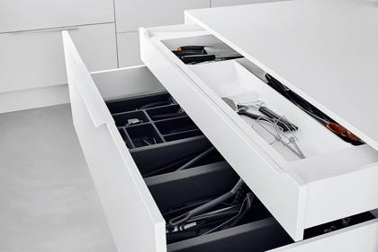
Representative photo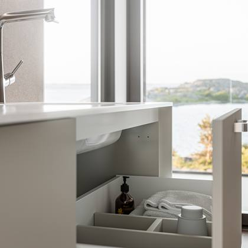
Representative photo| Ref | Item | Type | Status | Qty |
|---|---|---|---|---|
| Ref #SCALA COVER 186 ICE | NP Scala H186 cover set, ice | Drawer / box component | 1st quality | 805 |
| Ref #SCALA270L90ICE | NP Scala side set H90 270 mm, left-hand | Drawer / box component | 1st quality | 469 |
| Ref #SCALA270R90ICE | NP Scala side set H90 270 mm right-hand ice | Drawer / box component | 1st quality | 469 |
| Ref #LTKK30 | Water trap rotation kit, depth 30 | Drawer / box component | 1st quality | 467 |
| Ref #LJHLTK | DIVIDER BOX-LTK | Drawer / box component | 1st quality | 400 |
| Ref #SCALA350L90ICE | NP Scala side set H90 350 mm left-hand ice | Drawer / box component | 1st quality | 349 |
| Ref #SCALA350R90ICE | NP Scala side set H90 350 mm right-hand ice | Drawer / box component | 1st quality | 349 |
| Ref #SCALAPEITE90ICE | NP Scala H90 cover set, ice | Drawer / box component | 1st quality | 299 |
| Ref #SCALA300L186ICE | NP Scala side set H186 300 mm left ice | Drawer / box component | 1st quality | 298 |
| Ref #SCALA300R186ICE | NP Scala side set H186 300 mm right ice | Drawer / box component | 1st quality | 298 |
| Ref #SCALA300L90ICE | NP Scala side set H90 300 mm left-hand ice | Drawer / box component | 1st quality | 243 |
| Ref #SCALA300R90ICE | NP Scala side set H90 300 mm right-hand ice | Drawer / box component | 1st quality | 243 |
| Ref #SCALA350L186ICE | NP Scala side set H186 350 mm left-hand ice | Drawer / box component | 1st quality | 195 |
| Ref #SCALA350R186ICE | NP Scala side set H186 350 mm right ice | Drawer / box component | 1st quality | 195 |
| Ref #SCALA450L186ICE | NP Scala side set H186 450 mm left-hand ice | Drawer / box component | 1st quality | 165 |
| Ref #LTKK40 | Water trap bend, box, depth 40 | Drawer / box component | 1st quality | 149 |
| Ref #SCALA450L90ICE | NP Scala side set H90 450 mm left-hand ice | Drawer / box component | 1st quality | 140 |
| Ref #SCALA450R90ICE | NP Scala side set H90 450 mm straight ice | Drawer / box component | 1st quality | 139 |
| Ref #SCALA450R186ICE | NP Scala side set H186 450 mm right ice | Drawer / box component | 1st quality | 125 |
| Ref #SCALA400L90ICE | NP Scala side set H90 400 mm left-hand ice | Drawer / box component | 1st quality | 113 |
| Ref #SCALA400R90ICE | NP Scala side set H90 400 mm right-hand ice | Drawer / box component | 1st quality | 113 |
| Ref #SCALA270L186ICE | NP Scala side unit H186 270 mm left ice | Drawer / box component | 1st quality | 104 |
| Ref #SCALA270R186ICE | NP Scala side set H186 270 mm right ice | Drawer / box component | 1st quality | 104 |
| Ref #SCALA500L90ICE | NP Scala side set H90 500 mm left-hand ice | Drawer / box component | 1st quality | 96 |
| Ref #SCALA500R90ICE | NP Scala side set H90 500 mm right-hand ice | Drawer / box component | 1st quality | 96 |
| Ref #LTKK35 | Water trap bend, box, depth 35 | Drawer / box component | 1st quality | 88 |
| Ref #LTKPISTJOHTO | Box socket cable | Drawer / box component | 1st quality | 70 |
| Ref #SCALA400L186ICE | NP Scala side set H186 400 mm left-hand ice | Drawer / box component | 1st quality | 59 |
| Ref #SCALA400R186ICE | NP Scala side set H186 400 mm right ice | Drawer / box component | 1st quality | 59 |
| Ref #SCALA500L186ICE | NP Scala side set H186 500 mm left-hand ice | Drawer / box component | 1st quality | 49 |
| Ref #SCALA500R186ICE | NP Scala side set H186 500 mm right ice | Drawer / box component | 1st quality | 49 |
| Ref #LOSSS30OM01 | Side panel set for box 292x101x12 mm, right | Drawer / box component | 1st quality | 40 |
| Ref #LOSSS30VM01 | Set of drawer sides 292x101x12 mm, left-hand | Drawer / box component | 1st quality | 40 |
| Ref #LOSSOIRO101M01 | Side panel for box, 2750x101x12 mm | Drawer / box component | 1st quality | 39 |
| Ref #LOSSM20VM01 | Box side set 197x133x12 mm, left-hand | Drawer / box component | 1st quality | 37 |
| Ref #LJLPROFICE | NP F007130235507 H95 1098 mm ice | Drawer / box component | 1st quality | 36 |
| Ref #LJLPICE | NP Scala box end H95 ice | Drawer / box component | 1st quality | 34 |
| Ref #LJSPICE | NP Scala box connector, end cap H60 ice | Drawer / box component | 1st quality | 32 |
| Ref #LOSSM20OM01 | Drawer side set 197x133x12 mm, right-hand | Drawer / box component | 1st quality | 31 |
| Ref #LJLLICE | NP Scala shelf divider H95 ice | Drawer / box component | 1st quality | 30 |
| Ref #NPTL80M01 | Scala high-back box 80 709x185x16 mm M01 | Drawer / box component | 1st quality | 29 |
| Ref #NPTU58M01 | Scala drawer back, universal 58, 169.5 x 84 x 16 mm, M01 | Drawer / box component | 1st quality | 27 |
| Ref #LTK6030LSC | Scala box 6030, tall, 558x297x185 mm | Drawer / box component | 1st quality | 26 |
| Ref #LTK6030ASC | Scala box 6030 sink 558x297x185 mm | Drawer / box component | 1st quality | 23 |
| Ref #NPTL50M01 | Scala box, rear, high 50, 409 x 185 x 16 mm, M01 | Drawer / box component | 1st quality | 23 |
| Ref #LOSSS25OM01 | Side panel set for drawer, 242 x 101 x 12 mm, right-hand | Drawer / box component | 1st quality | 22 |
| Ref #LOSSS25VM01 | Box side set 242x101x12 mm, left-hand | Drawer / box component | 1st quality | 22 |
| Ref #LOSSL20VM01 | Box side set 197x173x12 mm, left-hand | Drawer / box component | 1st quality | 20 |
| Ref #NPP4530M01 | Scala drawer base 4530 359x281x16 mm M01 | Drawer / box component | 1st quality | 20 |
| Ref #LJSPROFICE | NP F102102944207 H60 1185 mm ice | Drawer / box component | 1st quality | 19 |
| Ref #LOSSL20OM01 | Side panel set for box 197x173x12 mm, right | Drawer / box component | 1st quality | 19 |
| Ref #NPTL58M01 | Scala high-back drawer unit 58 489x185x16 mm M01 | Drawer / box component | 1st quality | 19 |
| Ref #LOSSM35OM01 | Dynapro box side panel 35 342x133x12 mm | Drawer / box component | 1st quality | 18 |
| Ref #NPTU40M01 | Scala box back panel, universal 40, 79.5 x 84 x 16 mm | Drawer / box component | 1st quality | 17 |
| Ref #LOSSM25OM01 | Drawer side set 242x133x12 mm, right-hand | Drawer / box component | 1st quality | 16 |
| Ref #LOSSM35VM01 | Dynapro box side panel 35 342x133x12 mm | Drawer / box component | 1st quality | 16 |
| Ref #LOSSS35OM01 | Set of side panels for box, 342 x 101 x 12 mm, right- hand | Drawer / box component | 1st quality | 16 |
| Ref #LOSSS35VM01 | Drawer side set 342x101x12 mm, left-hand | Drawer / box component | 1st quality | 16 |
| Ref #NPPU6030M01 | Scala drawer base, universal 6030, 509 x 281 x 16 mm, M01 | Drawer / box component | 1st quality | 16 |
| Ref #NPTL40M01 | Scala box back panel, high 40 309x185x16 mm M01 | Drawer / box component | 1st quality | 16 |
| Ref #NPP8035M01 | Scala drawer base 8035 709x331x16 mm M01 | Drawer / box component | 1st quality | 15 |
| Ref #NPTU78M01 | Scala universal rear drawer 78 269.5 x 84 x 16 mm M01 | Drawer / box component | 1st quality | 15 |
| Ref #LOSSM25VM01 | Box side set 242x133x12 mm, left-hand | Drawer / box component | 1st quality | 14 |
| Ref #LOSSS40OM01 | Drawer side set 392x101x12 mm, right-hand | Drawer / box component | 1st quality | 14 |
| Ref #LOSSS40VM01 | Drawer side set 392x101x12 mm, left-hand | Drawer / box component | 1st quality | 14 |
| Ref #LOTSL450 | Dynapro drawer back panel set 45 375x142x16 mm | Drawer / box component | 1st quality | 14 |
| Ref #NPPU5830M01 | Scala drawer base, universal 5830, 489 x 281 x 16 mm, M01 | Drawer / box component | 1st quality | 14 |
| Ref #NPTL78M01 | Scala drawer back, high 78 689x185x16 mm M01 | Drawer / box component | 1st quality | 14 |
| Ref #LOSSM45VM01 | Drawer side set 442x133x12 mm, left-hand | Drawer / box component | 1st quality | 13 |
| Ref #LOTSS550 | Drawer back set 475x71x16 mm | Drawer / box component | 1st quality | 13 |
| Ref #NPTL48M01 | Scala high-back box 48 389x185x16 mm M01 | Drawer / box component | 1st quality | 13 |
| Ref #LOSSL40VM01 | Drawer side set 392x173x12 mm, left-hand | Drawer / box component | 1st quality | 12 |
| Ref #LOSSM30VM01 | Dynapro drawer side 30 292x133x12 mm | Drawer / box component | 1st quality | 12 |
| Ref #LOTSM450 | Dynapro box rear set 45 375x85x16 mm | Drawer / box component | 1st quality | 12 |
| Ref #NPP5035M01 | Scala drawer base 5035 409x331x16 mm M01 | Drawer / box component | 1st quality | 12 |
| Ref #NPTS55M01 | Scala low rear drawer 55 459x84x16 mm M01 | Drawer / box component | 1st quality | 12 |
| Ref #NPTU48M01 | Scala box back, universal 48, 119.5 x 84 x 16 mm, M01 | Drawer / box component | 1st quality | 12 |
| Ref #NPPU7827M01 | Scala drawer base, universal 7827, 689 x 251 x 16 mm | Drawer / box component | 1st quality | 11 |
| Ref #LJH50 | H-divider for drawer 373x172x80 mm | Drawer / box component | 1st quality | 11 |
| Ref #LOSSL25VM01 | Box side set 242x173x12 mm, left-hand | Drawer / box component | 1st quality | 11 |
| Ref #LOSSL30OM01 | Dynapro drawer side 30 292x173x12 mm | Drawer / box component | 1st quality | 11 |
| Ref #LOTSMM700 | Drawer back panel set 625x56x16 mm | Drawer / box component | 1st quality | 11 |
| Ref #NPP4027M01 | Scala drawer base 4027 309x251x16 mm M01 | Drawer / box component | 1st quality | 11 |
| Ref #NPP7540M01 | Scala drawer base 7540 659x381x16 mm | Drawer / box component | 1st quality | 11 |
| Ref #NPPU8030M01 | Scala drawer base, universal 8030, 709 x 281 x 16 mm, M01 | Drawer / box component | 1st quality | 11 |
| Ref #NPTA50M01 | Scala drawer rear tray 50 339x78x16 mm M01 | Drawer / box component | 1st quality | 11 |
| Ref #NPTU100M01 | Scala box back, universal 100 379.5x84x16 mm M01 | Drawer / box component | 1st quality | 11 |
| Ref #NPP2050M01 | Scala drawer base 2050 109x481x16 mm M01 | Drawer / box component | 1st quality | 10 |
| Ref #LOSSL45OM01 | Drawer side set 442x173x12 mm, right-hand | Drawer / box component | 1st quality | 10 |
| Ref #LOSSM45OM01 | Box side set 442x133x12 mm, right-hand | Drawer / box component | 1st quality | 10 |
| Ref #LOTSL500 | Dynapro drawer back panel set 50 425x142x16 mm | Drawer / box component | 1st quality | 10 |
| Ref #NPP11040M01 | Scala drawer base 11040 1009x381x16 mm | Drawer / box component | 1st quality | 10 |
| Ref #NPP3035M01 | Scala drawer base 3035 209x331x16 mm | Drawer / box component | 1st quality | 10 |
| Ref #NPP3527M01 | Scala drawer base 3527 259x251x16 mm | Drawer / box component | 1st quality | 10 |
| Ref #NPP3540M01 | Scala drawer base 3540 259x381x16 mm | Drawer / box component | 1st quality | 10 |
| Ref #NPP4035M01 | Scala drawer base 4035 309x331x16 mm M01 | Drawer / box component | 1st quality | 10 |
| Ref #NPP5530M01 | Scala drawer base 5530 459x281x16 mm M01 | Drawer / box component | 1st quality | 10 |
| Ref #NPP6040M01 | Scala drawer base 6040 509x381x16 mm M01 | Drawer / box component | 1st quality | 10 |
| Ref #NPP6245M01 | Scala drawer base 6245 529x431x16 mm M01 | Drawer / box component | 1st quality | 10 |
| Ref #NPP8030M01 | Scala drawer base 8030 709x281x16 mm M01 | Drawer / box component | 1st quality | 10 |
| Ref #NPPU7830M01 | Scala drawer base, universal 7830, 689 x 281 x 16 mm, M01 | Drawer / box component | 1st quality | 10 |
| Ref #NPTU60M01 | Scala box back panel, universal 60, 179.5 x 84 x 16 mm, M01 | Drawer / box component | 1st quality | 10 |
| Ref #NPTU70M01 | Scala rear box, universal 70, 229.5 x 84 x 16 mm, M01 | Drawer / box component | 1st quality | 10 |
| Ref #LJH552902 | H-divider for drawer 423x172x80 mm | Drawer / box component | 1st quality | 9 |
| Ref #LOSSL25OM01 | Drawer side set 242x173x12 mm, right-hand | Drawer / box component | 1st quality | 9 |
| Ref #LOSSL40OM01 | Side panel set for drawer, 392 x 173 x 12 mm, right-hand | Drawer / box component | 1st quality | 9 |
| Ref #LTK5830LSC | Scala box 5830, tall, 538 x 297 x 185 mm | Drawer / box component | 1st quality | 9 |
| Ref #LTK5830USC | Scala box 5830 universal 538x297x85 mm | Drawer / box component | 1st quality | 9 |
| Ref #NPP6035M01 | Scala drawer base 6035 509x331x16 mm M01 | Drawer / box component | 1st quality | 9 |
| Ref #NPP8527M01 | Scala drawer base 8527 759 x 251 x 16 mm | Drawer / box component | 1st quality | 9 |
| Ref #NPPU7040M01 | Scala drawer base, universal 7040, 609 x 381 x 16 mm, M01 | Drawer / box component | 1st quality | 9 |
| Ref #NPTL55M01 | Scala high-back drawer unit 55 459x185x16 mm M01 | Drawer / box component | 1st quality | 9 |
| Ref #NPTS100M01 | Scala box, rear, 100, 909 x 84 x 16 mm | Drawer / box component | 1st quality | 9 |
| Ref #NPP2550M01 | Scala drawer base 2550 159x481x16 mm M01 | Drawer / box component | 1st quality | 8 |
| Ref #NPPU4827M01 | Scala drawer base, universal 4827 389x251x16 mm | Drawer / box component | 1st quality | 8 |
| Ref #NPPU7027M01 | Scala drawer base, universal 7027, 609 x 251 x 16 mm, M01 | Drawer / box component | 1st quality | 8 |
| Ref #LJH55 | H-divider for drawer 423x172x80 mm | Drawer / box component | 1st quality | 8 |
| Ref #LOSSM30OM01 | Dynapro drawer side 30 292x133x12 mm | Drawer / box component | 1st quality | 8 |
| Ref #LOTSL600 | Rear panel set for drawer 525x142x16 mm | Drawer / box component | 1st quality | 8 |
| Ref #LOTSS500 | Drawer back set 425x71x16 mm | Drawer / box component | 1st quality | 8 |
| Ref #NPP4550M01 | Scala drawer base 4550 359x481x16 mm | Drawer / box component | 1st quality | 8 |
| Ref #NPP6045M01 | Scala drawer base 6045 509x431x16 mm M01 | Drawer / box component | 1st quality | 8 |
| Ref #NPP7035M01 | Scala drawer base 7035 609x331x16 mm M01 | Drawer / box component | 1st quality | 8 |
| Ref #NPP7830M01 | Scala drawer base 7830 689x281x16 mm M01 | Drawer / box component | 1st quality | 8 |
| Ref #NPP8027M01 | Scala drawer base 8027 709x251x16 mm M01 | Drawer / box component | 1st quality | 8 |
| Ref #NPPU5527M01 | Scala drawer base, universal 5527, 459 x 251 x 16 mm | Drawer / box component | 1st quality | 8 |
| Ref #NPTA45M01 | Scala drawer rear tray 45 289x78x16 mm | Drawer / box component | 1st quality | 8 |
| Ref #NPTL62M01 | Scala high-back box 62 529x185x16 mm M01 | Drawer / box component | 1st quality | 8 |
| Ref #NPTL85M01 | Scala box back panel 85 759x185x16 mm | Drawer / box component | 1st quality | 8 |
| Ref #NPTL90M01 | Scala high rear drawer 90 809x185x16 mm M01 | Drawer / box component | 1st quality | 8 |
| Ref #NPTS110M01 | Scala box back panel 110 1009x84x16 mm | Drawer / box component | 1st quality | 8 |
| Ref #NPTS120M01 | Scala drawer back panel 120 1109x84x16 mm | Drawer / box component | 1st quality | 8 |
| Ref #NPTU45M01 | Scala box back panel, universal 45, 104.5 x 84 x 16 mm | Drawer / box component | 1st quality | 8 |
| Ref #NPTU85M01 | Scala box back panel, universal 85, 304.5 x 84 x 16 mm | Drawer / box component | 1st quality | 8 |
| Ref #NPTA120M01 | Scala drawer rear tray 120 1039x78x16 mm M01 | Drawer / box component | 1st quality | 7 |
| Ref #LOSSL35O | Box side set 342x173x12 mm, right-hand | Drawer / box component | 1st quality | 7 |
| Ref #LOSSL35OM01 | Dynapro drawer side 35 342x173x12 mm | Drawer / box component | 1st quality | 7 |
| Ref #LOSSL45VM01 | Side panel set for drawer 442x173x12 mm, left | Drawer / box component | 1st quality | 7 |
| Ref #LOTSM600 | Box rear set 525 x 85 x 16 mm KPL | Drawer / box component | 1st quality | 7 |
| Ref #NPP10035M01 | Scala drawer base 10035 909x331x16 mm M01 | Drawer / box component | 1st quality | 7 |
| Ref #NPP3535M01 | Scala drawer base 3535 259x331x16 mm | Drawer / box component | 1st quality | 7 |
| Ref #NPP4535M01 | Scala drawer base 4535 359x331x16 mm M01 | Drawer / box component | 1st quality | 7 |
| Ref #NPP7530M01 | Scala drawer base 7530 659x281x16 mm | Drawer / box component | 1st quality | 7 |
| Ref #NPP8540M01 | Scala drawer base 8540 759x381x16 mm | Drawer / box component | 1st quality | 7 |
| Ref #NPPU6035M01 | Scala drawer base, universal 6035, 509 x 331 x 16 mm, M01 | Drawer / box component | 1st quality | 7 |
| Ref #NPPU7540M01 | Scala drawer base, universal 7540, 659 x 381 x 16 mm | Drawer / box component | 1st quality | 7 |
| Ref #NPPU8040M01 | Scala drawer base, universal 8040, 709 x 381 x 16 mm, M01 | Drawer / box component | 1st quality | 7 |
| Ref #NPPU9035M01 | Scala drawer base, universal 9035, 809 x 331 x 16 mm, M01 | Drawer / box component | 1st quality | 7 |
| Ref #NPTA80M01 | Scala drawer rear tray 80 639x78x16 mm M01 | Drawer / box component | 1st quality | 7 |
| Ref #NPTL70M01 | Scala high-back box 70 609x185x16 mm M01 | Drawer / box component | 1st quality | 7 |
| Ref #NPTS35M01 | Scala drawer back panel 35 259x84x16 mm | Drawer / box component | 1st quality | 7 |
| Ref #NPTS45M01 | Scala low rear drawer 45 359x84x16 mm M01 | Drawer / box component | 1st quality | 7 |
| Ref #NPTS60M01 | Scala drawer back panel 60 509x84x16 mm | Drawer / box component | 1st quality | 7 |
| Ref #NPTU50M01 | Scala box back panel, universal 50, 129.5 x 84 x 16 mm | Drawer / box component | 1st quality | 7 |
| Ref #LTK4040LSC | Scala box 4040, tall, 358x397x185 mm | Drawer / box component | 1st quality | 6 |
| Ref #NPP2535M01 | Scala drawer base 2535 159x331x16 mm M01 | Drawer / box component | 1st quality | 6 |
| Ref #NPTS20M01 | Scala drawer back, shallow 20 109x84x16 mm M01 | Drawer / box component | 1st quality | 6 |
| Ref #LJH35 | H-divider for drawer 223x172x80 mm, white | Drawer / box component | 1st quality | 6 |
| Ref #LJH502902 | H-divider for box 373x172x80 mm | Drawer / box component | 1st quality | 6 |
| Ref #LJH602902 | H-divider for drawer 473x172x80 mm | Drawer / box component | 1st quality | 6 |
| Ref #LOKKP5530 | Dynapro drawer base 5530 475x290x16 mm | Drawer / box component | 1st quality | 6 |
| Ref #LTK4830LSC | Scala box 4830, tall, 438x297x185 mm | Drawer / box component | 1st quality | 6 |
| Ref #NPP3030M01 | Scala drawer base 3030 209x281x16 mm | Drawer / box component | 1st quality | 6 |
| Ref #NPP4527M01 | Scala drawer base 4527 359x251x16 mm | Drawer / box component | 1st quality | 6 |
| Ref #NPP4545M01 | Scala drawer base 4545 359x431x16 mm | Drawer / box component | 1st quality | 6 |
| Ref #NPP4830M01 | Scala drawer base 4830 389x281x16 mm M01 | Drawer / box component | 1st quality | 6 |
| Ref #NPP5545M01 | Scala drawer base 5545 459x431x16 mm | Drawer / box component | 1st quality | 6 |
| Ref #NPP6027M01 | Scala drawer base 6027 509x251x16 mm M01 | Drawer / box component | 1st quality | 6 |
| Ref #NPP7050M01 | Scala drawer base 7050 609x481x16 mm | Drawer / box component | 1st quality | 6 |
| Ref #NPP9035M01 | Scala drawer base 9035 809x331x16 mm M01 | Drawer / box component | 1st quality | 6 |
| Ref #NPP9040M01 | Scala drawer base 9040 809 x 381 x 16 mm M01 | Drawer / box component | 1st quality | 6 |
| Ref #NPTA55M01 | Scala drawer rear tray 55 389x78x16 mm M01 | Drawer / box component | 1st quality | 6 |
| Ref #NPTS50M01 | Scala low rear drawer 50 409x84x16 mm M01 | Drawer / box component | 1st quality | 6 |
| Ref #NPPU7527M01 | Scala drawer base, universal 7527, 659 x 251 x 16 mm | Drawer / box component | 1st quality | 5 |
| Ref #NPTA100M01 | Scala drawer rear tray 100 839x78x16 mm M01 | Drawer / box component | 1st quality | 5 |
| Ref #LOSSL30VM01 | Dynapro drawer side 30 292x173x12 mm | Drawer / box component | 1st quality | 5 |
| Ref #LOSSS45OM01 | Drawer side set 442x101x12 mm, right-hand | Drawer / box component | 1st quality | 5 |
| Ref #LOSSS45VM01 | Drawer side set 442x101x12 mm, left-hand | Drawer / box component | 1st quality | 5 |
| Ref #LOTSL400 | Dynapro box rear set 40 325x142x16 mm | Drawer / box component | 1st quality | 5 |
| Ref #LOTSMM400 | Box back panel set 325x56x16 mm | Drawer / box component | 1st quality | 5 |
| Ref #LOTSMM450 | Box back panel set 375x56x16 mm | Drawer / box component | 1st quality | 5 |
| Ref #LOTSMM750 | Drawer back set 675x56x16 mm | Drawer / box component | 1st quality | 5 |
| Ref #LOTSS300 | Box back panel set 225x71x16 mm | Drawer / box component | 1st quality | 5 |
| Ref #NPP4540M01 | Scala drawer base 4540 359x381x16 mm | Drawer / box component | 1st quality | 5 |
| Ref #NPP7045M01 | Scala drawer base 7045 609x431x16 mm | Drawer / box component | 1st quality | 5 |
| Ref #NPP8535M01 | Scala drawer base 8535 759x331x16 mm | Drawer / box component | 1st quality | 5 |
| Ref #NPP9030M01 | Scala drawer base 9030 809 x 281 x 16 mm M01 | Drawer / box component | 1st quality | 5 |
| Ref #NPPU11040M01 | Scala drawer base, universal 11040 1009x381x16 mm | Drawer / box component | 1st quality | 5 |
| Ref #NPPU4527M01 | Scala drawer base, universal 4527, 359 x 251 x 16 mm | Drawer / box component | 1st quality | 5 |
| Ref #NPPU6027M01 | Scala drawer base, universal 6027, 509 x 251 x 16 mm, M01 | Drawer / box component | 1st quality | 5 |
| Ref #NPPU6040M01 | Scala drawer base, universal 6040, 509 x 381 x 16 mm, M01 | Drawer / box component | 1st quality | 5 |
| Ref #NPTL110M01 | Scala box, rear, 110, 1009 x 185 x 16 mm | Drawer / box component | 1st quality | 5 |
| Ref #NPTS85M01 | Scala drawer back panel 85 759x84x16 mm | Drawer / box component | 1st quality | 5 |
| Ref #NPTS90M01 | Scala drawer back panel 90 809x84x16 mm | Drawer / box component | 1st quality | 5 |
| Ref #NPP2035M01 | Scala drawer base 2035 109x331x16 mm M01 | Drawer / box component | 1st quality | 4 |
| Ref #NPP2040M01 | Scala drawer base 2040 109x381x16 mm M01 | Drawer / box component | 1st quality | 4 |
| Ref #NPPU8027M01 | Scala drawer base, universal 8027, 709 x 251 x 16 mm, M01 | Drawer / box component | 1st quality | 4 |
| Ref #LJH40 | H-divider for drawer 273x172x80 mm | Drawer / box component | 1st quality | 4 |
| Ref #LJH60 | H-divider for drawer 473x172x80 mm | Drawer / box component | 1st quality | 4 |
| Ref #LOKKP4530 | Dynapro box base 4530 375x290x16 mm | Drawer / box component | 1st quality | 4 |
| Ref #LOKKP5030 | Dynapro box base 5030 425x290x16 mm | Drawer / box component | 1st quality | 4 |
| Ref #LOSSS50VM01 | Drawer side set 492x101x12 mm, left-hand | Drawer / box component | 1st quality | 4 |
| Ref #LOTSL550 | Dynapro drawer back panel set 55 475x142x16 mm | Drawer / box component | 1st quality | 4 |
| Ref #LOTSMM550 | Drawer back set 475x56x16 mm | Drawer / box component | 1st quality | 4 |
| Ref #LOTSS800 | Rear panel set for drawer 725x71x16 mm | Drawer / box component | 1st quality | 4 |
| Ref #NPP10030M01 | Scala drawer base 10030 909x281x16 mm M01 | Drawer / box component | 1st quality | 4 |
| Ref #NPP12030M01 | Scala drawer base 12030 1109x281x16 mm M01 | Drawer / box component | 1st quality | 4 |
| Ref #NPP12040M01 | Scala drawer base 12040 1109x381x16 mm M01 | Drawer / box component | 1st quality | 4 |
| Ref #NPP4040M01 | Scala drawer base 4040 309x381x16 mm M01 | Drawer / box component | 1st quality | 4 |
| Ref #NPP4045M01 | Scala drawer base 4045 309x431x16 mm | Drawer / box component | 1st quality | 4 |
| Ref #NPP6540M01 | Scala drawer base 6540 559x381x16 mm | Drawer / box component | 1st quality | 4 |
| Ref #NPP7030M01 | Scala drawer base 7030 609 x 281 x 16 mm M01 | Drawer / box component | 1st quality | 4 |
| Ref #NPP8050M01 | Scala drawer base 8050 709x481x16 mm M01 | Drawer / box component | 1st quality | 4 |
| Ref #NPPU4027M01 | Scala drawer base, universal 4027, 309 x 251 x 16 mm | Drawer / box component | 1st quality | 4 |
| Ref #NPPU6535M01 | Scala drawer base, universal 6535, 559 x 331 x 16 mm | Drawer / box component | 1st quality | 4 |
| Ref #NPPU6540M01 | Scala drawer base, universal 6540, 559x381x16 mm | Drawer / box component | 1st quality | 4 |
| Ref #NPPU7035M01 | Scala drawer base, universal 7035, 609 x 331 x 16 mm, M01 | Drawer / box component | 1st quality | 4 |
| Ref #NPPU8035M01 | Scala drawer base, universal 8035, 709 x 331 x 16 mm, M01 | Drawer / box component | 1st quality | 4 |
| Ref #NPTA70M01 | Scala drawer rear tray 70 539x78x16 mm M01 | Drawer / box component | 1st quality | 4 |
| Ref #LTK7030LSC | Scala ltk 7030 tall 658x297x185 mm | Drawer / box component | 1st quality | 3 |
| Ref #NPPU6527M01 | Scala drawer base, universal 6527, 559x251x16 mm | Drawer / box component | 1st quality | 3 |
| Ref #NPTA90M01 | Scala drawer rear tray 90 739x78x16 mm M01 | Drawer / box component | 1st quality | 3 |
| Ref #NPTU65M01 | Scala box back, universal 65, 204.5 x 84 x 16 mm | Drawer / box component | 1st quality | 3 |
| Ref #LOKKP4035 | Dynapro box base 4035 325x340x16 mm | Drawer / box component | 1st quality | 3 |
| Ref #LOP6040ALU | Box base 468x390x16, off-white | Drawer / box component | 1st quality | 3 |
| Ref #LOSSM40VM01 | Dynapro box, side 40, 392 x 133 x 12 mm | Drawer / box component | 1st quality | 3 |
| Ref #LOTSM200 | Dynapro box rear set 20 125x85x16 mm | Drawer / box component | 1st quality | 3 |
| Ref #LOTSS450 | Drawer back set 375x71x16 mm | Drawer / box component | 1st quality | 3 |
| Ref #NPP10040M01 | Scala drawer base 10040 909x381x16 mm M01 | Drawer / box component | 1st quality | 3 |
| Ref #NPP11030M01 | Scala drawer base 11030 1009x281x16 mm | Drawer / box component | 1st quality | 3 |
| Ref #NPP12035M01 | Scala drawer base 12035 1109x331x16 mm M01 | Drawer / box component | 1st quality | 3 |
| Ref #NPP4030M01 | Scala drawer base 4030 309x281x16 mm M01 | Drawer / box component | 1st quality | 3 |
| Ref #NPP5027M01 | Scala drawer base 5027 409x251x16 mm M01 | Drawer / box component | 1st quality | 3 |
| Ref #NPP5040M01 | Scala drawer base 5040 409x381x16 mm M01 | Drawer / box component | 1st quality | 3 |
| Ref #NPP5535M01 | Scala drawer base 5535 459x331x16 mm M01 | Drawer / box component | 1st quality | 3 |
| Ref #NPP5550M01 | Scala drawer base 5550 459x481x16 mm | Drawer / box component | 1st quality | 3 |
| Ref #NPP6530M01 | Scala drawer base 6530 559x281x16 mm | Drawer / box component | 1st quality | 3 |
| Ref #NPP7027M01 | Scala drawer base 7027 609x251x16 mm M01 | Drawer / box component | 1st quality | 3 |
| Ref #NPP7535M01 | Scala drawer base 7535 659x331x16 mm | Drawer / box component | 1st quality | 3 |
| Ref #NPP8040M01 | Scala drawer base 8040 709x381x16 mm M01 | Drawer / box component | 1st quality | 3 |
| Ref #NPP8530M01 | Scala drawer base 8530 759x281x16 mm | Drawer / box component | 1st quality | 3 |
| Ref #NPPU10040M01 | Scala drawer base, universal 10040, 909 x 381 x 16 mm, M01 | Drawer / box component | 1st quality | 3 |
| Ref #NPPU11030M01 | Scala drawer base, universal 11030, 1009 x 281 x 16 mm | Drawer / box component | 1st quality | 3 |
| Ref #NPPU4830M01 | Scala drawer base, universal 4830, 389 x 281 x 16 mm, M01 | Drawer / box component | 1st quality | 3 |
| Ref #NPPU6530M01 | Scala drawer base, universal 6530, 559x281x16 mm | Drawer / box component | 1st quality | 3 |
| Ref #NPPU9040M01 | Scala drawer base, universal 9040, 809 x 381 x 16 mm, M01 | Drawer / box component | 1st quality | 3 |
| Ref #NPTL100M01 | Scala rear high drawer 100 909x185x16 mm M01 | Drawer / box component | 1st quality | 3 |
| Ref #NPTL35M01 | Scala drawer back panel 35 259x185x16 mm | Drawer / box component | 1st quality | 3 |
| Ref #NPTL45M01 | Scala high-back drawer unit 45 359x185x16 mm M01 | Drawer / box component | 1st quality | 3 |
| Ref #NPTS30M01 | Scala drawer back panel 30 209x84x16 mm | Drawer / box component | 1st quality | 3 |
| Ref #NPTS70M01 | Scala drawer back panel 70 609x84x16 mm | Drawer / box component | 1st quality | 3 |
| Ref #LTK12035ASC | Scala box 12035 sink 1158x347x185 mm | Drawer / box component | 1st quality | 2 |
| Ref #LTK12035LSC | Scala box 12035, tall, 1158x347x185 mm | Drawer / box component | 1st quality | 2 |
| Ref #LTK5027LSC | Scala box 5027, tall, 458 x 267 x 185 mm | Drawer / box component | 1st quality | 2 |
| Ref #LTK5027USC | Scala box, universal 5027, internal dimensions 409x251x70 mm | Drawer / box component | 1st quality | 2 |
| Ref #LTK5030SSC | Scala box 5030, low profile, 458 x 297 x 85 mm | Drawer / box component | 1st quality | 2 |
| Ref #LTK6030USC | Scala ltk 6030 universal 558x297x85 mm | Drawer / box component | 1st quality | 2 |
| Ref #LTK6035USC | Scala box 6035 universal 558x347x85 mm | Drawer / box component | 1st quality | 2 |
| Ref #NPP2540M01 | Scala drawer base 2540 159x381x16 mm M01 | Drawer / box component | 1st quality | 2 |
| Ref #NPPU9027M01 | Scala drawer base, universal 9027, 809 x 251 x 16 mm, M01 | Drawer / box component | 1st quality | 2 |
| Ref #NPTS25M01 | Scala low rear drawer 25 159x84x16 mm M01 | Drawer / box component | 1st quality | 2 |
| Ref #LJS50 | Low-profile cable distributor for cabinet widths of 50 cm | Drawer / box component | 1st quality | 2 |
| Ref #LOKKP4030 | Dynapro box base 4030 325x290x16 mm | Drawer / box component | 1st quality | 2 |
| Ref #LOKKP5035 | Dynapro box base 5035 425x340x16 mm | Drawer / box component | 1st quality | 2 |
| Ref #LOKKP5535 | Dynapro drawer base 5535 475x340x16 mm | Drawer / box component | 1st quality | 2 |
| Ref #LOKKP6030 | Box base, 525 x 290 x 16 mm | Drawer / box component | 1st quality | 2 |
| Ref #LOKKP6035 | Box base, 525 x 340 x 16 mm | Drawer / box component | 1st quality | 2 |
| Ref #LOSSL35VM01 | Dynapro drawer side 35 342x173x12 mm | Drawer / box component | 1st quality | 2 |
| Ref #LOSSM40OM01 | Dynapro drawer side 40 392x133x12 mm | Drawer / box component | 1st quality | 2 |
| Ref #LOSSS50OM01 | Drawer side set 492x101x12 mm, right-hand | Drawer / box component | 1st quality | 2 |
| Ref #LOTSM400 | Dynapro box rear set 40 325x85x16 mm | Drawer / box component | 1st quality | 2 |
| Ref #LTK5827USC | Scala box, universal 5827, internal dimensions 489x251x70 mm | Drawer / box component | 1st quality | 2 |
| Ref #NPP3027M01 | Scala drawer base 3027 209 x 251 x 16 mm | Drawer / box component | 1st quality | 2 |
| Ref #NPP3040M01 | Scala drawer base 3040 209x381x16 mm | Drawer / box component | 1st quality | 2 |
| Ref #NPP3050M01 | Scala drawer base 3050 209x481x16 mm | Drawer / box component | 1st quality | 2 |
| Ref #NPP4050M01 | Scala drawer base 4050 309x481x16 mm M01 | Drawer / box component | 1st quality | 2 |
| Ref #NPP5050M01 | Scala drawer base 5050 409x481x16 mm M01 | Drawer / box component | 1st quality | 2 |
| Ref #NPP5540M01 | Scala drawer base 5540 459x381x16 mm M01 | Drawer / box component | 1st quality | 2 |
| Ref #NPP6050M01 | Scala drawer base 6050 509x481x16 mm M01 | Drawer / box component | 1st quality | 2 |
| Ref #NPP6535M01 | Scala drawer base 6535 559x331x16 mm | Drawer / box component | 1st quality | 2 |
| Ref #NPP7527M01 | Scala drawer base 7527 659x251x16 mm | Drawer / box component | 1st quality | 2 |
| Ref #NPPU10030M01 | Scala drawer base, universal 10030, 909x281x16 mm, M01 | Drawer / box component | 1st quality | 2 |
| Ref #NPPU12030M01 | Scala drawer base, universal 12030, 1109 x 281 x 16 mm, M01 | Drawer / box component | 1st quality | 2 |
| Ref #NPPU12035M01 | Scala drawer base, universal 12035, 1109 x 331 x 16 mm, M01 | Drawer / box component | 1st quality | 2 |
| Ref #NPPU12040M01 | Scala drawer base, universal 12040, 1109 x 381 x 16 mm, M01 | Drawer / box component | 1st quality | 2 |
| Ref #NPPU7530M01 | Scala drawer base, universal 7530, 659 x 281 x 16 mm | Drawer / box component | 1st quality | 2 |
| Ref #NPPU7535M01 | Scala drawer base, universal 7535, 659 x 331 x 16 mm | Drawer / box component | 1st quality | 2 |
| Ref #NPTL120M01 | Scala high back panel for drawer 120 1109x185x16 mm M01 | Drawer / box component | 1st quality | 2 |
| Ref #NPTL75M01 | Scala box, rear, 75, 659 x 185 x 16 mm | Drawer / box component | 1st quality | 2 |
| Ref #NPTS75M01 | Scala drawer back panel 75 659x84x16 mm | Drawer / box component | 1st quality | 2 |
| Ref #NPTU110M01 | Scala box back panel, universal 110, 429.5 x 84 x 16 mm | Drawer / box component | 1st quality | 2 |
| Ref #NPTU75M01 | Scala box back panel, universal 75, 254.5 x 84 x 16 mm | Drawer / box component | 1st quality | 2 |
| Ref #LTK10035USC | Scala box 10035 universal 958x347x85 mm | Drawer / box component | 1st quality | 1 |
| Ref #LTK4027ASC | Scala box 4027 basin 358x267x185 mm | Drawer / box component | 1st quality | 1 |
| Ref #LTK4027LSC | Scala ltk 4027 tall 358x267x185 mm | Drawer / box component | 1st quality | 1 |
| Ref #LTK4027USC | Scala box, universal 4027, internal dimensions 309x251x70 mm | Drawer / box component | 1st quality | 1 |
| Ref #LTK4530LSC | Scala box 4530, tall, 408 x 297 x 185 mm | Drawer / box component | 1st quality | 1 |
| Ref #LTK4827USC | Scala box, universal 4827, internal dimensions 389x251x70 mm | Drawer / box component | 1st quality | 1 |
| Ref #LTK5530ASC | Scala box 5530 sink 508x297x185 mm | Drawer / box component | 1st quality | 1 |
| Ref #LTK5530LSC | Scala ltk 5530 tall 508x297x185 mm | Drawer / box component | 1st quality | 1 |
| Ref #LTK6027LSC | Scala box 6027, tall, 558 x 267 x 185 mm | Drawer / box component | 1st quality | 1 |
| Ref #LTK6035LSC | Scala box 6035, tall, 558 x 347 x 185 mm | Drawer / box component | 1st quality | 1 |
| Ref #LTK6050SSC | Scala box 6050, internal dimensions 509x481x70 mm | Drawer / box component | 1st quality | 1 |
| Ref #LTK7030ASC | Scala box 7030, basin 658x297x185 mm | Drawer / box component | 1st quality | 1 |
| Ref #LTK7030SSC | Scala box 7030, internal dimensions 609x281x70 mm | Drawer / box component | 1st quality | 1 |
| Ref #LTK7035LSC | Scala box 7035, tall, 658 x 347 x 185 mm | Drawer / box component | 1st quality | 1 |
| Ref #LTK8040LSC | Scala box 8040, tall, 758x397x185 mm | Drawer / box component | 1st quality | 1 |
| Ref #LTK8040USC | Scala box 8040 universal 758x397x85 mm | Drawer / box component | 1st quality | 1 |
| Ref #LTK9027LSC | Scala box 9027, tall, 858 x 267 x 185 mm | Drawer / box component | 1st quality | 1 |
| Ref #LTK9027USC | Scala box 9027 universal 858x267x85 mm | Drawer / box component | 1st quality | 1 |
| Ref #LTK9030ASC | Scala box 9030 sink 858x297x185 mm | Drawer / box component | 1st quality | 1 |
| Ref #LTK9030LSC | Scala ltk 9030 tall 858x297x185 mm | Drawer / box component | 1st quality | 1 |
| Ref #LTOSIVU2240OMW | LTO box, right-hand side, 2240x580x16 mm | Drawer / box component | 1st quality | 1 |
| Ref #LJH402902 | H-divider for drawer 273x172x80 mm | Drawer / box component | 1st quality | 1 |
| Ref #LJL40 | Tall partition for cupboards 40 cm wide | Drawer / box component | 1st quality | 1 |
| Ref #LJL50 | Tall cable organiser for cabinet width 50 cm | Drawer / box component | 1st quality | 1 |
| Ref #LJLPROF40ICE | NP Scala box joint profile 297x95x8 mm | Drawer / box component | 1st quality | 1 |
| Ref #LJLPROF45ICE | NP Scala profile 347x95x8 mm | Drawer / box component | 1st quality | 1 |
| Ref #LJLPROF50ICE | NP Scala profile 397x95x8 mm | Drawer / box component | 1st quality | 1 |
| Ref #LJLPROF80ICE | NP Scala profile 697x95x8 mm | Drawer / box component | 1st quality | 1 |
| Ref #LJS40 | Low-profile power strip for 40 cm cabinet width | Drawer / box component | 1st quality | 1 |
| Ref #LOSSL50VM01 | Drawer side set 492x173x12 mm, left-hand | Drawer / box component | 1st quality | 1 |
| Ref #LOSSM50OM01 | Dynapro drawer side 50 492x133x12 mm | Drawer / box component | 1st quality | 1 |
| Ref #LOSSM50VM01 | Dynapro drawer side 50 492x133x12 mm | Drawer / box component | 1st quality | 1 |
| Ref #LOTSL60ALU | Drawer back set 468x142x16 mm | Drawer / box component | 1st quality | 1 |
| Ref #LOTSM250 | Dynapro box rear set 25 175x85x16 mm | Drawer / box component | 1st quality | 1 |
| Ref #LOTSM500 | Dynapro box rear set 50 425x85x16 mm | Drawer / box component | 1st quality | 1 |
| Ref #LOTSM550 | Dynapro drawer back set 55 475x85x16 mm | Drawer / box component | 1st quality | 1 |
| Ref #LOTSMM500 | Box back panel set 425x56x16 mm | Drawer / box component | 1st quality | 1 |
| Ref #LOTSMM600 | Drawer back set 525x56x16 mm | Drawer / box component | 1st quality | 1 |
| Ref #LOTSS400 | Drawer back set 325x71x16 mm | Drawer / box component | 1st quality | 1 |
| Ref #LTK3035LLDY | Box, internal dimensions 225x324x145/142 mm, white M01 | Drawer / box component | 1st quality | 1 |
| Ref #LTK3035MMDY | Box, internal dimensions 225x324x105/85 mm, white, M01 | Drawer / box component | 1st quality | 1 |
| Ref #LTK5525MMDY | Box, internal dimensions 475x224x105/85 mm, white M01 | Drawer / box component | 1st quality | 1 |
| Ref #LTK5540LLDY | Drawer, internal dimensions 475 x 374 x 145/142 mm, white, M01 | Drawer / box component | 1st quality | 1 |
| Ref #LTK5540MMDY | Drawer, internal dimensions 475 x 374 x 105/85 mm, white M01 | Drawer / box component | 1st quality | 1 |
| Ref #LTK6245LSC | Scala box 6245, tall, 578 x 447 x 185 mm | Drawer / box component | 1st quality | 1 |
| Ref #LTKPIST1 | 1-way socket in box, IP54 | Drawer / box component | 1st quality | 1 |
| Ref #NPP11035M01 | Scala drawer base 11035 1009x331x16 mm | Drawer / box component | 1st quality | 1 |
| Ref #NPP3550M01 | Scala drawer base 3550 259x481x16 mm | Drawer / box component | 1st quality | 1 |
| Ref #NPP5030M01 | Scala drawer base 5030 409x281x16 mm M01 | Drawer / box component | 1st quality | 1 |
| Ref #NPP5527M01 | Scala drawer base 5527 459x251x16 mm M01 | Drawer / box component | 1st quality | 1 |
| Ref #NPP6030M01 | Scala drawer base 6030 509x281x16 mm M01 | Drawer / box component | 1st quality | 1 |
| Ref #NPP7040M01 | Scala drawer base 7040 609x381x16 mm M01 | Drawer / box component | 1st quality | 1 |
| Ref #NPP9027M01 | Scala drawer base 9027 809 x 251 x 16 mm M01 | Drawer / box component | 1st quality | 1 |
| Ref #NPPU10035M01 | Scala drawer base, universal 10035 909x331x16 mm M01 | Drawer / box component | 1st quality | 1 |
| Ref #NPPU11035M01 | Scala drawer base, universal 11035 1009x331x16 mm | Drawer / box component | 1st quality | 1 |
| Ref #NPPU5027M01 | Scala drawer base, universal 5027, 409 x 251 x 16 mm | Drawer / box component | 1st quality | 1 |
| Ref #NPPU7030M01 | Scala drawer base, universal 7030, 609 x 281 x 16 mm, M01 | Drawer / box component | 1st quality | 1 |
| Ref #NPPU8535M01 | Scala drawer base, universal 8535, 759 x 331 x 16 mm | Drawer / box component | 1st quality | 1 |
| Ref #NPPU8540M01 | Scala drawer base, universal 8540, 759 x 381 x 16 mm | Drawer / box component | 1st quality | 1 |
| Ref #NPTA40M01 | Scala drawer back panel 40 239x78x16 mm M01 | Drawer / box component | 1st quality | 1 |
| Ref #NPTA60M01 | Scala rear tray for drawer 60 439x78x16 mm M01 | Drawer / box component | 1st quality | 1 |
| Ref #NPTL30M01 | Scala drawer back panel 30 209x185x16 mm | Drawer / box component | 1st quality | 1 |
| Ref #NPTS40M01 | Scala drawer back, low 40 309x84x16 mm M01 | Drawer / box component | 1st quality | 1 |
| Ref #NPTU55M01 | Scala box back panel, universal, 55, 154.5 x 84 x 16 mm | Drawer / box component | 1st quality | 1 |
Boards, worktops, mirror sheets & glass shelves 151 items · 11,568 pcs · 4,191 m² · 31.0 m · 10.6 sheets
| Ref | Item | Type | Status | Qty |
|---|---|---|---|---|
| Ref #MIRROR SHEET 64135 | MIRROR SHEET 640x1350 ART. NO. 22147 | Mirror glass sheet (raw) | 1st quality | 4,138 |
| Ref #MIRROR SHEET 36135 | MIRROR SHEET 360x1350 | Mirror glass sheet (raw) | 1st quality | 2,549 |
| Ref #LH127466 | Glass shelf 466x127x6 | Glass shelf | 1st quality | 398 |
| Ref #LH127566 | Glass shelf 566x127x6 | Glass shelf | 1st quality | 364 |
| Ref #LH466 | Glass shelf 466x105x6 | Glass shelf | 1st quality | 340 |
| Ref #SHELF P350-700 | GLASS SHELF PACK 150x32x782 | Glass shelf | 1st quality | 275 |
| Ref #LH566 | Glass shelf 566x105x6 | Glass shelf | 1st quality | 200 |
| Ref #LH127766 | Glass shelf 766x127x6 | Glass shelf | 1st quality | 198 |
| Ref #LH127381 | Glass shelf 381x127x6 | Glass shelf | 1st quality | 176 |
| Ref #LH127866 | Glass shelf 866x127x6 | Glass shelf | 1st quality | 165 |
| Ref #LH866 | Glass shelf 866x105x6 | Glass shelf | 1st quality | 165 |
| Ref #LH127416 | Glass shelf 416x127x6 | Glass shelf | 1st quality | 160 |
| Ref #LH516 | Glass shelf 516x105x6 | Glass shelf | 1st quality | 160 |
| Ref #LH127331 | Glass shelf 331x127x6 | Glass shelf | 1st quality | 150 |
| Ref #LH666 | Glass shelf 666x105x6 | Glass shelf | 1st quality | 143 |
| Ref #LH127616 | Glass shelf 616x127x6 | Glass shelf | 1st quality | 133 |
| Ref #LH366 | Glass shelf 366x105x6 | Glass shelf | 1st quality | 130 |
| Ref #ILH600 | Glass shelf 600x120x8 | Glass shelf | 1st quality | 108 |
| Ref #LH766 | Glass shelf 766x105x6 | Glass shelf | 1st quality | 105 |
| Ref #LH127666 | Glass shelf 666x127x6 | Glass shelf | 1st quality | 100 |
| Ref #LH127816 | Glass shelf 816x127x6 | Glass shelf | 1st quality | 100 |
| Ref #LH127716 | Glass shelf 716x127x6 | Glass shelf | 1st quality | 97 |
| Ref #LH280 | Glass shelf 280x105x6 SK30 | Glass shelf | 1st quality | 85 |
| Ref #LH127366 | Glass shelf 366x127x6 | Glass shelf | 1st quality | 74 |
| Ref #LH416 | Glass shelf 416x105x6 | Glass shelf | 1st quality | 69 |
| Ref #LH127474 | Glass shelf 474x127x6 | Glass shelf | 1st quality | 66 |
| Ref #LH316 | Glass shelf 316x105x6 | Glass shelf | 1st quality | 66 |
| Ref #LH127516 | Glass shelf 516x127x6 | Glass shelf | 1st quality | 59 |
| Ref #LH616 | Glass shelf 616x105x6 | Glass shelf | 1st quality | 55 |
| Ref #ILH550 | Glass shelf 550x120x8 | Glass shelf | 1st quality | 54 |
| Ref #PKALASIHPAK60 | Unic 60 and 120 mirror cabinet glass shelf set | Glass shelf | 1st quality | 35 |
| Ref #LH230 | Glass shelf 230x105x6 SK25 | Glass shelf | 1st quality | 34 |
| Ref #ILH500 | Glass shelf 500x120x8 | Glass shelf | 1st quality | 33 |
| Ref #ILH1050 | Glass shelf 1050x120x8 | Glass shelf | 1st quality | 30 |
| Ref #ILH400 | Glass shelf 400x120x8 | Glass shelf | 1st quality | 27 |
| Ref #ILH950 | Glass shelf 950x120x8 | Glass shelf | 1st quality | 25 |
| Ref #LH127449 | Glass shelf 449x127x6 | Glass shelf | 1st quality | 25 |
| Ref #ILH750 | Glass shelf 750x120x8 | Glass shelf | 1st quality | 24 |
| Ref #ILH1150 | Glass shelf 1150x120x8 | Glass shelf | 1st quality | 22 |
| Ref #LH716 | Glass shelf 716x105x6 | Glass shelf | 1st quality | 21 |
| Ref #ILH800 | Glass shelf 800x120x8 | Glass shelf | 1st quality | 19 |
| Ref #LHD800500GBR | Tempered glass shelf 766x425x8 mm, bronze | Glass shelf | 1st quality | 19 |
| Ref #LHD400500GBR | Tempered glass shelf 366x425x8 mm, bronze | Glass shelf | 1st quality | 18 |
| Ref #PKALASIHPAK50 | Glass shelf pack for Unic 50 and 100 mirror cabinets | Glass shelf | 1st quality | 17 |
| Ref #ILH700 | Glass shelf 700x120x8 | Glass shelf | 1st quality | 17 |
| Ref #ILH1200 | Glass shelf 1200x120x8 | Glass shelf | 1st quality | 16 |
| Ref #LHD800400GBR | Tempered glass shelf 766x325x8 mm, bronze | Glass shelf | 1st quality | 16 |
| Ref #ILH1100 | Glass shelf 1100x120x8 | Glass shelf | 1st quality | 15 |
| Ref #LHD600350GBR | Tempered glass shelf 566x275x8 mm, bronze | Glass shelf | 1st quality | 14 |
| Ref #LHD800450GBR | Tempered glass shelf 766x375x8 mm, bronze | Glass shelf | 1st quality | 14 |
| Ref #ILH900 | Glass shelf 900x120x8 | Glass shelf | 1st quality | 13 |
| Ref #LHD400350GBR | Tempered glass shelf 366x275x8 mm, bronze | Glass shelf | 1st quality | 13 |
| Ref #LHD600500GBR | Tempered glass shelf 566x425x8 mm, bronze | Glass shelf | 1st quality | 13 |
| Ref #LHD800350GBR | Tempered glass shelf 766x275x8 mm, bronze | Glass shelf | 1st quality | 13 |
| Ref #ILH450 | Glass shelf 450x120x8 | Glass shelf | 1st quality | 12 |
| Ref #ILH850 | Glass shelf 850x120x8 | Glass shelf | 1st quality | 10 |
| Ref #PKALASIHPAK80 | Unic 80 mirror cabinet glass shelf pack | Glass shelf | 1st quality | 8 |
| Ref #PKALASIHPAK55 | Unic 55 mirror cabinet glass shelf pack | Glass shelf | 1st quality | 6 |
| Ref #PKALASIHPAK70 | Glass shelf pack for Unic 70 mirror cabinet | Glass shelf | 1st quality | 6 |
| Ref #LHD600400GBR | Tempered glass shelf 566x325x8 mm, bronze | Glass shelf | 1st quality | 6 |
| Ref #ILH1000 | Glass shelf 1000x120x8, tempered | Glass shelf | 1st quality | 5 |
| Ref #LHD400400GBR | Tempered glass shelf 366x325x8 mm, bronze | Glass shelf | 1st quality | 5 |
| Ref #PKALASIHPAK40 | Unic 40 mirror cabinet glass shelf pack | Glass shelf | 1st quality | 4 |
| Ref #PKALASIHPAK90 | Unic 90 mirror cabinet glass shelf pack | Glass shelf | 1st quality | 4 |
| Ref #PKBLASIHPAK50 | Emina 50 mirror cabinet glass shelf pack | Glass shelf | 1st quality | 2 |
| Ref #PKBLASIHPAK80 | Emina 80 mirror cabinet glass shelf pack | Glass shelf | 1st quality | 2 |
| Ref #FKP70KL | Swivel shower screen, 70 x 190 cm, clear glass | Glass shelf | 1st quality | 2 |
| Ref #ILH650 | Glass shelf 650x120x8 | Glass shelf | 1st quality | 2 |
| Ref #LHD400450GBR | Tempered glass shelf 366x375x8 mm, bronze | Glass shelf | 1st quality | 2 |
| Ref #PKBLASIHPAK60 | Emina 60 mirror cabinet glass shelf pack | Glass shelf | 1st quality | 1 |
| Ref #MDF16 PAINTABLE BOARD 2-P | MDF16 PAINTING FILM 2-P | Board material (melamine / MDF / laminate) | 1st quality | 40 |
| Ref #LAM18-1-MG | Laminate worktop blank U750 PM | Board material (melamine / MDF / laminate) | 1st quality | 7 |
| Ref #LAM18-1-MW | Laminate worktop blank W1000 PM | Board material (melamine / MDF / laminate) | 1st quality | 7 |
| Ref #STEEL SHELF 17060 | Sheet metal shelf 663 x 395 for cabinet CLAJ7060 | Board material (melamine / MDF / laminate) | 1st quality | 7 |
| Ref #LAM18-1-MP2 | Laminate worktop blank U999 ST19 | Board material (melamine / MDF / laminate) | 1st quality | 5 |
| Ref #LAM18-1-RS2 | Laminate worktop blank H1227 TM12 | Board material (melamine / MDF / laminate) | 1st quality | 5 |
| Ref #LAM30-1-E2 | Laminate worktop blank H3157 ST12 | Board material (melamine / MDF / laminate) | 1st quality | 5 |
| Ref #LAM30-1-MP2 | Laminate worktop blank U999 ST19 | Board material (melamine / MDF / laminate) | 1st quality | 5 |
| Ref #M675300V | Sheet metal, drawing, trimming, bending | Board material (melamine / MDF / laminate) | 1st quality | 5 |
| Ref #LAM18-1-E2 | Laminate worktop blank H3157 ST12 | Board material (melamine / MDF / laminate) | 1st quality | 4 |
| Ref #LAM30-1-MG | Laminate worktop blank U750 PM | Board material (melamine / MDF / laminate) | 1st quality | 4 |
| Ref #T1025400 | Sheet metal, drawing, trimming, bending | Board material (melamine / MDF / laminate) | 1st quality | 2 |
| Ref #IS1234580MG | Loose sheet 123.4 x 58 x 1.6 cm MG | Board material (melamine / MDF / laminate) | 1st quality | 2 |
| Ref #MEL16M01 | MEL M01 White SH00526 P5 | Board material (melamine / MDF / laminate) | 1st quality | 738.1 m² |
| Ref #MEL16RS2 | MEL RS2 Brown ash E1E05 H1227 TM12/ST12 P2 | Board material (melamine / MDF / laminate) | 1st quality | 457.2 m² |
| Ref #MEL8MW | MEL MW Matt white E1E05 W1000 ST9 P2 | Board material (melamine / MDF / laminate) | 1st quality | 400 m² |
| Ref #MEL16MW | MEL MW Matt white E1E05 PS W1000 TM9/ST7 P2 | Board material (melamine / MDF / laminate) | 1st quality | 383.4 m² |
| Ref #MEL8RS2 | MEL RS2 ‘Brown ash’ E1E05 U989 ST9 P2 | Board material (melamine / MDF / laminate) | 1st quality | 307 m² |
| Ref #WHITE BACKGROUND | MDF 2800 x 2090 x 3 mm | Board material (melamine / MDF / laminate) | 1st quality | 274.2 m² |
| Ref #MEL8MG | MEL MG Matt greige E1E05 U750 ST9 P2 | Board material (melamine / MDF / laminate) | 1st quality | 249.4 m² |
| Ref #MEL8MP2 | MEL MP2 Black wood E1E05 U999 ST19 P2 | Board material (melamine / MDF / laminate) | 1st quality | 191 m² |
| Ref #MEL12M01 | MEL M01 White | Board material (melamine / MDF / laminate) | 1st quality | 165 m² |
| Ref #MEL8E2 | MEL E2 Light Oak E1E05 H3157 ST12 P2 | Board material (melamine / MDF / laminate) | 1st quality | 162.4 m² |
| Ref #MDF16W1100PGST2 | EGGER MDF W1100 PG/ST2, glossy white | Board material (melamine / MDF / laminate) | 1st quality | 150 m² |
| Ref #MEL16MP2 | MEL MP2 Black wood E1E05 U999 ST19 P2 | Board material (melamine / MDF / laminate) | 1st quality | 117.7 m² |
| Ref #MEL16EGGERU999ST22 | EGGER MEL BLACK U999 ST22 P3 | Board material (melamine / MDF / laminate) | 1st quality | 98 m² |
| Ref #LAM-17-2-1020 | white laminate 1020 | Board material (melamine / MDF / laminate) | 1st quality | 74 m² |
| Ref #MEL16GREYP5508SF | Koskimel P5 GREY 508 SF 2750x1830x16 | Board material (melamine / MDF / laminate) | 1st quality | 70 m² |
| Ref #MDF22W1100PGST2 | EGGER MDF W1100 PG/ST2, glossy white | Board material (melamine / MDF / laminate) | 1st quality | 46 m² |
| Ref #POLARIS17-2909 | Polaris Graphite 2909 GRAPHITE | Board material (melamine / MDF / laminate) | 1st quality | 43 m² |
| Ref #MDF16 | MDF MR MOISTURE-RESISTANT 16x2070x2800 | Board material (melamine / MDF / laminate) | 1st quality | 39.2 m² |
| Ref #AKRYLIVALK22 | Glossy acrylic/MDF sheet 22x1220x2800 | Board material (melamine / MDF / laminate) | 1st quality | 34 m² |
| Ref #POLARIS17-2910 | Polaris greige 2910 GRIS CLAIR | Board material (melamine / MDF / laminate) | 1st quality | 30 m² |
| Ref #POLARIS17-2902 | Polaris Black 2902 NOIR | Board material (melamine / MDF / laminate) | 1st quality | 26.9 m² |
| Ref #POLARIS17-2905 | Polaris Brown 2905 BK cosmic grey pol | Board material (melamine / MDF / laminate) | 1st quality | 20 m² |
| Ref #VELVET17-475 | Paper 475 light grey | Board material (melamine / MDF / laminate) | 1st quality | 16 m² |
| Ref #POLARIS17-2904 | Polaris white 2904 GLACE | Board material (melamine / MDF / laminate) | 1st quality | 15 m² |
| Ref #POLARIS17-2906 | Polaris Light Brown 2906 BK medium grey pol | Board material (melamine / MDF / laminate) | 1st quality | 15 m² |
| Ref #VELVET17-421 | Papier 421 black | Board material (melamine / MDF / laminate) | 1st quality | 14.7 m² |
| Ref #LAM30-1-1949 | Laminate worktop blank 1949 Aurora Islanda/Holz | Board material (melamine / MDF / laminate) | 1st quality | 11.5 m² |
| Ref #LAM30-1-1391 | Laminate worktop blank 1391 Olmo Grenoble/Holz | Board material (melamine / MDF / laminate) | 1st quality | 9 m² |
| Ref #POLARIS17-2903 | Polaris light grey 2903 GRIS PERLE | Board material (melamine / MDF / laminate) | 1st quality | 8 m² |
| Ref #LAM30-1-1455 | Laminate worktop blank 1455 BLACK STONE/CLIMB | Board material (melamine / MDF / laminate) | 1st quality | 7.9 m² |
| Ref #VELVET17-478 | Paper 478 greige | Board material (melamine / MDF / laminate) | 1st quality | 7.3 m² |
| Ref #LAM60030-11460 | 1-sided laminated board xxxx x 600 x 30 mm 1460 | Board material (melamine / MDF / laminate) | 1st quality | 5.4 m |
| Ref #MEL16E2 | MEL E2 Light Oak E1E05 H3157 ST12 P2 | Board material (melamine / MDF / laminate) | 1st quality | 4.6 m² |
| Ref #LAM30-1-RS2 | Laminate worktop blank H1227 TM12 | Board material (melamine / MDF / laminate) | 1st quality | 4.5 sheets |
| Ref #LAM50030MW | Laminate worktop xxxx x 500 x 30 mm MW | Board material (melamine / MDF / laminate) | 1st quality | 4.4 m |
| Ref #LAM30-1-1460 | Laminate worktop blank 1460 ROCKS/CLIMB | Board material (melamine / MDF / laminate) | 1st quality | 4 m² |
| Ref #LAM60030MW | Laminate worktop xxxx x 600 x 30 mm MW | Board material (melamine / MDF / laminate) | 1st quality | 2.3 m |
| Ref #LAM60030E2 | Laminate worktop xxxx x 600 x 30 mm E2 | Board material (melamine / MDF / laminate) | 1st quality | 2.2 m |
| Ref #LAM60030RS2 | Laminate worktop xxxx x 600 x 30 mm RS2 | Board material (melamine / MDF / laminate) | 1st quality | 2 m |
| Ref #LAM30-1-MW | Laminate worktop blank W1000 PM | Board material (melamine / MDF / laminate) | 1st quality | 1.9 sheets |
| Ref #LAM60018MW | Laminate worktop xxxx x 600 x 18 mm MW | Board material (melamine / MDF / laminate) | 1st quality | 1.4 m |
| Ref #LAM45018RS2 | Laminate worktop xxxx x 450 x 18 mm RS2 | Board material (melamine / MDF / laminate) | 1st quality | 1 m |
| Ref #LAM30-1-410 | Laminate worktop blank 410 WHITE/SEI DUE | Board material (melamine / MDF / laminate) | 1st quality | 1 m² |
| Ref #LAM60018MG | Laminate worktop xxxx x 600 x 18 mm MG | Board material (melamine / MDF / laminate) | 1st quality | 0.7 m |
| Ref #MEL16MG | MEL MG Matt greige E1E05 PS U750 TM9/ST7 P2 | Board material (melamine / MDF / laminate) | 1st quality | 0.4 m² |
| Ref #LEVY550MP2 | Sheet xxxx x 550 x 16 mm MP2 | Board material (melamine / MDF / laminate) | 1st quality | 0.3 m |
| Ref #LEVY200RS2 | Sheet xxxx x 200 x 16 mm RS2 | Board material (melamine / MDF / laminate) | 1st quality | 0.2 m |
| Ref #MDF19 | MDF board 19 x 2070 x 2800 | Board material (melamine / MDF / laminate) | 1st quality | 0.1 m² |
| Ref #KOMSET9045AS028 | HI-MACS worktop 91x45x1.2 cm S028 | Worktop | 1st quality | 4 |
| Ref #NOM60512760 | HI-MACS Sanremo 12 x 760 x 3680 | Worktop | 1st quality | 4 |
| Ref #NOM61412760 | HI-MACS Aurora Umber 12x760x3680 | Worktop | 1st quality | 4 |
| Ref #NOM62812760 | HI-MACS Aurora Daymoon 12x760x3680 | Worktop | 1st quality | 2 |
| Ref #LAMERGO1AMG | ERGO1 laminate worktop 620 x 600 x 30 mm MG | Worktop | 1st quality | 1 |
| Ref #LAMERGO1YMG | ERGO1 laminate worktop 655 x 600 x 30 mm MG | Worktop | 1st quality | 1 |
| Ref #LAMERGO2A1949 | ERGO2 laminated worktop 1200 x 600 x 30 mm 1949 | Worktop | 1st quality | 1 |
| Ref #LAMERGO2Y1949 | ERGO2 laminated worktop 1240 x 600 x 30 mm 1949 | Worktop | 1st quality | 1 |
| Ref #KOM60012-S028 | HI-MACS worktop xxxx x 600 x 12 mm S028 | Worktop | 1st quality | 2.5 m |
| Ref #NOS02812760 | HI-MACS Alpine White 12x760x3680 | Worktop | 1st quality | 2.5 sheets |
| Ref #KOM45012-M603 | HI-MACS worktop xxxx x 450 x 12 mm M603 | Worktop | 1st quality | 1.9 m |
| Ref #KOM60012-M603 | HI-MACS worktop xxxx x 600 x 12 mm M603 | Worktop | 1st quality | 1.7 m |
| Ref #1.3 | HI-MACS worktop xxxx x 400 x 12 mm M612 | Worktop | 1st quality | 1.3 sheets |
| Ref #KOM35012-M628 | HI-MACS worktop xxxx x 350 x 12 mm M628 running | Worktop | 1st quality | 1.2 m |
| Ref #KOM40012-S028 | HI-MACS worktop xxxx x 400 x 12 mm S028 | Worktop | 1st quality | 1.2 m |
| Ref #KOM70012-S028 | HI-MACS worktop xxxx x 700 x 12 mm S028 | Worktop | 1st quality | 0.8 m |
| Ref #KOM45012-S028 | HI-MACS worktop xxxx x 450 x 12 mm S028 | Worktop | 1st quality | 0.5 m |
| Ref #NOM60312760 | HI-MACS Pavia 12x760x3680 | Worktop | 1st quality | 0.4 sheets |
| Ref #KOM50012-M612 | HI-MACS worktop xxxx x 500 x 12 mm M612 | Worktop | 1st quality | 0.3 m |
| Ref #2LAATUKOM50012-S028 | HI-MACS worktop xxxx x 500 x 12 mm S028 | Worktop | 2nd quality (B-goods) | 1 m |
Edge banding (by the metre) 62 items · 104 pcs · 42,663.1 m
| Ref | Item | Type | Status | Qty |
|---|---|---|---|---|
| Ref #J9013 | EDGE SEAL, WHITE, ROLL | Edge banding | 1st quality | 58 |
| Ref #J90131 | EDGES.WHITE 154 CM +/-1 | Edge banding | 1st quality | 46 |
| Ref #RN119M01 | Edge strip M01/L01 White 1x19 mm | Edge banding | 1st quality | 8,296.8 m |
| Ref #RN219P1010201902 | edge strip 19x2 mm white smooth ABS | Edge banding | 1st quality | 3,460 m |
| Ref #RN1221010102202 | Edge strip 1x22 mm ABS white smooth M01/L01 | Edge banding | 1st quality | 2,900 m |
| Ref #RN122P100B102201 | Edge strip 1x19 mm ABS, glossy white, smooth | Edge banding | 1st quality | 2,060.3 m |
| Ref #RN225P1010202502 | Edge strip 25x2mm white smooth ABS | Edge banding | 1st quality | 1,492 m |
| Ref #RN123MW | Edging strip MW, matt white, 1x23 mm | Edge banding | 1st quality | 1,482.8 m |
| Ref #RN119RS2 | Edge strip RS2, brown ash, 1x19 | Edge banding | 1st quality | 1,437.3 m |
| Ref #RN123POLARIS2909 | edge strip 23/1 ABET Polaris-2909 graphite | Edge banding | 1st quality | 1,420 m |
| Ref #RN119E2 | Edge strip E2 Light oak 1x19 mm | Edge banding | 1st quality | 1,388.6 m |
| Ref #RN225P824N202518 | Edge banding 25x2 mm EGGER black ABS | Edge banding | 1st quality | 1,300 m |
| Ref #RN0819P824N081918 | Edge banding 19x0.8 mm EGGER black ABS | Edge banding | 1st quality | 1,075.9 m |
| Ref #RN0819P283L081906 | edge strip 0.8 x 19 mm, grey ABS | Edge banding | 1st quality | 1,000 m |
| Ref #RN123POLARIS2903 | edging tape 23/1 ABET Polaris-2903 light grey | Edge banding | 1st quality | 1,000 m |
| Ref #RN123POLARIS2910 | edging tape 23/1 ABET Polaris-2910 greige | Edge banding | 1st quality | 986.8 m |
| Ref #RN123GA1 | Edge strip GA1 Glossy white 1X23 | Edge banding | 1st quality | 880 m |
| Ref #RN225P461P202502 | edge strip 25x2mm Light Oak ABS | Edge banding | 1st quality | 850 m |
| Ref #RN123MG | MG edging strip, matt greige, 1x23 mm | Edge banding | 1st quality | 774.5 m |
| Ref #RN123POLARIS2905 | edging tape 23/1 ABET Polaris-2905 brown | Edge banding | 1st quality | 750 m |
| Ref #RN123POLARIS2906 | edging tape 23/1 ABET Polaris-2906 Light brown | Edge banding | 1st quality | 696.2 m |
| Ref #RN2331949 | Edging strip 1949 Light wood 2x33 mm | Edge banding | 1st quality | 653.2 m |
| Ref #RN0819P768N0819J | Snow edging strip 0.8x19/J ABS | Edge banding | 1st quality | 600 m |
| Ref #RN0819P44320819J | Edge strip 19 x 0.8 mm Hacienda ABS | Edge banding | 1st quality | 550 m |
| Ref #RN123POLARIS2902 | Edging strip 23/1 ABET Polaris-2902 black | Edge banding | 1st quality | 500 m |
| Ref #RN225283L202506 | Edge strip 25x2 mm, grey ABS | Edge banding | 1st quality | 500 m |
| Ref #RN223MP2 | Edge strip MP2 Black wood 2x23 mm | Edge banding | 1st quality | 478.8 m |
| Ref #RN223RS2 | RS2 edging strip, brown ash, 2x23 mm | Edge banding | 1st quality | 469.8 m |
| Ref #RN223MG | Edging strip MG Matt greige 2x23 mm | Edge banding | 1st quality | 458.1 m |
| Ref #RN223MW | Edge strip MW, matt white, 2x23 mm | Edge banding | 1st quality | 445.2 m |
| Ref #RN223E2 | Edge banding E2 Light oak 2x23 mm | Edge banding | 1st quality | 417.3 m |
| Ref #RN0819P383R0819J | edge strip 0.8 x 19 mm ABS, dark brown | Edge banding | 1st quality | 384.6 m |
| Ref #RN233E2 | Edging strip 2x33 light oak | Edge banding | 1st quality | 380 m |
| Ref #RN232P274R203202 | edge strip 32x2mm light walnut ABS | Edge banding | 1st quality | 350 m |
| Ref #RN123POLARIS2908 | edging tape 23/1 ABET Polaris-2908 Sahara | Edge banding | 1st quality | 330 m |
| Ref #RN119P824N101918 | Edge strip 1x19 mm ABS black wood B2 | Edge banding | 1st quality | 300 m |
| Ref #RN233P925S203318 | edge strip 2x33 mm ABS Grainw Grey Ash608 | Edge banding | 1st quality | 300 m |
| Ref #RN233MP2 | Edge strip MP2 Black wood 2x33 mm | Edge banding | 1st quality | 268.3 m |
| Ref #RN233RS2 | Edge strip RS2 Brown ash 2x33 mm | Edge banding | 1st quality | 256.3 m |
| Ref #RN233MG | Edging strip MG Matt greige 2x33 mm | Edge banding | 1st quality | 176.7 m |
| Ref #RN219P44322019J | edge strip 19x2 mm Hacienda ABS | Edge banding | 1st quality | 150 m |
| Ref #RN225P44322025J | Edge strip 25x2mm Hacienda ABS | Edge banding | 1st quality | 150 m |
| Ref #RN232P693R2032N | Edge strip 32x2mm, concrete, ABS | Edge banding | 1st quality | 150 m |
| Ref #RN233MW | Edge strip MW, matt white, 2x33 mm | Edge banding | 1st quality | 144.2 m |
| Ref #RN233650 | Edging strip 650 Light oak 2x33 mm | Edge banding | 1st quality | 136.9 m |
| Ref #RN233P924S203318 | Skirting board 2x33 mm ABS Root Moka 1392 | Edge banding | 1st quality | 120 m |
| Ref #RN219P461P201902 | edge strip 19x2mm Light Oak ABS | Edge banding | 1st quality | 113.6 m |
| Ref #RN424HD241377 | Edge strip 42x2 mm Light brown Alpine oak. ABS | Edge banding | 1st quality | 100 m |
| Ref #RN235410 | Edge tape 410 White 2x35 mm | Edge banding | 1st quality | 83.4 m |
| Ref #RN2331391 | Edging strip 1391 Elm 2x33 mm | Edge banding | 1st quality | 76 m |
| Ref #RN2331455 | Edging strip 1455 Black stone 2x33 | Edge banding | 1st quality | 55.5 m |
| Ref #RN225P383R2025J | edge strip 2x25 mm ABS, dark brown | Edge banding | 1st quality | 50 m |
| Ref #RN225P657L202505 | edge strip 25x2 mm black PVC | Edge banding | 1st quality | 50 m |
| Ref #RN232P692R2032J | edge strip 32x2mm grey leaf ABS | Edge banding | 1st quality | 50 m |
| Ref #RN2331460 | Edging strip 1460 Concrete 2x33 mm | Edge banding | 1st quality | 38.9 m |
| Ref #RN225P768J225J | Snow edging strip 2x25/J ABS | Edge banding | 1st quality | 30 m |
| Ref #RN119H1227TM12 | Edge strip 1x23 mm ABS Brown ash | Edge banding | 1st quality | 28 m |
| Ref #RN0823MP2 | Edge banding MP2 Black wood 0.8x23 mm | Edge banding | 1st quality | 22.1 m |
| Ref #RNSIL01 | Iron-on edging strip, white | Edge banding | 1st quality | 20 m |
| Ref #RN232P694R2032N | Edge strip 32x2mm, basalt black. ABS | Edge banding | 1st quality | 10 m |
| Ref #RNSILE2 | IRON-ON edging tape, light oak | Edge banding | 1st quality | 10 m |
| Ref #RNSILB2 | IRON-ON edging tape, black wood effect | Edge banding | 1st quality | 5 m |
Additional stock at other sites in Finland (approx.) 3 items · 1,010 pcs · 12 t
| Ref | Item | Type | Status | Qty |
|---|---|---|---|---|
| Ref #EXT-1 | Unfinished (raw) enamel-steel washbasin bodies, before enamelling Approx. 1,000 pcs, at a partner workshop in Finland | Raw washbasin bodies (unfinished) | At other sites (approx.) | 1,000 |
| Ref #EXT-3 | Deep-drawing press tools for washbasin bodies, 150–600 kg each 10–20 tools (at least 10), at a former subcontractor in Finland | Deep-drawing press tool | At other sites (approx.) | 10 |
| Ref #EXT-2 | Steel sheet for washbasin production Approx. 12 tonnes, at a partner workshop in Finland | Steel sheet | At other sites (approx.) | 12 t |
Packaging, printed matter, samples & workshop supplies 118 items · 37,247 pcs · 294 kg · 148.4 m · 100 m² · 4.3 rolls · 2.5 cylinders · 301.8 L
| Ref | Item | Type | Status | Qty |
|---|---|---|---|---|
| Ref #PO579D | Zip-lock bag 120x170 mm | Packaging & workshop consumables | 1st quality | 6,965 |
| Ref #CORNER PROTECTOR | Corner protector 450x225 (FG014638) | Packaging & workshop consumables | 1st quality | 3,316 |
| Ref #PO566 | Zip-lock bag 175x300 mm | Packaging & workshop consumables | 1st quality | 3,191 |
| Ref #POSTAL ENVELOPE | POSTAL ENVELOPE NO. 502 | Packaging & workshop consumables | 1st quality | 3,000 |
| Ref #RPKH400-650 | MIRROR CABINET PACKAGE 400-650 (ART. NO. 93160) | Packaging & workshop consumables | 1st quality | 2,547 |
| Ref #PKTUKIP | D26LH-002-0076 | Packaging & workshop consumables | 1st quality | 1,920 |
| Ref #RKPK600/600 | (93165) CORNER PACK 600/600 | Packaging & workshop consumables | 1st quality | 765 |
| Ref #PKBPAK80 | D26LH-002-0074 | Packaging & workshop consumables | 1st quality | 725 |
| Ref #PKAPAK120 | D26LH-002-0075 | Packaging & workshop consumables | 1st quality | 660 |
| Ref #P6PROFU227 | Foam profile U-22/7 2M | Packaging & workshop consumables | 1st quality | 602 |
| Ref #PKAPAK80 | D26LH-002-0084 | Packaging & workshop consumables | 1st quality | 590 |
| Ref #LAMINATE SHEET PACK | Cardboard packaging for laminate worktops | Packaging & workshop consumables | 1st quality | 512 |
| Ref #RPK700-900 | MIRROR CABINET PACKAGE 700-900 | Packaging & workshop consumables | 1st quality | 410 |
| Ref #HE13556 | Adhesive tear-off strip 10×3mm | Packaging & workshop consumables | 1st quality | 401 |
| Ref #HANDLE SAB15_GENERAL | Handle template, furniture with doors and kitchen units | Packaging & workshop consumables | 1st quality | 398 |
| Ref #J90832 | Countertop cut-out template, double-sided. | Packaging & workshop consumables | 1st quality | 354 |
| Ref #RPKH950-1200 | MIRROR CABINET PACK 950–1200 (FG016398) | Packaging & workshop consumables | 1st quality | 350 |
| Ref #J90834 | Countertop sawing template | Packaging & workshop consumables | 1st quality | 279 |
| Ref #JTEIPPI | TAPE PVC CLEAR 50 X 66 5066 | Packaging & workshop consumables | 1st quality | 208 |
| Ref #HANDLE SAB15_BRAND | Handle template, (brand) | Packaging & workshop consumables | 1st quality | 200 |
| Ref #8790100112 | Sanding sponge 100x70x28 F/F | Packaging & workshop consumables | 1st quality | 150 |
| Ref #5424105032 | Abranet 150mm, grit 320 | Packaging & workshop consumables | 1st quality | 100 |
| Ref #RPKH700-900 | MIRROR CABINET PACKAGE 700-900 (ART. NO. 93142) | Packaging & workshop consumables | 1st quality | 69 |
| Ref #PKONE25 | DUMMY washing machine, cardboard, 2025 | Packaging & workshop consumables | 1st quality | 67 |
| Ref #J90833 | Countertop sawing template | Packaging & workshop consumables | 1st quality | 52 |
| Ref #MINI FILM | Mini film 100x23U/150m | Packaging & workshop consumables | 1st quality | 50 |
| Ref #MLPEILI816566 | Mirror 3x816x566, SAFETY FILM | Packaging & workshop consumables | 1st quality | 26 |
| Ref #PKONEFI | WASHING MACHINE DUMMY, cardboard | Packaging & workshop consumables | 1st quality | 13 |
| Ref #5542400115 | Hiolift F 100 x 185 mm, grit 150 | Packaging & workshop consumables | 1st quality | 10 |
| Ref #J1603 | Plastic bag for sink 520x1300x0.05 | Packaging & workshop consumables | 1st quality | 7 |
| Ref #INSULATION | INSULATION TAPE FOR SL AND TSS SERIES | Packaging & workshop consumables | 1st quality | 5 |
| Ref #J0908 | CLAMPING FILM 0.020 X 5 | Packaging & workshop consumables | 1st quality | 263 kg |
| Ref #FOAMLH | Loose glass shelf packaging, foam WS 35 x 26 BC | Packaging & workshop consumables | 1st quality | 140.4 m |
| Ref #BACKPANELPVC3 | FOAM PVC WHITE | Packaging & workshop consumables | 1st quality | 100 m² |
| Ref #SEAL5MM | Sealing tape for mirror cabinets, round, D 5 mm | Packaging & workshop consumables | 1st quality | 8 m |
| Ref #PO42401 | PadPak paper, brown, 70/70 400m, sealing tape | Packaging & workshop consumables | 1st quality | 4.3 rolls |
| Ref #PROPANE | Gas in external cylinder | Packaging & workshop consumables | 1st quality | 2.5 cylinders |
| Ref #JTARRAPK25A | LED mirror cabinet type plate LPKL/LPK/LPL | Other item | 1st quality | 1,772 |
| Ref #JLÄHETETASKU | LÄHETETASKU NO. 502 | Other item | 1st quality | 1,000 |
| Ref #JTARRAPK25B | LED mirror cabinet type plate LPKS | Other item | 1st quality | 348 |
| Ref #SMALL SIGN 2018 | (brand) SIGN 220x70x3 mm black | Other item | 1st quality | 195 |
| Ref #JTARRABRAND | (brand) LOGO black/clear background 30x7.5mm | Other item | 1st quality | 180 |
| Ref #TKK SHEET | 2035725 (FG134197) | Other item | 1st quality | 70 |
| Ref #ISOBRAND SIGN 2018 | (brand) SIGN 550x150x3 mm, black | Other item | 1st quality | 68 |
| Ref #CLEANING RACK | 070604 LM697 2 shelves, anthracite | Other item | 1st quality | 3 |
| Ref #982501 | FINNISH HONORARY CONSULATE COAT OF ARMS | Other item | 1st quality | 3 |
| Ref #BRAND SIGN 2016 | (brand) SIGN 550x150x3 mm black | Other item | 1st quality | 2 |
| Ref #982500 | EMBLEM OF THE FINNISH EMBASSY | Other item | 1st quality | 1 |
| Ref #982504 | FINNISH CONSULATE COAT OF ARMS | Other item | 1st quality | 1 |
| Ref #J8904 | TEXT PART OF THE SIGN | Other item | 1st quality | 1 |
| Ref #RAK425-525 | 425–525 mm vanity units, 300–350 mm deep Inventory text unclear (vanity units by width range) – to be confirmed on viewing | Vanity-unit item by size range (to be confirmed) | 1st quality | 430 |
| Ref #RAK775-925 | 775–925 mm vanity units, 300–400 mm deep Inventory text unclear (vanity units by width range) – to be confirmed on viewing | Vanity-unit item by size range (to be confirmed) | 1st quality | 424 |
| Ref #RAKL575-725 | 575–725 mm vanity units, 450–500 mm deep Inventory text unclear (vanity units by width range) – to be confirmed on viewing | Vanity-unit item by size range (to be confirmed) | 1st quality | 300 |
| Ref #RAKL975-1225 | 975–1225 mm vanity units, 450–500 mm deep Inventory text unclear (vanity units by width range) – to be confirmed on viewing | Vanity-unit item by size range (to be confirmed) | 1st quality | 290 |
| Ref #RAK575-725 | 575–725 mm vanity units, 300–400 mm deep Inventory text unclear (vanity units by width range) – to be confirmed on viewing | Vanity-unit item by size range (to be confirmed) | 1st quality | 250 |
| Ref #RAKL775-925 | 775–925 mm vanity units, 450–500 mm deep Inventory text unclear (vanity units by width range) – to be confirmed on viewing | Vanity-unit item by size range (to be confirmed) | 1st quality | 200 |
| Ref #RAK975-1225 | 975–1225 mm vanity units, 300–400 mm deep Inventory text unclear (vanity units by width range) – to be confirmed on viewing | Vanity-unit item by size range (to be confirmed) | 1st quality | 90 |
| Ref #9005FIKUVASTO2026 | (brand) product catalogue 2026 17 pcs/box | Printed matter (catalogues, instructions) | 1st quality | 826 |
| Ref #9005SWEKAMPANJKAT2026 | (brand) campaign brochure 2026, 1 copy | Printed matter (catalogues, instructions) | 1st quality | 718 |
| Ref #9005SWECATALOGUE2026 | Theme product catalogue 2026 17 pcs/box | Printed matter (catalogues, instructions) | 1st quality | 269 |
| Ref #J90830 | Installation instructions for a countertop washbasin | Printed matter (catalogues, instructions) | 1st quality | 79 |
| Ref #J9020_U25_A | INSTALLATION INSTRUCTIONS FOR RECESSED SINKS | Printed matter (catalogues, instructions) | 1st quality | 22 |
| Ref #HANDLE PANEL 2024 BASE | (brand) handle model chart 2024-> | Printed matter (catalogues, instructions) | 1st quality | 21 |
| Ref #J90201 | ENAMEL CARE INSTRUCTIONS | Printed matter (catalogues, instructions) | 1st quality | 6 |
| Ref #HANDLE CHART 2025 | (brand) handle model chart 2025 | Printed matter (catalogues, instructions) | 1st quality | 2 |
| Ref #900101 | Enamel touch-up paint, white | Paints, lacquers & workshop chemicals | 1st quality | 686 |
| Ref #REPAIR PAINT 01 | Touch-up paint, white | Paints, lacquers & workshop chemicals | 1st quality | 97 |
| Ref #CLEANING POWDER | Enamel cleaning powder | Paints, lacquers & workshop chemicals | 1st quality | 39 |
| Ref #PATCH COLOUR 11 | Touch-up paint, graphite grey 11 | Paints, lacquers & workshop chemicals | 1st quality | 13 |
| Ref #J9825R | CONSUL PLATE, READY-TO-PAINT | Paints, lacquers & workshop chemicals | 1st quality | 1 |
| Ref #42326500004001800 | THINNER AKZO 1000L | Paints, lacquers & workshop chemicals | 1st quality | 76.4 L |
| Ref #PENT1038 | RIEPE cleaning fluid LP163/93 (30 litres) | Paints, lacquers & workshop chemicals | 1st quality | 75 L |
| Ref #PENT1067 | RIEPE degreaser LPZ/II (30 litres) | Paints, lacquers & workshop chemicals | 1st quality | 35 L |
| Ref #420209031X07125 | HARDENER X071 25L | Paints, lacquers & workshop chemicals | 1st quality | 25 L |
| Ref #423221507514012SB | DURAIDCOLOR (brand) WHITE 20L GL25 | Paints, lacquers & workshop chemicals | 1st quality | 24 L |
| Ref #PENT1024 | RIEPE coolant LP289/99 (30 litres) | Paints, lacquers & workshop chemicals | 1st quality | 20 L |
| Ref #PENT608.90 | Jowat 608.90 PUR hot-melt adhesive cartridge | Paints, lacquers & workshop chemicals | 1st quality | 16 kg |
| Ref #PENT004 | RIEPE degreaser NFLY (30 litres) | Paints, lacquers & workshop chemicals | 1st quality | 15 L |
| Ref #PENT930 | Jowat 930.94 cleaning agent for PUR adhesive | Paints, lacquers & workshop chemicals | 1st quality | 15 kg |
| Ref #420212232S33020 | WEDET 30TIX BLACK 20L S787 -10 | Paints, lacquers & workshop chemicals | 1st quality | 10 L |
| Ref #42327200003001250 | HARDENER AKZO 25L | Paints, lacquers & workshop chemicals | 1st quality | 8.2 L |
| Ref #PAINT NCS-S9000 N | Topcoat NCS-S9000 N 10L | Paints, lacquers & workshop chemicals | 1st quality | 5 L |
| Ref #42322100753001200 | PROFF PRIMER 150 | Paints, lacquers & workshop chemicals | 1st quality | 4.2 L |
| Ref #420212232T02120 | WEDETT 20 TIX (brand) GREY 20L | Paints, lacquers & workshop chemicals | 1st quality | 4 L |
| Ref #VARIMALM01 | COLOUR SAMPLE 150x150x16 mm white melamine | Colour sample | 1st quality | 89 |
| Ref #VARIMAL2902 | COLOUR SAMPLE 150x150x17 mm | Colour sample | 1st quality | 35 |
| Ref #VARIEMALD | EMAL COLOUR SAMPLE 100x200 mm | Colour sample | 1st quality | 33 |
| Ref #VARIMALRS2 | COLOUR SAMPLE 150x150x16 mm Brown ash | Colour sample | 1st quality | 29 |
| Ref #VARIMALL01 | COLOUR SAMPLE 150x150x16 mm white laminate | Colour sample | 1st quality | 27 |
| Ref #VARIMALB2 | COLOUR SAMPLE 150x150x16 mm, BLACK | Colour sample | 1st quality | 26 |
| Ref #VARIEMAL60 | EMAL COLOUR SAMPLE 100x200 mm | Colour sample | 1st quality | 25 |
| Ref #VARIMALMW | COLOUR SAMPLE 150x150x16 mm Matt white | Colour sample | 1st quality | 25 |
| Ref #KOMPVÄRIMALM612 | 150 x 150 x 12 mm | Colour sample | 1st quality | 22 |
| Ref #VARIEMALH11 | EMAL COLOUR SAMPLE 100x200 mm | Colour sample | 1st quality | 21 |
| Ref #KOMPVÄRIMALM628 | 150 x 150 x 12 mm | Colour sample | 1st quality | 17 |
| Ref #VARIMAL2905 | COLOUR SAMPLE 150x150x17 mm | Colour sample | 1st quality | 16 |
| Ref #VARIMAL2906 | COLOUR SAMPLE 150x150x17 mm | Colour sample | 1st quality | 16 |
| Ref #VARIMALGA1 | COLOUR SAMPLE 150x150x16 mm | Colour sample | 1st quality | 16 |
| Ref #VARIMALE2 | COLOUR SAMPLE 150x150x16 mm oak mel. | Colour sample | 1st quality | 15 |
| Ref #VARIMAL2910 | COLOUR SAMPLE 150x150x17 mm | Colour sample | 1st quality | 14 |
| Ref #FLAT MODELS 2023LAM | Colours 410, 1949, 650, 1391, 1460, 1455 | Colour sample | 1st quality | 12 |
| Ref #VARIMALMG | COLOUR SAMPLE 150x150x16 mm Matt greige | Colour sample | 1st quality | 12 |
| Ref #KOMPVÄRIMALM603 | 150 x 150 x 12 mm | Colour sample | 1st quality | 12 |
| Ref #KOMPVÄRIMALM605 | 150 x 150 x 12 mm | Colour sample | 1st quality | 11 |
| Ref #VARIEMAL01 | EMAL COLOUR SAMPLE 100x200 mm | Colour sample | 1st quality | 10 |
| Ref #VARIEMAL24 | EMAL COLOUR SAMPLE 100x200 mm | Colour sample | 1st quality | 9 |
| Ref #VARIEMALM | EMAL COLOUR SAMPLE 100x200 mm | Colour sample | 1st quality | 9 |
| Ref #VARIMAL2903 | COLOUR SAMPLE 150x150x17 mm | Colour sample | 1st quality | 8 |
| Ref #KOMPVÄRIMALM614 | 150 x 150 x 12 mm | Colour sample | 1st quality | 8 |
| Ref #VARIMAL01 | COLOUR SAMPLE 150x150x16 mm MDF white | Colour sample | 1st quality | 7 |
| Ref #KOMPVÄRIMALS028 | 150 x 150 x 12 mm | Colour sample | 1st quality | 7 |
| Ref #VARIMALM11 | COLOUR SAMPLE 150x150x16 mm graphite grey mel. | Colour sample | 1st quality | 6 |
| Ref #VARIMALMP2 | COLOUR SAMPLE 150x150x16 mm Black wood | Colour sample | 1st quality | 5 |
| Ref #VARIMAL11 | COLOUR SAMPLE 150x150x16 mm MDF grey | Colour sample | 1st quality | 3 |
| Ref #VARIMALGW | COLOUR SAMPLE 150x150x16 mm, glossy white | Colour sample | 1st quality | 3 |
| Ref #KLEURO | PALLET 800x1200 | Pallet | 1st quality | 191 |
| Ref #KLFIN | PALLET 1000x1200 | Pallet | 1st quality | 87 |
| Ref #KLTEHO | PALLET 600x800 | Pallet | 1st quality | 72 |
Summary of contents
By quality / stock status
| Status | Items | Quantity (pcs) | Share |
|---|---|---|---|
| 1st quality Regular warehouse stock | 5,247 | 638,211 + 52,284.4 m · 115.5 sheets · 4,308.8 m² · 294 kg · 4.3 rolls · 2.5 cylinders · 301.8 L | 99.4% |
| 2nd quality (B-goods) Booked as 2nd quality in the inventory – cosmetic defects possible | 71 | 93 + 1 m | 0.0% |
| Quarantine stock Booked in a separate quarantine location – condition to be checked | 22 | 2,927 | 0.5% |
| At other sites (approx.) Not in the inventory lists; approximate quantities at partner sites in Finland | 3 | 1,010 + 12 t | 0.2% |
| Total | 5,343 | 642,241 + 52,285.4 m · 115.5 sheets · 4,308.8 m² · 12 t · 294 kg · 4.3 rolls · 2.5 cylinders · 301.8 L | 100% |
By product type
| Product type | Items | Quantity (pcs) | Share |
|---|---|---|---|
| Screws, dowels & fixings | 49 | 386,708 | 60.2% |
| Caps, latches & small parts | 36 | 44,775 | 7.0% |
| Bracket, support & brace | 110 | 36,526 + 1,250 m | 5.7% |
| Handle / knob | 146 | 33,869 | 5.3% |
| Packaging & workshop consumables | 37 | 27,942 + 263 kg · 148.4 m · 100 m² · 4.3 rolls · 2.5 cylinders | 4.4% |
| Drawer runner / slide | 38 | 16,041 | 2.5% |
| Electrical (sockets, drivers, chokes, cables) | 34 | 9,310 | 1.4% |
| Drawer / box component | 356 | 8,970 | 1.4% |
| LED light / light fitting | 45 | 7,416 | 1.2% |
| Hinge | 24 | 7,285 | 1.1% |
| Mirror glass sheet (raw) | 2 | 6,687 | 1.0% |
| Countertop washbasin | 120 | 4,993 | 0.8% |
| Glass shelf | 68 | 4,765 | 0.7% |
| Drain, trap & waste parts | 37 | 4,622 | 0.7% |
| Mirror glass / mirrored door | 64 | 4,495 | 0.7% |
| Other item | 13 | 3,644 | 0.6% |
| Mirror-cabinet panel / part | 893 | 3,453 + 894 m · 12.6 sheets | 0.5% |
| Bathroom & kitchen accessory | 17 | 3,399 | 0.5% |
| Side panel | 610 | 2,766 | 0.4% |
| Basket (laundry / storage) | 63 | 2,485 | 0.4% |
| Vanity-unit item by size range (to be confirmed) | 7 | 1,984 | 0.3% |
| Base / bottom panel | 572 | 1,961 + 78.1 sheets | 0.3% |
| Printed matter (catalogues, instructions) | 8 | 1,943 | 0.3% |
| Leg / adjustable foot | 29 | 1,875 | 0.3% |
| Shelf / intermediate floor | 278 | 1,752 | 0.3% |
| Drawer / non-slip mat | 10 | 1,384 + 1,509.5 m | 0.2% |
| Back panel | 178 | 1,345 + 7.7 sheets | 0.2% |
| Drawer front / front set | 377 | 1,293 | 0.2% |
| Door (cabinet front) | 432 | 1,192 | 0.2% |
| Rail / profile | 26 | 1,156 + 5,789.4 m | 0.2% |
| Raw washbasin bodies (unfinished) | 1 | 1,000 | 0.2% |
| Fluorescent / halogen lamp | 10 | 880 | 0.1% |
| Paints, lacquers & workshop chemicals | 19 | 836 + 301.8 L · 31 kg | 0.1% |
| Colour sample | 31 | 548 | 0.1% |
| Fitting kit | 13 | 364 | 0.1% |
| Pallet | 3 | 350 | 0.1% |
| Wall mirror | 9 | 293 | 0.0% |
| Inset / recessed washbasin | 32 | 282 | 0.0% |
| LED light mirror | 15 | 192 | 0.0% |
| Light diffuser (opal acrylic) | 35 | 173 + 17.8 m² | 0.0% |
| Bowl (vessel) washbasin | 21 | 170 | 0.0% |
| Mirror cabinet | 42 | 156 | 0.0% |
| Taps, showers & shower screens | 26 | 117 | 0.0% |
| Edge banding | 62 | 104 + 42,663.1 m | 0.0% |
| Board material (melamine / MDF / laminate) | 61 | 98 + 4,191 m² · 19.9 m · 6.4 sheets | 0.0% |
| Metal frame (vanity unit / wall shelf) | 3 | 89 | 0.0% |
| Spacer / filler panel | 44 | 89 | 0.0% |
| Vanity unit, 2-piece (cabinet + washbasin) | 38 | 87 | 0.0% |
| Partition / divider panel | 30 | 72 | 0.0% |
| Tall cabinet | 28 | 49 | 0.0% |
| Wall cabinet | 26 | 44 | 0.0% |
| Washing-machine / utility sink | 5 | 40 | 0.0% |
| Cabinet panel (other) | 17 | 35 + 6.5 sheets | 0.0% |
| Folding door | 22 | 34 | 0.0% |
| Base cabinet (floor / under-sink) | 25 | 30 | 0.0% |
| Top / cover panel | 6 | 20 | 0.0% |
| Worktop | 20 | 18 + 11.1 m · 4.2 sheets | 0.0% |
| Washbasin / sink (other) | 9 | 15 | 0.0% |
| Deep-drawing press tool | 1 | 10 | 0.0% |
| Vanity cabinet (washbasin not stated) | 7 | 7 | 0.0% |
| Bathtub (enamelled steel) | 1 | 2 | 0.0% |
| Cleaning / utility cabinet | 1 | 1 | 0.0% |
| Steel sheet | 1 | 12 t | – |
| Total | 5,343 | 642,241 + 52,285.4 m · 115.5 sheets · 4,308.8 m² · 12 t · 294 kg · 4.3 rolls · 2.5 cylinders · 301.8 L | 100% |
By categorie
Shipping estimate
| Total volume (approx.) | ≈ 600–980 m³ |
| Total weight (approx.) | ≈ 157–245 t |
| 40′ High Cube containers | 9–15 |
| 20′ Standard containers | 22–35 |
Estimate from the item dimensions in the inventory (boxed basins, flat-packed furniture, panels ≈ 720 kg/m³, hardware in cartons). Not included: the stock at other sites (≈ 1,000 raw basins, ≈ 12 t steel sheet, 10–20 press tools). Final loading plan confirmed after viewing.
Container capacity used: 40′ HC ≈ 68 m³ / 26.5 t, 20′ ≈ 28 m³ / 24 t (practical loading).
Container capacity used: 40′ HC ≈ 68 m³ / 26.5 t, 20′ ≈ 28 m³ / 24 t (practical loading).